L001 · 1854–1927 · снимков: 1
D002 · 1871–1928 · снимков: 121
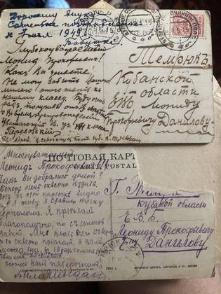
без подписи из истории: «Не могу забыть Вашего милого отношения к нашему классу» — открытки ученика 1914 года 1914 оборот 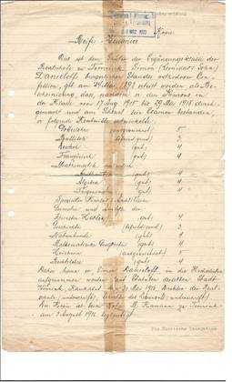
без подписи из истории: Из Темрюка в Берлин по печатям: три документа Семёна Данилова, 1916–1923 1916 оборот 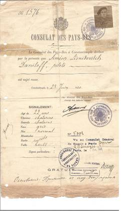
без подписи из истории: Из Темрюка в Берлин по печатям: три документа Семёна Данилова, 1916–1923 1920 оборот 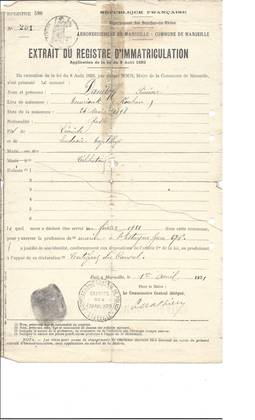
без подписи из истории: Из Темрюка в Берлин по печатям: три документа Семёна Данилова, 1916–1923 1921 оборот 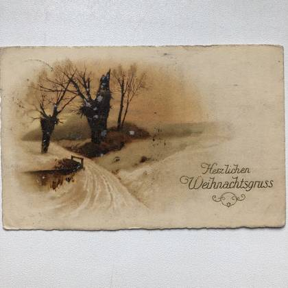
Немецкая рождественская открытка «Herzlichen Weihnachtsgruss», 1925: зимняя дорога, голые деревья, свет за холмом 1925 Мальмё, 23 апреля 1973 — первое письмо после того, как их свёл племянник Александр: «Как рад был я! Письмо от земляков, родных!.. Я слышал что и Леля и Володя покинули нас. Ну а Раичка? Жива-ли она?» из истории: «Мне вот через 2 дня исполнится 75 лет»: двадцать писем Семёна Данилова из Мальмё, 1973–1975 1973 Мальмё, 5 июня 1973, лист первый: «Просто не верится — сон-ли это или действительность. Да, сколько лет прошло с тех пор когда мы были вместе… К твоему дню рождения отправил тебе карточку с цветами» из истории: «Мне вот через 2 дня исполнится 75 лет»: двадцать писем Семёна Данилова из Мальмё, 1973–1975 1973 Тот же день, листы второй и третий — тут он называет свой возраст: «Мне вот через 2 дня исполнится 75 лет. Живу на пенсии… я женат на Англичанке. Зовут её Дина. Дети: Леонард, Дуня… Что касается Леонида, он, кажется, теперь в Польше. Он коммерсант» из истории: «Мне вот через 2 дня исполнится 75 лет»: двадцать писем Семёна Данилова из Мальмё, 1973–1975 1973 Конец того же письма: «Ты, Тоня, пишешь что не знаешь как писать мой адрес. А это очень просто: S.L. DANILOFF, FRIDHEMSTORG 22, 217:53 MALMÖ, Sweden… По-видимому во всей Швеции есть только один Данилов» из истории: «Мне вот через 2 дня исполнится 75 лет»: двадцать писем Семёна Данилова из Мальмё, 1973–1975 1973 Мальмё, 8 августа 1973: «Так был рад услышать от тебя. Это, как будто праздник какой когда приходят письма от тебя, Коли или Саши… Ты находишь что Дина молода и красива? Да она на 14 лет [моложе меня]» из истории: «Мне вот через 2 дня исполнится 75 лет»: двадцать писем Семёна Данилова из Мальмё, 1973–1975 1973 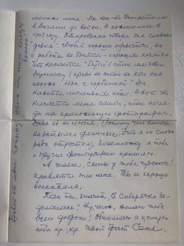
Второй лист того же письма: «Мы как-то встретились в Англии до войны. А поженились в 1948 году… Так ты, значит, в Сибирячку заделалась?» из истории: «Мне вот через 2 дня исполнится 75 лет»: двадцать писем Семёна Данилова из Мальмё, 1973–1975 1973 Мальмё, 14 сентября 1973: «читая твои письма или даже приписочки на письмах Коли, трогают меня твои слова „родной брат“. Как подумаешь, ведь сколько лет прошло с тех пор, когда кто-нибудь называл меня „родным“» из истории: «Мне вот через 2 дня исполнится 75 лет»: двадцать писем Семёна Данилова из Мальмё, 1973–1975 1973 Лист из осеннего письма 1973 года: «На прошлой неделе был я в Копенгагене, в Дании… лежит Копенгаген в 1½ часов езды (на пароходе) от Мальмё… Скажи, Тоня, когда день рождения Раички? Хочу ещё раз попробовать напомнить ей о своём существовании» из истории: «Мне вот через 2 дня исполнится 75 лет»: двадцать писем Семёна Данилова из Мальмё, 1973–1975 1973 Мальмё, 8 октября 1973 — он отвечает на её слова о себе: «Ты, Тоня, пишешь: „ведь я уже старушка и вдобавок маленькая. Все в нашей семье были высокие, а я так и осталась недоростим“… Грустно мне стало» из истории: «Мне вот через 2 дня исполнится 75 лет»: двадцать писем Семёна Данилова из Мальмё, 1973–1975 1973 Листы того же письма: «Кричали мне в голову слова Некрасова из „Дедушки Якова“ — „Бог, видно, дал ему добрую душу“… Так вот мне хотелось бы прислать тебе пару [сандалий] для пробы. Быть может и другим членам семьи Лухнёвых понравятся они» из истории: «Мне вот через 2 дня исполнится 75 лет»: двадцать писем Семёна Данилова из Мальмё, 1973–1975 1973 Конец того же письма: «Получил от „Евдокии Семёновны“ письмо с приложением письма для всех вас Лухнёвых в Усть-Каменогорске. Письмо написано по-английски. Я сделал перевод… У меня есть маленькая избушка на берегу озера. Это около 60 километров от Мальмё» из истории: «Мне вот через 2 дня исполнится 75 лет»: двадцать писем Семёна Данилова из Мальмё, 1973–1975 1973 Письмо Дины на двух языках: справа её собственная английская рука — «Dear Tonja, Many many thanks for your really beautiful letter which I was so happy to get… Yours Deena», слева русский перевод рукой мужа. Ниже её словами: «Сеня сделал для меня такой чудный перевод твоего „поэтического“ письма. Он так счастлив, найдя свою дорогую сестру» из истории: «Мне вот через 2 дня исполнится 75 лет»: двадцать писем Семёна Данилова из Мальмё, 1973–1975 1973 Мальмё, 27 марта 1974: «Коля писал, что тебе надо было обратиться к доктору, что лекарств накидали… А как ты чувствуешь себя на новой квартире? Хорошо устроились?» из истории: «Мне вот через 2 дня исполнится 75 лет»: двадцать писем Семёна Данилова из Мальмё, 1973–1975 1974 Листы того же письма: «Коля в своём письме упомянул что ты борешься со своими „болячками“… Знаешь, Тоня, в семье Даниловых кажется все любили рисовать. И я тоже любил заниматься этим… прилагаю к письму маленький набросок из моего альбомчика для набросков» из истории: «Мне вот через 2 дня исполнится 75 лет»: двадцать писем Семёна Данилова из Мальмё, 1973–1975 1974 Лист про вложенный набросок: «Был я как то в отпуску в „ARILD“ (произносится: „АРИЛЬД“). Это очень маленький посёлок рыбаков, километров 120 от Мальмё… Бумага, карандаш, краска — и за дело» из истории: «Мне вот через 2 дня исполнится 75 лет»: двадцать писем Семёна Данилова из Мальмё, 1973–1975 1974 Открытка к дню рождения, Мальмё, 27 апреля 1974, с наклеенной картинкой синиц: «Ведь ты у меня единственная родная сестричка. Во всём свете нет никого по сравнению с тобой»; сбоку приписка: «Если ты потрёшь эти цветы пальцем, цветы излучают аромат» из истории: «Мне вот через 2 дня исполнится 75 лет»: двадцать писем Семёна Данилова из Мальмё, 1973–1975 1974 Мальмё, 24 мая 1974: «Прежде всего большое тебе спасибо за твои 2 письма. Столько теплоты, света излучают они. Читаю, читаю — не могу начитаться… У нас тут тоже весна» из истории: «Мне вот через 2 дня исполнится 75 лет»: двадцать писем Семёна Данилова из Мальмё, 1973–1975 1974 Листы того же письма — родительский двор в Темрюке по памяти: «Как часто я бываю в Темрюке. Там, где мы все провели свои счастливые года… Присяду на порожке у нашей кухоньки… Напротив стоит акация. А вот, вдали у ворот „Вход“ и „Выход“. Сарай. Сколько времени провёл я там за постройкой мачт и пароходов…» из истории: «Мне вот через 2 дня исполнится 75 лет»: двадцать писем Семёна Данилова из Мальмё, 1973–1975 1974 Конец того же письма — про отца: «Люблю я свежий воздух, физическую деятельность, люблю солнышко. Таков был наш папа. С любовью вспоминаю о нём, с благодарностью за всё то, что он мне дал»; сбоку: «Передай, пожалуйста, мой привет Коле, Лиде и Юлике» из истории: «Мне вот через 2 дня исполнится 75 лет»: двадцать писем Семёна Данилова из Мальмё, 1973–1975 1974 Мальмё, 9 июня 1974, на четверых сразу: «Дорогие вы мои! Тоня, Лида, Коля и Юлика! Получил ваши поздравления ко дню моего Рождения… прилагаю фото снимок самого себя» из истории: «Мне вот через 2 дня исполнится 75 лет»: двадцать писем Семёна Данилова из Мальмё, 1973–1975 1974 Листы того же письма: «Получил поздравления и от Саши, Лили и Светы, от Дунечки с мужем (Роем), от Дины… мои „Англичане“ собираются посетить меня в Августе в Malmö… Много работы в моей даче „Даниловке“: косить траву, чинить крышу, красить оконные рамы, двери» из истории: «Мне вот через 2 дня исполнится 75 лет»: двадцать писем Семёна Данилова из Мальмё, 1973–1975 1974 Конец того же письма — как зовут озеро у дачи: «озеро (Ringsjö = „Круглое озеро“ — на самом же деле оно больше походит на восьмёрку)… Ваш брат, дядя и дедушка Сеня» из истории: «Мне вот через 2 дня исполнится 75 лет»: двадцать писем Семёна Данилова из Мальмё, 1973–1975 1974 Мальмё, 11 июля 1974: «Хотелось бы, как ты [из Казахстана], прислать тебе привет из Солнечного Мальмё. Но уж, видно, обиделось Солнышко на Мальмё… Такое кислое лето у нас тут в этом году» из истории: «Мне вот через 2 дня исполнится 75 лет»: двадцать писем Семёна Данилова из Мальмё, 1973–1975 1974 Листы того же письма — дни рождения английской родни списком: «Да, ты хотела знать когда их дни Рождения. Дина — 8го февраля, Рой — 16го апреля, Дуня — 28го августа» из истории: «Мне вот через 2 дня исполнится 75 лет»: двадцать писем Семёна Данилова из Мальмё, 1973–1975 1974 Конец того же письма — снова об отце и матери: «я иногда замечаю в себе черты сходные с папаньими… Люблю я свежий воздух… Мама наша? Ну, это совсем другое»; сбоку: «Привет Коле и Лиде» из истории: «Мне вот через 2 дня исполнится 75 лет»: двадцать писем Семёна Данилова из Мальмё, 1973–1975 1974 Мальмё, 19 августа 1974, после гостей: «Дуничка и Рой были здесь. Целых 3 недели. Понятно, что вся моя личная жизнь потерпела большой переворот. Молодость и взрослый возраст трудно совместить» из истории: «Мне вот через 2 дня исполнится 75 лет»: двадцать писем Семёна Данилова из Мальмё, 1973–1975 1974 Листы того же письма — три недели чужого распорядка: «Я вставал рано утром (часов в 5)… Они же наоборот, вставали позже (часов в 8)… Завтрак английский довольно объёмный: начинается с овсяного киселя с молоком, затем яичко с хлебом и маслом… Ведь Дуничка начала школу в Мальмё» из истории: «Мне вот через 2 дня исполнится 75 лет»: двадцать писем Семёна Данилова из Мальмё, 1973–1975 1974 Конец того же письма: «Тишина воцарилась в „22“ (так мы называем мою квартиру)… А вот день женидьбы (Дунички и Роя) мы отпраздновали бутылочкой хорошего винца»; в самом низу: «Привет всем Лухнёвым!» из истории: «Мне вот через 2 дня исполнится 75 лет»: двадцать писем Семёна Данилова из Мальмё, 1973–1975 1974 Мальмё, 24 сентября 1974: «Это у меня тут настоящий праздник когда прибудет весточка из Усть-Каменогорска. Все вы мне милы и дороги: и ты, Тоня, и Коля и Лида и Юлика» из истории: «Мне вот через 2 дня исполнится 75 лет»: двадцать писем Семёна Данилова из Мальмё, 1973–1975 1974 Листы того же письма — про машину гостей и школьных подруг дочери: «Они прибыли тут на своей машинке „MORTAN“. Спортивная машинка… Ведь Дуничка начала школу в Мальмё. У неё здесь много подруг и ребят, с которыми она вместе ходила в школу» из истории: «Мне вот через 2 дня исполнится 75 лет»: двадцать писем Семёна Данилова из Мальмё, 1973–1975 1974 Конец того же письма — про её акварели и свои глаза: «Так, ты Тоня, взялась за акварел. Это славно. Люблю я её… Мои глаза немного похудшали. Ну, так я, так сказать, прохожу „курс“ лечения. Это продолжится месяц, а 2» из истории: «Мне вот через 2 дня исполнится 75 лет»: двадцать писем Семёна Данилова из Мальмё, 1973–1975 1974 Мальмё, 11 ноября 1974: «Сколько теплоты, любви в сердце твоём. Счастливы должны быть все те люди, которые живут близ тебя… Как же я люблю твои письма! Читаю, перечитываю без [конца]» из истории: «Мне вот через 2 дня исполнится 75 лет»: двадцать писем Семёна Данилова из Мальмё, 1973–1975 1974 Листы того же письма — зовут в Англию: «что касается Дунички, так она породы Даниловых. Такая скоренькая, поворотливая… Так она просила меня поехать с ними в Англию! „Всё, говорят, там для тебя готово: и комнатка (у них свой домик с садом) и кроватка“… Как раз в это время прохожу я курс лечения своих глаз» из истории: «Мне вот через 2 дня исполнится 75 лет»: двадцать писем Семёна Данилова из Мальмё, 1973–1975 1974 Конец того же письма: «Само собой разумеется когда пройдут лета, притупится зрение. Это не случайное заболевание… Море! Как оно бушует, с белыми гребешками. Люблю я смотреть на него. Стихия!» из истории: «Мне вот через 2 дня исполнится 75 лет»: двадцать писем Семёна Данилова из Мальмё, 1973–1975 1974 Вырезки из шведских телепрограмм о советских артистах, с его пометками по-русски прямо на полях: «Ах, как-же играл! Баха!» у гармониста-чемпиона мира и «Ирина Моисеева и Андрей Миненков» у пары фигуристов из истории: «Мне вот через 2 дня исполнится 75 лет»: двадцать писем Семёна Данилова из Мальмё, 1973–1975 1975 Конверт со шведскими марками и штемпелем 15.9.75: «С.С.С.Р., 492038 Усть-Каменогорск, ул. Добролюбова 43-57, Лухнёвой А. Л.»; обратный — «Sweden — Швеция, 217-53 Malmö, Fridhems torg 22, S. L. Daniloff» из истории: «Мне вот через 2 дня исполнится 75 лет»: двадцать писем Семёна Данилова из Мальмё, 1973–1975 1975 Мальмё, 12 февраля 1975, лист ①: «Ты говоришь что Дуничка для тебя что-то „святое“. Да, для меня тоже. Да ещё бы, ведь она Евдокия Семёновна. Ростом она маленькая, зато головка у неё из золота» из истории: «Мне вот через 2 дня исполнится 75 лет»: двадцать писем Семёна Данилова из Мальмё, 1973–1975 1975 Листы ①–② того же письма: «−38°!!! Ух, знаешь, у меня мороз по коже проходит когда я читаю это… „На судьбу надейся, да и сам не плошай“. Я много об этом думал. Судьба даёт нам жизнь, вроде как капитал; от нас самих зависит как мы сможем управлять этим капиталом» из истории: «Мне вот через 2 дня исполнится 75 лет»: двадцать писем Семёна Данилова из Мальмё, 1973–1975 1975 Листы ②–③ того же письма — кем он был до Швеции: «Когда-то, будучи моряком, я несколько раз посещал Ялту. И Евпаторию я тоже знаю. И Севастополь мне знаком. Там лежал я в больнице (заразился где-то тифом). Тиф-то перенёс, а вот последствия на долго остались. Глаза» из истории: «Мне вот через 2 дня исполнится 75 лет»: двадцать писем Семёна Данилова из Мальмё, 1973–1975 1975 Лист ③, конец письма — совет сестре, как отдыхать в середине дня: «Сядь поудобней, закрой глаза… скажи себе: „вот, так мне удобно, так уютно, все работы подождут, теперь я отдохну“. Да так и просиди 10÷15 минут» из истории: «Мне вот через 2 дня исполнится 75 лет»: двадцать писем Семёна Данилова из Мальмё, 1973–1975 1975 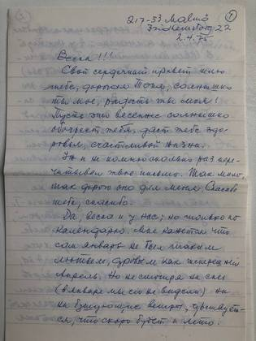
Мальмё, 2 апреля 1975, лист ①: «Весна!!! Свой сердечный привет шлю тебе, дорогая Тоня, солнышко ты моё, радость ты моя!» из истории: «Мне вот через 2 дня исполнится 75 лет»: двадцать писем Семёна Данилова из Мальмё, 1973–1975 1975 Листы ②–③ того же письма — кем он работал: «язык мой, язык инженера. А ты, имея двух сыновей-инженеров, поймёшь меня… Последние годы моей активной жизни занимался я изучением психологии труда, где источником энергии служит человек» из истории: «Мне вот через 2 дня исполнится 75 лет»: двадцать писем Семёна Данилова из Мальмё, 1973–1975 1975 Листы ④–⑤ того же письма: «Никогда не насилуй себя (если напр. тебе хочется спать, или чувствуешь себя утомлённой). Отдохни… Эти 10–15 минут отдыха не потерянное время!.. В мыслях своих переношусь я к тебе в Усть-Каменогорск и приглашаю тебя на маленькую прогулку» из истории: «Мне вот через 2 дня исполнится 75 лет»: двадцать писем Семёна Данилова из Мальмё, 1973–1975 1975 Лист ⑥, конец: «Я собственно собирался поблагодарить всех вас отдельно за ваши письма: и Колю, и Лиду, и Юлику… Посылку с книгами получил. От души благодарю всех вас крепко» из истории: «Мне вот через 2 дня исполнится 75 лет»: двадцать писем Семёна Данилова из Мальмё, 1973–1975 1975 10 апреля 1975 — о том, чего не вернуть: «Сесть-бы где либо — где поменьше людей, шуму — да и поговорить о былом. О Темрюке, о нашем домике, о нашей семейке. Думал-ли я когда либо что судьба этак разбросает нас во все стороны белого света» из истории: «Мне вот через 2 дня исполнится 75 лет»: двадцать писем Семёна Данилова из Мальмё, 1973–1975 1975 Второй лист того же письма — сколько он знал языков: «Как-бы мимоходом изучил четыре иностранных языка. Откровенно говоря, поработал я усердно. Зато и жизнь была такой интересной» из истории: «Мне вот через 2 дня исполнится 75 лет»: двадцать писем Семёна Данилова из Мальмё, 1973–1975 1975 Открытка ко дню рождения, Мальмё, 28 апреля 1975 — перечень всей семьи: «Наша семейка = Папа, Мама, Леля, я, ты, Володя, Раичка и даже Верочка… И вот только ты, я да Раичка остались в живых»; сбоку: «Привет всем Лухнёвым!» из истории: «Мне вот через 2 дня исполнится 75 лет»: двадцать писем Семёна Данилова из Мальмё, 1973–1975 1975 Мальмё, 31 июля 1975: «это можно сделать в „Даниловке“, на берегу озера. А тут в Мальмё покупаться, загореть. Так, помню, и наш Папа делал. Разбирал разные бумаги, конверты. Нашёл пару снимков самого себя» из истории: «Мне вот через 2 дня исполнится 75 лет»: двадцать писем Семёна Данилова из Мальмё, 1973–1975 1975 Второй лист того же письма, с красной пометой на полях «х) Имя этой деревушки (ARILD) „Арильд“»: «Были лет 20 тому назад… в маленькой (очень живописной) рыбачьей деревушке… Вот посмотри на своего братца!»; внизу: «P.S. Перешли эти снимки к Саше. Пусть посмотрит на своего дядьку» из истории: «Мне вот через 2 дня исполнится 75 лет»: двадцать писем Семёна Данилова из Мальмё, 1973–1975 1975 Мальмё, 10 сентября 1975, лист ①: «Было у нас тут такое чудное лето. Шведы тут говорят, что с тех пор как тут начались записи метеорологов, такого лета никогда не было. Это около 150 лет!» из истории: «Мне вот через 2 дня исполнится 75 лет»: двадцать писем Семёна Данилова из Мальмё, 1973–1975 1975 Листы ②–③ того же письма: «Я тоже наварил себе варенья. И слива, и клубника и чёрная смородина (это моё самое любимое варенье!)… Другое дело было, когда тебе 15–16 лет было. Теперь же мы с тобой старички!» из истории: «Мне вот через 2 дня исполнится 75 лет»: двадцать писем Семёна Данилова из Мальмё, 1973–1975 1975 Лист ④, конец — о сослуживце, которого забыли: «строил, создавал, планировал, доставалось другим. А мне то даже „спасибо“ не сказали. Грустно. Славный парень был… Это, быть может, осень навеяла на меня. Элегия (Чайковского)» из истории: «Мне вот через 2 дня исполнится 75 лет»: двадцать писем Семёна Данилова из Мальмё, 1973–1975 1975 Мальмё, 26 октября 1975, лист ①: «Как будто солнышко из за тучек выглянуло, всё как бы осветилось, как будто стало теплей… Ведь ты у меня единственная, самая дорогая сестричка» из истории: «Мне вот через 2 дня исполнится 75 лет»: двадцать писем Семёна Данилова из Мальмё, 1973–1975 1975 Листы ②–③ того же письма — ответ на её «я крупица, исчезну бесследно»: «Погляди-ка на своих сыновей. Ведь всё это дело рук твоих. Ты ведь сама мне писала, что была им и отец, и мать. Да я бы тебе памятник поставил, памятник до самого неба!» из истории: «Мне вот через 2 дня исполнится 75 лет»: двадцать писем Семёна Данилова из Мальмё, 1973–1975 1975 Лист ④, конец — обе родовые фамилии его голосом: «А вот Папу и маму, Дедушку и Бабушку поблагодари, что они дали тебе в наследство все те способности… Я горжусь тем, что принадлежу к семье Даниловых и Топчиевых»; сбоку: «Привет Коле и Лиде!» из истории: «Мне вот через 2 дня исполнится 75 лет»: двадцать писем Семёна Данилова из Мальмё, 1973–1975 1975 Мальмё, 18 января 1976, лист первый: «Тоня, голубка ты моя!.. А вот нос мой (я его когда-то отморозил) так даёт себя чувствовать когда холодный влажный ветер дует» из истории: «Был и у меня сын Лёня. Да, был»: двадцать два письма Семёна Данилова из Мальмё, 1976–1979 1976 Конец того же письма — мальмёвская зима: «На днях такой мороз был (−12°). Для жителей в Мальмё это очень холодно… Но вдруг подул ветер с юга. Стало ещё хуже: гололедица! Ужасно! На четвереньках надо было ползать» из истории: «Был и у меня сын Лёня. Да, был»: двадцать два письма Семёна Данилова из Мальмё, 1976–1979 1976 Мальмё, 28 января 1976, страница первая: он зовёт сестру в гости мысленно — «Минуты, нет секунды и я у тебя, в твоей комнатке, тихенько сижу и гляжу на тебя как ты штопаешь чулки… Знаешь я не только читаю их, я „слушаю“ их» из истории: «Был и у меня сын Лёня. Да, был»: двадцать два письма Семёна Данилова из Мальмё, 1976–1979 1976 Страницы вторая и третья того же письма: чай с чёрной смородиной в мальмёвской квартире, «Радио Москва» и русская библиотека в соседнем Лунде — «брал я и Толстого, и Достоевского и Чехова (это мой самый любимый писатель)» из истории: «Был и у меня сын Лёня. Да, был»: двадцать два письма Семёна Данилова из Мальмё, 1976–1979 1976 Страница четвёртая и конец: о дочери — «Славная она дочурка! Просто влюблён в неё. Мне кажется в Даниловых она удалась» — и о новогоднем звонке из Англии из истории: «Был и у меня сын Лёня. Да, был»: двадцать два письма Семёна Данилова из Мальмё, 1976–1979 1976 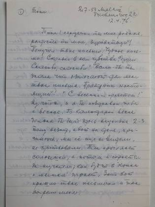
Мальмё, 12 апреля 1976, страница первая: «Если бы ты знала что означают для меня твои письма. Праздник настоящий!» из истории: «Был и у меня сын Лёня. Да, был»: двадцать два письма Семёна Данилова из Мальмё, 1976–1979 1976 Страницы вторая и третья: станица Нижне-Чирская и побег в лес — «я решил уйти из дому и жить в лесу. А лес этот был на другом берегу речки Чира. И вот уж тогда ты, малютка Тоня, проявила свою братскую любовь» из истории: «Был и у меня сын Лёня. Да, был»: двадцать два письма Семёна Данилова из Мальмё, 1976–1979 1976 Страницы четвёртая и пятая: «А ведь это Папа дал мне первые уроки на скрипке. Он был учитель строгий… Гораздо позже оценил я его желание дать мне возможность понимать и любить музыку» из истории: «Был и у меня сын Лёня. Да, был»: двадцать два письма Семёна Данилова из Мальмё, 1976–1979 1976 Мальмё, 6 июля 1976, лист первый: он получил от племянника Александра письмо с фотографиями и впервые увидел его сына — «Вот я и с Женичкой, так сказать, познакомился. Славный паренёк! С такими наивными глазёнками» из истории: «Был и у меня сын Лёня. Да, был»: двадцать два письма Семёна Данилова из Мальмё, 1976–1979 1976 Конец того же письма: «Соловей мой, соловей, голосистый соловей…» по радио из Москвы — «Ты помнишь в квартире Виноградовых поселился доктор Ивановский… Была пластинка „Соловей“. А пела её известная сопранистка Антонина Нежданова» из истории: «Был и у меня сын Лёня. Да, был»: двадцать два письма Семёна Данилова из Мальмё, 1976–1979 1976 Мальмё, 25 июля 1976, лист первый: письмо из Усть-Каменогорска шло с 1 по 18 июля — «Итак, если случится, что и моё письмо может запоздать, не отчаиваться» из истории: «Был и у меня сын Лёня. Да, был»: двадцать два письма Семёна Данилова из Мальмё, 1976–1979 1976 Конец того же письма: «Ведь мне пришлось „ломать“ свой язык частенько. Скажем 5 раз: немецкий, английский, французский, шведский… Но русского языка, родного языка я никогда не забуду» из истории: «Был и у меня сын Лёня. Да, был»: двадцать два письма Семёна Данилова из Мальмё, 1976–1979 1976 Мальмё, 25 июля 1976, отдельное письмо одиннадцатилетней Юле: «По случаю перехода в шестой класс, да ещё с похвальной грамотой, поздравляю тебя и желаю в будущем такого же успеха» из истории: «Был и у меня сын Лёня. Да, был»: двадцать два письма Семёна Данилова из Мальмё, 1976–1979 1976 Конец письма Юле: про их сад — «там и смородина, и малина. Вишни и черешни тоже есть», — подпись «Дедушка Сеня» и приписка «Несколько марок для твоего альбома» из истории: «Был и у меня сын Лёня. Да, был»: двадцать два письма Семёна Данилова из Мальмё, 1976–1979 1976 Мальмё, 9 сентября 1976: письмо пришло, когда у него гостили дочь с зятем, — «Прибыло оно как раз когда мы сидели за завтраком. А завтрак английский довольно обширный» из истории: «Был и у меня сын Лёня. Да, был»: двадцать два письма Семёна Данилова из Мальмё, 1976–1979 1976 Конец того же письма — просьба, на которую в архиве нет ответа: «Ты, Тоня, хорошо бы сделала — если у тебя на это найдётся время — описала это событие, да и вообще свою жизнь во время войны» из истории: «Был и у меня сын Лёня. Да, был»: двадцать два письма Семёна Данилова из Мальмё, 1976–1979 1976 оборот 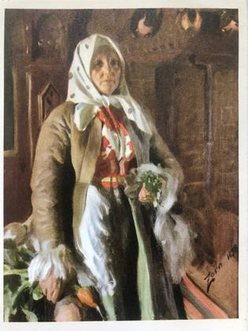
Лицевая сторона карточки: «Mona» Андерса Цорна 1898 года из Цорновского музея в Муре — старуха в белом платке с охапкой овощей из истории: «Был и у меня сын Лёня. Да, был»: двадцать два письма Семёна Данилова из Мальмё, 1976–1979 1976 Мальмё, 20 октября 1976: «Был и у меня сын Лёня. Да, был. Два года тому назад случилось несчастье: переезжая железнодорожное полотно попал под курьерский поезд. Как это случилось? Никто не видел, не слышал» из истории: «Был и у меня сын Лёня. Да, был»: двадцать два письма Семёна Данилова из Мальмё, 1976–1979 1976 Конец того же письма — про Цорна: «они (в музее) притащили мне гору рисунков, набросков. Забыл я что надо было идти на обед, забыл я всё. Вот у кого была золотая рука!» из истории: «Был и у меня сын Лёня. Да, был»: двадцать два письма Семёна Данилова из Мальмё, 1976–1979 1976 Мальмё, 14 декабря 1976, о сыне во второй и последний раз: «Да жаль Лёню. Славный он был. Вот только, кажется, под влиянием своих товарищей пошёл по пути, не совсем безукоризненному… Ну, не хочу я быть судьёй» из истории: «Был и у меня сын Лёня. Да, был»: двадцать два письма Семёна Данилова из Мальмё, 1976–1979 1976 Конец того же письма: что он читает в Мальмё, как дочь вяжет «поджав под себя ноги, по-турецки», и вопрос без ответа — «Раичка. Несколько раз просил переслать ей свои новогодние пожелания. Ни слова в ответ. Обидел я её? Как? Когда?» из истории: «Был и у меня сын Лёня. Да, был»: двадцать два письма Семёна Данилова из Мальмё, 1976–1979 1976 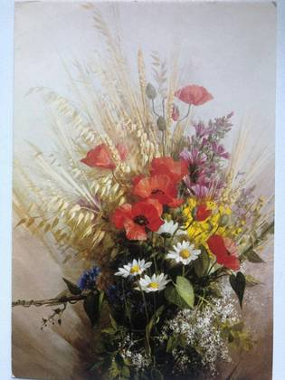
Лицевая сторона поздравительной карточки: «Summer Rhapsody» с картины Вернона Уорда — маки, васильки, ромашки и колосья из истории: «Был и у меня сын Лёня. Да, был»: двадцать два письма Семёна Данилова из Мальмё, 1976–1979 1977 Разворот той же карточки, 1 мая 1977, ко дню её рождения: «проберусь я в Усть-Каменогорск, найду ул. Добролюбова 43-57… возьму твои руки в мои руки — чтоб ещё ближе чувствовать твоё присутствие — и посидим, помолчим» из истории: «Был и у меня сын Лёня. Да, был»: двадцать два письма Семёна Данилова из Мальмё, 1976–1979 1977 Конец того же поздравления: «Сяду на своего конька-горбунка и махну. Через горы и долы, через моря и горы — в Мальмё, Fridhemstorg 22», и отдельно привет Коле, Лиде и Юлочке от «дяди и дедушки Сени» из истории: «Был и у меня сын Лёня. Да, был»: двадцать два письма Семёна Данилова из Мальмё, 1976–1979 1977 Мальмё, 5 ноября 1977: «Тебе бы самой взять палитру, кисти, краски да и передать, запечатлеть всё это на полотне» — и о себе: «Сделал я пару набросков. А вот как приведу в порядок эти наброски, пришлю тебе» из истории: «Был и у меня сын Лёня. Да, был»: двадцать два письма Семёна Данилова из Мальмё, 1976–1979 1977 Конец того же письма: шведский ноябрь без снега, град накануне и «Радио! Не знаю что бы я без него делать стал. Часто слушаю передачи из СССР» из истории: «Был и у меня сын Лёня. Да, был»: двадцать два письма Семёна Данилова из Мальмё, 1976–1979 1977 оборот 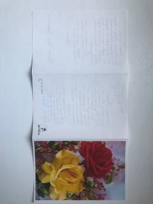
Лицевая сторона поздравительной карточки 1978 года: жёлтая и красная розы в цвету яблони из истории: «Был и у меня сын Лёня. Да, был»: двадцать два письма Семёна Данилова из Мальмё, 1976–1979 1978 оборот 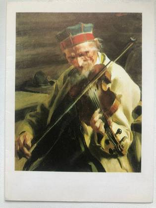
Лицевая сторона карточки: «Hins Anders» Андерса Цорна из Тильской галереи в Стокгольме — старик-скрипач в далекарлийской шапке из истории: «Был и у меня сын Лёня. Да, был»: двадцать два письма Семёна Данилова из Мальмё, 1976–1979 1978 Мальмё, 6 января 1979, страница первая: «Тут случилось маленькое „крушение“… Переходя улицу, поскользнулся и упал, протянув правую руку. Ушибся. Перевязка»; и сон про Темрюк — «в нашем вигваме, с Булянчиком» из истории: «Был и у меня сын Лёня. Да, был»: двадцать два письма Семёна Данилова из Мальмё, 1976–1979 1979 Страницы вторая и третья: темрюкский двор и родня по памяти — «Володя. Как это случилось, что он так рано умер?», «Славная была семейка… Написать бы повесть, другую „Война и Мир“» из истории: «Был и у меня сын Лёня. Да, был»: двадцать два письма Семёна Данилова из Мальмё, 1976–1979 1979 Страница четвёртая: четыре юбилейные английские марки для Юли и вопрос про толстовский юбилей — «праздновался ли день рождения (100 лет) Л. Н. Толстого?» из истории: «Был и у меня сын Лёня. Да, был»: двадцать два письма Семёна Данилова из Мальмё, 1976–1979 1979 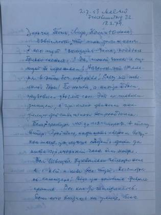
Мальмё, 18 февраля 1979: «У нас тут „зимушка-зима, холодная больно снежная…“ Да, такой зимы я ещё тут не переживал!» из истории: «Был и у меня сын Лёня. Да, был»: двадцать два письма Семёна Данилова из Мальмё, 1976–1979 1979 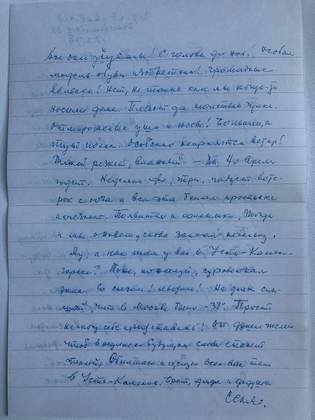
Конец того же письма: шведские сугробы, «новая модель обуви изобретена! Громадные валенки!» — и «На днях слышал, что в Москве было −38°» из истории: «Был и у меня сын Лёня. Да, был»: двадцать два письма Семёна Данилова из Мальмё, 1976–1979 1979 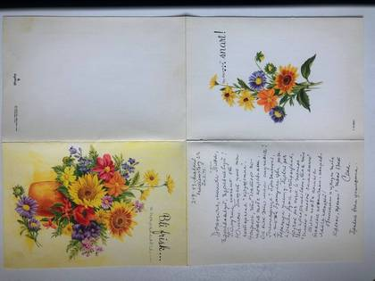
Развёрнутая шведская карточка «Bli frisk… snart!» — «поправляйся… скорее» — с подсолнухами и его письмом внутри из истории: «Был и у меня сын Лёня. Да, был»: двадцать два письма Семёна Данилова из Мальмё, 1976–1979 1979 Тот же лист крупно, 20 февраля 1979: «Получил письмо от Юлики. Пишет, что ты потерпела „крушение“… Гололедица? Признаюсь, я тоже буксовал два раза» из истории: «Был и у меня сын Лёня. Да, был»: двадцать два письма Семёна Данилова из Мальмё, 1976–1979 1979 оборот 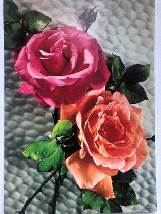
Лицевая сторона открытки: две розы, малиновая и оранжевая из истории: «Был и у меня сын Лёня. Да, был»: двадцать два письма Семёна Данилова из Мальмё, 1976–1979 1979 Мальмё, 24 апреля 1979, страница первая: «Правая рука зажила. Опять могу работать нормально», и про Юлю — «„Девчонка молодец“, это мне очень нравится» из истории: «Был и у меня сын Лёня. Да, был»: двадцать два письма Семёна Данилова из Мальмё, 1976–1979 1979 Страница вторая: «Старость? Конечно, все вокруг тебя как бы удаляются. Поэтому так люблю я делать путешествия во времена детства, молодости. Когда все дороги, бывало, были открыты для тебя» из истории: «Был и у меня сын Лёня. Да, был»: двадцать два письма Семёна Данилова из Мальмё, 1976–1979 1979 оборот 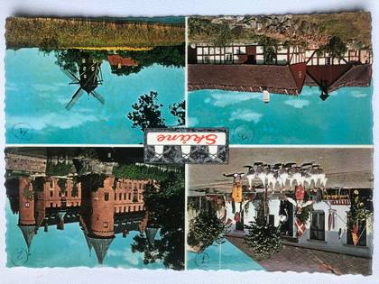
Лицевая сторона открытки «Skåne»: четыре вида — мельница в Сканёре, замок Троллехольм, двор Скеппарпсгорден в Хавонге и сконская мельница из истории: «Был и у меня сын Лёня. Да, был»: двадцать два письма Семёна Данилова из Мальмё, 1976–1979 1979 Мальмё, 20 июля 1979: «„Сибирь“ — это слово ужас для немцев. А если-бы они только знали. Чем только не богата Сибирь. И воздух, и солнце и приволье» из истории: «Был и у меня сын Лёня. Да, был»: двадцать два письма Семёна Данилова из Мальмё, 1976–1979 1979 Конец того же письма: концерт украинских песен по радио из Москвы — «Уж больно это по сердцу мне было!» — и цена венгерского арбуза в кронах; на полях: «5 марок для Юлики» из истории: «Был и у меня сын Лёня. Да, был»: двадцать два письма Семёна Данилова из Мальмё, 1976–1979 1979 оборот 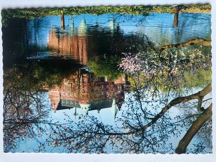
Лицевая сторона открытки: городская библиотека Мальмё, отражённая в воде, в цветущих ветках из истории: «Был и у меня сын Лёня. Да, был»: двадцать два письма Семёна Данилова из Мальмё, 1976–1979 1979 Мальмё, 3 сентября 1979, лист первый: «Как будто я в Темрюке, в нашей квартире; и Володя там был со мной, в сарае, строили мы вместе разные машины и пароходы пока не позвала нас Мама на обед» из истории: «Был и у меня сын Лёня. Да, был»: двадцать два письма Семёна Данилова из Мальмё, 1976–1979 1979 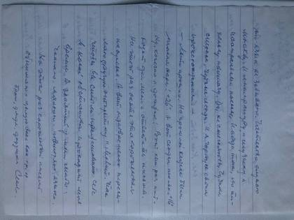
Конец того же письма: «Русский мой язык не забываю. Частенько слушаю Москву… Чудная страна, чудные люди. И я горжусь своим происхождением» из истории: «Был и у меня сын Лёня. Да, был»: двадцать два письма Семёна Данилова из Мальмё, 1976–1979 1979 Мальмё, 15 октября 1979, лист первый; в кружке сверху — «Приложен листок „Осень“»: «Как люблю я твои буковки! Такие чёткие, ровненькие… Жизнь так богата, просто не знаешь за что взяться» из истории: «Был и у меня сын Лёня. Да, был»: двадцать два письма Семёна Данилова из Мальмё, 1976–1979 1979 Разворот той же карточки рукой Дины, по-английски: «I was so very very sorry to hear about your accident and I hope the fracture has healed up well»; рядом рукой мужа, обведено кружком, — «Перевод на обороте» из истории: «Был и у меня сын Лёня. Да, был»: двадцать два письма Семёна Данилова из Мальмё, 1976–1979 1979 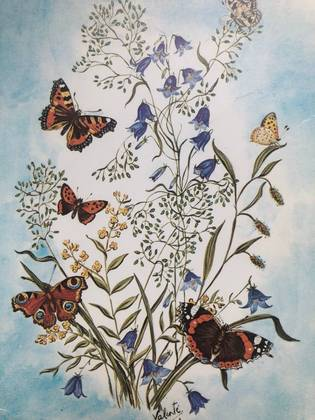
Лицевая сторона английской карточки: колокольчики и бабочки, «Harebells & Butterflies by Juana Valente», Accord Publications, Лондон из истории: «Был и у меня сын Лёня. Да, был»: двадцать два письма Семёна Данилова из Мальмё, 1976–1979 1979 Оборот той же карточки: перевод рукой Семёна — «Дорогая Тоня (сестра по браку), мне было так грустно когда я узнала от Сени что ты упала и поранила себе правую руку», и его приписка «P.S. Я как-то писал Дине о том как Тоня упала» из истории: «Был и у меня сын Лёня. Да, был»: двадцать два письма Семёна Данилова из Мальмё, 1976–1979 1979 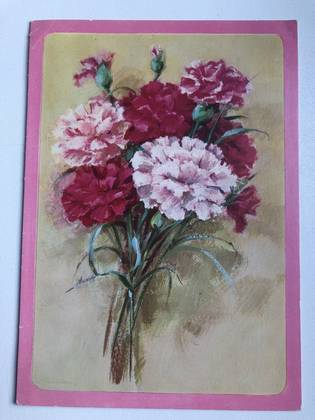
Печатная открытка с гвоздиками в розовой рамке; надписей на снятой стороне нет из истории: «Мне вот через 2 дня исполнится 75 лет»: двадцать писем Семёна Данилова из Мальмё, 1973–1975 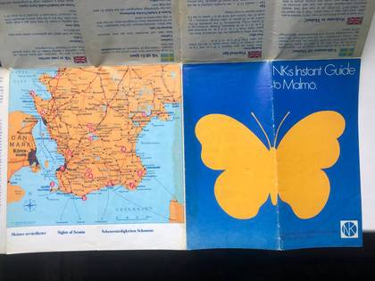
Та же карта: обложка с жёлтой бабочкой и карта Сконе от Копенгагена до Симрисхамна из истории: «Мне вот через 2 дня исполнится 75 лет»: двадцать писем Семёна Данилова из Мальмё, 1973–1975 Туристская карта Мальмё «NK:s Instant Guide to Malmö», развёрнутая на плане города; в легенде от руки помечено крестиком и подписано «Fridhemstorg» — его собственная площадь из истории: «Мне вот через 2 дня исполнится 75 лет»: двадцать писем Семёна Данилова из Мальмё, 1973–1975 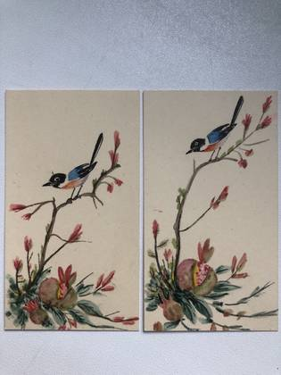
Две акварели одного мотива: птица на цветущей ветке над разломленным плодом, парные листы. Подписи и года на кадре нет из истории: «Мне вот через 2 дня исполнится 75 лет»: двадцать писем Семёна Данилова из Мальмё, 1973–1975 Художественная открытка Royle «Great Spotted Woodpeckers. From a painting by Basil Ede», к которой он от руки приписал русский перевод: «большой (с пятнами) дятел, с картины Базиля Эде», и внизу — «Эту картину можно также получить в размере 48 х 38 см (сантиметров)» из истории: «Мне вот через 2 дня исполнится 75 лет»: двадцать писем Семёна Данилова из Мальмё, 1973–1975 Шведская открытка с ромашками и печатным «En försenad hyllning till din födelsedag…» — запоздалое поздравление с днём рождения; своей надписи на этой стороне нет из истории: «Мне вот через 2 дня исполнится 75 лет»: двадцать писем Семёна Данилова из Мальмё, 1973–1975 Внутренняя сторона складной карточки: «From your very loving daughter Deena» её рукой, ниже пояснение Семёна по-русски: «Дина очень любит птиц. У неё масса всяких картинок, изображающих пташек. Вот она и Вам шлёт одну из них со своим приветствием: „от Вашей, крепко Вас любящей, дочери Дины“» из истории: «Мне вот через 2 дня исполнится 75 лет»: двадцать писем Семёна Данилова из Мальмё, 1973–1975 Монограмма, выпиленная лобзиком из фанеры: несколько сцепленных букв, надёжно читаются только «А» и «В». Ни подписи, ни года на кадре нет из истории: «Мне вот через 2 дня исполнится 75 лет»: двадцать писем Семёна Данилова из Мальмё, 1973–1975 Карточка без даты, написанная сразу после отъезда дочери с зятем: «Они пробыли у меня две с лишним недели… К моему удивлению Дуничка оказалась очень хорошей кухаркой!.. Можешь теперь себе представить как я скучаю без них» из истории: «Был и у меня сын Лёня. Да, был»: двадцать два письма Семёна Данилова из Мальмё, 1976–1979 Два обломка кожаного футляра от открыточной гармошки с золотым тиснением «…ТЕМРЮКА»; сняты рядом с линейкой — целый фрагмент около четырёх сантиметров из истории: Темрюкъ до революции: гармошка из восьми открыток в кожаном футляре Первая половина ленты: Александро-Невская церковь, Александровская улица, Ремесленное училище, Городская Управа и городская больница на Марiинской улице из истории: Темрюкъ до революции: гармошка из восьми открыток в кожаном футляре 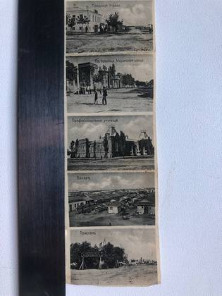
Вторая половина ленты: Городская Управа, больница на Марiинской, Профессiональное училище, Базаръ и Пристань с колёсным пароходом у берега из истории: Темрюкъ до революции: гармошка из восьми открыток в кожаном футляре Пять визитных карточек братьев Даниловых: трижды «Леонидъ Прокофьевичъ Даниловъ · Инженеръ-Механикъ · Харьковъ, Усовская ул. 49» и дважды его брат — «Иванъ Прокофьевичъ Даниловъ · Горный Инженеръ» и та же карточка по-немецки, «Iwan Danilow · Berg-Ingenieur» D006 · 1875–1954 · снимков: 95
без подписи из истории: «Не могу забыть Вашего милого отношения к нашему классу» — открытки ученика 1914 года 1914 оборот без подписи из истории: Из Темрюка в Берлин по печатям: три документа Семёна Данилова, 1916–1923 1916 оборот без подписи из истории: Из Темрюка в Берлин по печатям: три документа Семёна Данилова, 1916–1923 1920 оборот без подписи из истории: Из Темрюка в Берлин по печатям: три документа Семёна Данилова, 1916–1923 1921 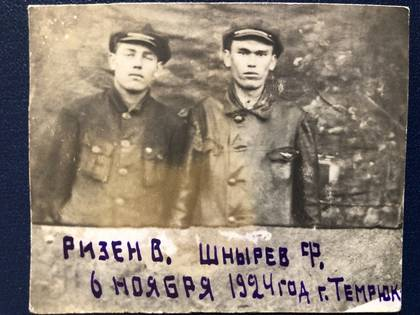
без подписи из истории: «Это таким я уехал из Крыма»: фотоальбом евпаторийского дома, 1924–1963 1924 оборот 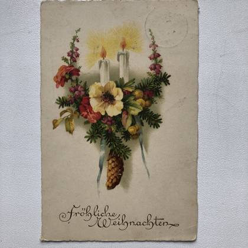
Немецкая рождественская открытка «Fröhliche Weihnachten», 1925 1925 оборот 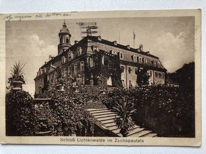
без подписи из истории: От именин в реальном училище до Мальмё 1974-го: четырнадцать открыток из семейного архива 1925 оборот 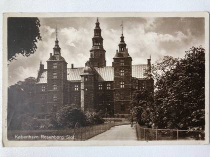
без подписи из истории: От именин в реальном училище до Мальмё 1974-го: четырнадцать открыток из семейного архива 1931 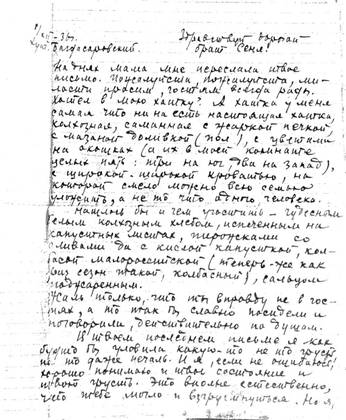
без подписи из истории: «Я тебя всегда понимаю с двух-трёх слов»: письма из СССР в Швецию, 1936–1939 1936 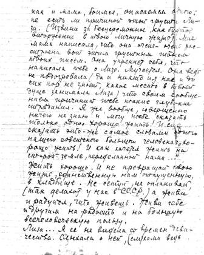
без подписи из истории: «Я тебя всегда понимаю с двух-трёх слов»: письма из СССР в Швецию, 1936–1939 1936 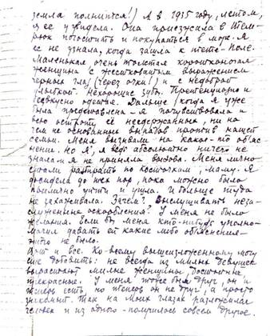
без подписи из истории: «Я тебя всегда понимаю с двух-трёх слов»: письма из СССР в Швецию, 1936–1939 1936 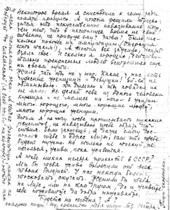
без подписи из истории: «Я тебя всегда понимаю с двух-трёх слов»: письма из СССР в Швецию, 1936–1939 1936 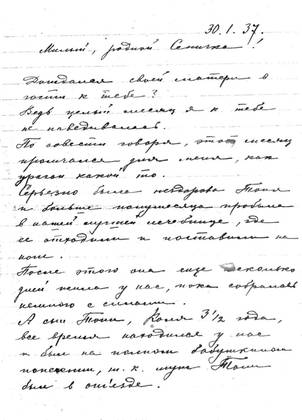
без подписи из истории: «Я тебя всегда понимаю с двух-трёх слов»: письма из СССР в Швецию, 1936–1939 1937 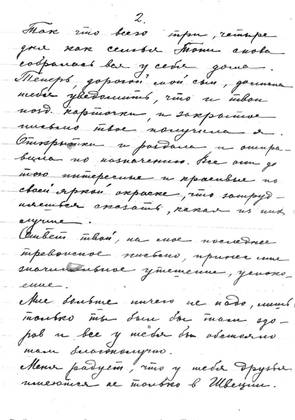
без подписи из истории: «Я тебя всегда понимаю с двух-трёх слов»: письма из СССР в Швецию, 1936–1939 1937 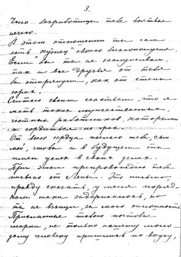
без подписи из истории: «Я тебя всегда понимаю с двух-трёх слов»: письма из СССР в Швецию, 1936–1939 1937 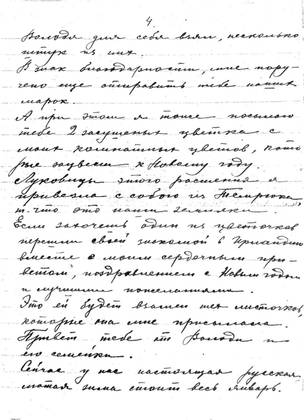
без подписи из истории: «Я тебя всегда понимаю с двух-трёх слов»: письма из СССР в Швецию, 1936–1939 1937 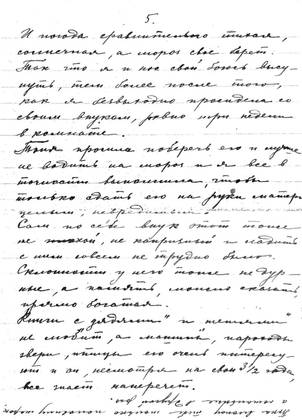
без подписи из истории: «Я тебя всегда понимаю с двух-трёх слов»: письма из СССР в Швецию, 1936–1939 1937 без подписи из истории: «Я тебя всегда понимаю с двух-трёх слов»: письма из СССР в Швецию, 1936–1939 1937 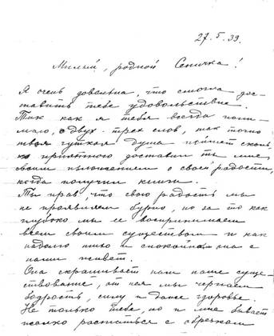
без подписи из истории: «Я тебя всегда понимаю с двух-трёх слов»: письма из СССР в Швецию, 1936–1939 1939 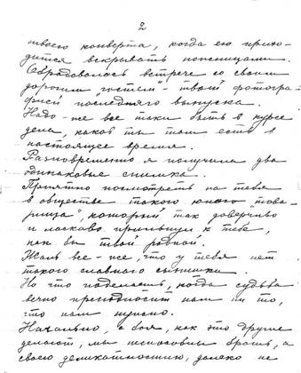
без подписи из истории: «Я тебя всегда понимаю с двух-трёх слов»: письма из СССР в Швецию, 1936–1939 1939 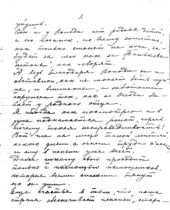
без подписи из истории: «Я тебя всегда понимаю с двух-трёх слов»: письма из СССР в Швецию, 1936–1939 1939 без подписи из истории: «Я тебя всегда понимаю с двух-трёх слов»: письма из СССР в Швецию, 1936–1939 1939 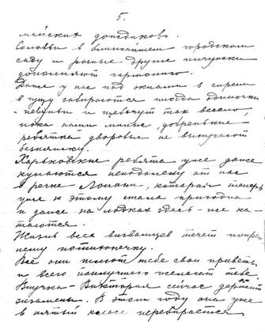
без подписи из истории: «Я тебя всегда понимаю с двух-трёх слов»: письма из СССР в Швецию, 1936–1939 1939 без подписи из истории: «Я тебя всегда понимаю с двух-трёх слов»: письма из СССР в Швецию, 1936–1939 1939 оборот Открытка бабушки внуку Коле в Евпаторию, 26 декабря 1945: на лицевой стороне японская картинка — заснеженная Фудзи, сосны и две лодки на воде; поздравление с Новым 1946 годом и вопрос про кроликов и курочек — на обороте 1945 оборот Открытка той же бабушки, 21 февраля 1946: на лицевой стороне белая цапля среди камыша под большой луной — та самая, которую она на обороте называет «портретом твоей бабушки» 1946 без подписи из истории: «Это таким я уехал из Крыма»: фотоальбом евпаторийского дома, 1924–1963 1948 оборот «Крымская сосна», Южный берег Крыма: карточка дореволюционной печати — «образуетъ лѣса въ среднемъ поясѣ горъ». Поздравление внуку 1948 года на обороте 1948 без подписи из истории: «В возрасте 74 года 4 месяца» — снимок бабушки от 9 июня 1949 1949 без подписи из истории: «В возрасте 74 года 4 месяца» — снимок бабушки от 9 июня 1949 1949 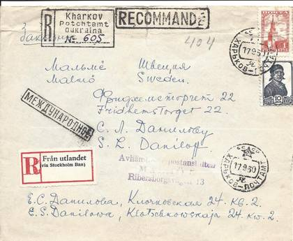
без подписи из истории: «Купили тебе скрипку»: два письма Евдокии Семёновны в Мальмё, 1950 и 1952 1950 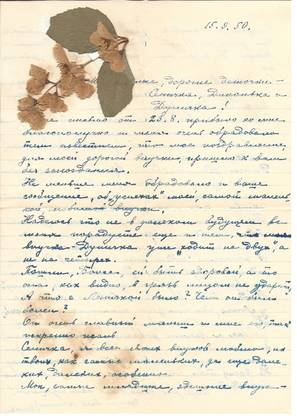
без подписи из истории: «Купили тебе скрипку»: два письма Евдокии Семёновны в Мальмё, 1950 и 1952 1950 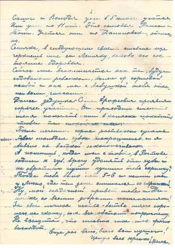
без подписи из истории: «Купили тебе скрипку»: два письма Евдокии Семёновны в Мальмё, 1950 и 1952 1950 Письмо из Постав бабушке: «Очень благодарен Вам, что Вы больными дрожащими руками, а написали мне… В этом письме Вашем я узнал, что наша Бабушка будет жить у нас, я очень и очень рад… Вы действительно принесёте Маме вашем переездом великую духовную поддержку» 1952 Письмо и конверт к нему, 11 августа 1952: «Привет из Постав!… Здравствуйте, Милая, Дорогая Бабушка! Шлю Вам свой горячий солдатский привет». На конверте — «УССР, г. Харьков, Клочковская уч. 24 кв. 2, Евдокие Семёновне Даниловой», обратный адрес «БССР, Молодечненская обл., г. Поставы, в/ч 57204 „Я“», штемпель Постав от 12.8.52 1952 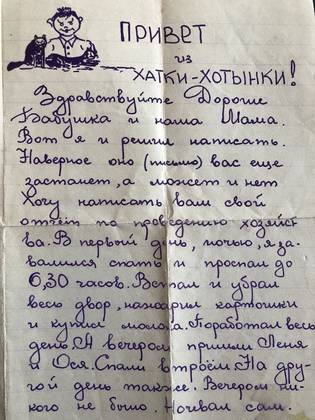
без подписи из истории: «Это таким я уехал из Крыма»: фотоальбом евпаторийского дома, 1924–1963 1952 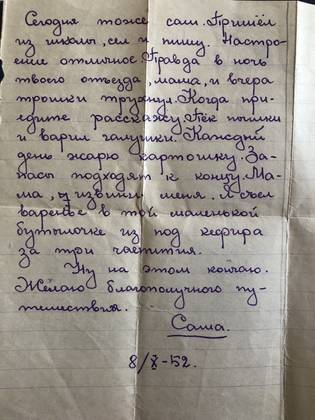
без подписи из истории: «Это таким я уехал из Крыма»: фотоальбом евпаторийского дома, 1924–1963 1952 оборот 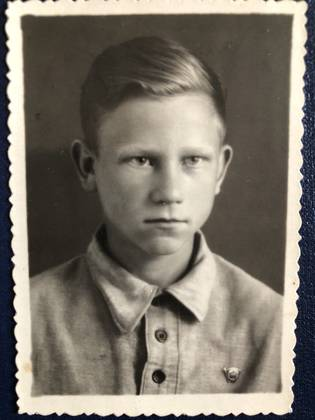
без подписи из истории: «Это таким я уехал из Крыма»: фотоальбом евпаторийского дома, 1924–1963 1952 оборот 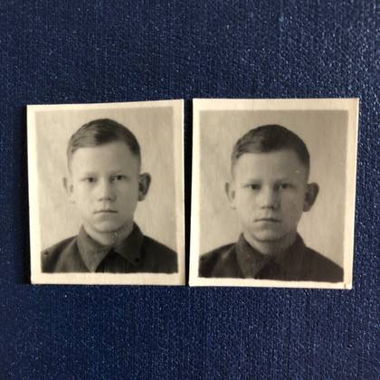
без подписи из истории: «Это таким я уехал из Крыма»: фотоальбом евпаторийского дома, 1924–1963 1952 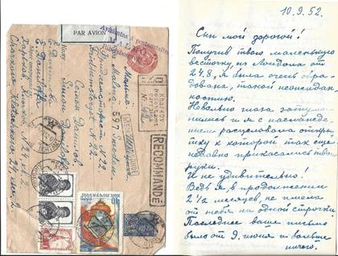
без подписи из истории: «Купили тебе скрипку»: два письма Евдокии Семёновны в Мальмё, 1950 и 1952 1952 без подписи из истории: «Купили тебе скрипку»: два письма Евдокии Семёновны в Мальмё, 1950 и 1952 1952 без подписи из истории: «Купили тебе скрипку»: два письма Евдокии Семёновны в Мальмё, 1950 и 1952 1952 оборот Городской сад имени Т. Г. Шевченко в Харькове, памятник Шевченко: почтовая карточка «Укрфото», подписана к печати 28 августа 1952 года 1952 оборот без подписи из истории: «Это таким я уехал из Крыма»: фотоальбом евпаторийского дома, 1924–1963 1953 оборот без подписи из истории: «Это таким я уехал из Крыма»: фотоальбом евпаторийского дома, 1924–1963 1954 оборот «Крым. Евпатория. Уголок гор. сада»: скульптурная группа детей с шаром и ротонда за деревьями. Крымиздат, 1951, тираж 25 000, цена 30 копеек из истории: «Это таким я уехал из Крыма»: фотоальбом евпаторийского дома, 1924–1963 1954 оборот Открытка «С первомайским приветом!» 1954 оборот без подписи из истории: «Это таким я уехал из Крыма»: фотоальбом евпаторийского дома, 1924–1963 1955 без подписи из истории: «Это таким я уехал из Крыма»: фотоальбом евпаторийского дома, 1924–1963 1955 без подписи из истории: «Это таким я уехал из Крыма»: фотоальбом евпаторийского дома, 1924–1963 1955 без подписи из истории: «Это таким я уехал из Крыма»: фотоальбом евпаторийского дома, 1924–1963 1955 оборот без подписи из истории: «Это таким я уехал из Крыма»: фотоальбом евпаторийского дома, 1924–1963 1956 оборот без подписи из истории: «Это таким я уехал из Крыма»: фотоальбом евпаторийского дома, 1924–1963 1956 оборот без подписи из истории: «Это таким я уехал из Крыма»: фотоальбом евпаторийского дома, 1924–1963 1957 без подписи из истории: «Это таким я уехал из Крыма»: фотоальбом евпаторийского дома, 1924–1963 1958 оборот без подписи из истории: «Это таким я уехал из Крыма»: фотоальбом евпаторийского дома, 1924–1963 1958 без подписи из истории: От именин в реальном училище до Мальмё 1974-го: четырнадцать открыток из семейного архива 1974 Страницы вторая и третья: станица Нижне-Чирская и побег в лес — «я решил уйти из дому и жить в лесу. А лес этот был на другом берегу речки Чира. И вот уж тогда ты, малютка Тоня, проявила свою братскую любовь» из истории: «Был и у меня сын Лёня. Да, был»: двадцать два письма Семёна Данилова из Мальмё, 1976–1979 1976 Мальмё, 3 сентября 1979, лист первый: «Как будто я в Темрюке, в нашей квартире; и Володя там был со мной, в сарае, строили мы вместе разные машины и пароходы пока не позвала нас Мама на обед» из истории: «Был и у меня сын Лёня. Да, был»: двадцать два письма Семёна Данилова из Мальмё, 1976–1979 1979 Письмо «Привет из Крыма!» бабушке: «с 1-го июля беру отпуск, будем с Сашей заниматься текущим ремонтом крыши и переделаем печку… В мае месяце купались в море, а теперь стало холодно. У нас во дворе много зелени и цветов. Ноготки у нас есть самые разные» без подписи из истории: «Это таким я уехал из Крыма»: фотоальбом евпаторийского дома, 1924–1963 без подписи из истории: «Это таким я уехал из Крыма»: фотоальбом евпаторийского дома, 1924–1963 без подписи из истории: «Это таким я уехал из Крыма»: фотоальбом евпаторийского дома, 1924–1963 без подписи из истории: «Это таким я уехал из Крыма»: фотоальбом евпаторийского дома, 1924–1963 без подписи из истории: «Это таким я уехал из Крыма»: фотоальбом евпаторийского дома, 1924–1963 без подписи из истории: «Это таким я уехал из Крыма»: фотоальбом евпаторийского дома, 1924–1963 без подписи из истории: «Это таким я уехал из Крыма»: фотоальбом евпаторийского дома, 1924–1963 без подписи из истории: «Это таким я уехал из Крыма»: фотоальбом евпаторийского дома, 1924–1963 без подписи из истории: «Это таким я уехал из Крыма»: фотоальбом евпаторийского дома, 1924–1963 оборот без подписи из истории: «Это таким я уехал из Крыма»: фотоальбом евпаторийского дома, 1924–1963 оборот без подписи из истории: «Это таким я уехал из Крыма»: фотоальбом евпаторийского дома, 1924–1963 оборот без подписи из истории: «Это таким я уехал из Крыма»: фотоальбом евпаторийского дома, 1924–1963 без подписи из истории: «Это таким я уехал из Крыма»: фотоальбом евпаторийского дома, 1924–1963 без подписи из истории: «Это таким я уехал из Крыма»: фотоальбом евпаторийского дома, 1924–1963 без подписи из истории: «Это таким я уехал из Крыма»: фотоальбом евпаторийского дома, 1924–1963 без подписи из истории: «Это таким я уехал из Крыма»: фотоальбом евпаторийского дома, 1924–1963 без подписи из истории: «Это таким я уехал из Крыма»: фотоальбом евпаторийского дома, 1924–1963 оборот без подписи из истории: «Это таким я уехал из Крыма»: фотоальбом евпаторийского дома, 1924–1963 оборот без подписи из истории: «Это таким я уехал из Крыма»: фотоальбом евпаторийского дома, 1924–1963 без подписи из истории: «Это таким я уехал из Крыма»: фотоальбом евпаторийского дома, 1924–1963 без подписи из истории: «Это таким я уехал из Крыма»: фотоальбом евпаторийского дома, 1924–1963 без подписи из истории: «Это таким я уехал из Крыма»: фотоальбом евпаторийского дома, 1924–1963 без подписи из истории: «Это таким я уехал из Крыма»: фотоальбом евпаторийского дома, 1924–1963 без подписи из истории: «Это таким я уехал из Крыма»: фотоальбом евпаторийского дома, 1924–1963 без подписи из истории: «Это таким я уехал из Крыма»: фотоальбом евпаторийского дома, 1924–1963 без подписи из истории: «Это таким я уехал из Крыма»: фотоальбом евпаторийского дома, 1924–1963 без подписи из истории: «Это таким я уехал из Крыма»: фотоальбом евпаторийского дома, 1924–1963 без подписи из истории: «Это таким я уехал из Крыма»: фотоальбом евпаторийского дома, 1924–1963 без подписи из истории: «Это таким я уехал из Крыма»: фотоальбом евпаторийского дома, 1924–1963 без подписи из истории: «Это таким я уехал из Крыма»: фотоальбом евпаторийского дома, 1924–1963 без подписи из истории: «Это таким я уехал из Крыма»: фотоальбом евпаторийского дома, 1924–1963 без подписи из истории: «Это таким я уехал из Крыма»: фотоальбом евпаторийского дома, 1924–1963 оборот Открытка мюнхенской печати (Gebrüder Obpacher, серия XXII): двое детей в яблоневом цвету. Правая половина лицевой стороны оставлена пустой — под письмо оборот Пасхальная открытка «Fröhliche Ostern!»: цыплята у большого розового яйца. Поверх яйца что-то дописано карандашом от руки оборот без подписи из истории: От именин в реальном училище до Мальмё 1974-го: четырнадцать открыток из семейного архива D007 · 1896–1946 · снимков: 16
без подписи из истории: «Я тебя всегда понимаю с двух-трёх слов»: письма из СССР в Швецию, 1936–1939 1936 без подписи из истории: «Я тебя всегда понимаю с двух-трёх слов»: письма из СССР в Швецию, 1936–1939 1936 без подписи из истории: «Я тебя всегда понимаю с двух-трёх слов»: письма из СССР в Швецию, 1936–1939 1936 без подписи из истории: «Я тебя всегда понимаю с двух-трёх слов»: письма из СССР в Швецию, 1936–1939 1936 без подписи из истории: «Я тебя всегда понимаю с двух-трёх слов»: письма из СССР в Швецию, 1936–1939 1937 без подписи из истории: «Я тебя всегда понимаю с двух-трёх слов»: письма из СССР в Швецию, 1936–1939 1937 без подписи из истории: «Я тебя всегда понимаю с двух-трёх слов»: письма из СССР в Швецию, 1936–1939 1937 без подписи из истории: «Я тебя всегда понимаю с двух-трёх слов»: письма из СССР в Швецию, 1936–1939 1937 без подписи из истории: «Я тебя всегда понимаю с двух-трёх слов»: письма из СССР в Швецию, 1936–1939 1937 без подписи из истории: «Я тебя всегда понимаю с двух-трёх слов»: письма из СССР в Швецию, 1936–1939 1937 без подписи из истории: «Я тебя всегда понимаю с двух-трёх слов»: письма из СССР в Швецию, 1936–1939 1939 без подписи из истории: «Я тебя всегда понимаю с двух-трёх слов»: письма из СССР в Швецию, 1936–1939 1939 без подписи из истории: «Я тебя всегда понимаю с двух-трёх слов»: письма из СССР в Швецию, 1936–1939 1939 без подписи из истории: «Я тебя всегда понимаю с двух-трёх слов»: письма из СССР в Швецию, 1936–1939 1939 без подписи из истории: «Я тебя всегда понимаю с двух-трёх слов»: письма из СССР в Швецию, 1936–1939 1939 без подписи из истории: «Я тебя всегда понимаю с двух-трёх слов»: письма из СССР в Швецию, 1936–1939 1939 D008 · 1898–1983 · снимков: 175
оборот без подписи из истории: Из Темрюка в Берлин по печатям: три документа Семёна Данилова, 1916–1923 1916 Керчь, 23 декабря 1916: «Дорогую Тюню поздравляю с праздниками. Сеня» — открытка сестре, отпечатана в Англии 1916 оборот без подписи из истории: Из Темрюка в Берлин по печатям: три документа Семёна Данилова, 1916–1923 1920 оборот без подписи из истории: Из Темрюка в Берлин по печатям: три документа Семёна Данилова, 1916–1923 1921 оборот Открытка из Митвайды, 1925: цветная карточка — девочка с жёлтым букетом. Письмо на обороте 1925 оборот без подписи из истории: От именин в реальном училище до Мальмё 1974-го: четырнадцать открыток из семейного архива 1925 оборот Открытка из Митвайды, август 1925: сжатое поле и деревня с колокольней в излучине реки, по краям — полосы из маков, васильков и ромашек 1925 оборот Именинная открытка из Лауэнхайна, 1926: «Dreaming, dreaming of You» — ребёнок спит на месяце 1926 оборот Открытка из Айзенаха, 1927: Вартбург над прудом Хайнтайх 1927 оборот Открытка из Саксонской Швейцарии, 1927: гостиница на скале Бранд 1927 оборот Открытка из Хемница, 1928: общий вид города — «Chemnitz i. Sa., Totalansicht» 1928 оборот Именинная открытка 1928 года: «Burg Kriebstein» — замок Крибштайн над рекой в осенней листве, по картине художника с подписью «Irmann» 1928 оборот Открытка 1928 года: эдельвейсы на камнях, за ними ледник и снежный хребет 1928 оборот Открытка 1929: скала Харрасфельзен у Лихтенвальде в долине Чопау, по мосту идёт паровоз 1929 оборот Открытка из Гармиша, 1929: рыночная площадь и хребет Веттерштайн — вершины подписаны прямо на карточке 1929 оборот без подписи из истории: От именин в реальном училище до Мальмё 1974-го: четырнадцать открыток из семейного архива 1931 оборот Открытка из Копенгагена, июль 1931: Королевский театр — «Det kongelige Teater», флаг над крышей, велосипедисты на площади 1931 оборот Открытка из Гамбурга, август 1934: писаный маслом порт — пароход под перегружателем, буксиры и зелёный катер 1934 оборот Открытка из Гамбурга, декабрь 1934: писаный маслом порт в серый день — шпили над складами, мост и буксиры 1934 без подписи из истории: «Я тебя всегда понимаю с двух-трёх слов»: письма из СССР в Швецию, 1936–1939 1936 без подписи из истории: «Я тебя всегда понимаю с двух-трёх слов»: письма из СССР в Швецию, 1936–1939 1936 без подписи из истории: «Я тебя всегда понимаю с двух-трёх слов»: письма из СССР в Швецию, 1936–1939 1936 без подписи из истории: «Я тебя всегда понимаю с двух-трёх слов»: письма из СССР в Швецию, 1936–1939 1936 оборот Открытка 1936: Урфельд на Вальхензее и Веттерштайн вдали, у самой воды — «Hotel Jäger am See» 1936 без подписи из истории: «Я тебя всегда понимаю с двух-трёх слов»: письма из СССР в Швецию, 1936–1939 1937 без подписи из истории: «Я тебя всегда понимаю с двух-трёх слов»: письма из СССР в Швецию, 1936–1939 1937 без подписи из истории: «Я тебя всегда понимаю с двух-трёх слов»: письма из СССР в Швецию, 1936–1939 1937 без подписи из истории: «Я тебя всегда понимаю с двух-трёх слов»: письма из СССР в Швецию, 1936–1939 1937 без подписи из истории: «Я тебя всегда понимаю с двух-трёх слов»: письма из СССР в Швецию, 1936–1939 1937 без подписи из истории: «Я тебя всегда понимаю с двух-трёх слов»: письма из СССР в Швецию, 1936–1939 1937 без подписи из истории: «Я тебя всегда понимаю с двух-трёх слов»: письма из СССР в Швецию, 1936–1939 1939 без подписи из истории: «Я тебя всегда понимаю с двух-трёх слов»: письма из СССР в Швецию, 1936–1939 1939 без подписи из истории: «Я тебя всегда понимаю с двух-трёх слов»: письма из СССР в Швецию, 1936–1939 1939 без подписи из истории: «Я тебя всегда понимаю с двух-трёх слов»: письма из СССР в Швецию, 1936–1939 1939 без подписи из истории: «Я тебя всегда понимаю с двух-трёх слов»: письма из СССР в Швецию, 1936–1939 1939 без подписи из истории: «Я тебя всегда понимаю с двух-трёх слов»: письма из СССР в Швецию, 1936–1939 1939 Свадьба, 1948: на ступенях — у неё букет роз и шляпка с цветами, у него гвоздика в петлице и пальто на руке 1948 без подписи из истории: «Купили тебе скрипку»: два письма Евдокии Семёновны в Мальмё, 1950 и 1952 1950 без подписи из истории: «Купили тебе скрипку»: два письма Евдокии Семёновны в Мальмё, 1950 и 1952 1950 без подписи из истории: «Купили тебе скрипку»: два письма Евдокии Семёновны в Мальмё, 1950 и 1952 1950 1950, у садового домика: с дочерью на руках у стены и на подстилке в саду 1950 оборот Открытка из Мальмё, 1950: натюрморт — маки в вазе и синяя пиала 1950 Рождество 1951: три кадра — девочка за накрытым столом под ёлкой с зажжёнными свечами, она же у него на коленях, и снимок с кем-то из старших 1951 без подписи из истории: «Купили тебе скрипку»: два письма Евдокии Семёновны в Мальмё, 1950 и 1952 1952 без подписи из истории: «Купили тебе скрипку»: два письма Евдокии Семёновны в Мальмё, 1950 и 1952 1952 без подписи из истории: «Купили тебе скрипку»: два письма Евдокии Семёновны в Мальмё, 1950 и 1952 1952 оборот Открытка «Köln, Rheinansicht»: собор над Рейном и ещё не восстановленные руины вокруг него — послевоенный город; у набережной речной пароход 1952 Мальмё, 23 апреля 1973 — первое письмо после того, как их свёл племянник Александр: «Как рад был я! Письмо от земляков, родных!.. Я слышал что и Леля и Володя покинули нас. Ну а Раичка? Жива-ли она?» из истории: «Мне вот через 2 дня исполнится 75 лет»: двадцать писем Семёна Данилова из Мальмё, 1973–1975 1973 Мальмё, 5 июня 1973, лист первый: «Просто не верится — сон-ли это или действительность. Да, сколько лет прошло с тех пор когда мы были вместе… К твоему дню рождения отправил тебе карточку с цветами» из истории: «Мне вот через 2 дня исполнится 75 лет»: двадцать писем Семёна Данилова из Мальмё, 1973–1975 1973 Тот же день, листы второй и третий — тут он называет свой возраст: «Мне вот через 2 дня исполнится 75 лет. Живу на пенсии… я женат на Англичанке. Зовут её Дина. Дети: Леонард, Дуня… Что касается Леонида, он, кажется, теперь в Польше. Он коммерсант» из истории: «Мне вот через 2 дня исполнится 75 лет»: двадцать писем Семёна Данилова из Мальмё, 1973–1975 1973 Конец того же письма: «Ты, Тоня, пишешь что не знаешь как писать мой адрес. А это очень просто: S.L. DANILOFF, FRIDHEMSTORG 22, 217:53 MALMÖ, Sweden… По-видимому во всей Швеции есть только один Данилов» из истории: «Мне вот через 2 дня исполнится 75 лет»: двадцать писем Семёна Данилова из Мальмё, 1973–1975 1973 Мальмё, 8 августа 1973: «Так был рад услышать от тебя. Это, как будто праздник какой когда приходят письма от тебя, Коли или Саши… Ты находишь что Дина молода и красива? Да она на 14 лет [моложе меня]» из истории: «Мне вот через 2 дня исполнится 75 лет»: двадцать писем Семёна Данилова из Мальмё, 1973–1975 1973 Второй лист того же письма: «Мы как-то встретились в Англии до войны. А поженились в 1948 году… Так ты, значит, в Сибирячку заделалась?» из истории: «Мне вот через 2 дня исполнится 75 лет»: двадцать писем Семёна Данилова из Мальмё, 1973–1975 1973 Мальмё, 14 сентября 1973: «читая твои письма или даже приписочки на письмах Коли, трогают меня твои слова „родной брат“. Как подумаешь, ведь сколько лет прошло с тех пор, когда кто-нибудь называл меня „родным“» из истории: «Мне вот через 2 дня исполнится 75 лет»: двадцать писем Семёна Данилова из Мальмё, 1973–1975 1973 Лист из осеннего письма 1973 года: «На прошлой неделе был я в Копенгагене, в Дании… лежит Копенгаген в 1½ часов езды (на пароходе) от Мальмё… Скажи, Тоня, когда день рождения Раички? Хочу ещё раз попробовать напомнить ей о своём существовании» из истории: «Мне вот через 2 дня исполнится 75 лет»: двадцать писем Семёна Данилова из Мальмё, 1973–1975 1973 Мальмё, 8 октября 1973 — он отвечает на её слова о себе: «Ты, Тоня, пишешь: „ведь я уже старушка и вдобавок маленькая. Все в нашей семье были высокие, а я так и осталась недоростим“… Грустно мне стало» из истории: «Мне вот через 2 дня исполнится 75 лет»: двадцать писем Семёна Данилова из Мальмё, 1973–1975 1973 Листы того же письма: «Кричали мне в голову слова Некрасова из „Дедушки Якова“ — „Бог, видно, дал ему добрую душу“… Так вот мне хотелось бы прислать тебе пару [сандалий] для пробы. Быть может и другим членам семьи Лухнёвых понравятся они» из истории: «Мне вот через 2 дня исполнится 75 лет»: двадцать писем Семёна Данилова из Мальмё, 1973–1975 1973 Конец того же письма: «Получил от „Евдокии Семёновны“ письмо с приложением письма для всех вас Лухнёвых в Усть-Каменогорске. Письмо написано по-английски. Я сделал перевод… У меня есть маленькая избушка на берегу озера. Это около 60 километров от Мальмё» из истории: «Мне вот через 2 дня исполнится 75 лет»: двадцать писем Семёна Данилова из Мальмё, 1973–1975 1973 Письмо Дины на двух языках: справа её собственная английская рука — «Dear Tonja, Many many thanks for your really beautiful letter which I was so happy to get… Yours Deena», слева русский перевод рукой мужа. Ниже её словами: «Сеня сделал для меня такой чудный перевод твоего „поэтического“ письма. Он так счастлив, найдя свою дорогую сестру» из истории: «Мне вот через 2 дня исполнится 75 лет»: двадцать писем Семёна Данилова из Мальмё, 1973–1975 1973 без подписи из истории: От именин в реальном училище до Мальмё 1974-го: четырнадцать открыток из семейного архива 1974 Мальмё, 27 марта 1974: «Коля писал, что тебе надо было обратиться к доктору, что лекарств накидали… А как ты чувствуешь себя на новой квартире? Хорошо устроились?» из истории: «Мне вот через 2 дня исполнится 75 лет»: двадцать писем Семёна Данилова из Мальмё, 1973–1975 1974 Листы того же письма: «Коля в своём письме упомянул что ты борешься со своими „болячками“… Знаешь, Тоня, в семье Даниловых кажется все любили рисовать. И я тоже любил заниматься этим… прилагаю к письму маленький набросок из моего альбомчика для набросков» из истории: «Мне вот через 2 дня исполнится 75 лет»: двадцать писем Семёна Данилова из Мальмё, 1973–1975 1974 Лист про вложенный набросок: «Был я как то в отпуску в „ARILD“ (произносится: „АРИЛЬД“). Это очень маленький посёлок рыбаков, километров 120 от Мальмё… Бумага, карандаш, краска — и за дело» из истории: «Мне вот через 2 дня исполнится 75 лет»: двадцать писем Семёна Данилова из Мальмё, 1973–1975 1974 Открытка к дню рождения, Мальмё, 27 апреля 1974, с наклеенной картинкой синиц: «Ведь ты у меня единственная родная сестричка. Во всём свете нет никого по сравнению с тобой»; сбоку приписка: «Если ты потрёшь эти цветы пальцем, цветы излучают аромат» из истории: «Мне вот через 2 дня исполнится 75 лет»: двадцать писем Семёна Данилова из Мальмё, 1973–1975 1974 Мальмё, 24 мая 1974: «Прежде всего большое тебе спасибо за твои 2 письма. Столько теплоты, света излучают они. Читаю, читаю — не могу начитаться… У нас тут тоже весна» из истории: «Мне вот через 2 дня исполнится 75 лет»: двадцать писем Семёна Данилова из Мальмё, 1973–1975 1974 Листы того же письма — родительский двор в Темрюке по памяти: «Как часто я бываю в Темрюке. Там, где мы все провели свои счастливые года… Присяду на порожке у нашей кухоньки… Напротив стоит акация. А вот, вдали у ворот „Вход“ и „Выход“. Сарай. Сколько времени провёл я там за постройкой мачт и пароходов…» из истории: «Мне вот через 2 дня исполнится 75 лет»: двадцать писем Семёна Данилова из Мальмё, 1973–1975 1974 Конец того же письма — про отца: «Люблю я свежий воздух, физическую деятельность, люблю солнышко. Таков был наш папа. С любовью вспоминаю о нём, с благодарностью за всё то, что он мне дал»; сбоку: «Передай, пожалуйста, мой привет Коле, Лиде и Юлике» из истории: «Мне вот через 2 дня исполнится 75 лет»: двадцать писем Семёна Данилова из Мальмё, 1973–1975 1974 Мальмё, 9 июня 1974, на четверых сразу: «Дорогие вы мои! Тоня, Лида, Коля и Юлика! Получил ваши поздравления ко дню моего Рождения… прилагаю фото снимок самого себя» из истории: «Мне вот через 2 дня исполнится 75 лет»: двадцать писем Семёна Данилова из Мальмё, 1973–1975 1974 Листы того же письма: «Получил поздравления и от Саши, Лили и Светы, от Дунечки с мужем (Роем), от Дины… мои „Англичане“ собираются посетить меня в Августе в Malmö… Много работы в моей даче „Даниловке“: косить траву, чинить крышу, красить оконные рамы, двери» из истории: «Мне вот через 2 дня исполнится 75 лет»: двадцать писем Семёна Данилова из Мальмё, 1973–1975 1974 Конец того же письма — как зовут озеро у дачи: «озеро (Ringsjö = „Круглое озеро“ — на самом же деле оно больше походит на восьмёрку)… Ваш брат, дядя и дедушка Сеня» из истории: «Мне вот через 2 дня исполнится 75 лет»: двадцать писем Семёна Данилова из Мальмё, 1973–1975 1974 Мальмё, 11 июля 1974: «Хотелось бы, как ты [из Казахстана], прислать тебе привет из Солнечного Мальмё. Но уж, видно, обиделось Солнышко на Мальмё… Такое кислое лето у нас тут в этом году» из истории: «Мне вот через 2 дня исполнится 75 лет»: двадцать писем Семёна Данилова из Мальмё, 1973–1975 1974 Листы того же письма — дни рождения английской родни списком: «Да, ты хотела знать когда их дни Рождения. Дина — 8го февраля, Рой — 16го апреля, Дуня — 28го августа» из истории: «Мне вот через 2 дня исполнится 75 лет»: двадцать писем Семёна Данилова из Мальмё, 1973–1975 1974 Конец того же письма — снова об отце и матери: «я иногда замечаю в себе черты сходные с папаньими… Люблю я свежий воздух… Мама наша? Ну, это совсем другое»; сбоку: «Привет Коле и Лиде» из истории: «Мне вот через 2 дня исполнится 75 лет»: двадцать писем Семёна Данилова из Мальмё, 1973–1975 1974 Мальмё, 19 августа 1974, после гостей: «Дуничка и Рой были здесь. Целых 3 недели. Понятно, что вся моя личная жизнь потерпела большой переворот. Молодость и взрослый возраст трудно совместить» из истории: «Мне вот через 2 дня исполнится 75 лет»: двадцать писем Семёна Данилова из Мальмё, 1973–1975 1974 Листы того же письма — три недели чужого распорядка: «Я вставал рано утром (часов в 5)… Они же наоборот, вставали позже (часов в 8)… Завтрак английский довольно объёмный: начинается с овсяного киселя с молоком, затем яичко с хлебом и маслом… Ведь Дуничка начала школу в Мальмё» из истории: «Мне вот через 2 дня исполнится 75 лет»: двадцать писем Семёна Данилова из Мальмё, 1973–1975 1974 Конец того же письма: «Тишина воцарилась в „22“ (так мы называем мою квартиру)… А вот день женидьбы (Дунички и Роя) мы отпраздновали бутылочкой хорошего винца»; в самом низу: «Привет всем Лухнёвым!» из истории: «Мне вот через 2 дня исполнится 75 лет»: двадцать писем Семёна Данилова из Мальмё, 1973–1975 1974 Мальмё, 24 сентября 1974: «Это у меня тут настоящий праздник когда прибудет весточка из Усть-Каменогорска. Все вы мне милы и дороги: и ты, Тоня, и Коля и Лида и Юлика» из истории: «Мне вот через 2 дня исполнится 75 лет»: двадцать писем Семёна Данилова из Мальмё, 1973–1975 1974 Листы того же письма — про машину гостей и школьных подруг дочери: «Они прибыли тут на своей машинке „MORTAN“. Спортивная машинка… Ведь Дуничка начала школу в Мальмё. У неё здесь много подруг и ребят, с которыми она вместе ходила в школу» из истории: «Мне вот через 2 дня исполнится 75 лет»: двадцать писем Семёна Данилова из Мальмё, 1973–1975 1974 Конец того же письма — про её акварели и свои глаза: «Так, ты Тоня, взялась за акварел. Это славно. Люблю я её… Мои глаза немного похудшали. Ну, так я, так сказать, прохожу „курс“ лечения. Это продолжится месяц, а 2» из истории: «Мне вот через 2 дня исполнится 75 лет»: двадцать писем Семёна Данилова из Мальмё, 1973–1975 1974 Мальмё, 11 ноября 1974: «Сколько теплоты, любви в сердце твоём. Счастливы должны быть все те люди, которые живут близ тебя… Как же я люблю твои письма! Читаю, перечитываю без [конца]» из истории: «Мне вот через 2 дня исполнится 75 лет»: двадцать писем Семёна Данилова из Мальмё, 1973–1975 1974 Листы того же письма — зовут в Англию: «что касается Дунички, так она породы Даниловых. Такая скоренькая, поворотливая… Так она просила меня поехать с ними в Англию! „Всё, говорят, там для тебя готово: и комнатка (у них свой домик с садом) и кроватка“… Как раз в это время прохожу я курс лечения своих глаз» из истории: «Мне вот через 2 дня исполнится 75 лет»: двадцать писем Семёна Данилова из Мальмё, 1973–1975 1974 Конец того же письма: «Само собой разумеется когда пройдут лета, притупится зрение. Это не случайное заболевание… Море! Как оно бушует, с белыми гребешками. Люблю я смотреть на него. Стихия!» из истории: «Мне вот через 2 дня исполнится 75 лет»: двадцать писем Семёна Данилова из Мальмё, 1973–1975 1974 Письмо Антонины брату, 31 марта 1974, лист первый — с наклейкой шведской почты «Äter avsändaren», под которой её же рукой: «= Возвратить отправителю». Начало: «Сеня, здравствуй! Здравствуй, мой дорогой, родной, родной брат! 20-го марта получили твоё объёмистое письмо» из истории: «Возвратить отправителю»: письмо Антонины брату в Швецию, 31 марта 1974 — единственное её письмо, что вернулось 1974 Листы второй и третий: «Ведь Саша больше чем кто-либо из нас имеет право на это… я буду рада самой малюсенькой записочке, но только чтобы она была только лично для меня, чтоб в ней твоя душа была только со мной» из истории: «Возвратить отправителю»: письмо Антонины брату в Швецию, 31 марта 1974 — единственное её письмо, что вернулось 1974 Последний лист: «Коля и Юля ушли к Лидиной матери… Лида 2-го апреля от Восток-маш-завода едет в командировку: Москва, Иваново, Минск, Киев, Краснодар и Воронеж… А у нас, Сеня, снова зима… Твоя сестра Тоня» из истории: «Возвратить отправителю»: письмо Антонины брату в Швецию, 31 марта 1974 — единственное её письмо, что вернулось 1974 Вырезки из шведских телепрограмм о советских артистах, с его пометками по-русски прямо на полях: «Ах, как-же играл! Баха!» у гармониста-чемпиона мира и «Ирина Моисеева и Андрей Миненков» у пары фигуристов из истории: «Мне вот через 2 дня исполнится 75 лет»: двадцать писем Семёна Данилова из Мальмё, 1973–1975 1975 Конверт со шведскими марками и штемпелем 15.9.75: «С.С.С.Р., 492038 Усть-Каменогорск, ул. Добролюбова 43-57, Лухнёвой А. Л.»; обратный — «Sweden — Швеция, 217-53 Malmö, Fridhems torg 22, S. L. Daniloff» из истории: «Мне вот через 2 дня исполнится 75 лет»: двадцать писем Семёна Данилова из Мальмё, 1973–1975 1975 Мальмё, 12 февраля 1975, лист ①: «Ты говоришь что Дуничка для тебя что-то „святое“. Да, для меня тоже. Да ещё бы, ведь она Евдокия Семёновна. Ростом она маленькая, зато головка у неё из золота» из истории: «Мне вот через 2 дня исполнится 75 лет»: двадцать писем Семёна Данилова из Мальмё, 1973–1975 1975 Листы ①–② того же письма: «−38°!!! Ух, знаешь, у меня мороз по коже проходит когда я читаю это… „На судьбу надейся, да и сам не плошай“. Я много об этом думал. Судьба даёт нам жизнь, вроде как капитал; от нас самих зависит как мы сможем управлять этим капиталом» из истории: «Мне вот через 2 дня исполнится 75 лет»: двадцать писем Семёна Данилова из Мальмё, 1973–1975 1975 Листы ②–③ того же письма — кем он был до Швеции: «Когда-то, будучи моряком, я несколько раз посещал Ялту. И Евпаторию я тоже знаю. И Севастополь мне знаком. Там лежал я в больнице (заразился где-то тифом). Тиф-то перенёс, а вот последствия на долго остались. Глаза» из истории: «Мне вот через 2 дня исполнится 75 лет»: двадцать писем Семёна Данилова из Мальмё, 1973–1975 1975 Лист ③, конец письма — совет сестре, как отдыхать в середине дня: «Сядь поудобней, закрой глаза… скажи себе: „вот, так мне удобно, так уютно, все работы подождут, теперь я отдохну“. Да так и просиди 10÷15 минут» из истории: «Мне вот через 2 дня исполнится 75 лет»: двадцать писем Семёна Данилова из Мальмё, 1973–1975 1975 Мальмё, 2 апреля 1975, лист ①: «Весна!!! Свой сердечный привет шлю тебе, дорогая Тоня, солнышко ты моё, радость ты моя!» из истории: «Мне вот через 2 дня исполнится 75 лет»: двадцать писем Семёна Данилова из Мальмё, 1973–1975 1975 Листы ②–③ того же письма — кем он работал: «язык мой, язык инженера. А ты, имея двух сыновей-инженеров, поймёшь меня… Последние годы моей активной жизни занимался я изучением психологии труда, где источником энергии служит человек» из истории: «Мне вот через 2 дня исполнится 75 лет»: двадцать писем Семёна Данилова из Мальмё, 1973–1975 1975 Листы ④–⑤ того же письма: «Никогда не насилуй себя (если напр. тебе хочется спать, или чувствуешь себя утомлённой). Отдохни… Эти 10–15 минут отдыха не потерянное время!.. В мыслях своих переношусь я к тебе в Усть-Каменогорск и приглашаю тебя на маленькую прогулку» из истории: «Мне вот через 2 дня исполнится 75 лет»: двадцать писем Семёна Данилова из Мальмё, 1973–1975 1975 Лист ⑥, конец: «Я собственно собирался поблагодарить всех вас отдельно за ваши письма: и Колю, и Лиду, и Юлику… Посылку с книгами получил. От души благодарю всех вас крепко» из истории: «Мне вот через 2 дня исполнится 75 лет»: двадцать писем Семёна Данилова из Мальмё, 1973–1975 1975 10 апреля 1975 — о том, чего не вернуть: «Сесть-бы где либо — где поменьше людей, шуму — да и поговорить о былом. О Темрюке, о нашем домике, о нашей семейке. Думал-ли я когда либо что судьба этак разбросает нас во все стороны белого света» из истории: «Мне вот через 2 дня исполнится 75 лет»: двадцать писем Семёна Данилова из Мальмё, 1973–1975 1975 Второй лист того же письма — сколько он знал языков: «Как-бы мимоходом изучил четыре иностранных языка. Откровенно говоря, поработал я усердно. Зато и жизнь была такой интересной» из истории: «Мне вот через 2 дня исполнится 75 лет»: двадцать писем Семёна Данилова из Мальмё, 1973–1975 1975 Открытка ко дню рождения, Мальмё, 28 апреля 1975 — перечень всей семьи: «Наша семейка = Папа, Мама, Леля, я, ты, Володя, Раичка и даже Верочка… И вот только ты, я да Раичка остались в живых»; сбоку: «Привет всем Лухнёвым!» из истории: «Мне вот через 2 дня исполнится 75 лет»: двадцать писем Семёна Данилова из Мальмё, 1973–1975 1975 Мальмё, 31 июля 1975: «это можно сделать в „Даниловке“, на берегу озера. А тут в Мальмё покупаться, загореть. Так, помню, и наш Папа делал. Разбирал разные бумаги, конверты. Нашёл пару снимков самого себя» из истории: «Мне вот через 2 дня исполнится 75 лет»: двадцать писем Семёна Данилова из Мальмё, 1973–1975 1975 Второй лист того же письма, с красной пометой на полях «х) Имя этой деревушки (ARILD) „Арильд“»: «Были лет 20 тому назад… в маленькой (очень живописной) рыбачьей деревушке… Вот посмотри на своего братца!»; внизу: «P.S. Перешли эти снимки к Саше. Пусть посмотрит на своего дядьку» из истории: «Мне вот через 2 дня исполнится 75 лет»: двадцать писем Семёна Данилова из Мальмё, 1973–1975 1975 Мальмё, 10 сентября 1975, лист ①: «Было у нас тут такое чудное лето. Шведы тут говорят, что с тех пор как тут начались записи метеорологов, такого лета никогда не было. Это около 150 лет!» из истории: «Мне вот через 2 дня исполнится 75 лет»: двадцать писем Семёна Данилова из Мальмё, 1973–1975 1975 Листы ②–③ того же письма: «Я тоже наварил себе варенья. И слива, и клубника и чёрная смородина (это моё самое любимое варенье!)… Другое дело было, когда тебе 15–16 лет было. Теперь же мы с тобой старички!» из истории: «Мне вот через 2 дня исполнится 75 лет»: двадцать писем Семёна Данилова из Мальмё, 1973–1975 1975 Лист ④, конец — о сослуживце, которого забыли: «строил, создавал, планировал, доставалось другим. А мне то даже „спасибо“ не сказали. Грустно. Славный парень был… Это, быть может, осень навеяла на меня. Элегия (Чайковского)» из истории: «Мне вот через 2 дня исполнится 75 лет»: двадцать писем Семёна Данилова из Мальмё, 1973–1975 1975 Мальмё, 26 октября 1975, лист ①: «Как будто солнышко из за тучек выглянуло, всё как бы осветилось, как будто стало теплей… Ведь ты у меня единственная, самая дорогая сестричка» из истории: «Мне вот через 2 дня исполнится 75 лет»: двадцать писем Семёна Данилова из Мальмё, 1973–1975 1975 Листы ②–③ того же письма — ответ на её «я крупица, исчезну бесследно»: «Погляди-ка на своих сыновей. Ведь всё это дело рук твоих. Ты ведь сама мне писала, что была им и отец, и мать. Да я бы тебе памятник поставил, памятник до самого неба!» из истории: «Мне вот через 2 дня исполнится 75 лет»: двадцать писем Семёна Данилова из Мальмё, 1973–1975 1975 Лист ④, конец — обе родовые фамилии его голосом: «А вот Папу и маму, Дедушку и Бабушку поблагодари, что они дали тебе в наследство все те способности… Я горжусь тем, что принадлежу к семье Даниловых и Топчиевых»; сбоку: «Привет Коле и Лиде!» из истории: «Мне вот через 2 дня исполнится 75 лет»: двадцать писем Семёна Данилова из Мальмё, 1973–1975 1975 Мальмё, 18 января 1976, лист первый: «Тоня, голубка ты моя!.. А вот нос мой (я его когда-то отморозил) так даёт себя чувствовать когда холодный влажный ветер дует» из истории: «Был и у меня сын Лёня. Да, был»: двадцать два письма Семёна Данилова из Мальмё, 1976–1979 1976 Конец того же письма — мальмёвская зима: «На днях такой мороз был (−12°). Для жителей в Мальмё это очень холодно… Но вдруг подул ветер с юга. Стало ещё хуже: гололедица! Ужасно! На четвереньках надо было ползать» из истории: «Был и у меня сын Лёня. Да, был»: двадцать два письма Семёна Данилова из Мальмё, 1976–1979 1976 Мальмё, 28 января 1976, страница первая: он зовёт сестру в гости мысленно — «Минуты, нет секунды и я у тебя, в твоей комнатке, тихенько сижу и гляжу на тебя как ты штопаешь чулки… Знаешь я не только читаю их, я „слушаю“ их» из истории: «Был и у меня сын Лёня. Да, был»: двадцать два письма Семёна Данилова из Мальмё, 1976–1979 1976 Страницы вторая и третья того же письма: чай с чёрной смородиной в мальмёвской квартире, «Радио Москва» и русская библиотека в соседнем Лунде — «брал я и Толстого, и Достоевского и Чехова (это мой самый любимый писатель)» из истории: «Был и у меня сын Лёня. Да, был»: двадцать два письма Семёна Данилова из Мальмё, 1976–1979 1976 Страница четвёртая и конец: о дочери — «Славная она дочурка! Просто влюблён в неё. Мне кажется в Даниловых она удалась» — и о новогоднем звонке из Англии из истории: «Был и у меня сын Лёня. Да, был»: двадцать два письма Семёна Данилова из Мальмё, 1976–1979 1976 Мальмё, 12 апреля 1976, страница первая: «Если бы ты знала что означают для меня твои письма. Праздник настоящий!» из истории: «Был и у меня сын Лёня. Да, был»: двадцать два письма Семёна Данилова из Мальмё, 1976–1979 1976 Страницы вторая и третья: станица Нижне-Чирская и побег в лес — «я решил уйти из дому и жить в лесу. А лес этот был на другом берегу речки Чира. И вот уж тогда ты, малютка Тоня, проявила свою братскую любовь» из истории: «Был и у меня сын Лёня. Да, был»: двадцать два письма Семёна Данилова из Мальмё, 1976–1979 1976 Страницы четвёртая и пятая: «А ведь это Папа дал мне первые уроки на скрипке. Он был учитель строгий… Гораздо позже оценил я его желание дать мне возможность понимать и любить музыку» из истории: «Был и у меня сын Лёня. Да, был»: двадцать два письма Семёна Данилова из Мальмё, 1976–1979 1976 Мальмё, 6 июля 1976, лист первый: он получил от племянника Александра письмо с фотографиями и впервые увидел его сына — «Вот я и с Женичкой, так сказать, познакомился. Славный паренёк! С такими наивными глазёнками» из истории: «Был и у меня сын Лёня. Да, был»: двадцать два письма Семёна Данилова из Мальмё, 1976–1979 1976 Конец того же письма: «Соловей мой, соловей, голосистый соловей…» по радио из Москвы — «Ты помнишь в квартире Виноградовых поселился доктор Ивановский… Была пластинка „Соловей“. А пела её известная сопранистка Антонина Нежданова» из истории: «Был и у меня сын Лёня. Да, был»: двадцать два письма Семёна Данилова из Мальмё, 1976–1979 1976 Мальмё, 25 июля 1976, лист первый: письмо из Усть-Каменогорска шло с 1 по 18 июля — «Итак, если случится, что и моё письмо может запоздать, не отчаиваться» из истории: «Был и у меня сын Лёня. Да, был»: двадцать два письма Семёна Данилова из Мальмё, 1976–1979 1976 Конец того же письма: «Ведь мне пришлось „ломать“ свой язык частенько. Скажем 5 раз: немецкий, английский, французский, шведский… Но русского языка, родного языка я никогда не забуду» из истории: «Был и у меня сын Лёня. Да, был»: двадцать два письма Семёна Данилова из Мальмё, 1976–1979 1976 Мальмё, 25 июля 1976, отдельное письмо одиннадцатилетней Юле: «По случаю перехода в шестой класс, да ещё с похвальной грамотой, поздравляю тебя и желаю в будущем такого же успеха» из истории: «Был и у меня сын Лёня. Да, был»: двадцать два письма Семёна Данилова из Мальмё, 1976–1979 1976 Конец письма Юле: про их сад — «там и смородина, и малина. Вишни и черешни тоже есть», — подпись «Дедушка Сеня» и приписка «Несколько марок для твоего альбома» из истории: «Был и у меня сын Лёня. Да, был»: двадцать два письма Семёна Данилова из Мальмё, 1976–1979 1976 Мальмё, 9 сентября 1976: письмо пришло, когда у него гостили дочь с зятем, — «Прибыло оно как раз когда мы сидели за завтраком. А завтрак английский довольно обширный» из истории: «Был и у меня сын Лёня. Да, был»: двадцать два письма Семёна Данилова из Мальмё, 1976–1979 1976 Конец того же письма — просьба, на которую в архиве нет ответа: «Ты, Тоня, хорошо бы сделала — если у тебя на это найдётся время — описала это событие, да и вообще свою жизнь во время войны» из истории: «Был и у меня сын Лёня. Да, был»: двадцать два письма Семёна Данилова из Мальмё, 1976–1979 1976 оборот Лицевая сторона карточки: «Mona» Андерса Цорна 1898 года из Цорновского музея в Муре — старуха в белом платке с охапкой овощей из истории: «Был и у меня сын Лёня. Да, был»: двадцать два письма Семёна Данилова из Мальмё, 1976–1979 1976 Мальмё, 20 октября 1976: «Был и у меня сын Лёня. Да, был. Два года тому назад случилось несчастье: переезжая железнодорожное полотно попал под курьерский поезд. Как это случилось? Никто не видел, не слышал» из истории: «Был и у меня сын Лёня. Да, был»: двадцать два письма Семёна Данилова из Мальмё, 1976–1979 1976 Конец того же письма — про Цорна: «они (в музее) притащили мне гору рисунков, набросков. Забыл я что надо было идти на обед, забыл я всё. Вот у кого была золотая рука!» из истории: «Был и у меня сын Лёня. Да, был»: двадцать два письма Семёна Данилова из Мальмё, 1976–1979 1976 Мальмё, 14 декабря 1976, о сыне во второй и последний раз: «Да жаль Лёню. Славный он был. Вот только, кажется, под влиянием своих товарищей пошёл по пути, не совсем безукоризненному… Ну, не хочу я быть судьёй» из истории: «Был и у меня сын Лёня. Да, был»: двадцать два письма Семёна Данилова из Мальмё, 1976–1979 1976 Конец того же письма: что он читает в Мальмё, как дочь вяжет «поджав под себя ноги, по-турецки», и вопрос без ответа — «Раичка. Несколько раз просил переслать ей свои новогодние пожелания. Ни слова в ответ. Обидел я её? Как? Когда?» из истории: «Был и у меня сын Лёня. Да, был»: двадцать два письма Семёна Данилова из Мальмё, 1976–1979 1976 Лицевая сторона поздравительной карточки: «Summer Rhapsody» с картины Вернона Уорда — маки, васильки, ромашки и колосья из истории: «Был и у меня сын Лёня. Да, был»: двадцать два письма Семёна Данилова из Мальмё, 1976–1979 1977 Разворот той же карточки, 1 мая 1977, ко дню её рождения: «проберусь я в Усть-Каменогорск, найду ул. Добролюбова 43-57… возьму твои руки в мои руки — чтоб ещё ближе чувствовать твоё присутствие — и посидим, помолчим» из истории: «Был и у меня сын Лёня. Да, был»: двадцать два письма Семёна Данилова из Мальмё, 1976–1979 1977 Конец того же поздравления: «Сяду на своего конька-горбунка и махну. Через горы и долы, через моря и горы — в Мальмё, Fridhemstorg 22», и отдельно привет Коле, Лиде и Юлочке от «дяди и дедушки Сени» из истории: «Был и у меня сын Лёня. Да, был»: двадцать два письма Семёна Данилова из Мальмё, 1976–1979 1977 Мальмё, 5 ноября 1977: «Тебе бы самой взять палитру, кисти, краски да и передать, запечатлеть всё это на полотне» — и о себе: «Сделал я пару набросков. А вот как приведу в порядок эти наброски, пришлю тебе» из истории: «Был и у меня сын Лёня. Да, был»: двадцать два письма Семёна Данилова из Мальмё, 1976–1979 1977 Конец того же письма: шведский ноябрь без снега, град накануне и «Радио! Не знаю что бы я без него делать стал. Часто слушаю передачи из СССР» из истории: «Был и у меня сын Лёня. Да, был»: двадцать два письма Семёна Данилова из Мальмё, 1976–1979 1977 оборот Лицевая сторона поздравительной карточки 1978 года: жёлтая и красная розы в цвету яблони из истории: «Был и у меня сын Лёня. Да, был»: двадцать два письма Семёна Данилова из Мальмё, 1976–1979 1978 оборот Лицевая сторона карточки: «Hins Anders» Андерса Цорна из Тильской галереи в Стокгольме — старик-скрипач в далекарлийской шапке из истории: «Был и у меня сын Лёня. Да, был»: двадцать два письма Семёна Данилова из Мальмё, 1976–1979 1978 Мальмё, 6 января 1979, страница первая: «Тут случилось маленькое „крушение“… Переходя улицу, поскользнулся и упал, протянув правую руку. Ушибся. Перевязка»; и сон про Темрюк — «в нашем вигваме, с Булянчиком» из истории: «Был и у меня сын Лёня. Да, был»: двадцать два письма Семёна Данилова из Мальмё, 1976–1979 1979 Страницы вторая и третья: темрюкский двор и родня по памяти — «Володя. Как это случилось, что он так рано умер?», «Славная была семейка… Написать бы повесть, другую „Война и Мир“» из истории: «Был и у меня сын Лёня. Да, был»: двадцать два письма Семёна Данилова из Мальмё, 1976–1979 1979 Страница четвёртая: четыре юбилейные английские марки для Юли и вопрос про толстовский юбилей — «праздновался ли день рождения (100 лет) Л. Н. Толстого?» из истории: «Был и у меня сын Лёня. Да, был»: двадцать два письма Семёна Данилова из Мальмё, 1976–1979 1979 Мальмё, 18 февраля 1979: «У нас тут „зимушка-зима, холодная больно снежная…“ Да, такой зимы я ещё тут не переживал!» из истории: «Был и у меня сын Лёня. Да, был»: двадцать два письма Семёна Данилова из Мальмё, 1976–1979 1979 Конец того же письма: шведские сугробы, «новая модель обуви изобретена! Громадные валенки!» — и «На днях слышал, что в Москве было −38°» из истории: «Был и у меня сын Лёня. Да, был»: двадцать два письма Семёна Данилова из Мальмё, 1976–1979 1979 Развёрнутая шведская карточка «Bli frisk… snart!» — «поправляйся… скорее» — с подсолнухами и его письмом внутри из истории: «Был и у меня сын Лёня. Да, был»: двадцать два письма Семёна Данилова из Мальмё, 1976–1979 1979 Тот же лист крупно, 20 февраля 1979: «Получил письмо от Юлики. Пишет, что ты потерпела „крушение“… Гололедица? Признаюсь, я тоже буксовал два раза» из истории: «Был и у меня сын Лёня. Да, был»: двадцать два письма Семёна Данилова из Мальмё, 1976–1979 1979 оборот Лицевая сторона открытки: две розы, малиновая и оранжевая из истории: «Был и у меня сын Лёня. Да, был»: двадцать два письма Семёна Данилова из Мальмё, 1976–1979 1979 Мальмё, 24 апреля 1979, страница первая: «Правая рука зажила. Опять могу работать нормально», и про Юлю — «„Девчонка молодец“, это мне очень нравится» из истории: «Был и у меня сын Лёня. Да, был»: двадцать два письма Семёна Данилова из Мальмё, 1976–1979 1979 Страница вторая: «Старость? Конечно, все вокруг тебя как бы удаляются. Поэтому так люблю я делать путешествия во времена детства, молодости. Когда все дороги, бывало, были открыты для тебя» из истории: «Был и у меня сын Лёня. Да, был»: двадцать два письма Семёна Данилова из Мальмё, 1976–1979 1979 оборот Лицевая сторона открытки «Skåne»: четыре вида — мельница в Сканёре, замок Троллехольм, двор Скеппарпсгорден в Хавонге и сконская мельница из истории: «Был и у меня сын Лёня. Да, был»: двадцать два письма Семёна Данилова из Мальмё, 1976–1979 1979 Мальмё, 20 июля 1979: «„Сибирь“ — это слово ужас для немцев. А если-бы они только знали. Чем только не богата Сибирь. И воздух, и солнце и приволье» из истории: «Был и у меня сын Лёня. Да, был»: двадцать два письма Семёна Данилова из Мальмё, 1976–1979 1979 Конец того же письма: концерт украинских песен по радио из Москвы — «Уж больно это по сердцу мне было!» — и цена венгерского арбуза в кронах; на полях: «5 марок для Юлики» из истории: «Был и у меня сын Лёня. Да, был»: двадцать два письма Семёна Данилова из Мальмё, 1976–1979 1979 оборот Лицевая сторона открытки: городская библиотека Мальмё, отражённая в воде, в цветущих ветках из истории: «Был и у меня сын Лёня. Да, был»: двадцать два письма Семёна Данилова из Мальмё, 1976–1979 1979 Мальмё, 3 сентября 1979, лист первый: «Как будто я в Темрюке, в нашей квартире; и Володя там был со мной, в сарае, строили мы вместе разные машины и пароходы пока не позвала нас Мама на обед» из истории: «Был и у меня сын Лёня. Да, был»: двадцать два письма Семёна Данилова из Мальмё, 1976–1979 1979 Конец того же письма: «Русский мой язык не забываю. Частенько слушаю Москву… Чудная страна, чудные люди. И я горжусь своим происхождением» из истории: «Был и у меня сын Лёня. Да, был»: двадцать два письма Семёна Данилова из Мальмё, 1976–1979 1979 Мальмё, 15 октября 1979, лист первый; в кружке сверху — «Приложен листок „Осень“»: «Как люблю я твои буковки! Такие чёткие, ровненькие… Жизнь так богата, просто не знаешь за что взяться» из истории: «Был и у меня сын Лёня. Да, был»: двадцать два письма Семёна Данилова из Мальмё, 1976–1979 1979 Разворот той же карточки рукой Дины, по-английски: «I was so very very sorry to hear about your accident and I hope the fracture has healed up well»; рядом рукой мужа, обведено кружком, — «Перевод на обороте» из истории: «Был и у меня сын Лёня. Да, был»: двадцать два письма Семёна Данилова из Мальмё, 1976–1979 1979 Лицевая сторона английской карточки: колокольчики и бабочки, «Harebells & Butterflies by Juana Valente», Accord Publications, Лондон из истории: «Был и у меня сын Лёня. Да, был»: двадцать два письма Семёна Данилова из Мальмё, 1976–1979 1979 Оборот той же карточки: перевод рукой Семёна — «Дорогая Тоня (сестра по браку), мне было так грустно когда я узнала от Сени что ты упала и поранила себе правую руку», и его приписка «P.S. Я как-то писал Дине о том как Тоня упала» из истории: «Был и у меня сын Лёня. Да, был»: двадцать два письма Семёна Данилова из Мальмё, 1976–1979 1979 без подписи из истории: Семь языков и «подожди пока возвращаться»: как Сеня Данилов остался на Западе · Искала мужа в степи по записке Картина Дуни: холст в синем; в правом верхнем углу сквозь краску проступает печатный текст с консульским штампом Картина маслом в раме: гавань, белые лодки у причала и красный деревянный дом, отражённый в воде Два кадра с работы в Мальмё: бригада у машины в цеху и работа за столом в белом халате Кабинетная карточка: школьный оркестр — около двадцати пяти мальчиков в форменных гимнастёрках со скрипками, виолончелями и контрабасом, впереди трое взрослых оборот Шведская рождественская открытка из Мальмё: «GOD JUL», дети у освещённого окна в сугробах оборот без подписи из истории: От именин в реальном училище до Мальмё 1974-го: четырнадцать открыток из семейного архива Печатная открытка с гвоздиками в розовой рамке; надписей на снятой стороне нет из истории: «Мне вот через 2 дня исполнится 75 лет»: двадцать писем Семёна Данилова из Мальмё, 1973–1975 Та же карта: обложка с жёлтой бабочкой и карта Сконе от Копенгагена до Симрисхамна из истории: «Мне вот через 2 дня исполнится 75 лет»: двадцать писем Семёна Данилова из Мальмё, 1973–1975 Туристская карта Мальмё «NK:s Instant Guide to Malmö», развёрнутая на плане города; в легенде от руки помечено крестиком и подписано «Fridhemstorg» — его собственная площадь из истории: «Мне вот через 2 дня исполнится 75 лет»: двадцать писем Семёна Данилова из Мальмё, 1973–1975 Две акварели одного мотива: птица на цветущей ветке над разломленным плодом, парные листы. Подписи и года на кадре нет из истории: «Мне вот через 2 дня исполнится 75 лет»: двадцать писем Семёна Данилова из Мальмё, 1973–1975 Художественная открытка Royle «Great Spotted Woodpeckers. From a painting by Basil Ede», к которой он от руки приписал русский перевод: «большой (с пятнами) дятел, с картины Базиля Эде», и внизу — «Эту картину можно также получить в размере 48 х 38 см (сантиметров)» из истории: «Мне вот через 2 дня исполнится 75 лет»: двадцать писем Семёна Данилова из Мальмё, 1973–1975 Шведская открытка с ромашками и печатным «En försenad hyllning till din födelsedag…» — запоздалое поздравление с днём рождения; своей надписи на этой стороне нет из истории: «Мне вот через 2 дня исполнится 75 лет»: двадцать писем Семёна Данилова из Мальмё, 1973–1975 Внутренняя сторона складной карточки: «From your very loving daughter Deena» её рукой, ниже пояснение Семёна по-русски: «Дина очень любит птиц. У неё масса всяких картинок, изображающих пташек. Вот она и Вам шлёт одну из них со своим приветствием: „от Вашей, крепко Вас любящей, дочери Дины“» из истории: «Мне вот через 2 дня исполнится 75 лет»: двадцать писем Семёна Данилова из Мальмё, 1973–1975 Квитанция Министерства связи СССР № 462 в приёме заказного письма: «Куда — 21753 Швеция Мальмё. Кому — Данилову». Года на бланке нет из истории: «Возвратить отправителю»: письмо Антонины брату в Швецию, 31 марта 1974 — единственное её письмо, что вернулось Монограмма, выпиленная лобзиком из фанеры: несколько сцепленных букв, надёжно читаются только «А» и «В». Ни подписи, ни года на кадре нет из истории: «Мне вот через 2 дня исполнится 75 лет»: двадцать писем Семёна Данилова из Мальмё, 1973–1975 Карточка без даты, написанная сразу после отъезда дочери с зятем: «Они пробыли у меня две с лишним недели… К моему удивлению Дуничка оказалась очень хорошей кухаркой!.. Можешь теперь себе представить как я скучаю без них» из истории: «Был и у меня сын Лёня. Да, был»: двадцать два письма Семёна Данилова из Мальмё, 1976–1979 Два обломка кожаного футляра от открыточной гармошки с золотым тиснением «…ТЕМРЮКА»; сняты рядом с линейкой — целый фрагмент около четырёх сантиметров из истории: Темрюкъ до революции: гармошка из восьми открыток в кожаном футляре Первая половина ленты: Александро-Невская церковь, Александровская улица, Ремесленное училище, Городская Управа и городская больница на Марiинской улице из истории: Темрюкъ до революции: гармошка из восьми открыток в кожаном футляре Вторая половина ленты: Городская Управа, больница на Марiинской, Профессiональное училище, Базаръ и Пристань с колёсным пароходом у берега из истории: Темрюкъ до революции: гармошка из восьми открыток в кожаном футляре оборот Два щегла на ветке, писаны густой краской поверх карандашного наброска листьев, набросок не закрашен — школьный рисунок Семёна Данилова из темрюкского реального училища, по надписи на обороте NW002 · 1898 · снимков: 6
Лист проверенных картотек по делу Марии Новак, проверено 8 декабря 1965 года 1965 оборот Анкета службы розыска, лицо: чиновница школьного инспектората, последний адрес перед арестом — улица Мейска, 27 в Старом Сонче, брак 22 апреля 1922, к 1965 году вдова 1965 Карточка именной картотеки на Марию Эльжбету Новак под фамилией мужа: родилась 10.9.1898 в Кракове, арестована в Старом Сонче 15.10.1944, ушла из Гданьска в Швецию углевозом 1965 Та же карточка под девичьей фамилией Строхальм — служба розыска заводила на человека две, по мужу и по девичьей 1965 Обходной лист службы розыска № 42889 с отрицательными ответами в Кёльн и адвокату, 8 декабря 1965 года 1965 Письмо адвоката Райффа из Аахена, 3 ноября 1965: для назначения возмещения не хватало одной справки службы розыска; дело в Кёльне под номером IV 4 - 13284 1965 L009 · 1900–1997 · снимков: 381
без подписи из истории: Аттестат 1920 года: латынь, логика и политэкономия в бывшей женской гимназии 1920 Единое удостоверение № 17 Темрюкского исполкома, 31 июля 1922: воспитательница детского очага № 2 1922 без подписи из истории: «Это таким я уехал из Крыма»: фотоальбом евпаторийского дома, 1924–1963 1924 Темрюкский райОНО, 15 января 1925: поручение сделать доклад о дошкольном воспитании на собрании союза Рабпрос 1925 Темрюкский райОНО, 13 апреля 1925: очередной отпуск воспитательнице детдома с 4 апреля по 19 мая 1925 Удостоверение Темрюкского райисполкома № 943, 14 октября 1925: воспитательница городского детдома с января 1924 по октябрь 1925 1925 Краснодар, 12 января 1925: окружной инспектор дошкольного воспитания Гепнер зовёт завязать письменную связь между работниками города и станицы — «без присылки Вами сообщений о работе, местной жизни, о Ваших затруднениях и продвижениях наша связь будет тормозиться» 1925 оборот без подписи из истории: От именин в реальном училище до Мальмё 1974-го: четырнадцать открыток из семейного архива 1925 Справка школы I ступени села Фонталовской, 28 ноября 1926: пятнадцать дней замещала учительницу Мартынову 1926 Удостоверение Таманского детдома № 86, 8 марта 1926: трудовой отпуск с 10 марта по 10 апреля, сбоку приписка инспектора ОНО от 24 марта о продлении по 24 апреля 1926 Справка Таманского детдома, 28 октября 1926: год воспитателем — «не считаясь со временем, вникая во все стороны работы» 1926 Темрюкский райисполком, январь 1927: назначение заместительницей в школу I ступени хутора Черново-Лозинского 1927 без подписи из истории: Керченская детская трудовая колония имени Томского: год работы и штамп биржи труда 1928 Оборот открытки, Харьков, 26 августа 1928: «Милая Тонюша… Ну как поживаешь, как твоё здоровье, как дела, как служба?»; адресовано «Елизавете Ильиничне Фоминой, для Антонины Леонидовны Даниловой», Сенная площадь, 6, Керчь 1928 Лицо одной из двух керченских открыток 1928 года: женщина в античном платье у чаши с ветками, угол оторван 1928 Оборот, 9 сентября 1928: «Милая моя Тоничка! Сегодня получил от Мамульки письмо, из него узнал что ты вероятно будешь ночевать дома… Целую тебя крепко крепко. Володя» — брат пишет ей в Керчь на тот же адрес 1928 оборот Акварель на картоне: берёзы, мостки и река 1928 Справка от 26 ноября 1929: сестра-руководительница детских яслей при консервной фабрике № 8 в Темрюке 1929 без подписи из истории: Керченская детская трудовая колония имени Томского: год работы и штамп биржи труда 1929 оборот Нотариально заверенная копия удостоверения № 943: «как опытная работница проявила себя с лучшей стороны, принимая участие в работе среди детей Темрюкского детдома» 1929 без подписи из истории: Заведывающая Введенской школой: две недели марта и справка через четыре месяца 1929 Справка ОНО 2-го района, аул Понежукай, 6 мая 1930: временная учительница школы I ступени в хуторе Большой Кашпур, с 28 января по 5 мая 1930 Удостоверение № 447 областного отдела народного образования А. Ч. А. О.: учительница школы I ступени в Красном Селе с 1 сентября 1930 1930 Справка от 20 августа 1930: медсестра колхозных детских яслей станицы Курчанской, с 1 июня по 20 августа — «вникала на остальных служащих своей привязанностью к детям» 1930 Псекупский райОНО, 8 августа 1930: место учительницы в школе хутора Малый Кашпур с 1 сентября 1930 Циркуляр Псекупского РИКа всем заведующим школами, 18 февраля 1930: срочно заполнить «карточки школьного района». Адресован в хутор Большой Кашпур 1930 Записка от 30 августа 1931: передать назначение «Даниловой (Лухневой)» не позже 31 августа, чтобы успела выехать к месту службы 1931 Справка от 4 февраля 1931: учительница в Красном Селе Псекупского района с 1 сентября 1930 по 25 января 1931, уволилась по болезни 1931 Красногвардейское ОНО, 17 октября 1931: перевод в школу I ступени с возложением обязанностей заведующей с 19 октября. Обращение — уже «учительнице Лухневой» 1931 оборот без подписи из истории: От именин в реальном училище до Мальмё 1974-го: четырнадцать открыток из семейного архива 1931 без подписи из истории: «Я тебя всегда понимаю с двух-трёх слов»: письма из СССР в Швецию, 1936–1939 1936 без подписи из истории: «Я тебя всегда понимаю с двух-трёх слов»: письма из СССР в Швецию, 1936–1939 1936 без подписи из истории: «Я тебя всегда понимаю с двух-трёх слов»: письма из СССР в Швецию, 1936–1939 1936 без подписи из истории: «Я тебя всегда понимаю с двух-трёх слов»: письма из СССР в Швецию, 1936–1939 1936 Обороты обеих карточек рядом: «Мамуле от Папы 10/XII-36г.» повторено на каждой 1936 Обе карточки рядом 1936 оборот Второй экземпляр той же карточки: их в ящике две 1936 Почтовая карточка «Асканія-Нова Днепропетровской области. Зебры Грэви и Чапман», Днепропетровск, 1936 1936 без подписи из истории: «Я тебя всегда понимаю с двух-трёх слов»: письма из СССР в Швецию, 1936–1939 1937 без подписи из истории: «Я тебя всегда понимаю с двух-трёх слов»: письма из СССР в Швецию, 1936–1939 1937 без подписи из истории: «Я тебя всегда понимаю с двух-трёх слов»: письма из СССР в Швецию, 1936–1939 1937 без подписи из истории: «Я тебя всегда понимаю с двух-трёх слов»: письма из СССР в Швецию, 1936–1939 1937 без подписи из истории: «Я тебя всегда понимаю с двух-трёх слов»: письма из СССР в Швецию, 1936–1939 1937 без подписи из истории: «Я тебя всегда понимаю с двух-трёх слов»: письма из СССР в Швецию, 1936–1939 1937 без подписи из истории: Харьков 1937–1938: детинтернат военных строителей, где сходятся муж и жена 1938 без подписи из истории: «Я тебя всегда понимаю с двух-трёх слов»: письма из СССР в Швецию, 1936–1939 1939 без подписи из истории: «Я тебя всегда понимаю с двух-трёх слов»: письма из СССР в Швецию, 1936–1939 1939 без подписи из истории: «Я тебя всегда понимаю с двух-трёх слов»: письма из СССР в Швецию, 1936–1939 1939 без подписи из истории: «Я тебя всегда понимаю с двух-трёх слов»: письма из СССР в Швецию, 1936–1939 1939 без подписи из истории: «Я тебя всегда понимаю с двух-трёх слов»: письма из СССР в Швецию, 1936–1939 1939 без подписи из истории: «Я тебя всегда понимаю с двух-трёх слов»: письма из СССР в Швецию, 1936–1939 1939 без подписи из истории: «Это таким я уехал из Крыма»: фотоальбом евпаторийского дома, 1924–1963 1948 оборот Старая открытка с анемонами 1948 без подписи из истории: «Купили тебе скрипку»: два письма Евдокии Семёновны в Мальмё, 1950 и 1952 1950 без подписи из истории: «Купили тебе скрипку»: два письма Евдокии Семёновны в Мальмё, 1950 и 1952 1950 без подписи из истории: «Купили тебе скрипку»: два письма Евдокии Семёновны в Мальмё, 1950 и 1952 1950 без подписи из истории: «Мамуленьке от её сына Коли» — солдатская карточка 1952 года 1952 без подписи из истории: «Мамуленьке от её сына Коли» — солдатская карточка 1952 года 1952 без подписи из истории: «Это таким я уехал из Крыма»: фотоальбом евпаторийского дома, 1924–1963 1952 без подписи из истории: «Это таким я уехал из Крыма»: фотоальбом евпаторийского дома, 1924–1963 1952 оборот без подписи из истории: «Это таким я уехал из Крыма»: фотоальбом евпаторийского дома, 1924–1963 1952 оборот без подписи из истории: «Это таким я уехал из Крыма»: фотоальбом евпаторийского дома, 1924–1963 1952 без подписи из истории: «Купили тебе скрипку»: два письма Евдокии Семёновны в Мальмё, 1950 и 1952 1952 без подписи из истории: «Купили тебе скрипку»: два письма Евдокии Семёновны в Мальмё, 1950 и 1952 1952 без подписи из истории: «Купили тебе скрипку»: два письма Евдокии Семёновны в Мальмё, 1950 и 1952 1952 оборот Самодельная открытка «1 января 1953 год. С Новым Годом! С Новым Счастьем!»: бокал, папиросы, ветка 1952 Тот же лист дальше: «Сердце Сталина не бьётся, спит, уснул и навсегда. Но сердце русское клянётся, не изменит никогда». Последнее стихотворение — от лица матери солдата («Я старушка — мать солдата») и подписано «Лухнева»: солдат переписал его сам и подписал материнской фамилией (Q162) 1953 оборот без подписи из истории: «Это таким я уехал из Крыма»: фотоальбом евпаторийского дома, 1924–1963 1953 оборот Самодельная акварельная открытка «С днём рождения»: бутылка и рюмка, цветы, книги, коробка красок, папиросы «Север» 1953 без подписи из истории: «Фуражку на мою башку»: письма Александра Лухнёва из Миасса и с полевых партий, 1954–1961 1954 оборот без подписи из истории: «Это таким я уехал из Крыма»: фотоальбом евпаторийского дома, 1924–1963 1954 оборот «Крым. Евпатория. Уголок гор. сада»: скульптурная группа детей с шаром и ротонда за деревьями. Крымиздат, 1951, тираж 25 000, цена 30 копеек из истории: «Это таким я уехал из Крыма»: фотоальбом евпаторийского дома, 1924–1963 1954 оборот Открытка «С первомайским приветом!» 1954 оборот Польская открытка с розой, фото G. Russ 1954 оборот Польская открытка «Z powinszowaniem Imienin» с ландышами 1954 без подписи из истории: Три года и три месяца: солдатские письма Николая Лухнёва, 1952–1955 1955 без подписи из истории: Три года и три месяца: солдатские письма Николая Лухнёва, 1952–1955 1955 без подписи из истории: Три года и три месяца: солдатские письма Николая Лухнёва, 1952–1955 1955 без подписи из истории: Три года и три месяца: солдатские письма Николая Лухнёва, 1952–1955 1955 без подписи из истории: Три года и три месяца: солдатские письма Николая Лухнёва, 1952–1955 1955 без подписи из истории: Три года и три месяца: солдатские письма Николая Лухнёва, 1952–1955 1955 без подписи из истории: Три года и три месяца: солдатские письма Николая Лухнёва, 1952–1955 1955 без подписи из истории: «Фуражку на мою башку»: письма Александра Лухнёва из Миасса и с полевых партий, 1954–1961 1955 оборот без подписи из истории: «Это таким я уехал из Крыма»: фотоальбом евпаторийского дома, 1924–1963 1955 без подписи из истории: «Это таким я уехал из Крыма»: фотоальбом евпаторийского дома, 1924–1963 1955 без подписи из истории: «Это таким я уехал из Крыма»: фотоальбом евпаторийского дома, 1924–1963 1955 без подписи из истории: «Это таким я уехал из Крыма»: фотоальбом евпаторийского дома, 1924–1963 1955 без подписи из истории: «Фуражку на мою башку»: письма Александра Лухнёва из Миасса и с полевых партий, 1954–1961 1955 без подписи из истории: «Фуражку на мою башку»: письма Александра Лухнёва из Миасса и с полевых партий, 1954–1961 1955 без подписи из истории: «Фуражку на мою башку»: письма Александра Лухнёва из Миасса и с полевых партий, 1954–1961 1955 без подписи из истории: «Фуражку на мою башку»: письма Александра Лухнёва из Миасса и с полевых партий, 1954–1961 1955 без подписи из истории: «Фуражку на мою башку»: письма Александра Лухнёва из Миасса и с полевых партий, 1954–1961 1955 без подписи из истории: «Фуражку на мою башку»: письма Александра Лухнёва из Миасса и с полевых партий, 1954–1961 1955 без подписи из истории: «Фуражку на мою башку»: письма Александра Лухнёва из Миасса и с полевых партий, 1954–1961 1955 «ПРИВЕТ НАШЕЙ ХАТКЕ — ХАТЫНКЕ!», 3 сентября 1955: «Вчера было 3 года и ровно 2 месяца как я не был дома» — то есть из дома он ушёл 2 июля 1952 года; «Хочу у тебя спросить, есть ли вечерние классы в школе против больницы? Постараюсь продолжать учиться» из истории: «Прорвался мешок с талантами»: письмо солдата матери, 3 сентября 1955 1955 Стихи на том же листе — «Солдат в строю» и «Возмущены»: «Зачем человеку тоска и печаль, кем и когда даны? Может их в шутку кто создал, а мучатся люди должны» из истории: «Прорвался мешок с талантами»: письмо солдата матери, 3 сентября 1955 1955 Окончание, стихотворение «Разговор»: мать соседке — «Целых 3 года подряд… Демобилизован будет скоро, ведь ему уж 22»; и приписка прозой: «Прорвался мешок с талантами, но я больше никому не показывал и тебя попрошу не показывай никому» из истории: «Прорвался мешок с талантами»: письмо солдата матери, 3 сентября 1955 1955 «Привет с Урала!» — о вступительных: сочинение по «Поднятой целине» на четыре, математика на пять, «Итого я набрал 9 баллов. Сегодня были на приёме у завуча. Он сказал, что я зачислен» из истории: «Он сказал, что я зачислен»: письма из Миасса, август — ноябрь 1955 1955 Окончание с ценами уральского базара и просьбой прислать масляные краски, кисти и грунтованные картонки; адрес: «Челяб. обл., г. Миасс, ул. Пушкинская № 54. Геолого-разв. тех. Лухнёву Александру» — Миасский геологоразведочный техникум назван прямо из истории: «Он сказал, что я зачислен»: письма из Миасса, август — ноябрь 1955 1955 1 ноября 1955, 8 часов 45 минут: «Скоро и Коля пожалует, и снова наша хатка-хатынка будет полной и шумной… Позавчера получил от Коли письмо: „Последний привет из Польши!“» из истории: «Он сказал, что я зачислен»: письма из Миасса, август — ноябрь 1955 1955 Окончание: практика с 1 июня по 15 сентября, расписание занятий, «Здесь уже давно ни одной зеленой травки, кроме сосен» из истории: «Он сказал, что я зачислен»: письма из Миасса, август — ноябрь 1955 1955 24 августа 1955: «Всё-таки, мама, ты очень прекрасный человек, чутко понимающий все нужды… Сегодня зашёл в техникум и обнаружил себе телеграфный перевод на 100 руб. Это ты получила получку и прислала мне» из истории: «Он сказал, что я зачислен»: письма из Миасса, август — ноябрь 1955 1955 без подписи из истории: Три года и три месяца: солдатские письма Николая Лухнёва, 1952–1955 1956 оборот без подписи из истории: «Фуражку на мою башку»: письма Александра Лухнёва из Миасса и с полевых партий, 1954–1961 1956 без подписи из истории: «Фуражку на мою башку»: письма Александра Лухнёва из Миасса и с полевых партий, 1954–1961 1956 без подписи из истории: «Фуражку на мою башку»: письма Александра Лухнёва из Миасса и с полевых партий, 1954–1961 1956 оборот без подписи из истории: «Это таким я уехал из Крыма»: фотоальбом евпаторийского дома, 1924–1963 1956 оборот без подписи из истории: «Это таким я уехал из Крыма»: фотоальбом евпаторийского дома, 1924–1963 1956 без подписи из истории: «Фуражку на мою башку»: письма Александра Лухнёва из Миасса и с полевых партий, 1954–1961 1956 без подписи из истории: «Фуражку на мою башку»: письма Александра Лухнёва из Миасса и с полевых партий, 1954–1961 1956 «Горячий сыновий привет с южного Алтая», 13 сентября 1956: геологическая партия у ручья Балакты-Узень — «что означает Рыбный ручей»; дожди, град, ночные заморозки, «в палатке мы спим, тесно прижавшись друг к другу» из истории: «Ручей Балакты-Узень, что означает Рыбный ручей»: практика на южном Алтае, сентябрь 1956 1956 Окончание: «Листья осин и берёз начали уже краснеть… приехать к вам не успею. 6 октября у нас начинаются занятия. Ваш Саша» из истории: «Ручей Балакты-Узень, что означает Рыбный ручей»: практика на южном Алтае, сентябрь 1956 1956 оборот Открытка «Ландыши и незабудки», художник В. Хвостенко, 1956 из истории: «Ручей Балакты-Узень, что означает Рыбный ручей»: практика на южном Алтае, сентябрь 1956 1956 без подписи из истории: «Фуражку на мою башку»: письма Александра Лухнёва из Миасса и с полевых партий, 1954–1961 1957 без подписи из истории: «Фуражку на мою башку»: письма Александра Лухнёва из Миасса и с полевых партий, 1954–1961 1957 без подписи из истории: «Фуражку на мою башку»: письма Александра Лухнёва из Миасса и с полевых партий, 1954–1961 1957 без подписи из истории: «Фуражку на мою башку»: письма Александра Лухнёва из Миасса и с полевых партий, 1954–1961 1957 без подписи из истории: «Фуражку на мою башку»: письма Александра Лухнёва из Миасса и с полевых партий, 1954–1961 1957 оборот без подписи из истории: «Это таким я уехал из Крыма»: фотоальбом евпаторийского дома, 1924–1963 1957 без подписи из истории: «Фуражку на мою башку»: письма Александра Лухнёва из Миасса и с полевых партий, 1954–1961 1958 без подписи из истории: «Фуражку на мою башку»: письма Александра Лухнёва из Миасса и с полевых партий, 1954–1961 1958 без подписи из истории: «Это таким я уехал из Крыма»: фотоальбом евпаторийского дома, 1924–1963 1958 оборот без подписи из истории: «Это таким я уехал из Крыма»: фотоальбом евпаторийского дома, 1924–1963 1958 без подписи из истории: «Фуражку на мою башку»: письма Александра Лухнёва из Миасса и с полевых партий, 1954–1961 1958 без подписи из истории: «Фуражку на мою башку»: письма Александра Лухнёва из Миасса и с полевых партий, 1954–1961 1958 без подписи из истории: «Фуражку на мою башку»: письма Александра Лухнёва из Миасса и с полевых партий, 1954–1961 1959 оборот Открытка «Семья медведей», художник В. Фролов, 1959 1959 оборот Новогодняя открытка, художник Е. Гундобин, 1959 1959 «Мама я много думал, может быть я приеду за тобой и привезу тебя сюда, здесь я всем обеспечен, я буду работать, заочно кончу институт… Мне так надоело быть одиноким, скоро уже исполняется 5 год как я вот покинул дом» 1959 Окончание с рисунком всадника в горах: подшефная Путинцевская школа — «Мне достался 6 класс. Постараюсь чему-нибудь их научить, что ещё сам не забыл»; Иркутск по радио передавал Брамса; «почти каждый день езжу на лошади верхом около 20 км». Подписано «Твой сын Александр» 1959 оборот Новогодняя открытка, художники Ю. Прытков и Т. Сазонова, 1960 1960 31 декабря 1960: «Здравствуйте Мама и Таня! Отвечаю на два письма твоих сразу… Насчет моего приглашения, я не ждал от тебя другого ответа. Какая ты всё-таки замечательная» из истории: «Мама, я получил комнату и зову тебя к себе»: письма зимы 1960/61 1960 Окончание: «Школу (первое полугодие) кончил неплохо. Учителя уважают, особенно по литературе. В новогоднюю газету написал по её просьбе несколько едких колючих стишков на плохих учащихся»; «2го 1961 г. снова на работу, в школу 12го» из истории: «Мама, я получил комнату и зову тебя к себе»: письма зимы 1960/61 1960 12 июня 1960: «Здравствуйте, наша Мама и Саша!.. Я попрежнему жив здоров, работаю, восстановлен уже в партии… Жизнь идет нормально, в свободное время читаю книги, увлекся было рыбопоймайством да погода вот уже неделя, совсем испортилась; дожди, дожди, дожди» 1960 «Привет с Алтая», 27 марта 1960: о брате — «С Колей я имею постоянную связь, он с 11 работает на заводе, видно ему тяжеловато достается… Нам наконец дали деньги, сразу же отправил Николаю 200р.»; и просьба: «постарайся сохранить книги, коллекцию монет. Я здесь, где только возможно старался доставать старые монеты» 1960 Окончание: справки о работе в Евпатории — «может на ремзавод можно устроиться»; «Скоро кончается срок отработки, в мае»; «ты в конверт запакуй немного крымского южного ветерка „морянки“, а я его здесь выпущу чтоб весна скорее приходила» 1960 9 октября 1960: «Дома я с мамой сделал дом таким образом» — и от руки план двора на Средней: холодильня, кухня, сени, сарай; перечислено, что перекрыто, переложено и оклеено из истории: «Дома я с мамой сделал дом таким образом»: план двора на Средней и работа в Свердловске, 9 октября 1960 1960 Окончание: «Я сейчас устроился на работу в Свердловске в группе партий по стройматериалам техником геологом с окладом 800 руб.»; писать пока на имя Иосифа — Свердловск, Посадская, 23 из истории: «Дома я с мамой сделал дом таким образом»: план двора на Средней и работа в Свердловске, 9 октября 1960 1960 без подписи из истории: 4 августа 1961: сдала жилплощадь в Евпатории — и это дата отъезда из Крыма 1961 без подписи из истории: «Фуражку на мою башку»: письма Александра Лухнёва из Миасса и с полевых партий, 1954–1961 1961 оборот Открытка «Анемоны», фото Е. Игнатович 1961 оборот Открытка «С днём рождения!», художник Т. Я. Гиршберг, 1961 1961 28 января 1961: «Мама, я получил комнату и зову тебя к себе, ты обязательно приедешь, ты мне нужна, очень нужна. Здесь есть все условия, чтобы мы жили с тобой тихо и мирно. Здесь и Саша близко, всего какие-то сутки езды» из истории: «Мама, я получил комнату и зову тебя к себе»: письма зимы 1960/61 1961 6 января 1961: «Очень рад что получили вы посылки. Яблоки конечно пропали, они были цвета зеленого и твердые, как камни… Я не понял что вытрусили из хлопушек? Клал в них внутрь сосульки (елочные)… Хорошо, что Танюшка осталась довольна… Татьянке и Нине мои самые горячие пожелания» из истории: «Мама, я получил комнату и зову тебя к себе»: письма зимы 1960/61 1961 Окончание: «сейчас каникулы (школьные) до 12го. Отдыхаю по вечерам, читаю книги»; просьба прислать лезвий для бритья и «Кр. Целую тебя Мама и дочек!» из истории: «Мама, я получил комнату и зову тебя к себе»: письма зимы 1960/61 1961 21 января 1961: «Эта гадюка забушевала с моего письма, я ей написал про все ее проделки, которые ты мне сообщала… Вместе с последним твоим получил и от нее письмо-ультиматум. Суть такова, чтобы я немедленно возвращался. Я дал отказ в категорической форме» из истории: «Мама, я получил комнату и зову тебя к себе»: письма зимы 1960/61 1961 Окончание: «…она станет сначала настоящим человеком. Вот такие мои новости»; больной зуб, «С квартирой вопрос еще не решен, как решат буду приглашать тебя сюда» и приписка «Пришли Сашин адрес» из истории: «Мама, я получил комнату и зову тебя к себе»: письма зимы 1960/61 1961 14 января 1961: «Очень рад, что детишки провели праздник с тобою. Снова и снова благодарю тебя за заботу о них. Ты самый замечательный человек на свете, Мама. Нервы правда твои сдают, а знаешь мне кажется иногда, что жить в спокойствии и довольстве гораздо неинтереснее» из истории: «Мама, я получил комнату и зову тебя к себе»: письма зимы 1960/61 1961 Окончание: подлёдная рыбалка — «величественная гладь замерзшего Иртыша в глубоком ущелье», мороз тридцать градусов, «Я считаю, что в Евпатории бывает холоднее»; «Кр кр целую тебя и Нину и Татьянку!». Иртыш в ущелье — это Усть-Каменогорск: в январе 1961 года он уже там из истории: «Мама, я получил комнату и зову тебя к себе»: письма зимы 1960/61 1961 28 января 1961: вечеринка на день рождения Иосифа, «Перед этим нас вызывали в Свердловск на совещание, и мы оттуда захватили хороших вин (румынские) с очень красивыми этикетками»; про присланные очки — «я их сейчас ношу и глаза не устают» 1961 Окончание с рисунком охоты: «Это для Тани. (Охота не охотника)»; «Как твоя крыша, я чувствую как тебе тяжело, мама я деньги послал специально на эту работу» 1961 5 января 1961: «Праздник мы с Иосифом провели в Свердловске, в общежитии, там собиралась молодежь партии… даже Муската попробовали, его в Свердловске оказалось очень много, нашего Крымского» 1961 Окончание с рисунком заснеженной избушки: «ЭТО ДЛЯ ТАНИ. ВОТ ГДЕ ЕЁ ДЯДЯ ЖИВЁТ»; «Вот только Коля мне что-то ничего не пишет, не отвечает на мои письма» 1961 20 февраля 1961: «Я не был особенно удивлен твоим отказом, Мама, но снова и снова буду просить тебя к себе. Решайся, Мама, и если решишься, я приеду летом и заберу тебя. Мама, здесь тебе будет хорошо, очень хорошо и я буду делать для тебя все» из истории: «Мама, я получил комнату и зову тебя к себе»: письма зимы 1960/61 1961 Окончание: про присланный братом свитер — «Цвета верблюжьего из тонкой шерсти. Я очень благодарен ему за это но, по-моему он девчачий. Но попробую поносить»; «Сейчас спешу в школу. Крепко целую тебя, Мама, Нину и Татьянку» из истории: «Мама, я получил комнату и зову тебя к себе»: письма зимы 1960/61 1961 «ПРИВЕТ ИЗ КАЗАХСТАНА!», 25 февраля 1961 — поздравление матери с 8 Марта и о своей жизни: «неделя обычно летит, как на крыльях… В воскресенье чувствую себя баритоном, немного читаю» из истории: «Мама, я получил комнату и зову тебя к себе»: письма зимы 1960/61 1961 Окончание: подарки на новоселье — «книг, одну картину, две чашечки с блюдцами, две рюмки, будильник красивый маленький. Мне с ним теперь веселее, утром он будит меня»; «бегаю еще вдобавок агитатором к выборам»; «Мама, ты напиши мне про Нину про Татьянку» из истории: «Мама, я получил комнату и зову тебя к себе»: письма зимы 1960/61 1961 «Пишем вам коллективное письмо из Сибирской ссылки, о нашем житье-бытье» — письмо с рисунками на полях: «Звезды, снег и дорога», «Дед-мороз (правде ещё не новогодний)» 1963 Продолжение: Светланку взвешивают, «Папка-дедка уехал за сеном в лес, надо „худобу“ кормить, я внештатный пастух»; «с 5го января у нас начинается сессия» 1963 «Привет с Урала!», 24 сентября 1967: «Здравствуйте наши дорогие Мама, Лида, Коля, Юлочка!» — перекрытие реки Ирбитки, пруд для отдыха шахтёров 1967 оборот Вырезка, очерк М. Голованевского «Размышления о курортном лете»: «местный горпромкомбинат имел специальный цех, выпускающий различные сувениры из морских ракушек… В городе хорошо знали таких мастериц, как З. И. Распопина, А. Л. Лухнева, С. Балахай… Ракушечный цех был участником ВДНХ… Цех давно закрыт» из истории: «В городе хорошо знали таких мастериц»: ракушечный цех Евпатории в газете, около 10 октября 1968 1968 Складная карточка: слева детский рисунок птицы цветными карандашами и «ЮЛЯ 1968-11-7», справа письмо из Джанкоя — «Дорогая Тонечка! поздравляю с праздником Великого Октября… Я сейчас у своих родных в Джанкое, а с 1го поеду к детям и внукам на Север. Дома почти не бываю, всё в путешествиях. Пиши, не забывай старого друга» 1968 оборот Листовка горкома и горсовета: «Дорогие Усть-Каменогорцы! Городской комитет Коммунистической партии Казахстана и городской Совет депутатов трудящихся сердечно поздравляют Вас с 250-летием нашего города!» 1970 Мальмё, 23 апреля 1973 — первое письмо после того, как их свёл племянник Александр: «Как рад был я! Письмо от земляков, родных!.. Я слышал что и Леля и Володя покинули нас. Ну а Раичка? Жива-ли она?» из истории: «Мне вот через 2 дня исполнится 75 лет»: двадцать писем Семёна Данилова из Мальмё, 1973–1975 1973 Мальмё, 5 июня 1973, лист первый: «Просто не верится — сон-ли это или действительность. Да, сколько лет прошло с тех пор когда мы были вместе… К твоему дню рождения отправил тебе карточку с цветами» из истории: «Мне вот через 2 дня исполнится 75 лет»: двадцать писем Семёна Данилова из Мальмё, 1973–1975 1973 Тот же день, листы второй и третий — тут он называет свой возраст: «Мне вот через 2 дня исполнится 75 лет. Живу на пенсии… я женат на Англичанке. Зовут её Дина. Дети: Леонард, Дуня… Что касается Леонида, он, кажется, теперь в Польше. Он коммерсант» из истории: «Мне вот через 2 дня исполнится 75 лет»: двадцать писем Семёна Данилова из Мальмё, 1973–1975 1973 Конец того же письма: «Ты, Тоня, пишешь что не знаешь как писать мой адрес. А это очень просто: S.L. DANILOFF, FRIDHEMSTORG 22, 217:53 MALMÖ, Sweden… По-видимому во всей Швеции есть только один Данилов» из истории: «Мне вот через 2 дня исполнится 75 лет»: двадцать писем Семёна Данилова из Мальмё, 1973–1975 1973 Мальмё, 8 августа 1973: «Так был рад услышать от тебя. Это, как будто праздник какой когда приходят письма от тебя, Коли или Саши… Ты находишь что Дина молода и красива? Да она на 14 лет [моложе меня]» из истории: «Мне вот через 2 дня исполнится 75 лет»: двадцать писем Семёна Данилова из Мальмё, 1973–1975 1973 Второй лист того же письма: «Мы как-то встретились в Англии до войны. А поженились в 1948 году… Так ты, значит, в Сибирячку заделалась?» из истории: «Мне вот через 2 дня исполнится 75 лет»: двадцать писем Семёна Данилова из Мальмё, 1973–1975 1973 Мальмё, 14 сентября 1973: «читая твои письма или даже приписочки на письмах Коли, трогают меня твои слова „родной брат“. Как подумаешь, ведь сколько лет прошло с тех пор, когда кто-нибудь называл меня „родным“» из истории: «Мне вот через 2 дня исполнится 75 лет»: двадцать писем Семёна Данилова из Мальмё, 1973–1975 1973 Лист из осеннего письма 1973 года: «На прошлой неделе был я в Копенгагене, в Дании… лежит Копенгаген в 1½ часов езды (на пароходе) от Мальмё… Скажи, Тоня, когда день рождения Раички? Хочу ещё раз попробовать напомнить ей о своём существовании» из истории: «Мне вот через 2 дня исполнится 75 лет»: двадцать писем Семёна Данилова из Мальмё, 1973–1975 1973 Мальмё, 8 октября 1973 — он отвечает на её слова о себе: «Ты, Тоня, пишешь: „ведь я уже старушка и вдобавок маленькая. Все в нашей семье были высокие, а я так и осталась недоростим“… Грустно мне стало» из истории: «Мне вот через 2 дня исполнится 75 лет»: двадцать писем Семёна Данилова из Мальмё, 1973–1975 1973 Листы того же письма: «Кричали мне в голову слова Некрасова из „Дедушки Якова“ — „Бог, видно, дал ему добрую душу“… Так вот мне хотелось бы прислать тебе пару [сандалий] для пробы. Быть может и другим членам семьи Лухнёвых понравятся они» из истории: «Мне вот через 2 дня исполнится 75 лет»: двадцать писем Семёна Данилова из Мальмё, 1973–1975 1973 Конец того же письма: «Получил от „Евдокии Семёновны“ письмо с приложением письма для всех вас Лухнёвых в Усть-Каменогорске. Письмо написано по-английски. Я сделал перевод… У меня есть маленькая избушка на берегу озера. Это около 60 километров от Мальмё» из истории: «Мне вот через 2 дня исполнится 75 лет»: двадцать писем Семёна Данилова из Мальмё, 1973–1975 1973 Письмо Дины на двух языках: справа её собственная английская рука — «Dear Tonja, Many many thanks for your really beautiful letter which I was so happy to get… Yours Deena», слева русский перевод рукой мужа. Ниже её словами: «Сеня сделал для меня такой чудный перевод твоего „поэтического“ письма. Он так счастлив, найдя свою дорогую сестру» из истории: «Мне вот через 2 дня исполнится 75 лет»: двадцать писем Семёна Данилова из Мальмё, 1973–1975 1973 оборот Открытка «С праздником 8 Марта!» 1973 без подписи из истории: От именин в реальном училище до Мальмё 1974-го: четырнадцать открыток из семейного архива 1974 Мальмё, 27 марта 1974: «Коля писал, что тебе надо было обратиться к доктору, что лекарств накидали… А как ты чувствуешь себя на новой квартире? Хорошо устроились?» из истории: «Мне вот через 2 дня исполнится 75 лет»: двадцать писем Семёна Данилова из Мальмё, 1973–1975 1974 Листы того же письма: «Коля в своём письме упомянул что ты борешься со своими „болячками“… Знаешь, Тоня, в семье Даниловых кажется все любили рисовать. И я тоже любил заниматься этим… прилагаю к письму маленький набросок из моего альбомчика для набросков» из истории: «Мне вот через 2 дня исполнится 75 лет»: двадцать писем Семёна Данилова из Мальмё, 1973–1975 1974 Лист про вложенный набросок: «Был я как то в отпуску в „ARILD“ (произносится: „АРИЛЬД“). Это очень маленький посёлок рыбаков, километров 120 от Мальмё… Бумага, карандаш, краска — и за дело» из истории: «Мне вот через 2 дня исполнится 75 лет»: двадцать писем Семёна Данилова из Мальмё, 1973–1975 1974 Открытка к дню рождения, Мальмё, 27 апреля 1974, с наклеенной картинкой синиц: «Ведь ты у меня единственная родная сестричка. Во всём свете нет никого по сравнению с тобой»; сбоку приписка: «Если ты потрёшь эти цветы пальцем, цветы излучают аромат» из истории: «Мне вот через 2 дня исполнится 75 лет»: двадцать писем Семёна Данилова из Мальмё, 1973–1975 1974 Мальмё, 24 мая 1974: «Прежде всего большое тебе спасибо за твои 2 письма. Столько теплоты, света излучают они. Читаю, читаю — не могу начитаться… У нас тут тоже весна» из истории: «Мне вот через 2 дня исполнится 75 лет»: двадцать писем Семёна Данилова из Мальмё, 1973–1975 1974 Листы того же письма — родительский двор в Темрюке по памяти: «Как часто я бываю в Темрюке. Там, где мы все провели свои счастливые года… Присяду на порожке у нашей кухоньки… Напротив стоит акация. А вот, вдали у ворот „Вход“ и „Выход“. Сарай. Сколько времени провёл я там за постройкой мачт и пароходов…» из истории: «Мне вот через 2 дня исполнится 75 лет»: двадцать писем Семёна Данилова из Мальмё, 1973–1975 1974 Конец того же письма — про отца: «Люблю я свежий воздух, физическую деятельность, люблю солнышко. Таков был наш папа. С любовью вспоминаю о нём, с благодарностью за всё то, что он мне дал»; сбоку: «Передай, пожалуйста, мой привет Коле, Лиде и Юлике» из истории: «Мне вот через 2 дня исполнится 75 лет»: двадцать писем Семёна Данилова из Мальмё, 1973–1975 1974 Мальмё, 9 июня 1974, на четверых сразу: «Дорогие вы мои! Тоня, Лида, Коля и Юлика! Получил ваши поздравления ко дню моего Рождения… прилагаю фото снимок самого себя» из истории: «Мне вот через 2 дня исполнится 75 лет»: двадцать писем Семёна Данилова из Мальмё, 1973–1975 1974 Листы того же письма: «Получил поздравления и от Саши, Лили и Светы, от Дунечки с мужем (Роем), от Дины… мои „Англичане“ собираются посетить меня в Августе в Malmö… Много работы в моей даче „Даниловке“: косить траву, чинить крышу, красить оконные рамы, двери» из истории: «Мне вот через 2 дня исполнится 75 лет»: двадцать писем Семёна Данилова из Мальмё, 1973–1975 1974 Конец того же письма — как зовут озеро у дачи: «озеро (Ringsjö = „Круглое озеро“ — на самом же деле оно больше походит на восьмёрку)… Ваш брат, дядя и дедушка Сеня» из истории: «Мне вот через 2 дня исполнится 75 лет»: двадцать писем Семёна Данилова из Мальмё, 1973–1975 1974 Мальмё, 11 июля 1974: «Хотелось бы, как ты [из Казахстана], прислать тебе привет из Солнечного Мальмё. Но уж, видно, обиделось Солнышко на Мальмё… Такое кислое лето у нас тут в этом году» из истории: «Мне вот через 2 дня исполнится 75 лет»: двадцать писем Семёна Данилова из Мальмё, 1973–1975 1974 Листы того же письма — дни рождения английской родни списком: «Да, ты хотела знать когда их дни Рождения. Дина — 8го февраля, Рой — 16го апреля, Дуня — 28го августа» из истории: «Мне вот через 2 дня исполнится 75 лет»: двадцать писем Семёна Данилова из Мальмё, 1973–1975 1974 Конец того же письма — снова об отце и матери: «я иногда замечаю в себе черты сходные с папаньими… Люблю я свежий воздух… Мама наша? Ну, это совсем другое»; сбоку: «Привет Коле и Лиде» из истории: «Мне вот через 2 дня исполнится 75 лет»: двадцать писем Семёна Данилова из Мальмё, 1973–1975 1974 Мальмё, 19 августа 1974, после гостей: «Дуничка и Рой были здесь. Целых 3 недели. Понятно, что вся моя личная жизнь потерпела большой переворот. Молодость и взрослый возраст трудно совместить» из истории: «Мне вот через 2 дня исполнится 75 лет»: двадцать писем Семёна Данилова из Мальмё, 1973–1975 1974 Листы того же письма — три недели чужого распорядка: «Я вставал рано утром (часов в 5)… Они же наоборот, вставали позже (часов в 8)… Завтрак английский довольно объёмный: начинается с овсяного киселя с молоком, затем яичко с хлебом и маслом… Ведь Дуничка начала школу в Мальмё» из истории: «Мне вот через 2 дня исполнится 75 лет»: двадцать писем Семёна Данилова из Мальмё, 1973–1975 1974 Конец того же письма: «Тишина воцарилась в „22“ (так мы называем мою квартиру)… А вот день женидьбы (Дунички и Роя) мы отпраздновали бутылочкой хорошего винца»; в самом низу: «Привет всем Лухнёвым!» из истории: «Мне вот через 2 дня исполнится 75 лет»: двадцать писем Семёна Данилова из Мальмё, 1973–1975 1974 Мальмё, 24 сентября 1974: «Это у меня тут настоящий праздник когда прибудет весточка из Усть-Каменогорска. Все вы мне милы и дороги: и ты, Тоня, и Коля и Лида и Юлика» из истории: «Мне вот через 2 дня исполнится 75 лет»: двадцать писем Семёна Данилова из Мальмё, 1973–1975 1974 Листы того же письма — про машину гостей и школьных подруг дочери: «Они прибыли тут на своей машинке „MORTAN“. Спортивная машинка… Ведь Дуничка начала школу в Мальмё. У неё здесь много подруг и ребят, с которыми она вместе ходила в школу» из истории: «Мне вот через 2 дня исполнится 75 лет»: двадцать писем Семёна Данилова из Мальмё, 1973–1975 1974 Конец того же письма — про её акварели и свои глаза: «Так, ты Тоня, взялась за акварел. Это славно. Люблю я её… Мои глаза немного похудшали. Ну, так я, так сказать, прохожу „курс“ лечения. Это продолжится месяц, а 2» из истории: «Мне вот через 2 дня исполнится 75 лет»: двадцать писем Семёна Данилова из Мальмё, 1973–1975 1974 Мальмё, 11 ноября 1974: «Сколько теплоты, любви в сердце твоём. Счастливы должны быть все те люди, которые живут близ тебя… Как же я люблю твои письма! Читаю, перечитываю без [конца]» из истории: «Мне вот через 2 дня исполнится 75 лет»: двадцать писем Семёна Данилова из Мальмё, 1973–1975 1974 Листы того же письма — зовут в Англию: «что касается Дунички, так она породы Даниловых. Такая скоренькая, поворотливая… Так она просила меня поехать с ними в Англию! „Всё, говорят, там для тебя готово: и комнатка (у них свой домик с садом) и кроватка“… Как раз в это время прохожу я курс лечения своих глаз» из истории: «Мне вот через 2 дня исполнится 75 лет»: двадцать писем Семёна Данилова из Мальмё, 1973–1975 1974 Конец того же письма: «Само собой разумеется когда пройдут лета, притупится зрение. Это не случайное заболевание… Море! Как оно бушует, с белыми гребешками. Люблю я смотреть на него. Стихия!» из истории: «Мне вот через 2 дня исполнится 75 лет»: двадцать писем Семёна Данилова из Мальмё, 1973–1975 1974 Письмо Антонины брату, 31 марта 1974, лист первый — с наклейкой шведской почты «Äter avsändaren», под которой её же рукой: «= Возвратить отправителю». Начало: «Сеня, здравствуй! Здравствуй, мой дорогой, родной, родной брат! 20-го марта получили твоё объёмистое письмо» из истории: «Возвратить отправителю»: письмо Антонины брату в Швецию, 31 марта 1974 — единственное её письмо, что вернулось 1974 Листы второй и третий: «Ведь Саша больше чем кто-либо из нас имеет право на это… я буду рада самой малюсенькой записочке, но только чтобы она была только лично для меня, чтоб в ней твоя душа была только со мной» из истории: «Возвратить отправителю»: письмо Антонины брату в Швецию, 31 марта 1974 — единственное её письмо, что вернулось 1974 Последний лист: «Коля и Юля ушли к Лидиной матери… Лида 2-го апреля от Восток-маш-завода едет в командировку: Москва, Иваново, Минск, Киев, Краснодар и Воронеж… А у нас, Сеня, снова зима… Твоя сестра Тоня» из истории: «Возвратить отправителю»: письмо Антонины брату в Швецию, 31 марта 1974 — единственное её письмо, что вернулось 1974 Вырезки из шведских телепрограмм о советских артистах, с его пометками по-русски прямо на полях: «Ах, как-же играл! Баха!» у гармониста-чемпиона мира и «Ирина Моисеева и Андрей Миненков» у пары фигуристов из истории: «Мне вот через 2 дня исполнится 75 лет»: двадцать писем Семёна Данилова из Мальмё, 1973–1975 1975 Конверт со шведскими марками и штемпелем 15.9.75: «С.С.С.Р., 492038 Усть-Каменогорск, ул. Добролюбова 43-57, Лухнёвой А. Л.»; обратный — «Sweden — Швеция, 217-53 Malmö, Fridhems torg 22, S. L. Daniloff» из истории: «Мне вот через 2 дня исполнится 75 лет»: двадцать писем Семёна Данилова из Мальмё, 1973–1975 1975 Мальмё, 12 февраля 1975, лист ①: «Ты говоришь что Дуничка для тебя что-то „святое“. Да, для меня тоже. Да ещё бы, ведь она Евдокия Семёновна. Ростом она маленькая, зато головка у неё из золота» из истории: «Мне вот через 2 дня исполнится 75 лет»: двадцать писем Семёна Данилова из Мальмё, 1973–1975 1975 Листы ①–② того же письма: «−38°!!! Ух, знаешь, у меня мороз по коже проходит когда я читаю это… „На судьбу надейся, да и сам не плошай“. Я много об этом думал. Судьба даёт нам жизнь, вроде как капитал; от нас самих зависит как мы сможем управлять этим капиталом» из истории: «Мне вот через 2 дня исполнится 75 лет»: двадцать писем Семёна Данилова из Мальмё, 1973–1975 1975 Листы ②–③ того же письма — кем он был до Швеции: «Когда-то, будучи моряком, я несколько раз посещал Ялту. И Евпаторию я тоже знаю. И Севастополь мне знаком. Там лежал я в больнице (заразился где-то тифом). Тиф-то перенёс, а вот последствия на долго остались. Глаза» из истории: «Мне вот через 2 дня исполнится 75 лет»: двадцать писем Семёна Данилова из Мальмё, 1973–1975 1975 Лист ③, конец письма — совет сестре, как отдыхать в середине дня: «Сядь поудобней, закрой глаза… скажи себе: „вот, так мне удобно, так уютно, все работы подождут, теперь я отдохну“. Да так и просиди 10÷15 минут» из истории: «Мне вот через 2 дня исполнится 75 лет»: двадцать писем Семёна Данилова из Мальмё, 1973–1975 1975 Мальмё, 2 апреля 1975, лист ①: «Весна!!! Свой сердечный привет шлю тебе, дорогая Тоня, солнышко ты моё, радость ты моя!» из истории: «Мне вот через 2 дня исполнится 75 лет»: двадцать писем Семёна Данилова из Мальмё, 1973–1975 1975 Листы ②–③ того же письма — кем он работал: «язык мой, язык инженера. А ты, имея двух сыновей-инженеров, поймёшь меня… Последние годы моей активной жизни занимался я изучением психологии труда, где источником энергии служит человек» из истории: «Мне вот через 2 дня исполнится 75 лет»: двадцать писем Семёна Данилова из Мальмё, 1973–1975 1975 Листы ④–⑤ того же письма: «Никогда не насилуй себя (если напр. тебе хочется спать, или чувствуешь себя утомлённой). Отдохни… Эти 10–15 минут отдыха не потерянное время!.. В мыслях своих переношусь я к тебе в Усть-Каменогорск и приглашаю тебя на маленькую прогулку» из истории: «Мне вот через 2 дня исполнится 75 лет»: двадцать писем Семёна Данилова из Мальмё, 1973–1975 1975 Лист ⑥, конец: «Я собственно собирался поблагодарить всех вас отдельно за ваши письма: и Колю, и Лиду, и Юлику… Посылку с книгами получил. От души благодарю всех вас крепко» из истории: «Мне вот через 2 дня исполнится 75 лет»: двадцать писем Семёна Данилова из Мальмё, 1973–1975 1975 10 апреля 1975 — о том, чего не вернуть: «Сесть-бы где либо — где поменьше людей, шуму — да и поговорить о былом. О Темрюке, о нашем домике, о нашей семейке. Думал-ли я когда либо что судьба этак разбросает нас во все стороны белого света» из истории: «Мне вот через 2 дня исполнится 75 лет»: двадцать писем Семёна Данилова из Мальмё, 1973–1975 1975 Второй лист того же письма — сколько он знал языков: «Как-бы мимоходом изучил четыре иностранных языка. Откровенно говоря, поработал я усердно. Зато и жизнь была такой интересной» из истории: «Мне вот через 2 дня исполнится 75 лет»: двадцать писем Семёна Данилова из Мальмё, 1973–1975 1975 Открытка ко дню рождения, Мальмё, 28 апреля 1975 — перечень всей семьи: «Наша семейка = Папа, Мама, Леля, я, ты, Володя, Раичка и даже Верочка… И вот только ты, я да Раичка остались в живых»; сбоку: «Привет всем Лухнёвым!» из истории: «Мне вот через 2 дня исполнится 75 лет»: двадцать писем Семёна Данилова из Мальмё, 1973–1975 1975 Мальмё, 31 июля 1975: «это можно сделать в „Даниловке“, на берегу озера. А тут в Мальмё покупаться, загореть. Так, помню, и наш Папа делал. Разбирал разные бумаги, конверты. Нашёл пару снимков самого себя» из истории: «Мне вот через 2 дня исполнится 75 лет»: двадцать писем Семёна Данилова из Мальмё, 1973–1975 1975 Второй лист того же письма, с красной пометой на полях «х) Имя этой деревушки (ARILD) „Арильд“»: «Были лет 20 тому назад… в маленькой (очень живописной) рыбачьей деревушке… Вот посмотри на своего братца!»; внизу: «P.S. Перешли эти снимки к Саше. Пусть посмотрит на своего дядьку» из истории: «Мне вот через 2 дня исполнится 75 лет»: двадцать писем Семёна Данилова из Мальмё, 1973–1975 1975 Мальмё, 10 сентября 1975, лист ①: «Было у нас тут такое чудное лето. Шведы тут говорят, что с тех пор как тут начались записи метеорологов, такого лета никогда не было. Это около 150 лет!» из истории: «Мне вот через 2 дня исполнится 75 лет»: двадцать писем Семёна Данилова из Мальмё, 1973–1975 1975 Листы ②–③ того же письма: «Я тоже наварил себе варенья. И слива, и клубника и чёрная смородина (это моё самое любимое варенье!)… Другое дело было, когда тебе 15–16 лет было. Теперь же мы с тобой старички!» из истории: «Мне вот через 2 дня исполнится 75 лет»: двадцать писем Семёна Данилова из Мальмё, 1973–1975 1975 Лист ④, конец — о сослуживце, которого забыли: «строил, создавал, планировал, доставалось другим. А мне то даже „спасибо“ не сказали. Грустно. Славный парень был… Это, быть может, осень навеяла на меня. Элегия (Чайковского)» из истории: «Мне вот через 2 дня исполнится 75 лет»: двадцать писем Семёна Данилова из Мальмё, 1973–1975 1975 Мальмё, 26 октября 1975, лист ①: «Как будто солнышко из за тучек выглянуло, всё как бы осветилось, как будто стало теплей… Ведь ты у меня единственная, самая дорогая сестричка» из истории: «Мне вот через 2 дня исполнится 75 лет»: двадцать писем Семёна Данилова из Мальмё, 1973–1975 1975 Листы ②–③ того же письма — ответ на её «я крупица, исчезну бесследно»: «Погляди-ка на своих сыновей. Ведь всё это дело рук твоих. Ты ведь сама мне писала, что была им и отец, и мать. Да я бы тебе памятник поставил, памятник до самого неба!» из истории: «Мне вот через 2 дня исполнится 75 лет»: двадцать писем Семёна Данилова из Мальмё, 1973–1975 1975 Лист ④, конец — обе родовые фамилии его голосом: «А вот Папу и маму, Дедушку и Бабушку поблагодари, что они дали тебе в наследство все те способности… Я горжусь тем, что принадлежу к семье Даниловых и Топчиевых»; сбоку: «Привет Коле и Лиде!» из истории: «Мне вот через 2 дня исполнится 75 лет»: двадцать писем Семёна Данилова из Мальмё, 1973–1975 1975 Мальмё, 18 января 1976, лист первый: «Тоня, голубка ты моя!.. А вот нос мой (я его когда-то отморозил) так даёт себя чувствовать когда холодный влажный ветер дует» из истории: «Был и у меня сын Лёня. Да, был»: двадцать два письма Семёна Данилова из Мальмё, 1976–1979 1976 Конец того же письма — мальмёвская зима: «На днях такой мороз был (−12°). Для жителей в Мальмё это очень холодно… Но вдруг подул ветер с юга. Стало ещё хуже: гололедица! Ужасно! На четвереньках надо было ползать» из истории: «Был и у меня сын Лёня. Да, был»: двадцать два письма Семёна Данилова из Мальмё, 1976–1979 1976 Мальмё, 28 января 1976, страница первая: он зовёт сестру в гости мысленно — «Минуты, нет секунды и я у тебя, в твоей комнатке, тихенько сижу и гляжу на тебя как ты штопаешь чулки… Знаешь я не только читаю их, я „слушаю“ их» из истории: «Был и у меня сын Лёня. Да, был»: двадцать два письма Семёна Данилова из Мальмё, 1976–1979 1976 Страницы вторая и третья того же письма: чай с чёрной смородиной в мальмёвской квартире, «Радио Москва» и русская библиотека в соседнем Лунде — «брал я и Толстого, и Достоевского и Чехова (это мой самый любимый писатель)» из истории: «Был и у меня сын Лёня. Да, был»: двадцать два письма Семёна Данилова из Мальмё, 1976–1979 1976 Страница четвёртая и конец: о дочери — «Славная она дочурка! Просто влюблён в неё. Мне кажется в Даниловых она удалась» — и о новогоднем звонке из Англии из истории: «Был и у меня сын Лёня. Да, был»: двадцать два письма Семёна Данилова из Мальмё, 1976–1979 1976 Мальмё, 12 апреля 1976, страница первая: «Если бы ты знала что означают для меня твои письма. Праздник настоящий!» из истории: «Был и у меня сын Лёня. Да, был»: двадцать два письма Семёна Данилова из Мальмё, 1976–1979 1976 Страницы вторая и третья: станица Нижне-Чирская и побег в лес — «я решил уйти из дому и жить в лесу. А лес этот был на другом берегу речки Чира. И вот уж тогда ты, малютка Тоня, проявила свою братскую любовь» из истории: «Был и у меня сын Лёня. Да, был»: двадцать два письма Семёна Данилова из Мальмё, 1976–1979 1976 Страницы четвёртая и пятая: «А ведь это Папа дал мне первые уроки на скрипке. Он был учитель строгий… Гораздо позже оценил я его желание дать мне возможность понимать и любить музыку» из истории: «Был и у меня сын Лёня. Да, был»: двадцать два письма Семёна Данилова из Мальмё, 1976–1979 1976 Мальмё, 6 июля 1976, лист первый: он получил от племянника Александра письмо с фотографиями и впервые увидел его сына — «Вот я и с Женичкой, так сказать, познакомился. Славный паренёк! С такими наивными глазёнками» из истории: «Был и у меня сын Лёня. Да, был»: двадцать два письма Семёна Данилова из Мальмё, 1976–1979 1976 Конец того же письма: «Соловей мой, соловей, голосистый соловей…» по радио из Москвы — «Ты помнишь в квартире Виноградовых поселился доктор Ивановский… Была пластинка „Соловей“. А пела её известная сопранистка Антонина Нежданова» из истории: «Был и у меня сын Лёня. Да, был»: двадцать два письма Семёна Данилова из Мальмё, 1976–1979 1976 Мальмё, 25 июля 1976, лист первый: письмо из Усть-Каменогорска шло с 1 по 18 июля — «Итак, если случится, что и моё письмо может запоздать, не отчаиваться» из истории: «Был и у меня сын Лёня. Да, был»: двадцать два письма Семёна Данилова из Мальмё, 1976–1979 1976 Конец того же письма: «Ведь мне пришлось „ломать“ свой язык частенько. Скажем 5 раз: немецкий, английский, французский, шведский… Но русского языка, родного языка я никогда не забуду» из истории: «Был и у меня сын Лёня. Да, был»: двадцать два письма Семёна Данилова из Мальмё, 1976–1979 1976 Мальмё, 25 июля 1976, отдельное письмо одиннадцатилетней Юле: «По случаю перехода в шестой класс, да ещё с похвальной грамотой, поздравляю тебя и желаю в будущем такого же успеха» из истории: «Был и у меня сын Лёня. Да, был»: двадцать два письма Семёна Данилова из Мальмё, 1976–1979 1976 Конец письма Юле: про их сад — «там и смородина, и малина. Вишни и черешни тоже есть», — подпись «Дедушка Сеня» и приписка «Несколько марок для твоего альбома» из истории: «Был и у меня сын Лёня. Да, был»: двадцать два письма Семёна Данилова из Мальмё, 1976–1979 1976 Мальмё, 9 сентября 1976: письмо пришло, когда у него гостили дочь с зятем, — «Прибыло оно как раз когда мы сидели за завтраком. А завтрак английский довольно обширный» из истории: «Был и у меня сын Лёня. Да, был»: двадцать два письма Семёна Данилова из Мальмё, 1976–1979 1976 Конец того же письма — просьба, на которую в архиве нет ответа: «Ты, Тоня, хорошо бы сделала — если у тебя на это найдётся время — описала это событие, да и вообще свою жизнь во время войны» из истории: «Был и у меня сын Лёня. Да, был»: двадцать два письма Семёна Данилова из Мальмё, 1976–1979 1976 оборот Лицевая сторона карточки: «Mona» Андерса Цорна 1898 года из Цорновского музея в Муре — старуха в белом платке с охапкой овощей из истории: «Был и у меня сын Лёня. Да, был»: двадцать два письма Семёна Данилова из Мальмё, 1976–1979 1976 Мальмё, 20 октября 1976: «Был и у меня сын Лёня. Да, был. Два года тому назад случилось несчастье: переезжая железнодорожное полотно попал под курьерский поезд. Как это случилось? Никто не видел, не слышал» из истории: «Был и у меня сын Лёня. Да, был»: двадцать два письма Семёна Данилова из Мальмё, 1976–1979 1976 Конец того же письма — про Цорна: «они (в музее) притащили мне гору рисунков, набросков. Забыл я что надо было идти на обед, забыл я всё. Вот у кого была золотая рука!» из истории: «Был и у меня сын Лёня. Да, был»: двадцать два письма Семёна Данилова из Мальмё, 1976–1979 1976 Мальмё, 14 декабря 1976, о сыне во второй и последний раз: «Да жаль Лёню. Славный он был. Вот только, кажется, под влиянием своих товарищей пошёл по пути, не совсем безукоризненному… Ну, не хочу я быть судьёй» из истории: «Был и у меня сын Лёня. Да, был»: двадцать два письма Семёна Данилова из Мальмё, 1976–1979 1976 Конец того же письма: что он читает в Мальмё, как дочь вяжет «поджав под себя ноги, по-турецки», и вопрос без ответа — «Раичка. Несколько раз просил переслать ей свои новогодние пожелания. Ни слова в ответ. Обидел я её? Как? Когда?» из истории: «Был и у меня сын Лёня. Да, был»: двадцать два письма Семёна Данилова из Мальмё, 1976–1979 1976 Лицевая сторона поздравительной карточки: «Summer Rhapsody» с картины Вернона Уорда — маки, васильки, ромашки и колосья из истории: «Был и у меня сын Лёня. Да, был»: двадцать два письма Семёна Данилова из Мальмё, 1976–1979 1977 Разворот той же карточки, 1 мая 1977, ко дню её рождения: «проберусь я в Усть-Каменогорск, найду ул. Добролюбова 43-57… возьму твои руки в мои руки — чтоб ещё ближе чувствовать твоё присутствие — и посидим, помолчим» из истории: «Был и у меня сын Лёня. Да, был»: двадцать два письма Семёна Данилова из Мальмё, 1976–1979 1977 Конец того же поздравления: «Сяду на своего конька-горбунка и махну. Через горы и долы, через моря и горы — в Мальмё, Fridhemstorg 22», и отдельно привет Коле, Лиде и Юлочке от «дяди и дедушки Сени» из истории: «Был и у меня сын Лёня. Да, был»: двадцать два письма Семёна Данилова из Мальмё, 1976–1979 1977 Мальмё, 5 ноября 1977: «Тебе бы самой взять палитру, кисти, краски да и передать, запечатлеть всё это на полотне» — и о себе: «Сделал я пару набросков. А вот как приведу в порядок эти наброски, пришлю тебе» из истории: «Был и у меня сын Лёня. Да, был»: двадцать два письма Семёна Данилова из Мальмё, 1976–1979 1977 Конец того же письма: шведский ноябрь без снега, град накануне и «Радио! Не знаю что бы я без него делать стал. Часто слушаю передачи из СССР» из истории: «Был и у меня сын Лёня. Да, был»: двадцать два письма Семёна Данилова из Мальмё, 1976–1979 1977 29 ноября 1977: «Вот опять мы вдвоём с Женей взялись за перо. Когда я предложил ему — „пойдём писать письмо бабушке“ он сразу же согласился. Мы поставили два стула, он сначала сидел на своём, а потом залез ко мне на колени» — лист исчёркан двухлетним соавтором 1977 Окончание с рисунками «Это Тигр», «Это Кися», «Это Женя»: няня вместо садика, и главное — «Мама, что слышно от дяди Сени, мы с этим переселением порвали связи сами давно не писали, да и адрес смылся. Теперь надо всё начинать сначала» 1977 оборот Лицевая сторона поздравительной карточки 1978 года: жёлтая и красная розы в цвету яблони из истории: «Был и у меня сын Лёня. Да, был»: двадцать два письма Семёна Данилова из Мальмё, 1976–1979 1978 оборот Лицевая сторона карточки: «Hins Anders» Андерса Цорна из Тильской галереи в Стокгольме — старик-скрипач в далекарлийской шапке из истории: «Был и у меня сын Лёня. Да, был»: двадцать два письма Семёна Данилова из Мальмё, 1976–1979 1978 Мальмё, 6 января 1979, страница первая: «Тут случилось маленькое „крушение“… Переходя улицу, поскользнулся и упал, протянув правую руку. Ушибся. Перевязка»; и сон про Темрюк — «в нашем вигваме, с Булянчиком» из истории: «Был и у меня сын Лёня. Да, был»: двадцать два письма Семёна Данилова из Мальмё, 1976–1979 1979 Страницы вторая и третья: темрюкский двор и родня по памяти — «Володя. Как это случилось, что он так рано умер?», «Славная была семейка… Написать бы повесть, другую „Война и Мир“» из истории: «Был и у меня сын Лёня. Да, был»: двадцать два письма Семёна Данилова из Мальмё, 1976–1979 1979 Страница четвёртая: четыре юбилейные английские марки для Юли и вопрос про толстовский юбилей — «праздновался ли день рождения (100 лет) Л. Н. Толстого?» из истории: «Был и у меня сын Лёня. Да, был»: двадцать два письма Семёна Данилова из Мальмё, 1976–1979 1979 Мальмё, 18 февраля 1979: «У нас тут „зимушка-зима, холодная больно снежная…“ Да, такой зимы я ещё тут не переживал!» из истории: «Был и у меня сын Лёня. Да, был»: двадцать два письма Семёна Данилова из Мальмё, 1976–1979 1979 Конец того же письма: шведские сугробы, «новая модель обуви изобретена! Громадные валенки!» — и «На днях слышал, что в Москве было −38°» из истории: «Был и у меня сын Лёня. Да, был»: двадцать два письма Семёна Данилова из Мальмё, 1976–1979 1979 Развёрнутая шведская карточка «Bli frisk… snart!» — «поправляйся… скорее» — с подсолнухами и его письмом внутри из истории: «Был и у меня сын Лёня. Да, был»: двадцать два письма Семёна Данилова из Мальмё, 1976–1979 1979 Тот же лист крупно, 20 февраля 1979: «Получил письмо от Юлики. Пишет, что ты потерпела „крушение“… Гололедица? Признаюсь, я тоже буксовал два раза» из истории: «Был и у меня сын Лёня. Да, был»: двадцать два письма Семёна Данилова из Мальмё, 1976–1979 1979 оборот Лицевая сторона открытки: две розы, малиновая и оранжевая из истории: «Был и у меня сын Лёня. Да, был»: двадцать два письма Семёна Данилова из Мальмё, 1976–1979 1979 Мальмё, 24 апреля 1979, страница первая: «Правая рука зажила. Опять могу работать нормально», и про Юлю — «„Девчонка молодец“, это мне очень нравится» из истории: «Был и у меня сын Лёня. Да, был»: двадцать два письма Семёна Данилова из Мальмё, 1976–1979 1979 Страница вторая: «Старость? Конечно, все вокруг тебя как бы удаляются. Поэтому так люблю я делать путешествия во времена детства, молодости. Когда все дороги, бывало, были открыты для тебя» из истории: «Был и у меня сын Лёня. Да, был»: двадцать два письма Семёна Данилова из Мальмё, 1976–1979 1979 оборот Лицевая сторона открытки «Skåne»: четыре вида — мельница в Сканёре, замок Троллехольм, двор Скеппарпсгорден в Хавонге и сконская мельница из истории: «Был и у меня сын Лёня. Да, был»: двадцать два письма Семёна Данилова из Мальмё, 1976–1979 1979 Мальмё, 20 июля 1979: «„Сибирь“ — это слово ужас для немцев. А если-бы они только знали. Чем только не богата Сибирь. И воздух, и солнце и приволье» из истории: «Был и у меня сын Лёня. Да, был»: двадцать два письма Семёна Данилова из Мальмё, 1976–1979 1979 Конец того же письма: концерт украинских песен по радио из Москвы — «Уж больно это по сердцу мне было!» — и цена венгерского арбуза в кронах; на полях: «5 марок для Юлики» из истории: «Был и у меня сын Лёня. Да, был»: двадцать два письма Семёна Данилова из Мальмё, 1976–1979 1979 оборот Лицевая сторона открытки: городская библиотека Мальмё, отражённая в воде, в цветущих ветках из истории: «Был и у меня сын Лёня. Да, был»: двадцать два письма Семёна Данилова из Мальмё, 1976–1979 1979 Мальмё, 3 сентября 1979, лист первый: «Как будто я в Темрюке, в нашей квартире; и Володя там был со мной, в сарае, строили мы вместе разные машины и пароходы пока не позвала нас Мама на обед» из истории: «Был и у меня сын Лёня. Да, был»: двадцать два письма Семёна Данилова из Мальмё, 1976–1979 1979 Конец того же письма: «Русский мой язык не забываю. Частенько слушаю Москву… Чудная страна, чудные люди. И я горжусь своим происхождением» из истории: «Был и у меня сын Лёня. Да, был»: двадцать два письма Семёна Данилова из Мальмё, 1976–1979 1979 Мальмё, 15 октября 1979, лист первый; в кружке сверху — «Приложен листок „Осень“»: «Как люблю я твои буковки! Такие чёткие, ровненькие… Жизнь так богата, просто не знаешь за что взяться» из истории: «Был и у меня сын Лёня. Да, был»: двадцать два письма Семёна Данилова из Мальмё, 1976–1979 1979 Разворот той же карточки рукой Дины, по-английски: «I was so very very sorry to hear about your accident and I hope the fracture has healed up well»; рядом рукой мужа, обведено кружком, — «Перевод на обороте» из истории: «Был и у меня сын Лёня. Да, был»: двадцать два письма Семёна Данилова из Мальмё, 1976–1979 1979 Лицевая сторона английской карточки: колокольчики и бабочки, «Harebells & Butterflies by Juana Valente», Accord Publications, Лондон из истории: «Был и у меня сын Лёня. Да, был»: двадцать два письма Семёна Данилова из Мальмё, 1976–1979 1979 Оборот той же карточки: перевод рукой Семёна — «Дорогая Тоня (сестра по браку), мне было так грустно когда я узнала от Сени что ты упала и поранила себе правую руку», и его приписка «P.S. Я как-то писал Дине о том как Тоня упала» из истории: «Был и у меня сын Лёня. Да, был»: двадцать два письма Семёна Данилова из Мальмё, 1976–1979 1979 Складная открытка с олимпийским Мишкой: «Дорогая наша бабушка Тоня! Поздравляем Вас с Новым 1980 годом!.. С пр. Павел, Надя и Алёнушка», а на левой половине — «Вы спрашивали где учиться Павел? Он учится в Москве, в лесотехническом техникуме на отделении электрика… Пока еще нет ни одной тройки, он у меня молодец» 1979 Заказной конверт Евпатория — Усть-Каменогорск: «492038 В.К.О., г. Усть-Каменогорск-38, ул. Добролюбова, дом 43, кв. 57, Лухнёвой Антонине Леонидовне», обратный — «334320 г. Евпатория, ул. Симферопольская, д. 43а, Колпакова Т. Н.»; штемпель Евпатории 27.03.81 из истории: «Хотели делать бусы из ракушек»: письмо Татьяны бабушке, 26 марта 1981 1981 Евпатория, 26 марта 1981, лист ①: «Я уже 6 дней в отпуске. Витя пойдёт только с 6 апреля. Сидим пока с Анюсечкой дома. Ходим на прогулки, гуляем у себя на берегу, катались на машинах (специальные автоматы для малышей), их Анечка очень любит. Хотели делать бусы из ракушек, но пока мало свободного времени… да ещё надо Анюшкину форму для садика наметить. Хочу сделать ей красивую вышивку из букв А. К. Витя очень любит читать твои письма, но писать не любит» из истории: «Хотели делать бусы из ракушек»: письмо Татьяны бабушке, 26 марта 1981 1981 Евпатория, 26 марта 1981, лист ②: «Да, на почте отправлена наша фотография. Это мы хотели Анюлю сфотографировать в 2,5 года одну, но не удалось. Она начала плакать и мне пришлось сфотографироваться с ней, а я была к этому не готова. Получилась, конечно, не очень… Погода у нас прекрасная — всё цветёт. Солнышко на море хорошо греет» из истории: «Хотели делать бусы из ракушек»: письмо Татьяны бабушке, 26 марта 1981 1981 Евпатория, 26 марта 1981, лист ③: «Сейчас начала читать книгу Джека Лондона „Рассказы южных морей“. Мне очень нравится. Вот вроде и все новости. Кр. кр. целую Таня. P. S. Как здоровье папы?» из истории: «Хотели делать бусы из ракушек»: письмо Татьяны бабушке, 26 марта 1981 1981 Открытка авиа к 8 марта: «Здравствуйте дорогая т. Тоня, Лида и Юля, поздравляем Вас с международным женским днем, желаем здоровья, счастья, всего доброго, мира на земле и чистого неба. Ивановы»; обратный адрес — 184011, посёлок Лесозаводский, Мурманская область 1982 Открытка авиа к 8 марта: «Дорогая Тоня! бабушка Тоня! Поздравляем Вас с Международным женским днем… Желаем Вам крепкого здоровья, долгих лет жизни»; обратный адрес — улица Папанина, 2-1, Ивановы 1982 Новогодний конверт со штемпелем 27 декабря 1984 на Добролюбова, 43, кв. 57; обратный адрес — 165651, Коряжма, Советская, 12б, кв. 74, Загребельная Т. А. из истории: «Там были кошки, балерины, цыплята, гномик и пингвины»: посылка ватных игрушек в Коряжму, декабрь 1984 1984 Тот же конверт с обратной стороны: карандашом набросок ответного стихотворения — «Пусть не стареет душа вовек… И пусть будет счастлив человек» из истории: «Там были кошки, балерины, цыплята, гномик и пингвины»: посылка ватных игрушек в Коряжму, декабрь 1984 1984 Новогодняя открытка с зимним лесом, 1984 из истории: «Там были кошки, балерины, цыплята, гномик и пингвины»: посылка ватных игрушек в Коряжму, декабрь 1984 1984 Письмо внутри, 27 декабря 1984: «Дорогая, наша далёкая и такая родная баба-тётя Тоня! Спасибо Вам за новогодний подарок, прекрасное настроение и восторг… Когда открыли мы посылку… Восторга не было конца! Там были кошки, балерины, цыплята, гномик и пингвины, малышки, стая лебедей, снеговики и звёзды в ней!» из истории: «Там были кошки, балерины, цыплята, гномик и пингвины»: посылка ватных игрушек в Коряжму, декабрь 1984 1984 Окончание: «Вот так мы все выразили восторг по поводу игрушек. Спасибо за сладости. Мы с удовольствием попробовали казахстанские сладости… Лично я прочитала газеты, мне было очень интересно, чем живёт Рудный Алтай» из истории: «Там были кошки, балерины, цыплята, гномик и пингвины»: посылка ватных игрушек в Коряжму, декабрь 1984 1984 10 марта 1985, Белозёрское: «Мы очень рады, что наше сообщение о рождении внука и Женина фотография принесли тебе радость. Димочке уже пошёл 2ой месяц, за месяц он поправился на килограмм»; «А семья у нас конечно прибавилась, нас уже 6 до „Семьи“ (Семь я) не хватает ещё одного члена» 1985 Окончание: воскресенье всей семьёй, «Аленький цветочек» по телевизору; и приписка внучки бабушке — «Растем потихоньку. Скоро сфотографируемся и обязательно пришлем фотографию». Подписано «все мы ЛССЖАД» 1985 Новогоднее письмо, 26 декабря: «Дорогая т. Тоня, Николай, Лида, поздравляем всех вас с Новым Годом! Пусть 1988 год, год Дракона принесёт вам побольше радостей, здоровья… Для меня этот год сложный. Учителем работать сейчас не сложно. Нашего „брата“ все ругают, все критикуют, программы изменили, учебники слабые» 1987 Продолжение: попугай Кеша, который «у нас разговаривает», поездка Вероники с классом по партизанским тропам, Лариса едет в Сольвычегодск к бабушке и дедушке, Володя остаётся в Коряжме 1987 27 февраля 1989, Калининград: «Здравствуйте, дорогие мои мама, папа и бабушка!.. Называется Калининградский машиностроительный завод… На работе нормально. Дома нормально. Вчера и позавчера было лето. Ходили на море, босиком и в купальниках» из истории: «Бабушка! я опять забыла как печь вкусной-вкусной пирог с яблоками»: письмо из Калининграда, 27 февраля 1989 1989 Окончание с нарисованным котом: «Бабушка! я опять забыла как печь вкусной-вкусной пирог с яблоками. Не шарлотту, а которой в решеточку. Напиши» из истории: «Бабушка! я опять забыла как печь вкусной-вкусной пирог с яблоками»: письмо из Калининграда, 27 февраля 1989 1989 Новогоднее письмо, 18 декабря 1990: «Здравствуйте милая, незабываемая Антонина Леонидовна!.. Спасибо, что не забываете меня. Ваши письма для меня — праздник! А я страшно не люблю писать! Я из-за этого растеряла всех своих друзей» 1990 Окончание: «Я тоже мечтаю немного порисовать. У меня есть штук 8 нужных кожаных дощечек. Дочка подарила мне небольшой набор красок… Загвоздка у меня с маслом»; из этого же письма — что переезжать в другой город Лухнёвы уже не будут, «т.к. заняли дачу». Подпись: «Привет Николаю. Целую. Лена» 1990 Новогодняя открытка со штемпелем 21 декабря 1991: «Дорогие б. Тоня, Николай, Лида. Поздравляем вас с наступающим Новым годом!.. б. Валя, Лена»; отправитель — Иванова Валентина Павловна, индекс 184011 1991 без подписи из истории: Круг замкнулся: уехала из Евпатории в 1961, умерла в Усть-Каменогорске в 1997 1993 без подписи из истории: Круг замкнулся: уехала из Евпатории в 1961, умерла в Усть-Каменогорске в 1997 1997 без подписи из истории: Семь языков и «подожди пока возвращаться»: как Сеня Данилов остался на Западе · Искала мужа в степи по записке Справка № 88 инспектора народного образования, Темрюк: воспитательница детского очага. Год на бумаге не дочитывается Циркуляр правления темрюкского общества потребителей «Труд», 2 августа, в станицу Курчанскую: всем воспитательницам и заведующим яслями и детплощадками срочно отчитаться о работе «во время прополочно-уборочной кампании» — сколько охвачено детей и матерей, сколько лекций и бесед, «ответы должны быть точные исчерпывающие» Почтовая карточка на адрес «г. Темрюк, Кубанский округ, Володарский переулок, Даниловой Антонине Леонидовне», штемпель Понежукая. Марка в пять копеек, на бланке рядом с русским — эсперанто: «POŜTA KARTO» без подписи из истории: Три года и три месяца: солдатские письма Николая Лухнёва, 1952–1955 без подписи из истории: Три года и три месяца: солдатские письма Николая Лухнёва, 1952–1955 без подписи из истории: «Фуражку на мою башку»: письма Александра Лухнёва из Миасса и с полевых партий, 1954–1961 без подписи из истории: «Фуражку на мою башку»: письма Александра Лухнёва из Миасса и с полевых партий, 1954–1961 без подписи из истории: «Фуражку на мою башку»: письма Александра Лухнёва из Миасса и с полевых партий, 1954–1961 без подписи из истории: «Фуражку на мою башку»: письма Александра Лухнёва из Миасса и с полевых партий, 1954–1961 без подписи из истории: «Фуражку на мою башку»: письма Александра Лухнёва из Миасса и с полевых партий, 1954–1961 без подписи из истории: «Фуражку на мою башку»: письма Александра Лухнёва из Миасса и с полевых партий, 1954–1961 без подписи из истории: «Это таким я уехал из Крыма»: фотоальбом евпаторийского дома, 1924–1963 без подписи из истории: «Это таким я уехал из Крыма»: фотоальбом евпаторийского дома, 1924–1963 без подписи из истории: «Это таким я уехал из Крыма»: фотоальбом евпаторийского дома, 1924–1963 без подписи из истории: «Это таким я уехал из Крыма»: фотоальбом евпаторийского дома, 1924–1963 без подписи из истории: «Это таким я уехал из Крыма»: фотоальбом евпаторийского дома, 1924–1963 без подписи из истории: «Это таким я уехал из Крыма»: фотоальбом евпаторийского дома, 1924–1963 без подписи из истории: «Это таким я уехал из Крыма»: фотоальбом евпаторийского дома, 1924–1963 без подписи из истории: «Это таким я уехал из Крыма»: фотоальбом евпаторийского дома, 1924–1963 без подписи из истории: «Это таким я уехал из Крыма»: фотоальбом евпаторийского дома, 1924–1963 оборот без подписи из истории: «Это таким я уехал из Крыма»: фотоальбом евпаторийского дома, 1924–1963 оборот без подписи из истории: «Это таким я уехал из Крыма»: фотоальбом евпаторийского дома, 1924–1963 оборот без подписи из истории: «Это таким я уехал из Крыма»: фотоальбом евпаторийского дома, 1924–1963 без подписи из истории: «Это таким я уехал из Крыма»: фотоальбом евпаторийского дома, 1924–1963 без подписи из истории: «Это таким я уехал из Крыма»: фотоальбом евпаторийского дома, 1924–1963 без подписи из истории: «Это таким я уехал из Крыма»: фотоальбом евпаторийского дома, 1924–1963 без подписи из истории: «Это таким я уехал из Крыма»: фотоальбом евпаторийского дома, 1924–1963 без подписи из истории: «Это таким я уехал из Крыма»: фотоальбом евпаторийского дома, 1924–1963 оборот без подписи из истории: «Это таким я уехал из Крыма»: фотоальбом евпаторийского дома, 1924–1963 оборот без подписи из истории: «Это таким я уехал из Крыма»: фотоальбом евпаторийского дома, 1924–1963 без подписи из истории: «Это таким я уехал из Крыма»: фотоальбом евпаторийского дома, 1924–1963 без подписи из истории: «Это таким я уехал из Крыма»: фотоальбом евпаторийского дома, 1924–1963 без подписи из истории: «Это таким я уехал из Крыма»: фотоальбом евпаторийского дома, 1924–1963 без подписи из истории: «Это таким я уехал из Крыма»: фотоальбом евпаторийского дома, 1924–1963 без подписи из истории: «Это таким я уехал из Крыма»: фотоальбом евпаторийского дома, 1924–1963 без подписи из истории: «Это таким я уехал из Крыма»: фотоальбом евпаторийского дома, 1924–1963 без подписи из истории: «Это таким я уехал из Крыма»: фотоальбом евпаторийского дома, 1924–1963 без подписи из истории: «Это таким я уехал из Крыма»: фотоальбом евпаторийского дома, 1924–1963 без подписи из истории: «Это таким я уехал из Крыма»: фотоальбом евпаторийского дома, 1924–1963 без подписи из истории: «Это таким я уехал из Крыма»: фотоальбом евпаторийского дома, 1924–1963 без подписи из истории: «Это таким я уехал из Крыма»: фотоальбом евпаторийского дома, 1924–1963 без подписи из истории: «Это таким я уехал из Крыма»: фотоальбом евпаторийского дома, 1924–1963 без подписи из истории: «Это таким я уехал из Крыма»: фотоальбом евпаторийского дома, 1924–1963 без подписи из истории: «Фуражку на мою башку»: письма Александра Лухнёва из Миасса и с полевых партий, 1954–1961 без подписи из истории: «Фуражку на мою башку»: письма Александра Лухнёва из Миасса и с полевых партий, 1954–1961 оборот Немецкая рождественская открытка «Herzliche Weihnachtsgrüße!»: дети в снегу у окна, девочка с цветами. На обороте адрес — «Антонине Леонидовне Даниловой, Изолятор, Детский Дом, ст. Тамань, ул. Карла Маркса, Russland», по диагонали «Drucksache», штемпель Тамани оборот без подписи из истории: От именин в реальном училище до Мальмё 1974-го: четырнадцать открыток из семейного архива Печатная открытка с гвоздиками в розовой рамке; надписей на снятой стороне нет из истории: «Мне вот через 2 дня исполнится 75 лет»: двадцать писем Семёна Данилова из Мальмё, 1973–1975 Та же карта: обложка с жёлтой бабочкой и карта Сконе от Копенгагена до Симрисхамна из истории: «Мне вот через 2 дня исполнится 75 лет»: двадцать писем Семёна Данилова из Мальмё, 1973–1975 Туристская карта Мальмё «NK:s Instant Guide to Malmö», развёрнутая на плане города; в легенде от руки помечено крестиком и подписано «Fridhemstorg» — его собственная площадь из истории: «Мне вот через 2 дня исполнится 75 лет»: двадцать писем Семёна Данилова из Мальмё, 1973–1975 Две акварели одного мотива: птица на цветущей ветке над разломленным плодом, парные листы. Подписи и года на кадре нет из истории: «Мне вот через 2 дня исполнится 75 лет»: двадцать писем Семёна Данилова из Мальмё, 1973–1975 Художественная открытка Royle «Great Spotted Woodpeckers. From a painting by Basil Ede», к которой он от руки приписал русский перевод: «большой (с пятнами) дятел, с картины Базиля Эде», и внизу — «Эту картину можно также получить в размере 48 х 38 см (сантиметров)» из истории: «Мне вот через 2 дня исполнится 75 лет»: двадцать писем Семёна Данилова из Мальмё, 1973–1975 Шведская открытка с ромашками и печатным «En försenad hyllning till din födelsedag…» — запоздалое поздравление с днём рождения; своей надписи на этой стороне нет из истории: «Мне вот через 2 дня исполнится 75 лет»: двадцать писем Семёна Данилова из Мальмё, 1973–1975 Внутренняя сторона складной карточки: «From your very loving daughter Deena» её рукой, ниже пояснение Семёна по-русски: «Дина очень любит птиц. У неё масса всяких картинок, изображающих пташек. Вот она и Вам шлёт одну из них со своим приветствием: „от Вашей, крепко Вас любящей, дочери Дины“» из истории: «Мне вот через 2 дня исполнится 75 лет»: двадцать писем Семёна Данилова из Мальмё, 1973–1975 Квитанция Министерства связи СССР № 462 в приёме заказного письма: «Куда — 21753 Швеция Мальмё. Кому — Данилову». Года на бланке нет из истории: «Возвратить отправителю»: письмо Антонины брату в Швецию, 31 марта 1974 — единственное её письмо, что вернулось Монограмма, выпиленная лобзиком из фанеры: несколько сцепленных букв, надёжно читаются только «А» и «В». Ни подписи, ни года на кадре нет из истории: «Мне вот через 2 дня исполнится 75 лет»: двадцать писем Семёна Данилова из Мальмё, 1973–1975 Карточка без даты, написанная сразу после отъезда дочери с зятем: «Они пробыли у меня две с лишним недели… К моему удивлению Дуничка оказалась очень хорошей кухаркой!.. Можешь теперь себе представить как я скучаю без них» из истории: «Был и у меня сын Лёня. Да, был»: двадцать два письма Семёна Данилова из Мальмё, 1976–1979 Два обломка кожаного футляра от открыточной гармошки с золотым тиснением «…ТЕМРЮКА»; сняты рядом с линейкой — целый фрагмент около четырёх сантиметров из истории: Темрюкъ до революции: гармошка из восьми открыток в кожаном футляре Первая половина ленты: Александро-Невская церковь, Александровская улица, Ремесленное училище, Городская Управа и городская больница на Марiинской улице из истории: Темрюкъ до революции: гармошка из восьми открыток в кожаном футляре Вторая половина ленты: Городская Управа, больница на Марiинской, Профессiональное училище, Базаръ и Пристань с колёсным пароходом у берега из истории: Темрюкъ до революции: гармошка из восьми открыток в кожаном футляре Тот же лист, снятый вторично Рабочий эскиз эмблемы: «Министерство местной промышленности РСФСР · Крымский облместпром · ГОРПРОМКОМБИНАТ · г. Евпатория» — скала, чайка и волны в круге, вычерчено карандашом по разбивочной сетке с пронумерованными клетками Вырезка «Сыновьям о мужестве отцов: Живые не сдаются» В. Конышева — о матросе евпаторийского десанта 5 января 1942 года А. С. Корниенко; на поле её рукой: «Может тоже будет интересно прочесть об этом, а то наверно и не всё знала. Бабушка» оборот Открытка «Гвоздика», Ленизогиз, 1936; поперёк лица карандашом новогоднее поздравление Складная карточка к 8 марта: «Здравствуйте Антонина Леонидовна!.. Дети учатся маленький Саша подрастает… Очень хочется знать о Юли, где она? Вышла ли замуж? Коле, Лиде большой привет»; подписано «Валя, Дуся, Мих. Проф. Павлик» Конверт на имя Лухнёвой Антонины Леонидовны, Усть-Каменогорск, улица Льва Толстого, 8а, кв. 30; обратный адрес — Крымская область, Старый Крым, Садовая, 3б, Бабенко Конверт на Добролюбова, 43, кв. 57 с маркой 1977 года; обратный адрес — Симферополь, улица С. Лазо, 6, Колпаковым Первомайская открытка 1979 года с письмом: «Дорогие баба Тоня, Лида, Коля и Юля, поздравляем всех с праздником 1 мая и днём Победы… Я болела, завтра первый день пойду на работу. Девочки здоровы» Продолжение с рисунком: «Ты, бабушка Тоня сидишь на скамейке у меня в гостях рядом вычегорские старушки расспрашивают вас откуда Вы? За тем мы с вами попьём индийского чаю с коряжемскими пряниками»; привет от Вероники, Ларисы и Володи Первомайская открытка Лухнёву Николаю Николаевичу и всем на Добролюбова, 43; обратный адрес — Сольвычегодск, Ленина, 12-10 Обрывок письма: «…сидит у нас в клетке… жаворонок. Дала мне знакомая Нина Ивановна. До свидания» Открытка «Казахская ССР. г. Усть-Каменогорск. Памятник С. М. Кирову» Акварельный овал на линованном листе: закат над морем, сосна на обрыве — эскиз к рисунку на ракушке Расписанная ракушка: море, сосна на обрыве, розовое цветущее дерево, парус и чайки — изделие того самого ракушечного цеха, где она была художником Разворот письма матери: «поддержка именно то, что Татьяна с тобою»; о бывшей жене — «забирать ее не собираюсь и не писал такого»; и о работе — «уже собрали и опробовали 19 штампов. Тысячи болтов… штампуется благодаря нам», заработок «от 700-800 в марте-апреле поднимается уже на 1200 в среднем. Мне правда достается половина» из истории: «Мама, я получил комнату и зову тебя к себе»: письма зимы 1960/61 оборот Польская рисованная открытка «W dniu Imienin» с розами Оборот открытки «Поймал рыбку»: «Хочу послать пока эту открыточку, чтоб вы не волновались… перебирались на др. квартиру, на 2ой этаж в нашем подъезде. Всё из-за крыс»; из Белозёрска, улица Маяковского, 29, кв. 5, на улицу Льва Толстого, 8а, кв. 30 Конверт «Революционный демократ Антанас Мацкявичюс» на имя Лухнёвой А. Л., Добролюбова, 43, кв. 57; обратный адрес — 343125, Белозёрск, Донецкая область, улица Ватутина, 5а, кв. 37 «Горячий привет из Козуровки!»: «Коля пишет, что получил комнату и живёт теперь хорошо… получить комнату в Усть-Каменогорске да ещё в таком хорошем районе, как квартал „б“ это кое-что да значит»; ниже нарисован купленный брату китайский шерстяной пиджак за 24 рубля Окончание: «Я сейчас в командировке в Козуровке, завтра выезжаю обратно в Старую Утку. Красивое местечко здесь, говорят летом чудесно» Рисунок пером: семья за новогодним столом, кот на стуле, ёлка; подпись «Гривенник на счастье. Новый 194… год», а слева — про ожидание материнского новогоднего пирога со счастливой монеткой Записка: «Мама, на почте не было конвертов, немного задержал с отправлением. Все благополучно. Саша» Письмо внутри: «Дорогая бабушинька и папа! Поздравляем вас с праздником 1 Мая… практику в школе проходила в марте месяце, а все экзамены сдавала в апреле… Если все будет хорошо, то ты бабушинька станешь прабабушкой, а папа — дедушкой» оборот Детский рисунок к Новому году: зайчишка, снеговик, кошка, ёлка, синица с флажком «С НОВЫМ ГОДОМ» D009 · 1902 · снимков: 91
Оборот открытки, Харьков, 26 августа 1928: «Милая Тонюша… Ну как поживаешь, как твоё здоровье, как дела, как служба?»; адресовано «Елизавете Ильиничне Фоминой, для Антонины Леонидовны Даниловой», Сенная площадь, 6, Керчь 1928 Лицо одной из двух керченских открыток 1928 года: женщина в античном платье у чаши с ветками, угол оторван 1928 Оборот, 9 сентября 1928: «Милая моя Тоничка! Сегодня получил от Мамульки письмо, из него узнал что ты вероятно будешь ночевать дома… Целую тебя крепко крепко. Володя» — брат пишет ей в Керчь на тот же адрес 1928 без подписи из истории: «Я тебя всегда понимаю с двух-трёх слов»: письма из СССР в Швецию, 1936–1939 1936 без подписи из истории: «Я тебя всегда понимаю с двух-трёх слов»: письма из СССР в Швецию, 1936–1939 1936 без подписи из истории: «Я тебя всегда понимаю с двух-трёх слов»: письма из СССР в Швецию, 1936–1939 1936 без подписи из истории: «Я тебя всегда понимаю с двух-трёх слов»: письма из СССР в Швецию, 1936–1939 1936 без подписи из истории: «Я тебя всегда понимаю с двух-трёх слов»: письма из СССР в Швецию, 1936–1939 1937 без подписи из истории: «Я тебя всегда понимаю с двух-трёх слов»: письма из СССР в Швецию, 1936–1939 1937 без подписи из истории: «Я тебя всегда понимаю с двух-трёх слов»: письма из СССР в Швецию, 1936–1939 1937 без подписи из истории: «Я тебя всегда понимаю с двух-трёх слов»: письма из СССР в Швецию, 1936–1939 1937 без подписи из истории: «Я тебя всегда понимаю с двух-трёх слов»: письма из СССР в Швецию, 1936–1939 1937 без подписи из истории: «Я тебя всегда понимаю с двух-трёх слов»: письма из СССР в Швецию, 1936–1939 1937 без подписи из истории: «Я тебя всегда понимаю с двух-трёх слов»: письма из СССР в Швецию, 1936–1939 1939 без подписи из истории: «Я тебя всегда понимаю с двух-трёх слов»: письма из СССР в Швецию, 1936–1939 1939 без подписи из истории: «Я тебя всегда понимаю с двух-трёх слов»: письма из СССР в Швецию, 1936–1939 1939 без подписи из истории: «Я тебя всегда понимаю с двух-трёх слов»: письма из СССР в Швецию, 1936–1939 1939 без подписи из истории: «Я тебя всегда понимаю с двух-трёх слов»: письма из СССР в Швецию, 1936–1939 1939 без подписи из истории: «Я тебя всегда понимаю с двух-трёх слов»: письма из СССР в Швецию, 1936–1939 1939 без подписи из истории: «Купили тебе скрипку»: два письма Евдокии Семёновны в Мальмё, 1950 и 1952 1950 без подписи из истории: «Купили тебе скрипку»: два письма Евдокии Семёновны в Мальмё, 1950 и 1952 1950 без подписи из истории: «Купили тебе скрипку»: два письма Евдокии Семёновны в Мальмё, 1950 и 1952 1950 без подписи из истории: «Купили тебе скрипку»: два письма Евдокии Семёновны в Мальмё, 1950 и 1952 1952 без подписи из истории: «Купили тебе скрипку»: два письма Евдокии Семёновны в Мальмё, 1950 и 1952 1952 без подписи из истории: «Купили тебе скрипку»: два письма Евдокии Семёновны в Мальмё, 1950 и 1952 1952 Мальмё, 23 апреля 1973 — первое письмо после того, как их свёл племянник Александр: «Как рад был я! Письмо от земляков, родных!.. Я слышал что и Леля и Володя покинули нас. Ну а Раичка? Жива-ли она?» из истории: «Мне вот через 2 дня исполнится 75 лет»: двадцать писем Семёна Данилова из Мальмё, 1973–1975 1973 Мальмё, 5 июня 1973, лист первый: «Просто не верится — сон-ли это или действительность. Да, сколько лет прошло с тех пор когда мы были вместе… К твоему дню рождения отправил тебе карточку с цветами» из истории: «Мне вот через 2 дня исполнится 75 лет»: двадцать писем Семёна Данилова из Мальмё, 1973–1975 1973 Тот же день, листы второй и третий — тут он называет свой возраст: «Мне вот через 2 дня исполнится 75 лет. Живу на пенсии… я женат на Англичанке. Зовут её Дина. Дети: Леонард, Дуня… Что касается Леонида, он, кажется, теперь в Польше. Он коммерсант» из истории: «Мне вот через 2 дня исполнится 75 лет»: двадцать писем Семёна Данилова из Мальмё, 1973–1975 1973 Конец того же письма: «Ты, Тоня, пишешь что не знаешь как писать мой адрес. А это очень просто: S.L. DANILOFF, FRIDHEMSTORG 22, 217:53 MALMÖ, Sweden… По-видимому во всей Швеции есть только один Данилов» из истории: «Мне вот через 2 дня исполнится 75 лет»: двадцать писем Семёна Данилова из Мальмё, 1973–1975 1973 Мальмё, 8 августа 1973: «Так был рад услышать от тебя. Это, как будто праздник какой когда приходят письма от тебя, Коли или Саши… Ты находишь что Дина молода и красива? Да она на 14 лет [моложе меня]» из истории: «Мне вот через 2 дня исполнится 75 лет»: двадцать писем Семёна Данилова из Мальмё, 1973–1975 1973 Второй лист того же письма: «Мы как-то встретились в Англии до войны. А поженились в 1948 году… Так ты, значит, в Сибирячку заделалась?» из истории: «Мне вот через 2 дня исполнится 75 лет»: двадцать писем Семёна Данилова из Мальмё, 1973–1975 1973 Мальмё, 14 сентября 1973: «читая твои письма или даже приписочки на письмах Коли, трогают меня твои слова „родной брат“. Как подумаешь, ведь сколько лет прошло с тех пор, когда кто-нибудь называл меня „родным“» из истории: «Мне вот через 2 дня исполнится 75 лет»: двадцать писем Семёна Данилова из Мальмё, 1973–1975 1973 Лист из осеннего письма 1973 года: «На прошлой неделе был я в Копенгагене, в Дании… лежит Копенгаген в 1½ часов езды (на пароходе) от Мальмё… Скажи, Тоня, когда день рождения Раички? Хочу ещё раз попробовать напомнить ей о своём существовании» из истории: «Мне вот через 2 дня исполнится 75 лет»: двадцать писем Семёна Данилова из Мальмё, 1973–1975 1973 Мальмё, 8 октября 1973 — он отвечает на её слова о себе: «Ты, Тоня, пишешь: „ведь я уже старушка и вдобавок маленькая. Все в нашей семье были высокие, а я так и осталась недоростим“… Грустно мне стало» из истории: «Мне вот через 2 дня исполнится 75 лет»: двадцать писем Семёна Данилова из Мальмё, 1973–1975 1973 Листы того же письма: «Кричали мне в голову слова Некрасова из „Дедушки Якова“ — „Бог, видно, дал ему добрую душу“… Так вот мне хотелось бы прислать тебе пару [сандалий] для пробы. Быть может и другим членам семьи Лухнёвых понравятся они» из истории: «Мне вот через 2 дня исполнится 75 лет»: двадцать писем Семёна Данилова из Мальмё, 1973–1975 1973 Конец того же письма: «Получил от „Евдокии Семёновны“ письмо с приложением письма для всех вас Лухнёвых в Усть-Каменогорске. Письмо написано по-английски. Я сделал перевод… У меня есть маленькая избушка на берегу озера. Это около 60 километров от Мальмё» из истории: «Мне вот через 2 дня исполнится 75 лет»: двадцать писем Семёна Данилова из Мальмё, 1973–1975 1973 Письмо Дины на двух языках: справа её собственная английская рука — «Dear Tonja, Many many thanks for your really beautiful letter which I was so happy to get… Yours Deena», слева русский перевод рукой мужа. Ниже её словами: «Сеня сделал для меня такой чудный перевод твоего „поэтического“ письма. Он так счастлив, найдя свою дорогую сестру» из истории: «Мне вот через 2 дня исполнится 75 лет»: двадцать писем Семёна Данилова из Мальмё, 1973–1975 1973 Мальмё, 27 марта 1974: «Коля писал, что тебе надо было обратиться к доктору, что лекарств накидали… А как ты чувствуешь себя на новой квартире? Хорошо устроились?» из истории: «Мне вот через 2 дня исполнится 75 лет»: двадцать писем Семёна Данилова из Мальмё, 1973–1975 1974 Листы того же письма: «Коля в своём письме упомянул что ты борешься со своими „болячками“… Знаешь, Тоня, в семье Даниловых кажется все любили рисовать. И я тоже любил заниматься этим… прилагаю к письму маленький набросок из моего альбомчика для набросков» из истории: «Мне вот через 2 дня исполнится 75 лет»: двадцать писем Семёна Данилова из Мальмё, 1973–1975 1974 Лист про вложенный набросок: «Был я как то в отпуску в „ARILD“ (произносится: „АРИЛЬД“). Это очень маленький посёлок рыбаков, километров 120 от Мальмё… Бумага, карандаш, краска — и за дело» из истории: «Мне вот через 2 дня исполнится 75 лет»: двадцать писем Семёна Данилова из Мальмё, 1973–1975 1974 Открытка к дню рождения, Мальмё, 27 апреля 1974, с наклеенной картинкой синиц: «Ведь ты у меня единственная родная сестричка. Во всём свете нет никого по сравнению с тобой»; сбоку приписка: «Если ты потрёшь эти цветы пальцем, цветы излучают аромат» из истории: «Мне вот через 2 дня исполнится 75 лет»: двадцать писем Семёна Данилова из Мальмё, 1973–1975 1974 Мальмё, 24 мая 1974: «Прежде всего большое тебе спасибо за твои 2 письма. Столько теплоты, света излучают они. Читаю, читаю — не могу начитаться… У нас тут тоже весна» из истории: «Мне вот через 2 дня исполнится 75 лет»: двадцать писем Семёна Данилова из Мальмё, 1973–1975 1974 Листы того же письма — родительский двор в Темрюке по памяти: «Как часто я бываю в Темрюке. Там, где мы все провели свои счастливые года… Присяду на порожке у нашей кухоньки… Напротив стоит акация. А вот, вдали у ворот „Вход“ и „Выход“. Сарай. Сколько времени провёл я там за постройкой мачт и пароходов…» из истории: «Мне вот через 2 дня исполнится 75 лет»: двадцать писем Семёна Данилова из Мальмё, 1973–1975 1974 Конец того же письма — про отца: «Люблю я свежий воздух, физическую деятельность, люблю солнышко. Таков был наш папа. С любовью вспоминаю о нём, с благодарностью за всё то, что он мне дал»; сбоку: «Передай, пожалуйста, мой привет Коле, Лиде и Юлике» из истории: «Мне вот через 2 дня исполнится 75 лет»: двадцать писем Семёна Данилова из Мальмё, 1973–1975 1974 Мальмё, 9 июня 1974, на четверых сразу: «Дорогие вы мои! Тоня, Лида, Коля и Юлика! Получил ваши поздравления ко дню моего Рождения… прилагаю фото снимок самого себя» из истории: «Мне вот через 2 дня исполнится 75 лет»: двадцать писем Семёна Данилова из Мальмё, 1973–1975 1974 Листы того же письма: «Получил поздравления и от Саши, Лили и Светы, от Дунечки с мужем (Роем), от Дины… мои „Англичане“ собираются посетить меня в Августе в Malmö… Много работы в моей даче „Даниловке“: косить траву, чинить крышу, красить оконные рамы, двери» из истории: «Мне вот через 2 дня исполнится 75 лет»: двадцать писем Семёна Данилова из Мальмё, 1973–1975 1974 Конец того же письма — как зовут озеро у дачи: «озеро (Ringsjö = „Круглое озеро“ — на самом же деле оно больше походит на восьмёрку)… Ваш брат, дядя и дедушка Сеня» из истории: «Мне вот через 2 дня исполнится 75 лет»: двадцать писем Семёна Данилова из Мальмё, 1973–1975 1974 Мальмё, 11 июля 1974: «Хотелось бы, как ты [из Казахстана], прислать тебе привет из Солнечного Мальмё. Но уж, видно, обиделось Солнышко на Мальмё… Такое кислое лето у нас тут в этом году» из истории: «Мне вот через 2 дня исполнится 75 лет»: двадцать писем Семёна Данилова из Мальмё, 1973–1975 1974 Листы того же письма — дни рождения английской родни списком: «Да, ты хотела знать когда их дни Рождения. Дина — 8го февраля, Рой — 16го апреля, Дуня — 28го августа» из истории: «Мне вот через 2 дня исполнится 75 лет»: двадцать писем Семёна Данилова из Мальмё, 1973–1975 1974 Конец того же письма — снова об отце и матери: «я иногда замечаю в себе черты сходные с папаньими… Люблю я свежий воздух… Мама наша? Ну, это совсем другое»; сбоку: «Привет Коле и Лиде» из истории: «Мне вот через 2 дня исполнится 75 лет»: двадцать писем Семёна Данилова из Мальмё, 1973–1975 1974 Мальмё, 19 августа 1974, после гостей: «Дуничка и Рой были здесь. Целых 3 недели. Понятно, что вся моя личная жизнь потерпела большой переворот. Молодость и взрослый возраст трудно совместить» из истории: «Мне вот через 2 дня исполнится 75 лет»: двадцать писем Семёна Данилова из Мальмё, 1973–1975 1974 Листы того же письма — три недели чужого распорядка: «Я вставал рано утром (часов в 5)… Они же наоборот, вставали позже (часов в 8)… Завтрак английский довольно объёмный: начинается с овсяного киселя с молоком, затем яичко с хлебом и маслом… Ведь Дуничка начала школу в Мальмё» из истории: «Мне вот через 2 дня исполнится 75 лет»: двадцать писем Семёна Данилова из Мальмё, 1973–1975 1974 Конец того же письма: «Тишина воцарилась в „22“ (так мы называем мою квартиру)… А вот день женидьбы (Дунички и Роя) мы отпраздновали бутылочкой хорошего винца»; в самом низу: «Привет всем Лухнёвым!» из истории: «Мне вот через 2 дня исполнится 75 лет»: двадцать писем Семёна Данилова из Мальмё, 1973–1975 1974 Мальмё, 24 сентября 1974: «Это у меня тут настоящий праздник когда прибудет весточка из Усть-Каменогорска. Все вы мне милы и дороги: и ты, Тоня, и Коля и Лида и Юлика» из истории: «Мне вот через 2 дня исполнится 75 лет»: двадцать писем Семёна Данилова из Мальмё, 1973–1975 1974 Листы того же письма — про машину гостей и школьных подруг дочери: «Они прибыли тут на своей машинке „MORTAN“. Спортивная машинка… Ведь Дуничка начала школу в Мальмё. У неё здесь много подруг и ребят, с которыми она вместе ходила в школу» из истории: «Мне вот через 2 дня исполнится 75 лет»: двадцать писем Семёна Данилова из Мальмё, 1973–1975 1974 Конец того же письма — про её акварели и свои глаза: «Так, ты Тоня, взялась за акварел. Это славно. Люблю я её… Мои глаза немного похудшали. Ну, так я, так сказать, прохожу „курс“ лечения. Это продолжится месяц, а 2» из истории: «Мне вот через 2 дня исполнится 75 лет»: двадцать писем Семёна Данилова из Мальмё, 1973–1975 1974 Мальмё, 11 ноября 1974: «Сколько теплоты, любви в сердце твоём. Счастливы должны быть все те люди, которые живут близ тебя… Как же я люблю твои письма! Читаю, перечитываю без [конца]» из истории: «Мне вот через 2 дня исполнится 75 лет»: двадцать писем Семёна Данилова из Мальмё, 1973–1975 1974 Листы того же письма — зовут в Англию: «что касается Дунички, так она породы Даниловых. Такая скоренькая, поворотливая… Так она просила меня поехать с ними в Англию! „Всё, говорят, там для тебя готово: и комнатка (у них свой домик с садом) и кроватка“… Как раз в это время прохожу я курс лечения своих глаз» из истории: «Мне вот через 2 дня исполнится 75 лет»: двадцать писем Семёна Данилова из Мальмё, 1973–1975 1974 Конец того же письма: «Само собой разумеется когда пройдут лета, притупится зрение. Это не случайное заболевание… Море! Как оно бушует, с белыми гребешками. Люблю я смотреть на него. Стихия!» из истории: «Мне вот через 2 дня исполнится 75 лет»: двадцать писем Семёна Данилова из Мальмё, 1973–1975 1974 Вырезки из шведских телепрограмм о советских артистах, с его пометками по-русски прямо на полях: «Ах, как-же играл! Баха!» у гармониста-чемпиона мира и «Ирина Моисеева и Андрей Миненков» у пары фигуристов из истории: «Мне вот через 2 дня исполнится 75 лет»: двадцать писем Семёна Данилова из Мальмё, 1973–1975 1975 Конверт со шведскими марками и штемпелем 15.9.75: «С.С.С.Р., 492038 Усть-Каменогорск, ул. Добролюбова 43-57, Лухнёвой А. Л.»; обратный — «Sweden — Швеция, 217-53 Malmö, Fridhems torg 22, S. L. Daniloff» из истории: «Мне вот через 2 дня исполнится 75 лет»: двадцать писем Семёна Данилова из Мальмё, 1973–1975 1975 Мальмё, 12 февраля 1975, лист ①: «Ты говоришь что Дуничка для тебя что-то „святое“. Да, для меня тоже. Да ещё бы, ведь она Евдокия Семёновна. Ростом она маленькая, зато головка у неё из золота» из истории: «Мне вот через 2 дня исполнится 75 лет»: двадцать писем Семёна Данилова из Мальмё, 1973–1975 1975 Листы ①–② того же письма: «−38°!!! Ух, знаешь, у меня мороз по коже проходит когда я читаю это… „На судьбу надейся, да и сам не плошай“. Я много об этом думал. Судьба даёт нам жизнь, вроде как капитал; от нас самих зависит как мы сможем управлять этим капиталом» из истории: «Мне вот через 2 дня исполнится 75 лет»: двадцать писем Семёна Данилова из Мальмё, 1973–1975 1975 Листы ②–③ того же письма — кем он был до Швеции: «Когда-то, будучи моряком, я несколько раз посещал Ялту. И Евпаторию я тоже знаю. И Севастополь мне знаком. Там лежал я в больнице (заразился где-то тифом). Тиф-то перенёс, а вот последствия на долго остались. Глаза» из истории: «Мне вот через 2 дня исполнится 75 лет»: двадцать писем Семёна Данилова из Мальмё, 1973–1975 1975 Лист ③, конец письма — совет сестре, как отдыхать в середине дня: «Сядь поудобней, закрой глаза… скажи себе: „вот, так мне удобно, так уютно, все работы подождут, теперь я отдохну“. Да так и просиди 10÷15 минут» из истории: «Мне вот через 2 дня исполнится 75 лет»: двадцать писем Семёна Данилова из Мальмё, 1973–1975 1975 Мальмё, 2 апреля 1975, лист ①: «Весна!!! Свой сердечный привет шлю тебе, дорогая Тоня, солнышко ты моё, радость ты моя!» из истории: «Мне вот через 2 дня исполнится 75 лет»: двадцать писем Семёна Данилова из Мальмё, 1973–1975 1975 Листы ②–③ того же письма — кем он работал: «язык мой, язык инженера. А ты, имея двух сыновей-инженеров, поймёшь меня… Последние годы моей активной жизни занимался я изучением психологии труда, где источником энергии служит человек» из истории: «Мне вот через 2 дня исполнится 75 лет»: двадцать писем Семёна Данилова из Мальмё, 1973–1975 1975 Листы ④–⑤ того же письма: «Никогда не насилуй себя (если напр. тебе хочется спать, или чувствуешь себя утомлённой). Отдохни… Эти 10–15 минут отдыха не потерянное время!.. В мыслях своих переношусь я к тебе в Усть-Каменогорск и приглашаю тебя на маленькую прогулку» из истории: «Мне вот через 2 дня исполнится 75 лет»: двадцать писем Семёна Данилова из Мальмё, 1973–1975 1975 Лист ⑥, конец: «Я собственно собирался поблагодарить всех вас отдельно за ваши письма: и Колю, и Лиду, и Юлику… Посылку с книгами получил. От души благодарю всех вас крепко» из истории: «Мне вот через 2 дня исполнится 75 лет»: двадцать писем Семёна Данилова из Мальмё, 1973–1975 1975 10 апреля 1975 — о том, чего не вернуть: «Сесть-бы где либо — где поменьше людей, шуму — да и поговорить о былом. О Темрюке, о нашем домике, о нашей семейке. Думал-ли я когда либо что судьба этак разбросает нас во все стороны белого света» из истории: «Мне вот через 2 дня исполнится 75 лет»: двадцать писем Семёна Данилова из Мальмё, 1973–1975 1975 Второй лист того же письма — сколько он знал языков: «Как-бы мимоходом изучил четыре иностранных языка. Откровенно говоря, поработал я усердно. Зато и жизнь была такой интересной» из истории: «Мне вот через 2 дня исполнится 75 лет»: двадцать писем Семёна Данилова из Мальмё, 1973–1975 1975 Открытка ко дню рождения, Мальмё, 28 апреля 1975 — перечень всей семьи: «Наша семейка = Папа, Мама, Леля, я, ты, Володя, Раичка и даже Верочка… И вот только ты, я да Раичка остались в живых»; сбоку: «Привет всем Лухнёвым!» из истории: «Мне вот через 2 дня исполнится 75 лет»: двадцать писем Семёна Данилова из Мальмё, 1973–1975 1975 Мальмё, 31 июля 1975: «это можно сделать в „Даниловке“, на берегу озера. А тут в Мальмё покупаться, загореть. Так, помню, и наш Папа делал. Разбирал разные бумаги, конверты. Нашёл пару снимков самого себя» из истории: «Мне вот через 2 дня исполнится 75 лет»: двадцать писем Семёна Данилова из Мальмё, 1973–1975 1975 Второй лист того же письма, с красной пометой на полях «х) Имя этой деревушки (ARILD) „Арильд“»: «Были лет 20 тому назад… в маленькой (очень живописной) рыбачьей деревушке… Вот посмотри на своего братца!»; внизу: «P.S. Перешли эти снимки к Саше. Пусть посмотрит на своего дядьку» из истории: «Мне вот через 2 дня исполнится 75 лет»: двадцать писем Семёна Данилова из Мальмё, 1973–1975 1975 Мальмё, 10 сентября 1975, лист ①: «Было у нас тут такое чудное лето. Шведы тут говорят, что с тех пор как тут начались записи метеорологов, такого лета никогда не было. Это около 150 лет!» из истории: «Мне вот через 2 дня исполнится 75 лет»: двадцать писем Семёна Данилова из Мальмё, 1973–1975 1975 Листы ②–③ того же письма: «Я тоже наварил себе варенья. И слива, и клубника и чёрная смородина (это моё самое любимое варенье!)… Другое дело было, когда тебе 15–16 лет было. Теперь же мы с тобой старички!» из истории: «Мне вот через 2 дня исполнится 75 лет»: двадцать писем Семёна Данилова из Мальмё, 1973–1975 1975 Лист ④, конец — о сослуживце, которого забыли: «строил, создавал, планировал, доставалось другим. А мне то даже „спасибо“ не сказали. Грустно. Славный парень был… Это, быть может, осень навеяла на меня. Элегия (Чайковского)» из истории: «Мне вот через 2 дня исполнится 75 лет»: двадцать писем Семёна Данилова из Мальмё, 1973–1975 1975 Мальмё, 26 октября 1975, лист ①: «Как будто солнышко из за тучек выглянуло, всё как бы осветилось, как будто стало теплей… Ведь ты у меня единственная, самая дорогая сестричка» из истории: «Мне вот через 2 дня исполнится 75 лет»: двадцать писем Семёна Данилова из Мальмё, 1973–1975 1975 Листы ②–③ того же письма — ответ на её «я крупица, исчезну бесследно»: «Погляди-ка на своих сыновей. Ведь всё это дело рук твоих. Ты ведь сама мне писала, что была им и отец, и мать. Да я бы тебе памятник поставил, памятник до самого неба!» из истории: «Мне вот через 2 дня исполнится 75 лет»: двадцать писем Семёна Данилова из Мальмё, 1973–1975 1975 Лист ④, конец — обе родовые фамилии его голосом: «А вот Папу и маму, Дедушку и Бабушку поблагодари, что они дали тебе в наследство все те способности… Я горжусь тем, что принадлежу к семье Даниловых и Топчиевых»; сбоку: «Привет Коле и Лиде!» из истории: «Мне вот через 2 дня исполнится 75 лет»: двадцать писем Семёна Данилова из Мальмё, 1973–1975 1975 Страницы вторая и третья: темрюкский двор и родня по памяти — «Володя. Как это случилось, что он так рано умер?», «Славная была семейка… Написать бы повесть, другую „Война и Мир“» из истории: «Был и у меня сын Лёня. Да, был»: двадцать два письма Семёна Данилова из Мальмё, 1976–1979 1979 Мальмё, 3 сентября 1979, лист первый: «Как будто я в Темрюке, в нашей квартире; и Володя там был со мной, в сарае, строили мы вместе разные машины и пароходы пока не позвала нас Мама на обед» из истории: «Был и у меня сын Лёня. Да, был»: двадцать два письма Семёна Данилова из Мальмё, 1976–1979 1979 оборот Большая карточка: около девяноста человек во дворе перед заводскими или институтскими корпусами. В первом ряду сидят на скамье, среди них военный в гимнастёрке и сапогах, у нескольких портфели Печатная открытка с гвоздиками в розовой рамке; надписей на снятой стороне нет из истории: «Мне вот через 2 дня исполнится 75 лет»: двадцать писем Семёна Данилова из Мальмё, 1973–1975 Та же карта: обложка с жёлтой бабочкой и карта Сконе от Копенгагена до Симрисхамна из истории: «Мне вот через 2 дня исполнится 75 лет»: двадцать писем Семёна Данилова из Мальмё, 1973–1975 Туристская карта Мальмё «NK:s Instant Guide to Malmö», развёрнутая на плане города; в легенде от руки помечено крестиком и подписано «Fridhemstorg» — его собственная площадь из истории: «Мне вот через 2 дня исполнится 75 лет»: двадцать писем Семёна Данилова из Мальмё, 1973–1975 Две акварели одного мотива: птица на цветущей ветке над разломленным плодом, парные листы. Подписи и года на кадре нет из истории: «Мне вот через 2 дня исполнится 75 лет»: двадцать писем Семёна Данилова из Мальмё, 1973–1975 Художественная открытка Royle «Great Spotted Woodpeckers. From a painting by Basil Ede», к которой он от руки приписал русский перевод: «большой (с пятнами) дятел, с картины Базиля Эде», и внизу — «Эту картину можно также получить в размере 48 х 38 см (сантиметров)» из истории: «Мне вот через 2 дня исполнится 75 лет»: двадцать писем Семёна Данилова из Мальмё, 1973–1975 Шведская открытка с ромашками и печатным «En försenad hyllning till din födelsedag…» — запоздалое поздравление с днём рождения; своей надписи на этой стороне нет из истории: «Мне вот через 2 дня исполнится 75 лет»: двадцать писем Семёна Данилова из Мальмё, 1973–1975 Внутренняя сторона складной карточки: «From your very loving daughter Deena» её рукой, ниже пояснение Семёна по-русски: «Дина очень любит птиц. У неё масса всяких картинок, изображающих пташек. Вот она и Вам шлёт одну из них со своим приветствием: „от Вашей, крепко Вас любящей, дочери Дины“» из истории: «Мне вот через 2 дня исполнится 75 лет»: двадцать писем Семёна Данилова из Мальмё, 1973–1975 Монограмма, выпиленная лобзиком из фанеры: несколько сцепленных букв, надёжно читаются только «А» и «В». Ни подписи, ни года на кадре нет из истории: «Мне вот через 2 дня исполнится 75 лет»: двадцать писем Семёна Данилова из Мальмё, 1973–1975 L004 · 1902–1942 · снимков: 12
D010 · 1904 · снимков: 79
оборот без подписи из истории: От именин в реальном училище до Мальмё 1974-го: четырнадцать открыток из семейного архива 1925 оборот без подписи из истории: От именин в реальном училище до Мальмё 1974-го: четырнадцать открыток из семейного архива 1931 без подписи из истории: «Купили тебе скрипку»: два письма Евдокии Семёновны в Мальмё, 1950 и 1952 1950 без подписи из истории: «Купили тебе скрипку»: два письма Евдокии Семёновны в Мальмё, 1950 и 1952 1950 без подписи из истории: «Купили тебе скрипку»: два письма Евдокии Семёновны в Мальмё, 1950 и 1952 1950 без подписи из истории: «Купили тебе скрипку»: два письма Евдокии Семёновны в Мальмё, 1950 и 1952 1952 без подписи из истории: «Купили тебе скрипку»: два письма Евдокии Семёновны в Мальмё, 1950 и 1952 1952 без подписи из истории: «Купили тебе скрипку»: два письма Евдокии Семёновны в Мальмё, 1950 и 1952 1952 Мальмё, 23 апреля 1973 — первое письмо после того, как их свёл племянник Александр: «Как рад был я! Письмо от земляков, родных!.. Я слышал что и Леля и Володя покинули нас. Ну а Раичка? Жива-ли она?» из истории: «Мне вот через 2 дня исполнится 75 лет»: двадцать писем Семёна Данилова из Мальмё, 1973–1975 1973 Мальмё, 5 июня 1973, лист первый: «Просто не верится — сон-ли это или действительность. Да, сколько лет прошло с тех пор когда мы были вместе… К твоему дню рождения отправил тебе карточку с цветами» из истории: «Мне вот через 2 дня исполнится 75 лет»: двадцать писем Семёна Данилова из Мальмё, 1973–1975 1973 Тот же день, листы второй и третий — тут он называет свой возраст: «Мне вот через 2 дня исполнится 75 лет. Живу на пенсии… я женат на Англичанке. Зовут её Дина. Дети: Леонард, Дуня… Что касается Леонида, он, кажется, теперь в Польше. Он коммерсант» из истории: «Мне вот через 2 дня исполнится 75 лет»: двадцать писем Семёна Данилова из Мальмё, 1973–1975 1973 Конец того же письма: «Ты, Тоня, пишешь что не знаешь как писать мой адрес. А это очень просто: S.L. DANILOFF, FRIDHEMSTORG 22, 217:53 MALMÖ, Sweden… По-видимому во всей Швеции есть только один Данилов» из истории: «Мне вот через 2 дня исполнится 75 лет»: двадцать писем Семёна Данилова из Мальмё, 1973–1975 1973 Мальмё, 8 августа 1973: «Так был рад услышать от тебя. Это, как будто праздник какой когда приходят письма от тебя, Коли или Саши… Ты находишь что Дина молода и красива? Да она на 14 лет [моложе меня]» из истории: «Мне вот через 2 дня исполнится 75 лет»: двадцать писем Семёна Данилова из Мальмё, 1973–1975 1973 Второй лист того же письма: «Мы как-то встретились в Англии до войны. А поженились в 1948 году… Так ты, значит, в Сибирячку заделалась?» из истории: «Мне вот через 2 дня исполнится 75 лет»: двадцать писем Семёна Данилова из Мальмё, 1973–1975 1973 Мальмё, 14 сентября 1973: «читая твои письма или даже приписочки на письмах Коли, трогают меня твои слова „родной брат“. Как подумаешь, ведь сколько лет прошло с тех пор, когда кто-нибудь называл меня „родным“» из истории: «Мне вот через 2 дня исполнится 75 лет»: двадцать писем Семёна Данилова из Мальмё, 1973–1975 1973 Лист из осеннего письма 1973 года: «На прошлой неделе был я в Копенгагене, в Дании… лежит Копенгаген в 1½ часов езды (на пароходе) от Мальмё… Скажи, Тоня, когда день рождения Раички? Хочу ещё раз попробовать напомнить ей о своём существовании» из истории: «Мне вот через 2 дня исполнится 75 лет»: двадцать писем Семёна Данилова из Мальмё, 1973–1975 1973 Мальмё, 8 октября 1973 — он отвечает на её слова о себе: «Ты, Тоня, пишешь: „ведь я уже старушка и вдобавок маленькая. Все в нашей семье были высокие, а я так и осталась недоростим“… Грустно мне стало» из истории: «Мне вот через 2 дня исполнится 75 лет»: двадцать писем Семёна Данилова из Мальмё, 1973–1975 1973 Листы того же письма: «Кричали мне в голову слова Некрасова из „Дедушки Якова“ — „Бог, видно, дал ему добрую душу“… Так вот мне хотелось бы прислать тебе пару [сандалий] для пробы. Быть может и другим членам семьи Лухнёвых понравятся они» из истории: «Мне вот через 2 дня исполнится 75 лет»: двадцать писем Семёна Данилова из Мальмё, 1973–1975 1973 Конец того же письма: «Получил от „Евдокии Семёновны“ письмо с приложением письма для всех вас Лухнёвых в Усть-Каменогорске. Письмо написано по-английски. Я сделал перевод… У меня есть маленькая избушка на берегу озера. Это около 60 километров от Мальмё» из истории: «Мне вот через 2 дня исполнится 75 лет»: двадцать писем Семёна Данилова из Мальмё, 1973–1975 1973 Письмо Дины на двух языках: справа её собственная английская рука — «Dear Tonja, Many many thanks for your really beautiful letter which I was so happy to get… Yours Deena», слева русский перевод рукой мужа. Ниже её словами: «Сеня сделал для меня такой чудный перевод твоего „поэтического“ письма. Он так счастлив, найдя свою дорогую сестру» из истории: «Мне вот через 2 дня исполнится 75 лет»: двадцать писем Семёна Данилова из Мальмё, 1973–1975 1973 без подписи из истории: От именин в реальном училище до Мальмё 1974-го: четырнадцать открыток из семейного архива 1974 Мальмё, 27 марта 1974: «Коля писал, что тебе надо было обратиться к доктору, что лекарств накидали… А как ты чувствуешь себя на новой квартире? Хорошо устроились?» из истории: «Мне вот через 2 дня исполнится 75 лет»: двадцать писем Семёна Данилова из Мальмё, 1973–1975 1974 Листы того же письма: «Коля в своём письме упомянул что ты борешься со своими „болячками“… Знаешь, Тоня, в семье Даниловых кажется все любили рисовать. И я тоже любил заниматься этим… прилагаю к письму маленький набросок из моего альбомчика для набросков» из истории: «Мне вот через 2 дня исполнится 75 лет»: двадцать писем Семёна Данилова из Мальмё, 1973–1975 1974 Лист про вложенный набросок: «Был я как то в отпуску в „ARILD“ (произносится: „АРИЛЬД“). Это очень маленький посёлок рыбаков, километров 120 от Мальмё… Бумага, карандаш, краска — и за дело» из истории: «Мне вот через 2 дня исполнится 75 лет»: двадцать писем Семёна Данилова из Мальмё, 1973–1975 1974 Открытка к дню рождения, Мальмё, 27 апреля 1974, с наклеенной картинкой синиц: «Ведь ты у меня единственная родная сестричка. Во всём свете нет никого по сравнению с тобой»; сбоку приписка: «Если ты потрёшь эти цветы пальцем, цветы излучают аромат» из истории: «Мне вот через 2 дня исполнится 75 лет»: двадцать писем Семёна Данилова из Мальмё, 1973–1975 1974 Мальмё, 24 мая 1974: «Прежде всего большое тебе спасибо за твои 2 письма. Столько теплоты, света излучают они. Читаю, читаю — не могу начитаться… У нас тут тоже весна» из истории: «Мне вот через 2 дня исполнится 75 лет»: двадцать писем Семёна Данилова из Мальмё, 1973–1975 1974 Листы того же письма — родительский двор в Темрюке по памяти: «Как часто я бываю в Темрюке. Там, где мы все провели свои счастливые года… Присяду на порожке у нашей кухоньки… Напротив стоит акация. А вот, вдали у ворот „Вход“ и „Выход“. Сарай. Сколько времени провёл я там за постройкой мачт и пароходов…» из истории: «Мне вот через 2 дня исполнится 75 лет»: двадцать писем Семёна Данилова из Мальмё, 1973–1975 1974 Конец того же письма — про отца: «Люблю я свежий воздух, физическую деятельность, люблю солнышко. Таков был наш папа. С любовью вспоминаю о нём, с благодарностью за всё то, что он мне дал»; сбоку: «Передай, пожалуйста, мой привет Коле, Лиде и Юлике» из истории: «Мне вот через 2 дня исполнится 75 лет»: двадцать писем Семёна Данилова из Мальмё, 1973–1975 1974 Мальмё, 9 июня 1974, на четверых сразу: «Дорогие вы мои! Тоня, Лида, Коля и Юлика! Получил ваши поздравления ко дню моего Рождения… прилагаю фото снимок самого себя» из истории: «Мне вот через 2 дня исполнится 75 лет»: двадцать писем Семёна Данилова из Мальмё, 1973–1975 1974 Листы того же письма: «Получил поздравления и от Саши, Лили и Светы, от Дунечки с мужем (Роем), от Дины… мои „Англичане“ собираются посетить меня в Августе в Malmö… Много работы в моей даче „Даниловке“: косить траву, чинить крышу, красить оконные рамы, двери» из истории: «Мне вот через 2 дня исполнится 75 лет»: двадцать писем Семёна Данилова из Мальмё, 1973–1975 1974 Конец того же письма — как зовут озеро у дачи: «озеро (Ringsjö = „Круглое озеро“ — на самом же деле оно больше походит на восьмёрку)… Ваш брат, дядя и дедушка Сеня» из истории: «Мне вот через 2 дня исполнится 75 лет»: двадцать писем Семёна Данилова из Мальмё, 1973–1975 1974 Мальмё, 11 июля 1974: «Хотелось бы, как ты [из Казахстана], прислать тебе привет из Солнечного Мальмё. Но уж, видно, обиделось Солнышко на Мальмё… Такое кислое лето у нас тут в этом году» из истории: «Мне вот через 2 дня исполнится 75 лет»: двадцать писем Семёна Данилова из Мальмё, 1973–1975 1974 Листы того же письма — дни рождения английской родни списком: «Да, ты хотела знать когда их дни Рождения. Дина — 8го февраля, Рой — 16го апреля, Дуня — 28го августа» из истории: «Мне вот через 2 дня исполнится 75 лет»: двадцать писем Семёна Данилова из Мальмё, 1973–1975 1974 Конец того же письма — снова об отце и матери: «я иногда замечаю в себе черты сходные с папаньими… Люблю я свежий воздух… Мама наша? Ну, это совсем другое»; сбоку: «Привет Коле и Лиде» из истории: «Мне вот через 2 дня исполнится 75 лет»: двадцать писем Семёна Данилова из Мальмё, 1973–1975 1974 Мальмё, 19 августа 1974, после гостей: «Дуничка и Рой были здесь. Целых 3 недели. Понятно, что вся моя личная жизнь потерпела большой переворот. Молодость и взрослый возраст трудно совместить» из истории: «Мне вот через 2 дня исполнится 75 лет»: двадцать писем Семёна Данилова из Мальмё, 1973–1975 1974 Листы того же письма — три недели чужого распорядка: «Я вставал рано утром (часов в 5)… Они же наоборот, вставали позже (часов в 8)… Завтрак английский довольно объёмный: начинается с овсяного киселя с молоком, затем яичко с хлебом и маслом… Ведь Дуничка начала школу в Мальмё» из истории: «Мне вот через 2 дня исполнится 75 лет»: двадцать писем Семёна Данилова из Мальмё, 1973–1975 1974 Конец того же письма: «Тишина воцарилась в „22“ (так мы называем мою квартиру)… А вот день женидьбы (Дунички и Роя) мы отпраздновали бутылочкой хорошего винца»; в самом низу: «Привет всем Лухнёвым!» из истории: «Мне вот через 2 дня исполнится 75 лет»: двадцать писем Семёна Данилова из Мальмё, 1973–1975 1974 Мальмё, 24 сентября 1974: «Это у меня тут настоящий праздник когда прибудет весточка из Усть-Каменогорска. Все вы мне милы и дороги: и ты, Тоня, и Коля и Лида и Юлика» из истории: «Мне вот через 2 дня исполнится 75 лет»: двадцать писем Семёна Данилова из Мальмё, 1973–1975 1974 Листы того же письма — про машину гостей и школьных подруг дочери: «Они прибыли тут на своей машинке „MORTAN“. Спортивная машинка… Ведь Дуничка начала школу в Мальмё. У неё здесь много подруг и ребят, с которыми она вместе ходила в школу» из истории: «Мне вот через 2 дня исполнится 75 лет»: двадцать писем Семёна Данилова из Мальмё, 1973–1975 1974 Конец того же письма — про её акварели и свои глаза: «Так, ты Тоня, взялась за акварел. Это славно. Люблю я её… Мои глаза немного похудшали. Ну, так я, так сказать, прохожу „курс“ лечения. Это продолжится месяц, а 2» из истории: «Мне вот через 2 дня исполнится 75 лет»: двадцать писем Семёна Данилова из Мальмё, 1973–1975 1974 Мальмё, 11 ноября 1974: «Сколько теплоты, любви в сердце твоём. Счастливы должны быть все те люди, которые живут близ тебя… Как же я люблю твои письма! Читаю, перечитываю без [конца]» из истории: «Мне вот через 2 дня исполнится 75 лет»: двадцать писем Семёна Данилова из Мальмё, 1973–1975 1974 Листы того же письма — зовут в Англию: «что касается Дунички, так она породы Даниловых. Такая скоренькая, поворотливая… Так она просила меня поехать с ними в Англию! „Всё, говорят, там для тебя готово: и комнатка (у них свой домик с садом) и кроватка“… Как раз в это время прохожу я курс лечения своих глаз» из истории: «Мне вот через 2 дня исполнится 75 лет»: двадцать писем Семёна Данилова из Мальмё, 1973–1975 1974 Конец того же письма: «Само собой разумеется когда пройдут лета, притупится зрение. Это не случайное заболевание… Море! Как оно бушует, с белыми гребешками. Люблю я смотреть на него. Стихия!» из истории: «Мне вот через 2 дня исполнится 75 лет»: двадцать писем Семёна Данилова из Мальмё, 1973–1975 1974 Письмо Антонины брату, 31 марта 1974, лист первый — с наклейкой шведской почты «Äter avsändaren», под которой её же рукой: «= Возвратить отправителю». Начало: «Сеня, здравствуй! Здравствуй, мой дорогой, родной, родной брат! 20-го марта получили твоё объёмистое письмо» из истории: «Возвратить отправителю»: письмо Антонины брату в Швецию, 31 марта 1974 — единственное её письмо, что вернулось 1974 Листы второй и третий: «Ведь Саша больше чем кто-либо из нас имеет право на это… я буду рада самой малюсенькой записочке, но только чтобы она была только лично для меня, чтоб в ней твоя душа была только со мной» из истории: «Возвратить отправителю»: письмо Антонины брату в Швецию, 31 марта 1974 — единственное её письмо, что вернулось 1974 Последний лист: «Коля и Юля ушли к Лидиной матери… Лида 2-го апреля от Восток-маш-завода едет в командировку: Москва, Иваново, Минск, Киев, Краснодар и Воронеж… А у нас, Сеня, снова зима… Твоя сестра Тоня» из истории: «Возвратить отправителю»: письмо Антонины брату в Швецию, 31 марта 1974 — единственное её письмо, что вернулось 1974 Вырезки из шведских телепрограмм о советских артистах, с его пометками по-русски прямо на полях: «Ах, как-же играл! Баха!» у гармониста-чемпиона мира и «Ирина Моисеева и Андрей Миненков» у пары фигуристов из истории: «Мне вот через 2 дня исполнится 75 лет»: двадцать писем Семёна Данилова из Мальмё, 1973–1975 1975 Конверт со шведскими марками и штемпелем 15.9.75: «С.С.С.Р., 492038 Усть-Каменогорск, ул. Добролюбова 43-57, Лухнёвой А. Л.»; обратный — «Sweden — Швеция, 217-53 Malmö, Fridhems torg 22, S. L. Daniloff» из истории: «Мне вот через 2 дня исполнится 75 лет»: двадцать писем Семёна Данилова из Мальмё, 1973–1975 1975 Мальмё, 12 февраля 1975, лист ①: «Ты говоришь что Дуничка для тебя что-то „святое“. Да, для меня тоже. Да ещё бы, ведь она Евдокия Семёновна. Ростом она маленькая, зато головка у неё из золота» из истории: «Мне вот через 2 дня исполнится 75 лет»: двадцать писем Семёна Данилова из Мальмё, 1973–1975 1975 Листы ①–② того же письма: «−38°!!! Ух, знаешь, у меня мороз по коже проходит когда я читаю это… „На судьбу надейся, да и сам не плошай“. Я много об этом думал. Судьба даёт нам жизнь, вроде как капитал; от нас самих зависит как мы сможем управлять этим капиталом» из истории: «Мне вот через 2 дня исполнится 75 лет»: двадцать писем Семёна Данилова из Мальмё, 1973–1975 1975 Листы ②–③ того же письма — кем он был до Швеции: «Когда-то, будучи моряком, я несколько раз посещал Ялту. И Евпаторию я тоже знаю. И Севастополь мне знаком. Там лежал я в больнице (заразился где-то тифом). Тиф-то перенёс, а вот последствия на долго остались. Глаза» из истории: «Мне вот через 2 дня исполнится 75 лет»: двадцать писем Семёна Данилова из Мальмё, 1973–1975 1975 Лист ③, конец письма — совет сестре, как отдыхать в середине дня: «Сядь поудобней, закрой глаза… скажи себе: „вот, так мне удобно, так уютно, все работы подождут, теперь я отдохну“. Да так и просиди 10÷15 минут» из истории: «Мне вот через 2 дня исполнится 75 лет»: двадцать писем Семёна Данилова из Мальмё, 1973–1975 1975 Мальмё, 2 апреля 1975, лист ①: «Весна!!! Свой сердечный привет шлю тебе, дорогая Тоня, солнышко ты моё, радость ты моя!» из истории: «Мне вот через 2 дня исполнится 75 лет»: двадцать писем Семёна Данилова из Мальмё, 1973–1975 1975 Листы ②–③ того же письма — кем он работал: «язык мой, язык инженера. А ты, имея двух сыновей-инженеров, поймёшь меня… Последние годы моей активной жизни занимался я изучением психологии труда, где источником энергии служит человек» из истории: «Мне вот через 2 дня исполнится 75 лет»: двадцать писем Семёна Данилова из Мальмё, 1973–1975 1975 Листы ④–⑤ того же письма: «Никогда не насилуй себя (если напр. тебе хочется спать, или чувствуешь себя утомлённой). Отдохни… Эти 10–15 минут отдыха не потерянное время!.. В мыслях своих переношусь я к тебе в Усть-Каменогорск и приглашаю тебя на маленькую прогулку» из истории: «Мне вот через 2 дня исполнится 75 лет»: двадцать писем Семёна Данилова из Мальмё, 1973–1975 1975 Лист ⑥, конец: «Я собственно собирался поблагодарить всех вас отдельно за ваши письма: и Колю, и Лиду, и Юлику… Посылку с книгами получил. От души благодарю всех вас крепко» из истории: «Мне вот через 2 дня исполнится 75 лет»: двадцать писем Семёна Данилова из Мальмё, 1973–1975 1975 10 апреля 1975 — о том, чего не вернуть: «Сесть-бы где либо — где поменьше людей, шуму — да и поговорить о былом. О Темрюке, о нашем домике, о нашей семейке. Думал-ли я когда либо что судьба этак разбросает нас во все стороны белого света» из истории: «Мне вот через 2 дня исполнится 75 лет»: двадцать писем Семёна Данилова из Мальмё, 1973–1975 1975 Второй лист того же письма — сколько он знал языков: «Как-бы мимоходом изучил четыре иностранных языка. Откровенно говоря, поработал я усердно. Зато и жизнь была такой интересной» из истории: «Мне вот через 2 дня исполнится 75 лет»: двадцать писем Семёна Данилова из Мальмё, 1973–1975 1975 Открытка ко дню рождения, Мальмё, 28 апреля 1975 — перечень всей семьи: «Наша семейка = Папа, Мама, Леля, я, ты, Володя, Раичка и даже Верочка… И вот только ты, я да Раичка остались в живых»; сбоку: «Привет всем Лухнёвым!» из истории: «Мне вот через 2 дня исполнится 75 лет»: двадцать писем Семёна Данилова из Мальмё, 1973–1975 1975 Мальмё, 31 июля 1975: «это можно сделать в „Даниловке“, на берегу озера. А тут в Мальмё покупаться, загореть. Так, помню, и наш Папа делал. Разбирал разные бумаги, конверты. Нашёл пару снимков самого себя» из истории: «Мне вот через 2 дня исполнится 75 лет»: двадцать писем Семёна Данилова из Мальмё, 1973–1975 1975 Второй лист того же письма, с красной пометой на полях «х) Имя этой деревушки (ARILD) „Арильд“»: «Были лет 20 тому назад… в маленькой (очень живописной) рыбачьей деревушке… Вот посмотри на своего братца!»; внизу: «P.S. Перешли эти снимки к Саше. Пусть посмотрит на своего дядьку» из истории: «Мне вот через 2 дня исполнится 75 лет»: двадцать писем Семёна Данилова из Мальмё, 1973–1975 1975 Мальмё, 10 сентября 1975, лист ①: «Было у нас тут такое чудное лето. Шведы тут говорят, что с тех пор как тут начались записи метеорологов, такого лета никогда не было. Это около 150 лет!» из истории: «Мне вот через 2 дня исполнится 75 лет»: двадцать писем Семёна Данилова из Мальмё, 1973–1975 1975 Листы ②–③ того же письма: «Я тоже наварил себе варенья. И слива, и клубника и чёрная смородина (это моё самое любимое варенье!)… Другое дело было, когда тебе 15–16 лет было. Теперь же мы с тобой старички!» из истории: «Мне вот через 2 дня исполнится 75 лет»: двадцать писем Семёна Данилова из Мальмё, 1973–1975 1975 Лист ④, конец — о сослуживце, которого забыли: «строил, создавал, планировал, доставалось другим. А мне то даже „спасибо“ не сказали. Грустно. Славный парень был… Это, быть может, осень навеяла на меня. Элегия (Чайковского)» из истории: «Мне вот через 2 дня исполнится 75 лет»: двадцать писем Семёна Данилова из Мальмё, 1973–1975 1975 Мальмё, 26 октября 1975, лист ①: «Как будто солнышко из за тучек выглянуло, всё как бы осветилось, как будто стало теплей… Ведь ты у меня единственная, самая дорогая сестричка» из истории: «Мне вот через 2 дня исполнится 75 лет»: двадцать писем Семёна Данилова из Мальмё, 1973–1975 1975 Листы ②–③ того же письма — ответ на её «я крупица, исчезну бесследно»: «Погляди-ка на своих сыновей. Ведь всё это дело рук твоих. Ты ведь сама мне писала, что была им и отец, и мать. Да я бы тебе памятник поставил, памятник до самого неба!» из истории: «Мне вот через 2 дня исполнится 75 лет»: двадцать писем Семёна Данилова из Мальмё, 1973–1975 1975 Лист ④, конец — обе родовые фамилии его голосом: «А вот Папу и маму, Дедушку и Бабушку поблагодари, что они дали тебе в наследство все те способности… Я горжусь тем, что принадлежу к семье Даниловых и Топчиевых»; сбоку: «Привет Коле и Лиде!» из истории: «Мне вот через 2 дня исполнится 75 лет»: двадцать писем Семёна Данилова из Мальмё, 1973–1975 1975 Конец того же письма: что он читает в Мальмё, как дочь вяжет «поджав под себя ноги, по-турецки», и вопрос без ответа — «Раичка. Несколько раз просил переслать ей свои новогодние пожелания. Ни слова в ответ. Обидел я её? Как? Когда?» из истории: «Был и у меня сын Лёня. Да, был»: двадцать два письма Семёна Данилова из Мальмё, 1976–1979 1976 Страницы вторая и третья: темрюкский двор и родня по памяти — «Володя. Как это случилось, что он так рано умер?», «Славная была семейка… Написать бы повесть, другую „Война и Мир“» из истории: «Был и у меня сын Лёня. Да, был»: двадцать два письма Семёна Данилова из Мальмё, 1976–1979 1979 оборот без подписи из истории: От именин в реальном училище до Мальмё 1974-го: четырнадцать открыток из семейного архива Печатная открытка с гвоздиками в розовой рамке; надписей на снятой стороне нет из истории: «Мне вот через 2 дня исполнится 75 лет»: двадцать писем Семёна Данилова из Мальмё, 1973–1975 Та же карта: обложка с жёлтой бабочкой и карта Сконе от Копенгагена до Симрисхамна из истории: «Мне вот через 2 дня исполнится 75 лет»: двадцать писем Семёна Данилова из Мальмё, 1973–1975 Туристская карта Мальмё «NK:s Instant Guide to Malmö», развёрнутая на плане города; в легенде от руки помечено крестиком и подписано «Fridhemstorg» — его собственная площадь из истории: «Мне вот через 2 дня исполнится 75 лет»: двадцать писем Семёна Данилова из Мальмё, 1973–1975 Две акварели одного мотива: птица на цветущей ветке над разломленным плодом, парные листы. Подписи и года на кадре нет из истории: «Мне вот через 2 дня исполнится 75 лет»: двадцать писем Семёна Данилова из Мальмё, 1973–1975 Художественная открытка Royle «Great Spotted Woodpeckers. From a painting by Basil Ede», к которой он от руки приписал русский перевод: «большой (с пятнами) дятел, с картины Базиля Эде», и внизу — «Эту картину можно также получить в размере 48 х 38 см (сантиметров)» из истории: «Мне вот через 2 дня исполнится 75 лет»: двадцать писем Семёна Данилова из Мальмё, 1973–1975 Шведская открытка с ромашками и печатным «En försenad hyllning till din födelsedag…» — запоздалое поздравление с днём рождения; своей надписи на этой стороне нет из истории: «Мне вот через 2 дня исполнится 75 лет»: двадцать писем Семёна Данилова из Мальмё, 1973–1975 Внутренняя сторона складной карточки: «From your very loving daughter Deena» её рукой, ниже пояснение Семёна по-русски: «Дина очень любит птиц. У неё масса всяких картинок, изображающих пташек. Вот она и Вам шлёт одну из них со своим приветствием: „от Вашей, крепко Вас любящей, дочери Дины“» из истории: «Мне вот через 2 дня исполнится 75 лет»: двадцать писем Семёна Данилова из Мальмё, 1973–1975 Квитанция Министерства связи СССР № 462 в приёме заказного письма: «Куда — 21753 Швеция Мальмё. Кому — Данилову». Года на бланке нет из истории: «Возвратить отправителю»: письмо Антонины брату в Швецию, 31 марта 1974 — единственное её письмо, что вернулось Монограмма, выпиленная лобзиком из фанеры: несколько сцепленных букв, надёжно читаются только «А» и «В». Ни подписи, ни года на кадре нет из истории: «Мне вот через 2 дня исполнится 75 лет»: двадцать писем Семёна Данилова из Мальмё, 1973–1975 TR002 · 1909–1993 · снимков: 4
SR001 · 1910–1986 · снимков: 1
D013 · 1912–1985 · снимков: 123
оборот без подписи из истории: От именин в реальном училище до Мальмё 1974-го: четырнадцать открыток из семейного архива 1925 оборот без подписи из истории: От именин в реальном училище до Мальмё 1974-го: четырнадцать открыток из семейного архива 1931 без подписи из истории: «Купили тебе скрипку»: два письма Евдокии Семёновны в Мальмё, 1950 и 1952 1950 без подписи из истории: «Купили тебе скрипку»: два письма Евдокии Семёновны в Мальмё, 1950 и 1952 1950 без подписи из истории: «Купили тебе скрипку»: два письма Евдокии Семёновны в Мальмё, 1950 и 1952 1950 оборот Открытка с акварелью Грейс Сирет: тюльпаны, анютины глазки и примулы в синем кувшине. Письмо — на обороте 1950 без подписи из истории: «Купили тебе скрипку»: два письма Евдокии Семёновны в Мальмё, 1950 и 1952 1952 без подписи из истории: «Купили тебе скрипку»: два письма Евдокии Семёновны в Мальмё, 1950 и 1952 1952 без подписи из истории: «Купили тебе скрипку»: два письма Евдокии Семёновны в Мальмё, 1950 и 1952 1952 Мальмё, 23 апреля 1973 — первое письмо после того, как их свёл племянник Александр: «Как рад был я! Письмо от земляков, родных!.. Я слышал что и Леля и Володя покинули нас. Ну а Раичка? Жива-ли она?» из истории: «Мне вот через 2 дня исполнится 75 лет»: двадцать писем Семёна Данилова из Мальмё, 1973–1975 1973 Мальмё, 5 июня 1973, лист первый: «Просто не верится — сон-ли это или действительность. Да, сколько лет прошло с тех пор когда мы были вместе… К твоему дню рождения отправил тебе карточку с цветами» из истории: «Мне вот через 2 дня исполнится 75 лет»: двадцать писем Семёна Данилова из Мальмё, 1973–1975 1973 Тот же день, листы второй и третий — тут он называет свой возраст: «Мне вот через 2 дня исполнится 75 лет. Живу на пенсии… я женат на Англичанке. Зовут её Дина. Дети: Леонард, Дуня… Что касается Леонида, он, кажется, теперь в Польше. Он коммерсант» из истории: «Мне вот через 2 дня исполнится 75 лет»: двадцать писем Семёна Данилова из Мальмё, 1973–1975 1973 Конец того же письма: «Ты, Тоня, пишешь что не знаешь как писать мой адрес. А это очень просто: S.L. DANILOFF, FRIDHEMSTORG 22, 217:53 MALMÖ, Sweden… По-видимому во всей Швеции есть только один Данилов» из истории: «Мне вот через 2 дня исполнится 75 лет»: двадцать писем Семёна Данилова из Мальмё, 1973–1975 1973 Мальмё, 8 августа 1973: «Так был рад услышать от тебя. Это, как будто праздник какой когда приходят письма от тебя, Коли или Саши… Ты находишь что Дина молода и красива? Да она на 14 лет [моложе меня]» из истории: «Мне вот через 2 дня исполнится 75 лет»: двадцать писем Семёна Данилова из Мальмё, 1973–1975 1973 Второй лист того же письма: «Мы как-то встретились в Англии до войны. А поженились в 1948 году… Так ты, значит, в Сибирячку заделалась?» из истории: «Мне вот через 2 дня исполнится 75 лет»: двадцать писем Семёна Данилова из Мальмё, 1973–1975 1973 Мальмё, 14 сентября 1973: «читая твои письма или даже приписочки на письмах Коли, трогают меня твои слова „родной брат“. Как подумаешь, ведь сколько лет прошло с тех пор, когда кто-нибудь называл меня „родным“» из истории: «Мне вот через 2 дня исполнится 75 лет»: двадцать писем Семёна Данилова из Мальмё, 1973–1975 1973 Лист из осеннего письма 1973 года: «На прошлой неделе был я в Копенгагене, в Дании… лежит Копенгаген в 1½ часов езды (на пароходе) от Мальмё… Скажи, Тоня, когда день рождения Раички? Хочу ещё раз попробовать напомнить ей о своём существовании» из истории: «Мне вот через 2 дня исполнится 75 лет»: двадцать писем Семёна Данилова из Мальмё, 1973–1975 1973 Мальмё, 8 октября 1973 — он отвечает на её слова о себе: «Ты, Тоня, пишешь: „ведь я уже старушка и вдобавок маленькая. Все в нашей семье были высокие, а я так и осталась недоростим“… Грустно мне стало» из истории: «Мне вот через 2 дня исполнится 75 лет»: двадцать писем Семёна Данилова из Мальмё, 1973–1975 1973 Листы того же письма: «Кричали мне в голову слова Некрасова из „Дедушки Якова“ — „Бог, видно, дал ему добрую душу“… Так вот мне хотелось бы прислать тебе пару [сандалий] для пробы. Быть может и другим членам семьи Лухнёвых понравятся они» из истории: «Мне вот через 2 дня исполнится 75 лет»: двадцать писем Семёна Данилова из Мальмё, 1973–1975 1973 Конец того же письма: «Получил от „Евдокии Семёновны“ письмо с приложением письма для всех вас Лухнёвых в Усть-Каменогорске. Письмо написано по-английски. Я сделал перевод… У меня есть маленькая избушка на берегу озера. Это около 60 километров от Мальмё» из истории: «Мне вот через 2 дня исполнится 75 лет»: двадцать писем Семёна Данилова из Мальмё, 1973–1975 1973 Письмо Дины на двух языках: справа её собственная английская рука — «Dear Tonja, Many many thanks for your really beautiful letter which I was so happy to get… Yours Deena», слева русский перевод рукой мужа. Ниже её словами: «Сеня сделал для меня такой чудный перевод твоего „поэтического“ письма. Он так счастлив, найдя свою дорогую сестру» из истории: «Мне вот через 2 дня исполнится 75 лет»: двадцать писем Семёна Данилова из Мальмё, 1973–1975 1973 без подписи из истории: От именин в реальном училище до Мальмё 1974-го: четырнадцать открыток из семейного архива 1974 Мальмё, 27 марта 1974: «Коля писал, что тебе надо было обратиться к доктору, что лекарств накидали… А как ты чувствуешь себя на новой квартире? Хорошо устроились?» из истории: «Мне вот через 2 дня исполнится 75 лет»: двадцать писем Семёна Данилова из Мальмё, 1973–1975 1974 Листы того же письма: «Коля в своём письме упомянул что ты борешься со своими „болячками“… Знаешь, Тоня, в семье Даниловых кажется все любили рисовать. И я тоже любил заниматься этим… прилагаю к письму маленький набросок из моего альбомчика для набросков» из истории: «Мне вот через 2 дня исполнится 75 лет»: двадцать писем Семёна Данилова из Мальмё, 1973–1975 1974 Лист про вложенный набросок: «Был я как то в отпуску в „ARILD“ (произносится: „АРИЛЬД“). Это очень маленький посёлок рыбаков, километров 120 от Мальмё… Бумага, карандаш, краска — и за дело» из истории: «Мне вот через 2 дня исполнится 75 лет»: двадцать писем Семёна Данилова из Мальмё, 1973–1975 1974 Открытка к дню рождения, Мальмё, 27 апреля 1974, с наклеенной картинкой синиц: «Ведь ты у меня единственная родная сестричка. Во всём свете нет никого по сравнению с тобой»; сбоку приписка: «Если ты потрёшь эти цветы пальцем, цветы излучают аромат» из истории: «Мне вот через 2 дня исполнится 75 лет»: двадцать писем Семёна Данилова из Мальмё, 1973–1975 1974 Мальмё, 24 мая 1974: «Прежде всего большое тебе спасибо за твои 2 письма. Столько теплоты, света излучают они. Читаю, читаю — не могу начитаться… У нас тут тоже весна» из истории: «Мне вот через 2 дня исполнится 75 лет»: двадцать писем Семёна Данилова из Мальмё, 1973–1975 1974 Листы того же письма — родительский двор в Темрюке по памяти: «Как часто я бываю в Темрюке. Там, где мы все провели свои счастливые года… Присяду на порожке у нашей кухоньки… Напротив стоит акация. А вот, вдали у ворот „Вход“ и „Выход“. Сарай. Сколько времени провёл я там за постройкой мачт и пароходов…» из истории: «Мне вот через 2 дня исполнится 75 лет»: двадцать писем Семёна Данилова из Мальмё, 1973–1975 1974 Конец того же письма — про отца: «Люблю я свежий воздух, физическую деятельность, люблю солнышко. Таков был наш папа. С любовью вспоминаю о нём, с благодарностью за всё то, что он мне дал»; сбоку: «Передай, пожалуйста, мой привет Коле, Лиде и Юлике» из истории: «Мне вот через 2 дня исполнится 75 лет»: двадцать писем Семёна Данилова из Мальмё, 1973–1975 1974 Мальмё, 9 июня 1974, на четверых сразу: «Дорогие вы мои! Тоня, Лида, Коля и Юлика! Получил ваши поздравления ко дню моего Рождения… прилагаю фото снимок самого себя» из истории: «Мне вот через 2 дня исполнится 75 лет»: двадцать писем Семёна Данилова из Мальмё, 1973–1975 1974 Листы того же письма: «Получил поздравления и от Саши, Лили и Светы, от Дунечки с мужем (Роем), от Дины… мои „Англичане“ собираются посетить меня в Августе в Malmö… Много работы в моей даче „Даниловке“: косить траву, чинить крышу, красить оконные рамы, двери» из истории: «Мне вот через 2 дня исполнится 75 лет»: двадцать писем Семёна Данилова из Мальмё, 1973–1975 1974 Конец того же письма — как зовут озеро у дачи: «озеро (Ringsjö = „Круглое озеро“ — на самом же деле оно больше походит на восьмёрку)… Ваш брат, дядя и дедушка Сеня» из истории: «Мне вот через 2 дня исполнится 75 лет»: двадцать писем Семёна Данилова из Мальмё, 1973–1975 1974 Мальмё, 11 июля 1974: «Хотелось бы, как ты [из Казахстана], прислать тебе привет из Солнечного Мальмё. Но уж, видно, обиделось Солнышко на Мальмё… Такое кислое лето у нас тут в этом году» из истории: «Мне вот через 2 дня исполнится 75 лет»: двадцать писем Семёна Данилова из Мальмё, 1973–1975 1974 Листы того же письма — дни рождения английской родни списком: «Да, ты хотела знать когда их дни Рождения. Дина — 8го февраля, Рой — 16го апреля, Дуня — 28го августа» из истории: «Мне вот через 2 дня исполнится 75 лет»: двадцать писем Семёна Данилова из Мальмё, 1973–1975 1974 Конец того же письма — снова об отце и матери: «я иногда замечаю в себе черты сходные с папаньими… Люблю я свежий воздух… Мама наша? Ну, это совсем другое»; сбоку: «Привет Коле и Лиде» из истории: «Мне вот через 2 дня исполнится 75 лет»: двадцать писем Семёна Данилова из Мальмё, 1973–1975 1974 Мальмё, 19 августа 1974, после гостей: «Дуничка и Рой были здесь. Целых 3 недели. Понятно, что вся моя личная жизнь потерпела большой переворот. Молодость и взрослый возраст трудно совместить» из истории: «Мне вот через 2 дня исполнится 75 лет»: двадцать писем Семёна Данилова из Мальмё, 1973–1975 1974 Листы того же письма — три недели чужого распорядка: «Я вставал рано утром (часов в 5)… Они же наоборот, вставали позже (часов в 8)… Завтрак английский довольно объёмный: начинается с овсяного киселя с молоком, затем яичко с хлебом и маслом… Ведь Дуничка начала школу в Мальмё» из истории: «Мне вот через 2 дня исполнится 75 лет»: двадцать писем Семёна Данилова из Мальмё, 1973–1975 1974 Конец того же письма: «Тишина воцарилась в „22“ (так мы называем мою квартиру)… А вот день женидьбы (Дунички и Роя) мы отпраздновали бутылочкой хорошего винца»; в самом низу: «Привет всем Лухнёвым!» из истории: «Мне вот через 2 дня исполнится 75 лет»: двадцать писем Семёна Данилова из Мальмё, 1973–1975 1974 Мальмё, 24 сентября 1974: «Это у меня тут настоящий праздник когда прибудет весточка из Усть-Каменогорска. Все вы мне милы и дороги: и ты, Тоня, и Коля и Лида и Юлика» из истории: «Мне вот через 2 дня исполнится 75 лет»: двадцать писем Семёна Данилова из Мальмё, 1973–1975 1974 Листы того же письма — про машину гостей и школьных подруг дочери: «Они прибыли тут на своей машинке „MORTAN“. Спортивная машинка… Ведь Дуничка начала школу в Мальмё. У неё здесь много подруг и ребят, с которыми она вместе ходила в школу» из истории: «Мне вот через 2 дня исполнится 75 лет»: двадцать писем Семёна Данилова из Мальмё, 1973–1975 1974 Конец того же письма — про её акварели и свои глаза: «Так, ты Тоня, взялась за акварел. Это славно. Люблю я её… Мои глаза немного похудшали. Ну, так я, так сказать, прохожу „курс“ лечения. Это продолжится месяц, а 2» из истории: «Мне вот через 2 дня исполнится 75 лет»: двадцать писем Семёна Данилова из Мальмё, 1973–1975 1974 Мальмё, 11 ноября 1974: «Сколько теплоты, любви в сердце твоём. Счастливы должны быть все те люди, которые живут близ тебя… Как же я люблю твои письма! Читаю, перечитываю без [конца]» из истории: «Мне вот через 2 дня исполнится 75 лет»: двадцать писем Семёна Данилова из Мальмё, 1973–1975 1974 Листы того же письма — зовут в Англию: «что касается Дунички, так она породы Даниловых. Такая скоренькая, поворотливая… Так она просила меня поехать с ними в Англию! „Всё, говорят, там для тебя готово: и комнатка (у них свой домик с садом) и кроватка“… Как раз в это время прохожу я курс лечения своих глаз» из истории: «Мне вот через 2 дня исполнится 75 лет»: двадцать писем Семёна Данилова из Мальмё, 1973–1975 1974 Конец того же письма: «Само собой разумеется когда пройдут лета, притупится зрение. Это не случайное заболевание… Море! Как оно бушует, с белыми гребешками. Люблю я смотреть на него. Стихия!» из истории: «Мне вот через 2 дня исполнится 75 лет»: двадцать писем Семёна Данилова из Мальмё, 1973–1975 1974 Вырезки из шведских телепрограмм о советских артистах, с его пометками по-русски прямо на полях: «Ах, как-же играл! Баха!» у гармониста-чемпиона мира и «Ирина Моисеева и Андрей Миненков» у пары фигуристов из истории: «Мне вот через 2 дня исполнится 75 лет»: двадцать писем Семёна Данилова из Мальмё, 1973–1975 1975 Конверт со шведскими марками и штемпелем 15.9.75: «С.С.С.Р., 492038 Усть-Каменогорск, ул. Добролюбова 43-57, Лухнёвой А. Л.»; обратный — «Sweden — Швеция, 217-53 Malmö, Fridhems torg 22, S. L. Daniloff» из истории: «Мне вот через 2 дня исполнится 75 лет»: двадцать писем Семёна Данилова из Мальмё, 1973–1975 1975 Мальмё, 12 февраля 1975, лист ①: «Ты говоришь что Дуничка для тебя что-то „святое“. Да, для меня тоже. Да ещё бы, ведь она Евдокия Семёновна. Ростом она маленькая, зато головка у неё из золота» из истории: «Мне вот через 2 дня исполнится 75 лет»: двадцать писем Семёна Данилова из Мальмё, 1973–1975 1975 Листы ①–② того же письма: «−38°!!! Ух, знаешь, у меня мороз по коже проходит когда я читаю это… „На судьбу надейся, да и сам не плошай“. Я много об этом думал. Судьба даёт нам жизнь, вроде как капитал; от нас самих зависит как мы сможем управлять этим капиталом» из истории: «Мне вот через 2 дня исполнится 75 лет»: двадцать писем Семёна Данилова из Мальмё, 1973–1975 1975 Листы ②–③ того же письма — кем он был до Швеции: «Когда-то, будучи моряком, я несколько раз посещал Ялту. И Евпаторию я тоже знаю. И Севастополь мне знаком. Там лежал я в больнице (заразился где-то тифом). Тиф-то перенёс, а вот последствия на долго остались. Глаза» из истории: «Мне вот через 2 дня исполнится 75 лет»: двадцать писем Семёна Данилова из Мальмё, 1973–1975 1975 Лист ③, конец письма — совет сестре, как отдыхать в середине дня: «Сядь поудобней, закрой глаза… скажи себе: „вот, так мне удобно, так уютно, все работы подождут, теперь я отдохну“. Да так и просиди 10÷15 минут» из истории: «Мне вот через 2 дня исполнится 75 лет»: двадцать писем Семёна Данилова из Мальмё, 1973–1975 1975 Мальмё, 2 апреля 1975, лист ①: «Весна!!! Свой сердечный привет шлю тебе, дорогая Тоня, солнышко ты моё, радость ты моя!» из истории: «Мне вот через 2 дня исполнится 75 лет»: двадцать писем Семёна Данилова из Мальмё, 1973–1975 1975 Листы ②–③ того же письма — кем он работал: «язык мой, язык инженера. А ты, имея двух сыновей-инженеров, поймёшь меня… Последние годы моей активной жизни занимался я изучением психологии труда, где источником энергии служит человек» из истории: «Мне вот через 2 дня исполнится 75 лет»: двадцать писем Семёна Данилова из Мальмё, 1973–1975 1975 Листы ④–⑤ того же письма: «Никогда не насилуй себя (если напр. тебе хочется спать, или чувствуешь себя утомлённой). Отдохни… Эти 10–15 минут отдыха не потерянное время!.. В мыслях своих переношусь я к тебе в Усть-Каменогорск и приглашаю тебя на маленькую прогулку» из истории: «Мне вот через 2 дня исполнится 75 лет»: двадцать писем Семёна Данилова из Мальмё, 1973–1975 1975 Лист ⑥, конец: «Я собственно собирался поблагодарить всех вас отдельно за ваши письма: и Колю, и Лиду, и Юлику… Посылку с книгами получил. От души благодарю всех вас крепко» из истории: «Мне вот через 2 дня исполнится 75 лет»: двадцать писем Семёна Данилова из Мальмё, 1973–1975 1975 10 апреля 1975 — о том, чего не вернуть: «Сесть-бы где либо — где поменьше людей, шуму — да и поговорить о былом. О Темрюке, о нашем домике, о нашей семейке. Думал-ли я когда либо что судьба этак разбросает нас во все стороны белого света» из истории: «Мне вот через 2 дня исполнится 75 лет»: двадцать писем Семёна Данилова из Мальмё, 1973–1975 1975 Второй лист того же письма — сколько он знал языков: «Как-бы мимоходом изучил четыре иностранных языка. Откровенно говоря, поработал я усердно. Зато и жизнь была такой интересной» из истории: «Мне вот через 2 дня исполнится 75 лет»: двадцать писем Семёна Данилова из Мальмё, 1973–1975 1975 Открытка ко дню рождения, Мальмё, 28 апреля 1975 — перечень всей семьи: «Наша семейка = Папа, Мама, Леля, я, ты, Володя, Раичка и даже Верочка… И вот только ты, я да Раичка остались в живых»; сбоку: «Привет всем Лухнёвым!» из истории: «Мне вот через 2 дня исполнится 75 лет»: двадцать писем Семёна Данилова из Мальмё, 1973–1975 1975 Мальмё, 31 июля 1975: «это можно сделать в „Даниловке“, на берегу озера. А тут в Мальмё покупаться, загореть. Так, помню, и наш Папа делал. Разбирал разные бумаги, конверты. Нашёл пару снимков самого себя» из истории: «Мне вот через 2 дня исполнится 75 лет»: двадцать писем Семёна Данилова из Мальмё, 1973–1975 1975 Второй лист того же письма, с красной пометой на полях «х) Имя этой деревушки (ARILD) „Арильд“»: «Были лет 20 тому назад… в маленькой (очень живописной) рыбачьей деревушке… Вот посмотри на своего братца!»; внизу: «P.S. Перешли эти снимки к Саше. Пусть посмотрит на своего дядьку» из истории: «Мне вот через 2 дня исполнится 75 лет»: двадцать писем Семёна Данилова из Мальмё, 1973–1975 1975 Мальмё, 10 сентября 1975, лист ①: «Было у нас тут такое чудное лето. Шведы тут говорят, что с тех пор как тут начались записи метеорологов, такого лета никогда не было. Это около 150 лет!» из истории: «Мне вот через 2 дня исполнится 75 лет»: двадцать писем Семёна Данилова из Мальмё, 1973–1975 1975 Листы ②–③ того же письма: «Я тоже наварил себе варенья. И слива, и клубника и чёрная смородина (это моё самое любимое варенье!)… Другое дело было, когда тебе 15–16 лет было. Теперь же мы с тобой старички!» из истории: «Мне вот через 2 дня исполнится 75 лет»: двадцать писем Семёна Данилова из Мальмё, 1973–1975 1975 Лист ④, конец — о сослуживце, которого забыли: «строил, создавал, планировал, доставалось другим. А мне то даже „спасибо“ не сказали. Грустно. Славный парень был… Это, быть может, осень навеяла на меня. Элегия (Чайковского)» из истории: «Мне вот через 2 дня исполнится 75 лет»: двадцать писем Семёна Данилова из Мальмё, 1973–1975 1975 Мальмё, 26 октября 1975, лист ①: «Как будто солнышко из за тучек выглянуло, всё как бы осветилось, как будто стало теплей… Ведь ты у меня единственная, самая дорогая сестричка» из истории: «Мне вот через 2 дня исполнится 75 лет»: двадцать писем Семёна Данилова из Мальмё, 1973–1975 1975 Листы ②–③ того же письма — ответ на её «я крупица, исчезну бесследно»: «Погляди-ка на своих сыновей. Ведь всё это дело рук твоих. Ты ведь сама мне писала, что была им и отец, и мать. Да я бы тебе памятник поставил, памятник до самого неба!» из истории: «Мне вот через 2 дня исполнится 75 лет»: двадцать писем Семёна Данилова из Мальмё, 1973–1975 1975 Лист ④, конец — обе родовые фамилии его голосом: «А вот Папу и маму, Дедушку и Бабушку поблагодари, что они дали тебе в наследство все те способности… Я горжусь тем, что принадлежу к семье Даниловых и Топчиевых»; сбоку: «Привет Коле и Лиде!» из истории: «Мне вот через 2 дня исполнится 75 лет»: двадцать писем Семёна Данилова из Мальмё, 1973–1975 1975 Мальмё, 18 января 1976, лист первый: «Тоня, голубка ты моя!.. А вот нос мой (я его когда-то отморозил) так даёт себя чувствовать когда холодный влажный ветер дует» из истории: «Был и у меня сын Лёня. Да, был»: двадцать два письма Семёна Данилова из Мальмё, 1976–1979 1976 Конец того же письма — мальмёвская зима: «На днях такой мороз был (−12°). Для жителей в Мальмё это очень холодно… Но вдруг подул ветер с юга. Стало ещё хуже: гололедица! Ужасно! На четвереньках надо было ползать» из истории: «Был и у меня сын Лёня. Да, был»: двадцать два письма Семёна Данилова из Мальмё, 1976–1979 1976 Мальмё, 28 января 1976, страница первая: он зовёт сестру в гости мысленно — «Минуты, нет секунды и я у тебя, в твоей комнатке, тихенько сижу и гляжу на тебя как ты штопаешь чулки… Знаешь я не только читаю их, я „слушаю“ их» из истории: «Был и у меня сын Лёня. Да, был»: двадцать два письма Семёна Данилова из Мальмё, 1976–1979 1976 Страницы вторая и третья того же письма: чай с чёрной смородиной в мальмёвской квартире, «Радио Москва» и русская библиотека в соседнем Лунде — «брал я и Толстого, и Достоевского и Чехова (это мой самый любимый писатель)» из истории: «Был и у меня сын Лёня. Да, был»: двадцать два письма Семёна Данилова из Мальмё, 1976–1979 1976 Страница четвёртая и конец: о дочери — «Славная она дочурка! Просто влюблён в неё. Мне кажется в Даниловых она удалась» — и о новогоднем звонке из Англии из истории: «Был и у меня сын Лёня. Да, был»: двадцать два письма Семёна Данилова из Мальмё, 1976–1979 1976 Мальмё, 12 апреля 1976, страница первая: «Если бы ты знала что означают для меня твои письма. Праздник настоящий!» из истории: «Был и у меня сын Лёня. Да, был»: двадцать два письма Семёна Данилова из Мальмё, 1976–1979 1976 Страницы вторая и третья: станица Нижне-Чирская и побег в лес — «я решил уйти из дому и жить в лесу. А лес этот был на другом берегу речки Чира. И вот уж тогда ты, малютка Тоня, проявила свою братскую любовь» из истории: «Был и у меня сын Лёня. Да, был»: двадцать два письма Семёна Данилова из Мальмё, 1976–1979 1976 Страницы четвёртая и пятая: «А ведь это Папа дал мне первые уроки на скрипке. Он был учитель строгий… Гораздо позже оценил я его желание дать мне возможность понимать и любить музыку» из истории: «Был и у меня сын Лёня. Да, был»: двадцать два письма Семёна Данилова из Мальмё, 1976–1979 1976 Мальмё, 6 июля 1976, лист первый: он получил от племянника Александра письмо с фотографиями и впервые увидел его сына — «Вот я и с Женичкой, так сказать, познакомился. Славный паренёк! С такими наивными глазёнками» из истории: «Был и у меня сын Лёня. Да, был»: двадцать два письма Семёна Данилова из Мальмё, 1976–1979 1976 Конец того же письма: «Соловей мой, соловей, голосистый соловей…» по радио из Москвы — «Ты помнишь в квартире Виноградовых поселился доктор Ивановский… Была пластинка „Соловей“. А пела её известная сопранистка Антонина Нежданова» из истории: «Был и у меня сын Лёня. Да, был»: двадцать два письма Семёна Данилова из Мальмё, 1976–1979 1976 Мальмё, 25 июля 1976, лист первый: письмо из Усть-Каменогорска шло с 1 по 18 июля — «Итак, если случится, что и моё письмо может запоздать, не отчаиваться» из истории: «Был и у меня сын Лёня. Да, был»: двадцать два письма Семёна Данилова из Мальмё, 1976–1979 1976 Конец того же письма: «Ведь мне пришлось „ломать“ свой язык частенько. Скажем 5 раз: немецкий, английский, французский, шведский… Но русского языка, родного языка я никогда не забуду» из истории: «Был и у меня сын Лёня. Да, был»: двадцать два письма Семёна Данилова из Мальмё, 1976–1979 1976 Мальмё, 25 июля 1976, отдельное письмо одиннадцатилетней Юле: «По случаю перехода в шестой класс, да ещё с похвальной грамотой, поздравляю тебя и желаю в будущем такого же успеха» из истории: «Был и у меня сын Лёня. Да, был»: двадцать два письма Семёна Данилова из Мальмё, 1976–1979 1976 Конец письма Юле: про их сад — «там и смородина, и малина. Вишни и черешни тоже есть», — подпись «Дедушка Сеня» и приписка «Несколько марок для твоего альбома» из истории: «Был и у меня сын Лёня. Да, был»: двадцать два письма Семёна Данилова из Мальмё, 1976–1979 1976 Мальмё, 9 сентября 1976: письмо пришло, когда у него гостили дочь с зятем, — «Прибыло оно как раз когда мы сидели за завтраком. А завтрак английский довольно обширный» из истории: «Был и у меня сын Лёня. Да, был»: двадцать два письма Семёна Данилова из Мальмё, 1976–1979 1976 Конец того же письма — просьба, на которую в архиве нет ответа: «Ты, Тоня, хорошо бы сделала — если у тебя на это найдётся время — описала это событие, да и вообще свою жизнь во время войны» из истории: «Был и у меня сын Лёня. Да, был»: двадцать два письма Семёна Данилова из Мальмё, 1976–1979 1976 оборот Лицевая сторона карточки: «Mona» Андерса Цорна 1898 года из Цорновского музея в Муре — старуха в белом платке с охапкой овощей из истории: «Был и у меня сын Лёня. Да, был»: двадцать два письма Семёна Данилова из Мальмё, 1976–1979 1976 Мальмё, 20 октября 1976: «Был и у меня сын Лёня. Да, был. Два года тому назад случилось несчастье: переезжая железнодорожное полотно попал под курьерский поезд. Как это случилось? Никто не видел, не слышал» из истории: «Был и у меня сын Лёня. Да, был»: двадцать два письма Семёна Данилова из Мальмё, 1976–1979 1976 Конец того же письма — про Цорна: «они (в музее) притащили мне гору рисунков, набросков. Забыл я что надо было идти на обед, забыл я всё. Вот у кого была золотая рука!» из истории: «Был и у меня сын Лёня. Да, был»: двадцать два письма Семёна Данилова из Мальмё, 1976–1979 1976 Мальмё, 14 декабря 1976, о сыне во второй и последний раз: «Да жаль Лёню. Славный он был. Вот только, кажется, под влиянием своих товарищей пошёл по пути, не совсем безукоризненному… Ну, не хочу я быть судьёй» из истории: «Был и у меня сын Лёня. Да, был»: двадцать два письма Семёна Данилова из Мальмё, 1976–1979 1976 Конец того же письма: что он читает в Мальмё, как дочь вяжет «поджав под себя ноги, по-турецки», и вопрос без ответа — «Раичка. Несколько раз просил переслать ей свои новогодние пожелания. Ни слова в ответ. Обидел я её? Как? Когда?» из истории: «Был и у меня сын Лёня. Да, был»: двадцать два письма Семёна Данилова из Мальмё, 1976–1979 1976 Лицевая сторона поздравительной карточки: «Summer Rhapsody» с картины Вернона Уорда — маки, васильки, ромашки и колосья из истории: «Был и у меня сын Лёня. Да, был»: двадцать два письма Семёна Данилова из Мальмё, 1976–1979 1977 Разворот той же карточки, 1 мая 1977, ко дню её рождения: «проберусь я в Усть-Каменогорск, найду ул. Добролюбова 43-57… возьму твои руки в мои руки — чтоб ещё ближе чувствовать твоё присутствие — и посидим, помолчим» из истории: «Был и у меня сын Лёня. Да, был»: двадцать два письма Семёна Данилова из Мальмё, 1976–1979 1977 Конец того же поздравления: «Сяду на своего конька-горбунка и махну. Через горы и долы, через моря и горы — в Мальмё, Fridhemstorg 22», и отдельно привет Коле, Лиде и Юлочке от «дяди и дедушки Сени» из истории: «Был и у меня сын Лёня. Да, был»: двадцать два письма Семёна Данилова из Мальмё, 1976–1979 1977 Мальмё, 5 ноября 1977: «Тебе бы самой взять палитру, кисти, краски да и передать, запечатлеть всё это на полотне» — и о себе: «Сделал я пару набросков. А вот как приведу в порядок эти наброски, пришлю тебе» из истории: «Был и у меня сын Лёня. Да, был»: двадцать два письма Семёна Данилова из Мальмё, 1976–1979 1977 Конец того же письма: шведский ноябрь без снега, град накануне и «Радио! Не знаю что бы я без него делать стал. Часто слушаю передачи из СССР» из истории: «Был и у меня сын Лёня. Да, был»: двадцать два письма Семёна Данилова из Мальмё, 1976–1979 1977 оборот Лицевая сторона поздравительной карточки 1978 года: жёлтая и красная розы в цвету яблони из истории: «Был и у меня сын Лёня. Да, был»: двадцать два письма Семёна Данилова из Мальмё, 1976–1979 1978 оборот Лицевая сторона карточки: «Hins Anders» Андерса Цорна из Тильской галереи в Стокгольме — старик-скрипач в далекарлийской шапке из истории: «Был и у меня сын Лёня. Да, был»: двадцать два письма Семёна Данилова из Мальмё, 1976–1979 1978 Мальмё, 6 января 1979, страница первая: «Тут случилось маленькое „крушение“… Переходя улицу, поскользнулся и упал, протянув правую руку. Ушибся. Перевязка»; и сон про Темрюк — «в нашем вигваме, с Булянчиком» из истории: «Был и у меня сын Лёня. Да, был»: двадцать два письма Семёна Данилова из Мальмё, 1976–1979 1979 Страницы вторая и третья: темрюкский двор и родня по памяти — «Володя. Как это случилось, что он так рано умер?», «Славная была семейка… Написать бы повесть, другую „Война и Мир“» из истории: «Был и у меня сын Лёня. Да, был»: двадцать два письма Семёна Данилова из Мальмё, 1976–1979 1979 Страница четвёртая: четыре юбилейные английские марки для Юли и вопрос про толстовский юбилей — «праздновался ли день рождения (100 лет) Л. Н. Толстого?» из истории: «Был и у меня сын Лёня. Да, был»: двадцать два письма Семёна Данилова из Мальмё, 1976–1979 1979 Мальмё, 18 февраля 1979: «У нас тут „зимушка-зима, холодная больно снежная…“ Да, такой зимы я ещё тут не переживал!» из истории: «Был и у меня сын Лёня. Да, был»: двадцать два письма Семёна Данилова из Мальмё, 1976–1979 1979 Конец того же письма: шведские сугробы, «новая модель обуви изобретена! Громадные валенки!» — и «На днях слышал, что в Москве было −38°» из истории: «Был и у меня сын Лёня. Да, был»: двадцать два письма Семёна Данилова из Мальмё, 1976–1979 1979 Развёрнутая шведская карточка «Bli frisk… snart!» — «поправляйся… скорее» — с подсолнухами и его письмом внутри из истории: «Был и у меня сын Лёня. Да, был»: двадцать два письма Семёна Данилова из Мальмё, 1976–1979 1979 Тот же лист крупно, 20 февраля 1979: «Получил письмо от Юлики. Пишет, что ты потерпела „крушение“… Гололедица? Признаюсь, я тоже буксовал два раза» из истории: «Был и у меня сын Лёня. Да, был»: двадцать два письма Семёна Данилова из Мальмё, 1976–1979 1979 оборот Лицевая сторона открытки: две розы, малиновая и оранжевая из истории: «Был и у меня сын Лёня. Да, был»: двадцать два письма Семёна Данилова из Мальмё, 1976–1979 1979 Мальмё, 24 апреля 1979, страница первая: «Правая рука зажила. Опять могу работать нормально», и про Юлю — «„Девчонка молодец“, это мне очень нравится» из истории: «Был и у меня сын Лёня. Да, был»: двадцать два письма Семёна Данилова из Мальмё, 1976–1979 1979 Страница вторая: «Старость? Конечно, все вокруг тебя как бы удаляются. Поэтому так люблю я делать путешествия во времена детства, молодости. Когда все дороги, бывало, были открыты для тебя» из истории: «Был и у меня сын Лёня. Да, был»: двадцать два письма Семёна Данилова из Мальмё, 1976–1979 1979 оборот Лицевая сторона открытки «Skåne»: четыре вида — мельница в Сканёре, замок Троллехольм, двор Скеппарпсгорден в Хавонге и сконская мельница из истории: «Был и у меня сын Лёня. Да, был»: двадцать два письма Семёна Данилова из Мальмё, 1976–1979 1979 Мальмё, 20 июля 1979: «„Сибирь“ — это слово ужас для немцев. А если-бы они только знали. Чем только не богата Сибирь. И воздух, и солнце и приволье» из истории: «Был и у меня сын Лёня. Да, был»: двадцать два письма Семёна Данилова из Мальмё, 1976–1979 1979 Конец того же письма: концерт украинских песен по радио из Москвы — «Уж больно это по сердцу мне было!» — и цена венгерского арбуза в кронах; на полях: «5 марок для Юлики» из истории: «Был и у меня сын Лёня. Да, был»: двадцать два письма Семёна Данилова из Мальмё, 1976–1979 1979 оборот Лицевая сторона открытки: городская библиотека Мальмё, отражённая в воде, в цветущих ветках из истории: «Был и у меня сын Лёня. Да, был»: двадцать два письма Семёна Данилова из Мальмё, 1976–1979 1979 Мальмё, 3 сентября 1979, лист первый: «Как будто я в Темрюке, в нашей квартире; и Володя там был со мной, в сарае, строили мы вместе разные машины и пароходы пока не позвала нас Мама на обед» из истории: «Был и у меня сын Лёня. Да, был»: двадцать два письма Семёна Данилова из Мальмё, 1976–1979 1979 Конец того же письма: «Русский мой язык не забываю. Частенько слушаю Москву… Чудная страна, чудные люди. И я горжусь своим происхождением» из истории: «Был и у меня сын Лёня. Да, был»: двадцать два письма Семёна Данилова из Мальмё, 1976–1979 1979 Мальмё, 15 октября 1979, лист первый; в кружке сверху — «Приложен листок „Осень“»: «Как люблю я твои буковки! Такие чёткие, ровненькие… Жизнь так богата, просто не знаешь за что взяться» из истории: «Был и у меня сын Лёня. Да, был»: двадцать два письма Семёна Данилова из Мальмё, 1976–1979 1979 Разворот той же карточки рукой Дины, по-английски: «I was so very very sorry to hear about your accident and I hope the fracture has healed up well»; рядом рукой мужа, обведено кружком, — «Перевод на обороте» из истории: «Был и у меня сын Лёня. Да, был»: двадцать два письма Семёна Данилова из Мальмё, 1976–1979 1979 Лицевая сторона английской карточки: колокольчики и бабочки, «Harebells & Butterflies by Juana Valente», Accord Publications, Лондон из истории: «Был и у меня сын Лёня. Да, был»: двадцать два письма Семёна Данилова из Мальмё, 1976–1979 1979 Оборот той же карточки: перевод рукой Семёна — «Дорогая Тоня (сестра по браку), мне было так грустно когда я узнала от Сени что ты упала и поранила себе правую руку», и его приписка «P.S. Я как-то писал Дине о том как Тоня упала» из истории: «Был и у меня сын Лёня. Да, был»: двадцать два письма Семёна Данилова из Мальмё, 1976–1979 1979 оборот без подписи из истории: От именин в реальном училище до Мальмё 1974-го: четырнадцать открыток из семейного архива Печатная открытка с гвоздиками в розовой рамке; надписей на снятой стороне нет из истории: «Мне вот через 2 дня исполнится 75 лет»: двадцать писем Семёна Данилова из Мальмё, 1973–1975 Та же карта: обложка с жёлтой бабочкой и карта Сконе от Копенгагена до Симрисхамна из истории: «Мне вот через 2 дня исполнится 75 лет»: двадцать писем Семёна Данилова из Мальмё, 1973–1975 Туристская карта Мальмё «NK:s Instant Guide to Malmö», развёрнутая на плане города; в легенде от руки помечено крестиком и подписано «Fridhemstorg» — его собственная площадь из истории: «Мне вот через 2 дня исполнится 75 лет»: двадцать писем Семёна Данилова из Мальмё, 1973–1975 Две акварели одного мотива: птица на цветущей ветке над разломленным плодом, парные листы. Подписи и года на кадре нет из истории: «Мне вот через 2 дня исполнится 75 лет»: двадцать писем Семёна Данилова из Мальмё, 1973–1975 Художественная открытка Royle «Great Spotted Woodpeckers. From a painting by Basil Ede», к которой он от руки приписал русский перевод: «большой (с пятнами) дятел, с картины Базиля Эде», и внизу — «Эту картину можно также получить в размере 48 х 38 см (сантиметров)» из истории: «Мне вот через 2 дня исполнится 75 лет»: двадцать писем Семёна Данилова из Мальмё, 1973–1975 Шведская открытка с ромашками и печатным «En försenad hyllning till din födelsedag…» — запоздалое поздравление с днём рождения; своей надписи на этой стороне нет из истории: «Мне вот через 2 дня исполнится 75 лет»: двадцать писем Семёна Данилова из Мальмё, 1973–1975 Внутренняя сторона складной карточки: «From your very loving daughter Deena» её рукой, ниже пояснение Семёна по-русски: «Дина очень любит птиц. У неё масса всяких картинок, изображающих пташек. Вот она и Вам шлёт одну из них со своим приветствием: „от Вашей, крепко Вас любящей, дочери Дины“» из истории: «Мне вот через 2 дня исполнится 75 лет»: двадцать писем Семёна Данилова из Мальмё, 1973–1975 Монограмма, выпиленная лобзиком из фанеры: несколько сцепленных букв, надёжно читаются только «А» и «В». Ни подписи, ни года на кадре нет из истории: «Мне вот через 2 дня исполнится 75 лет»: двадцать писем Семёна Данилова из Мальмё, 1973–1975 Карточка без даты, написанная сразу после отъезда дочери с зятем: «Они пробыли у меня две с лишним недели… К моему удивлению Дуничка оказалась очень хорошей кухаркой!.. Можешь теперь себе представить как я скучаю без них» из истории: «Был и у меня сын Лёня. Да, был»: двадцать два письма Семёна Данилова из Мальмё, 1976–1979 L013 · 1933–2024 · снимков: 239
без подписи из истории: «Это таким я уехал из Крыма»: фотоальбом евпаторийского дома, 1924–1963 1924 оборот без подписи из истории: От именин в реальном училище до Мальмё 1974-го: четырнадцать открыток из семейного архива 1925 оборот без подписи из истории: От именин в реальном училище до Мальмё 1974-го: четырнадцать открыток из семейного архива 1931 без подписи из истории: «Я тебя всегда понимаю с двух-трёх слов»: письма из СССР в Швецию, 1936–1939 1936 без подписи из истории: «Я тебя всегда понимаю с двух-трёх слов»: письма из СССР в Швецию, 1936–1939 1936 без подписи из истории: «Я тебя всегда понимаю с двух-трёх слов»: письма из СССР в Швецию, 1936–1939 1936 без подписи из истории: «Я тебя всегда понимаю с двух-трёх слов»: письма из СССР в Швецию, 1936–1939 1936 без подписи из истории: «Я тебя всегда понимаю с двух-трёх слов»: письма из СССР в Швецию, 1936–1939 1937 без подписи из истории: «Я тебя всегда понимаю с двух-трёх слов»: письма из СССР в Швецию, 1936–1939 1937 без подписи из истории: «Я тебя всегда понимаю с двух-трёх слов»: письма из СССР в Швецию, 1936–1939 1937 без подписи из истории: «Я тебя всегда понимаю с двух-трёх слов»: письма из СССР в Швецию, 1936–1939 1937 без подписи из истории: «Я тебя всегда понимаю с двух-трёх слов»: письма из СССР в Швецию, 1936–1939 1937 без подписи из истории: «Я тебя всегда понимаю с двух-трёх слов»: письма из СССР в Швецию, 1936–1939 1937 без подписи из истории: «Я тебя всегда понимаю с двух-трёх слов»: письма из СССР в Швецию, 1936–1939 1939 без подписи из истории: «Я тебя всегда понимаю с двух-трёх слов»: письма из СССР в Швецию, 1936–1939 1939 без подписи из истории: «Я тебя всегда понимаю с двух-трёх слов»: письма из СССР в Швецию, 1936–1939 1939 без подписи из истории: «Я тебя всегда понимаю с двух-трёх слов»: письма из СССР в Швецию, 1936–1939 1939 без подписи из истории: «Я тебя всегда понимаю с двух-трёх слов»: письма из СССР в Швецию, 1936–1939 1939 без подписи из истории: «Я тебя всегда понимаю с двух-трёх слов»: письма из СССР в Швецию, 1936–1939 1939 оборот Открытка бабушки внуку Коле в Евпаторию, 26 декабря 1945: на лицевой стороне японская картинка — заснеженная Фудзи, сосны и две лодки на воде; поздравление с Новым 1946 годом и вопрос про кроликов и курочек — на обороте 1945 без подписи из истории: Две школы в занятой и освобождённой Евпатории: свидетельства Николая Лухнёва 1946 оборот Открытка той же бабушки, 21 февраля 1946: на лицевой стороне белая цапля среди камыша под большой луной — та самая, которую она на обороте называет «портретом твоей бабушки» 1946 без подписи из истории: «Это таким я уехал из Крыма»: фотоальбом евпаторийского дома, 1924–1963 1948 без подписи из истории: Две школы в занятой и освобождённой Евпатории: свидетельства Николая Лухнёва 1949 без подписи из истории: «На память брату Саше от Коли Лухнёва» 1949 без подписи из истории: «На память брату Саше от Коли Лухнёва» 1949 без подписи из истории: «Мамуленьке от её сына Коли» — солдатская карточка 1952 года 1952 без подписи из истории: «Мамуленьке от её сына Коли» — солдатская карточка 1952 года 1952 Первое солдатское письмо из Белоруссии, 1952, на самодельном бланке «Привет из Белоруссии!»: «Служу уже неделю, да неделю ехали, итого 17 дней. Проезжали рядом с Харьковом, но не заехали» 1952 Письмо из Постав бабушке: «Очень благодарен Вам, что Вы больными дрожащими руками, а написали мне… В этом письме Вашем я узнал, что наша Бабушка будет жить у нас, я очень и очень рад… Вы действительно принесёте Маме вашем переездом великую духовную поддержку» 1952 Письмо и конверт к нему, 11 августа 1952: «Привет из Постав!… Здравствуйте, Милая, Дорогая Бабушка! Шлю Вам свой горячий солдатский привет». На конверте — «УССР, г. Харьков, Клочковская уч. 24 кв. 2, Евдокие Семёновне Даниловой», обратный адрес «БССР, Молодечненская обл., г. Поставы, в/ч 57204 „Я“», штемпель Постав от 12.8.52 1952 Поставы глазами солдата, 1952: «Заборов нет. На улице в луже свинья с поросятами… мне так и казалось, что из-за поворота выйдет усатый городовой… всё это показалось мне давно забытой родиной» 1952 без подписи из истории: «Это таким я уехал из Крыма»: фотоальбом евпаторийского дома, 1924–1963 1952 без подписи из истории: «Это таким я уехал из Крыма»: фотоальбом евпаторийского дома, 1924–1963 1952 оборот без подписи из истории: «Это таким я уехал из Крыма»: фотоальбом евпаторийского дома, 1924–1963 1952 оборот без подписи из истории: «Это таким я уехал из Крыма»: фотоальбом евпаторийского дома, 1924–1963 1952 оборот Городской сад имени Т. Г. Шевченко в Харькове, памятник Шевченко: почтовая карточка «Укрфото», подписана к печати 28 августа 1952 года 1952 оборот Самодельная открытка «1 января 1953 год. С Новым Годом! С Новым Счастьем!»: бокал, папиросы, ветка 1952 Требование библиотеки имени Крупской, 12 января 1953: немедленно сдать Жюля Верна, «Завещание чудака» — срок истёк 16 августа, «в случае не сдачи вами книги дело будет передано в суд» 1953 Пять новогодних листков 1953 года, разрисованных от руки: бычок с флажком «Старт» и датой 1/I 53, три акварельные виньетки в цветных овалах — скалы в море, замок на обрыве, лодка у берега — и само поздравление: «Поздравляю Вас с Новым Годом с Новым счастьем! Пламенный привет вам, Мамульке, Саше и Бабушке!» 1953 Письмо в Крым, 12 марта 1953, через семь дней после смерти Сталина: «ведь Сталин это была сама жизнь, как воздух, вода… что он в Кремле, что он руководит и думает о всех» 1953 Стихи на смерть Сталина, лист первый — «Неизгладимое горе»: «В глубоком трауре Советская земля, скорбно плачет Матушка-Москва, потеряв и сына и любимого вождя, горя всемирного льётся волна» 1953 Тот же лист дальше: «Сердце Сталина не бьётся, спит, уснул и навсегда. Но сердце русское клянётся, не изменит никогда». Последнее стихотворение — от лица матери солдата («Я старушка — мать солдата») и подписано «Лухнева»: солдат переписал его сам и подписал материнской фамилией (Q162) 1953 Два письма 1953 года, каждое со своим рисованным заголовком: «Привет с Запада!» от 21 июня и «Привет Крыму!» от 24 июля — с чайкой над восходом и стихами: «Чайка морская, расправь свои крылья, к родным берегам полети, привет передай там, горячий и чистый, как летние белые перья твои!» 1953 оборот без подписи из истории: «Это таким я уехал из Крыма»: фотоальбом евпаторийского дома, 1924–1963 1953 оборот Самодельная открытка «Поздравляю со Старым 1954» с Дедом Морозом; поверх — красные каракули 1953 «Брату солдату!» — стихи пятнадцатилетнего младшего брата: «Брат ты мой, любимый Коля, шлю тебе я свой привет… Он рожден в Крыму горячем, путь свой быстро пролетел, с Дед Морозом повстречался и на руку к тебе сел». Подписано «Лухнёв А.Н. 19 Декабря 1953г.» 1953 без подписи из истории: «Фуражку на мою башку»: письма Александра Лухнёва из Миасса и с полевых партий, 1954–1961 1954 оборот без подписи из истории: «Это таким я уехал из Крыма»: фотоальбом евпаторийского дома, 1924–1963 1954 оборот «Крым. Евпатория. Уголок гор. сада»: скульптурная группа детей с шаром и ротонда за деревьями. Крымиздат, 1951, тираж 25 000, цена 30 копеек из истории: «Это таким я уехал из Крыма»: фотоальбом евпаторийского дома, 1924–1963 1954 оборот Польская открытка с розой, фото G. Russ 1954 оборот Польская открытка «Z powinszowaniem Imienin» с ландышами 1954 без подписи из истории: Три года и три месяца: солдатские письма Николая Лухнёва, 1952–1955 1955 без подписи из истории: Три года и три месяца: солдатские письма Николая Лухнёва, 1952–1955 1955 без подписи из истории: Три года и три месяца: солдатские письма Николая Лухнёва, 1952–1955 1955 без подписи из истории: Три года и три месяца: солдатские письма Николая Лухнёва, 1952–1955 1955 без подписи из истории: Три года и три месяца: солдатские письма Николая Лухнёва, 1952–1955 1955 без подписи из истории: Три года и три месяца: солдатские письма Николая Лухнёва, 1952–1955 1955 без подписи из истории: Три года и три месяца: солдатские письма Николая Лухнёва, 1952–1955 1955 без подписи из истории: «Фуражку на мою башку»: письма Александра Лухнёва из Миасса и с полевых партий, 1954–1961 1955 оборот без подписи из истории: «Это таким я уехал из Крыма»: фотоальбом евпаторийского дома, 1924–1963 1955 без подписи из истории: «Это таким я уехал из Крыма»: фотоальбом евпаторийского дома, 1924–1963 1955 без подписи из истории: «Это таким я уехал из Крыма»: фотоальбом евпаторийского дома, 1924–1963 1955 без подписи из истории: «Это таким я уехал из Крыма»: фотоальбом евпаторийского дома, 1924–1963 1955 без подписи из истории: «Фуражку на мою башку»: письма Александра Лухнёва из Миасса и с полевых партий, 1954–1961 1955 без подписи из истории: «Фуражку на мою башку»: письма Александра Лухнёва из Миасса и с полевых партий, 1954–1961 1955 без подписи из истории: «Фуражку на мою башку»: письма Александра Лухнёва из Миасса и с полевых партий, 1954–1961 1955 без подписи из истории: «Фуражку на мою башку»: письма Александра Лухнёва из Миасса и с полевых партий, 1954–1961 1955 без подписи из истории: «Фуражку на мою башку»: письма Александра Лухнёва из Миасса и с полевых партий, 1954–1961 1955 без подписи из истории: «Фуражку на мою башку»: письма Александра Лухнёва из Миасса и с полевых партий, 1954–1961 1955 без подписи из истории: «Фуражку на мою башку»: письма Александра Лухнёва из Миасса и с полевых партий, 1954–1961 1955 Лист из армейского письма: карандашный набросок товарища с подписью «14ч.30м/6 июня 1955 года Лёня читает „Занимательную геометрию“» и цветной рисунок гуся с пером, подписанный «Коля!» 1955 «ПРИВЕТ НАШЕЙ ХАТКЕ — ХАТЫНКЕ!», 3 сентября 1955: «Вчера было 3 года и ровно 2 месяца как я не был дома» — то есть из дома он ушёл 2 июля 1952 года; «Хочу у тебя спросить, есть ли вечерние классы в школе против больницы? Постараюсь продолжать учиться» из истории: «Прорвался мешок с талантами»: письмо солдата матери, 3 сентября 1955 1955 Стихи на том же листе — «Солдат в строю» и «Возмущены»: «Зачем человеку тоска и печаль, кем и когда даны? Может их в шутку кто создал, а мучатся люди должны» из истории: «Прорвался мешок с талантами»: письмо солдата матери, 3 сентября 1955 1955 Окончание, стихотворение «Разговор»: мать соседке — «Целых 3 года подряд… Демобилизован будет скоро, ведь ему уж 22»; и приписка прозой: «Прорвался мешок с талантами, но я больше никому не показывал и тебя попрошу не показывай никому» из истории: «Прорвался мешок с талантами»: письмо солдата матери, 3 сентября 1955 1955 «Привет с Урала!» — о вступительных: сочинение по «Поднятой целине» на четыре, математика на пять, «Итого я набрал 9 баллов. Сегодня были на приёме у завуча. Он сказал, что я зачислен» из истории: «Он сказал, что я зачислен»: письма из Миасса, август — ноябрь 1955 1955 Окончание с ценами уральского базара и просьбой прислать масляные краски, кисти и грунтованные картонки; адрес: «Челяб. обл., г. Миасс, ул. Пушкинская № 54. Геолого-разв. тех. Лухнёву Александру» — Миасский геологоразведочный техникум назван прямо из истории: «Он сказал, что я зачислен»: письма из Миасса, август — ноябрь 1955 1955 1 ноября 1955, 8 часов 45 минут: «Скоро и Коля пожалует, и снова наша хатка-хатынка будет полной и шумной… Позавчера получил от Коли письмо: „Последний привет из Польши!“» из истории: «Он сказал, что я зачислен»: письма из Миасса, август — ноябрь 1955 1955 Окончание: практика с 1 июня по 15 сентября, расписание занятий, «Здесь уже давно ни одной зеленой травки, кроме сосен» из истории: «Он сказал, что я зачислен»: письма из Миасса, август — ноябрь 1955 1955 24 августа 1955: «Всё-таки, мама, ты очень прекрасный человек, чутко понимающий все нужды… Сегодня зашёл в техникум и обнаружил себе телеграфный перевод на 100 руб. Это ты получила получку и прислала мне» из истории: «Он сказал, что я зачислен»: письма из Миасса, август — ноябрь 1955 1955 без подписи из истории: Три года и три месяца: солдатские письма Николая Лухнёва, 1952–1955 1956 оборот без подписи из истории: «Фуражку на мою башку»: письма Александра Лухнёва из Миасса и с полевых партий, 1954–1961 1956 без подписи из истории: «Фуражку на мою башку»: письма Александра Лухнёва из Миасса и с полевых партий, 1954–1961 1956 без подписи из истории: «Фуражку на мою башку»: письма Александра Лухнёва из Миасса и с полевых партий, 1954–1961 1956 оборот без подписи из истории: «Это таким я уехал из Крыма»: фотоальбом евпаторийского дома, 1924–1963 1956 оборот без подписи из истории: «Это таким я уехал из Крыма»: фотоальбом евпаторийского дома, 1924–1963 1956 без подписи из истории: «Фуражку на мою башку»: письма Александра Лухнёва из Миасса и с полевых партий, 1954–1961 1956 без подписи из истории: «Фуражку на мою башку»: письма Александра Лухнёва из Миасса и с полевых партий, 1954–1961 1956 «Горячий сыновий привет с южного Алтая», 13 сентября 1956: геологическая партия у ручья Балакты-Узень — «что означает Рыбный ручей»; дожди, град, ночные заморозки, «в палатке мы спим, тесно прижавшись друг к другу» из истории: «Ручей Балакты-Узень, что означает Рыбный ручей»: практика на южном Алтае, сентябрь 1956 1956 Окончание: «Листья осин и берёз начали уже краснеть… приехать к вам не успею. 6 октября у нас начинаются занятия. Ваш Саша» из истории: «Ручей Балакты-Узень, что означает Рыбный ручей»: практика на южном Алтае, сентябрь 1956 1956 оборот Открытка «Ландыши и незабудки», художник В. Хвостенко, 1956 из истории: «Ручей Балакты-Узень, что означает Рыбный ручей»: практика на южном Алтае, сентябрь 1956 1956 без подписи из истории: «Фуражку на мою башку»: письма Александра Лухнёва из Миасса и с полевых партий, 1954–1961 1957 без подписи из истории: «Фуражку на мою башку»: письма Александра Лухнёва из Миасса и с полевых партий, 1954–1961 1957 без подписи из истории: «Фуражку на мою башку»: письма Александра Лухнёва из Миасса и с полевых партий, 1954–1961 1957 без подписи из истории: «Фуражку на мою башку»: письма Александра Лухнёва из Миасса и с полевых партий, 1954–1961 1957 без подписи из истории: «Фуражку на мою башку»: письма Александра Лухнёва из Миасса и с полевых партий, 1954–1961 1957 оборот без подписи из истории: «Это таким я уехал из Крыма»: фотоальбом евпаторийского дома, 1924–1963 1957 без подписи из истории: «Комсомолець Микола Лухньов»: евпаторийский завод в крымских газетах, 1958–1959 1958 без подписи из истории: «Комсомолець Микола Лухньов»: евпаторийский завод в крымских газетах, 1958–1959 1958 без подписи из истории: «Комсомолець Микола Лухньов»: евпаторийский завод в крымских газетах, 1958–1959 1958 без подписи из истории: «Комсомолець Микола Лухньов»: евпаторийский завод в крымских газетах, 1958–1959 1958 без подписи из истории: «Фуражку на мою башку»: письма Александра Лухнёва из Миасса и с полевых партий, 1954–1961 1958 без подписи из истории: «Фуражку на мою башку»: письма Александра Лухнёва из Миасса и с полевых партий, 1954–1961 1958 без подписи из истории: «Это таким я уехал из Крыма»: фотоальбом евпаторийского дома, 1924–1963 1958 оборот без подписи из истории: «Это таким я уехал из Крыма»: фотоальбом евпаторийского дома, 1924–1963 1958 без подписи из истории: «Фуражку на мою башку»: письма Александра Лухнёва из Миасса и с полевых партий, 1954–1961 1958 без подписи из истории: «Фуражку на мою башку»: письма Александра Лухнёва из Миасса и с полевых партий, 1954–1961 1958 Похвальный лист: «Евпаторийский горком комсомола награждает Похвальным листом ЛУХНЕВА Николая — слесаря Ремзавода за высокие показатели в социалистическом соревновании в честь 40-летия ВЛКСМ», 8 октября 1958 1958 без подписи из истории: «Комсомолець Микола Лухньов»: евпаторийский завод в крымских газетах, 1958–1959 1959 без подписи из истории: «Комсомолець Микола Лухньов»: евпаторийский завод в крымских газетах, 1958–1959 1959 без подписи из истории: «Комсомолець Микола Лухньов»: евпаторийский завод в крымских газетах, 1958–1959 1959 без подписи из истории: «Фуражку на мою башку»: письма Александра Лухнёва из Миасса и с полевых партий, 1954–1961 1959 31 декабря 1960: «Здравствуйте Мама и Таня! Отвечаю на два письма твоих сразу… Насчет моего приглашения, я не ждал от тебя другого ответа. Какая ты всё-таки замечательная» из истории: «Мама, я получил комнату и зову тебя к себе»: письма зимы 1960/61 1960 Окончание: «Школу (первое полугодие) кончил неплохо. Учителя уважают, особенно по литературе. В новогоднюю газету написал по её просьбе несколько едких колючих стишков на плохих учащихся»; «2го 1961 г. снова на работу, в школу 12го» из истории: «Мама, я получил комнату и зову тебя к себе»: письма зимы 1960/61 1960 12 июня 1960: «Здравствуйте, наша Мама и Саша!.. Я попрежнему жив здоров, работаю, восстановлен уже в партии… Жизнь идет нормально, в свободное время читаю книги, увлекся было рыбопоймайством да погода вот уже неделя, совсем испортилась; дожди, дожди, дожди» 1960 «Привет с Алтая», 27 марта 1960: о брате — «С Колей я имею постоянную связь, он с 11 работает на заводе, видно ему тяжеловато достается… Нам наконец дали деньги, сразу же отправил Николаю 200р.»; и просьба: «постарайся сохранить книги, коллекцию монет. Я здесь, где только возможно старался доставать старые монеты» 1960 9 октября 1960: «Дома я с мамой сделал дом таким образом» — и от руки план двора на Средней: холодильня, кухня, сени, сарай; перечислено, что перекрыто, переложено и оклеено из истории: «Дома я с мамой сделал дом таким образом»: план двора на Средней и работа в Свердловске, 9 октября 1960 1960 Окончание: «Я сейчас устроился на работу в Свердловске в группе партий по стройматериалам техником геологом с окладом 800 руб.»; писать пока на имя Иосифа — Свердловск, Посадская, 23 из истории: «Дома я с мамой сделал дом таким образом»: план двора на Средней и работа в Свердловске, 9 октября 1960 1960 без подписи из истории: 4 августа 1961: сдала жилплощадь в Евпатории — и это дата отъезда из Крыма 1961 без подписи из истории: «Фуражку на мою башку»: письма Александра Лухнёва из Миасса и с полевых партий, 1954–1961 1961 28 января 1961: «Мама, я получил комнату и зову тебя к себе, ты обязательно приедешь, ты мне нужна, очень нужна. Здесь есть все условия, чтобы мы жили с тобой тихо и мирно. Здесь и Саша близко, всего какие-то сутки езды» из истории: «Мама, я получил комнату и зову тебя к себе»: письма зимы 1960/61 1961 6 января 1961: «Очень рад что получили вы посылки. Яблоки конечно пропали, они были цвета зеленого и твердые, как камни… Я не понял что вытрусили из хлопушек? Клал в них внутрь сосульки (елочные)… Хорошо, что Танюшка осталась довольна… Татьянке и Нине мои самые горячие пожелания» из истории: «Мама, я получил комнату и зову тебя к себе»: письма зимы 1960/61 1961 Окончание: «сейчас каникулы (школьные) до 12го. Отдыхаю по вечерам, читаю книги»; просьба прислать лезвий для бритья и «Кр. Целую тебя Мама и дочек!» из истории: «Мама, я получил комнату и зову тебя к себе»: письма зимы 1960/61 1961 21 января 1961: «Эта гадюка забушевала с моего письма, я ей написал про все ее проделки, которые ты мне сообщала… Вместе с последним твоим получил и от нее письмо-ультиматум. Суть такова, чтобы я немедленно возвращался. Я дал отказ в категорической форме» из истории: «Мама, я получил комнату и зову тебя к себе»: письма зимы 1960/61 1961 Окончание: «…она станет сначала настоящим человеком. Вот такие мои новости»; больной зуб, «С квартирой вопрос еще не решен, как решат буду приглашать тебя сюда» и приписка «Пришли Сашин адрес» из истории: «Мама, я получил комнату и зову тебя к себе»: письма зимы 1960/61 1961 14 января 1961: «Очень рад, что детишки провели праздник с тобою. Снова и снова благодарю тебя за заботу о них. Ты самый замечательный человек на свете, Мама. Нервы правда твои сдают, а знаешь мне кажется иногда, что жить в спокойствии и довольстве гораздо неинтереснее» из истории: «Мама, я получил комнату и зову тебя к себе»: письма зимы 1960/61 1961 Окончание: подлёдная рыбалка — «величественная гладь замерзшего Иртыша в глубоком ущелье», мороз тридцать градусов, «Я считаю, что в Евпатории бывает холоднее»; «Кр кр целую тебя и Нину и Татьянку!». Иртыш в ущелье — это Усть-Каменогорск: в январе 1961 года он уже там из истории: «Мама, я получил комнату и зову тебя к себе»: письма зимы 1960/61 1961 оборот Открытка «С Новым годом!» с Буратино, художник С. П. Ильин, 1961 1961 Похвальный лист: «Бюро Усть-Каменогорского ГК ЛКСМК награждает ЛУХНЁВА НИКОЛАЯ — инструментальщика Востокказмашзавода за успешное окончание учебного года в средней школе рабочей молодёжи», 23 июня 1961 Газета «Знамя коммунизма» — орган Восточно-Казахстанского обкома, Усть-Каменогорского горкома КП Казахстана и областного Совета, № 109 (3806), пятница 2 июня 1961 года 1961 Разворот с его портретом и заметкой: «Золотые руки! Так говорят на Усть-Каменогорском машиностроительном заводе о слесаре-инструментальщике блока цехов Николае Лухневе, инициаторе внедрения штамповок на кривошипных прессах… ежедневно выполняя по полторы нормы и более в смену… Недавно у молодого рабочего произошло радостное событие в жизни — он принят в ряды Коммунистической партии». Фото Н. Баталова 1961 20 февраля 1961: «Я не был особенно удивлен твоим отказом, Мама, но снова и снова буду просить тебя к себе. Решайся, Мама, и если решишься, я приеду летом и заберу тебя. Мама, здесь тебе будет хорошо, очень хорошо и я буду делать для тебя все» из истории: «Мама, я получил комнату и зову тебя к себе»: письма зимы 1960/61 1961 Окончание: про присланный братом свитер — «Цвета верблюжьего из тонкой шерсти. Я очень благодарен ему за это но, по-моему он девчачий. Но попробую поносить»; «Сейчас спешу в школу. Крепко целую тебя, Мама, Нину и Татьянку» из истории: «Мама, я получил комнату и зову тебя к себе»: письма зимы 1960/61 1961 «ПРИВЕТ ИЗ КАЗАХСТАНА!», 25 февраля 1961 — поздравление матери с 8 Марта и о своей жизни: «неделя обычно летит, как на крыльях… В воскресенье чувствую себя баритоном, немного читаю» из истории: «Мама, я получил комнату и зову тебя к себе»: письма зимы 1960/61 1961 Окончание: подарки на новоселье — «книг, одну картину, две чашечки с блюдцами, две рюмки, будильник красивый маленький. Мне с ним теперь веселее, утром он будит меня»; «бегаю еще вдобавок агитатором к выборам»; «Мама, ты напиши мне про Нину про Татьянку» из истории: «Мама, я получил комнату и зову тебя к себе»: письма зимы 1960/61 1961 Свидетельство о расторжении брака Казахской ССР: брак Лухнева Николая Николаевича и Лухневой Валентины Игнатьевны расторгнут по решению Крымского областного суда, запись 29 декабря 1962 года, место регистрации — Усть-Каменогорский горЗАГС 1962 Характеристика Востокмашзавода, ноябрь 1962: работает с марта 1960 слесарем-инструментальщиком, избран председателем цехкома, учится на вечернем отделении Строительно-дорожного института. И главное: «Зная семейное положение т. Лухнева Н.Н., профсоюзная организация дважды помогала т. Лухневу Н.Н. в выезде по месту жительства его детей для решения вопроса о передаче их на его воспитание» 1962 «Пишем вам коллективное письмо из Сибирской ссылки, о нашем житье-бытье» — письмо с рисунками на полях: «Звезды, снег и дорога», «Дед-мороз (правде ещё не новогодний)» 1963 «Привет с Урала!», 24 сентября 1967: «Здравствуйте наши дорогие Мама, Лида, Коля, Юлочка!» — перекрытие реки Ирбитки, пруд для отдыха шахтёров 1967 Продолжение: «Сегодня день Машиностроителя — поздравляю Колю и Лиду с их профессиональным праздником»; рыбалка руками, ранетки, раки — «поменьше чем я видел в Харькове» 1967 Удостоверение № 22148: «Тов. Лухнев Николай Николаевич постановлением Главного комитета Выставки достижений народного хозяйства СССР награждён БРОНЗОВОЙ медалью», постановление № 335н от 30 августа 1967 года 1967 Обложка удостоверения ВДНХ СССР к медали «За успехи в народном хозяйстве СССР» 1967 Свидетельство № 518: Лухнёву Николаю Николаевичу, 1933 года рождения, в том, что окончил курсы комбайнеров при Востокмашзаводе; решением комиссии Восточно-Казахстанского областного сельхозуправления Каз. ССР от 20 июня 1973 разрешено работать на зерновых комбайнах СК-3 и СК-4 1973 Обложка чехла партбилета с казахским орнаментом и надписью от руки «Лухнев» 1973 Разворот обложки партбилета: «Партия — ум, честь и совесть нашей эпохи» 1973 Партийный билет № 07354332 на двух языках: Лухнёв Николай Николаевич, год рождения 1933, время вступления в партию — апрель 1961, выдан Ульбинским райкомом КП Казахстана города Усть-Каменогорска 9 августа 1973 1973 Обложка удостоверения к знаку «Победитель социалистического соревнования 1973 года» 1973 Удостоверение: «Лухнев Николай Николаевич награждён знаком „ПОБЕДИТЕЛЬ СОЦИАЛИСТИЧЕСКОГО СОРЕВНОВАНИЯ 1973 ГОДА“» постановлением коллегии МЦМ СССР и президиума ЦК профсоюза рабочих металлургической промышленности 1973 без подписи из истории: От именин в реальном училище до Мальмё 1974-го: четырнадцать открыток из семейного архива 1974 Обложка удостоверения к знаку «Победитель социалистического соревнования 1974 года» 1974 Удостоверение к знаку «Победитель социалистического соревнования 1974 года» на его имя, помечено 27 декабря 1974 1974 Обложка членского билета Добровольного общества автомотолюбителей Казахской ССР 1975 Членский билет № 136095: Лухнев Николай Николаевич, вид транспорта — автомобиль ВАЗ 2101, дата вступления май 1975, организация — Востокмашзавод; на развороте марки уплаты взносов с 1975 по 1984 год 1975 Конец того же поздравления: «Сяду на своего конька-горбунка и махну. Через горы и долы, через моря и горы — в Мальмё, Fridhemstorg 22», и отдельно привет Коле, Лиде и Юлочке от «дяди и дедушки Сени» из истории: «Был и у меня сын Лёня. Да, был»: двадцать два письма Семёна Данилова из Мальмё, 1976–1979 1977 Мальмё, 18 февраля 1979: «У нас тут „зимушка-зима, холодная больно снежная…“ Да, такой зимы я ещё тут не переживал!» из истории: «Был и у меня сын Лёня. Да, был»: двадцать два письма Семёна Данилова из Мальмё, 1976–1979 1979 Мальмё, 24 апреля 1979, страница первая: «Правая рука зажила. Опять могу работать нормально», и про Юлю — «„Девчонка молодец“, это мне очень нравится» из истории: «Был и у меня сын Лёня. Да, был»: двадцать два письма Семёна Данилова из Мальмё, 1976–1979 1979 Страница вторая: «Старость? Конечно, все вокруг тебя как бы удаляются. Поэтому так люблю я делать путешествия во времена детства, молодости. Когда все дороги, бывало, были открыты для тебя» из истории: «Был и у меня сын Лёня. Да, был»: двадцать два письма Семёна Данилова из Мальмё, 1976–1979 1979 Мальмё, 20 июля 1979: «„Сибирь“ — это слово ужас для немцев. А если-бы они только знали. Чем только не богата Сибирь. И воздух, и солнце и приволье» из истории: «Был и у меня сын Лёня. Да, был»: двадцать два письма Семёна Данилова из Мальмё, 1976–1979 1979 Свидетельство № 28379: «Главный комитет Выставки достижений народного хозяйства СССР утверждает тов. Лухнева Николая Николаевича участником ВДНХ СССР», 1980 год 1980 Обложка свидетельства участника ВДНХ СССР 1980 Заказной конверт Евпатория — Усть-Каменогорск: «492038 В.К.О., г. Усть-Каменогорск-38, ул. Добролюбова, дом 43, кв. 57, Лухнёвой Антонине Леонидовне», обратный — «334320 г. Евпатория, ул. Симферопольская, д. 43а, Колпакова Т. Н.»; штемпель Евпатории 27.03.81 из истории: «Хотели делать бусы из ракушек»: письмо Татьяны бабушке, 26 марта 1981 1981 Евпатория, 26 марта 1981, лист ①: «Я уже 6 дней в отпуске. Витя пойдёт только с 6 апреля. Сидим пока с Анюсечкой дома. Ходим на прогулки, гуляем у себя на берегу, катались на машинах (специальные автоматы для малышей), их Анечка очень любит. Хотели делать бусы из ракушек, но пока мало свободного времени… да ещё надо Анюшкину форму для садика наметить. Хочу сделать ей красивую вышивку из букв А. К. Витя очень любит читать твои письма, но писать не любит» из истории: «Хотели делать бусы из ракушек»: письмо Татьяны бабушке, 26 марта 1981 1981 Евпатория, 26 марта 1981, лист ②: «Да, на почте отправлена наша фотография. Это мы хотели Анюлю сфотографировать в 2,5 года одну, но не удалось. Она начала плакать и мне пришлось сфотографироваться с ней, а я была к этому не готова. Получилась, конечно, не очень… Погода у нас прекрасная — всё цветёт. Солнышко на море хорошо греет» из истории: «Хотели делать бусы из ракушек»: письмо Татьяны бабушке, 26 марта 1981 1981 Евпатория, 26 марта 1981, лист ③: «Сейчас начала читать книгу Джека Лондона „Рассказы южных морей“. Мне очень нравится. Вот вроде и все новости. Кр. кр. целую Таня. P. S. Как здоровье папы?» из истории: «Хотели делать бусы из ракушек»: письмо Татьяны бабушке, 26 марта 1981 1981 Обложка удостоверения к знаку «Ударник десятой пятилетки» 1981 Удостоверение: «Лухнев Николай Николаевич награждён знаком „УДАРНИК ДЕСЯТОЙ ПЯТИЛЕТКИ“» постановлением коллегии Минцветмета СССР и президиума ЦК профсоюза рабочих металлургической промышленности, 27 числа 1981 года; подпись министра П. Ломако. Самого знака в семье не сохранилось 1981 Новогодний конверт со штемпелем 27 декабря 1984 на Добролюбова, 43, кв. 57; обратный адрес — 165651, Коряжма, Советская, 12б, кв. 74, Загребельная Т. А. из истории: «Там были кошки, балерины, цыплята, гномик и пингвины»: посылка ватных игрушек в Коряжму, декабрь 1984 1984 Тот же конверт с обратной стороны: карандашом набросок ответного стихотворения — «Пусть не стареет душа вовек… И пусть будет счастлив человек» из истории: «Там были кошки, балерины, цыплята, гномик и пингвины»: посылка ватных игрушек в Коряжму, декабрь 1984 1984 Новогодняя открытка с зимним лесом, 1984 из истории: «Там были кошки, балерины, цыплята, гномик и пингвины»: посылка ватных игрушек в Коряжму, декабрь 1984 1984 Письмо внутри, 27 декабря 1984: «Дорогая, наша далёкая и такая родная баба-тётя Тоня! Спасибо Вам за новогодний подарок, прекрасное настроение и восторг… Когда открыли мы посылку… Восторга не было конца! Там были кошки, балерины, цыплята, гномик и пингвины, малышки, стая лебедей, снеговики и звёзды в ней!» из истории: «Там были кошки, балерины, цыплята, гномик и пингвины»: посылка ватных игрушек в Коряжму, декабрь 1984 1984 Окончание: «Вот так мы все выразили восторг по поводу игрушек. Спасибо за сладости. Мы с удовольствием попробовали казахстанские сладости… Лично я прочитала газеты, мне было очень интересно, чем живёт Рудный Алтай» из истории: «Там были кошки, балерины, цыплята, гномик и пингвины»: посылка ватных игрушек в Коряжму, декабрь 1984 1984 Профсоюзный билет № 03837836: Лухнев Николай Николаевич, 1933 года рождения, год вступления в союз 1950, профсоюз рабочих металлургической промышленности, Восточно-Казахстанский машиностроительный завод имени 50-летия СССР; выдан 22 июня 1985 1985 27 февраля 1989, Калининград: «Здравствуйте, дорогие мои мама, папа и бабушка!.. Называется Калининградский машиностроительный завод… На работе нормально. Дома нормально. Вчера и позавчера было лето. Ходили на море, босиком и в купальниках» из истории: «Бабушка! я опять забыла как печь вкусной-вкусной пирог с яблоками»: письмо из Калининграда, 27 февраля 1989 1989 Окончание с нарисованным котом: «Бабушка! я опять забыла как печь вкусной-вкусной пирог с яблоками. Не шарлотту, а которой в решеточку. Напиши» из истории: «Бабушка! я опять забыла как печь вкусной-вкусной пирог с яблоками»: письмо из Калининграда, 27 февраля 1989 1989 Стихи дочери отцу, 17 марта 1991: «Помню, как головку мою погладил отец. Казалось всем моим бедам конец. Встрепенулось сердечко бодрей, и вокруг стало словно светлей: мне хотелось схватить его руку, крепко прижаться к ней головой, сбросить из сердца тоскливую муку, вновь народиться и стать иной»; внизу — «Я твоя дочь, папа! Танюбка, как ты называл меня», на поле — «17.3.'91. Я скоро приеду к тебе, отец. Танюбка» 1991 Тот же билет, развёрнутый на уплате членских взносов за 1991 год: январь — заработок 1000, взнос 20-00; февраль 768 и 15-16; март 902 и 18-04; апрель 1400 и 28-00. Дальше страница пустая 1991 Две одинаковые карточки на документ, у обеих наискось срезан угол под печать; по срезу правой подписано «Лухнев Н. Н.» Две карточки на документ из одной съёмки: подросток в тёмной рубашке с отложным воротом. Кто это — на кадре не подписано Письмо «Привет из Крыма!» бабушке: «с 1-го июля беру отпуск, будем с Сашей заниматься текущим ремонтом крыши и переделаем печку… В мае месяце купались в море, а теперь стало холодно. У нас во дворе много зелени и цветов. Ноготки у нас есть самые разные» без подписи из истории: Три года и три месяца: солдатские письма Николая Лухнёва, 1952–1955 без подписи из истории: Три года и три месяца: солдатские письма Николая Лухнёва, 1952–1955 без подписи из истории: «Фуражку на мою башку»: письма Александра Лухнёва из Миасса и с полевых партий, 1954–1961 без подписи из истории: «Фуражку на мою башку»: письма Александра Лухнёва из Миасса и с полевых партий, 1954–1961 без подписи из истории: «Фуражку на мою башку»: письма Александра Лухнёва из Миасса и с полевых партий, 1954–1961 без подписи из истории: «Фуражку на мою башку»: письма Александра Лухнёва из Миасса и с полевых партий, 1954–1961 без подписи из истории: «Фуражку на мою башку»: письма Александра Лухнёва из Миасса и с полевых партий, 1954–1961 без подписи из истории: «Фуражку на мою башку»: письма Александра Лухнёва из Миасса и с полевых партий, 1954–1961 без подписи из истории: «Это таким я уехал из Крыма»: фотоальбом евпаторийского дома, 1924–1963 без подписи из истории: «Это таким я уехал из Крыма»: фотоальбом евпаторийского дома, 1924–1963 без подписи из истории: «Это таким я уехал из Крыма»: фотоальбом евпаторийского дома, 1924–1963 без подписи из истории: «Это таким я уехал из Крыма»: фотоальбом евпаторийского дома, 1924–1963 без подписи из истории: «Это таким я уехал из Крыма»: фотоальбом евпаторийского дома, 1924–1963 без подписи из истории: «Это таким я уехал из Крыма»: фотоальбом евпаторийского дома, 1924–1963 без подписи из истории: «Это таким я уехал из Крыма»: фотоальбом евпаторийского дома, 1924–1963 без подписи из истории: «Это таким я уехал из Крыма»: фотоальбом евпаторийского дома, 1924–1963 без подписи из истории: «Это таким я уехал из Крыма»: фотоальбом евпаторийского дома, 1924–1963 оборот без подписи из истории: «Это таким я уехал из Крыма»: фотоальбом евпаторийского дома, 1924–1963 оборот без подписи из истории: «Это таким я уехал из Крыма»: фотоальбом евпаторийского дома, 1924–1963 оборот без подписи из истории: «Это таким я уехал из Крыма»: фотоальбом евпаторийского дома, 1924–1963 без подписи из истории: «Это таким я уехал из Крыма»: фотоальбом евпаторийского дома, 1924–1963 без подписи из истории: «Это таким я уехал из Крыма»: фотоальбом евпаторийского дома, 1924–1963 без подписи из истории: «Это таким я уехал из Крыма»: фотоальбом евпаторийского дома, 1924–1963 без подписи из истории: «Это таким я уехал из Крыма»: фотоальбом евпаторийского дома, 1924–1963 без подписи из истории: «Это таким я уехал из Крыма»: фотоальбом евпаторийского дома, 1924–1963 оборот без подписи из истории: «Это таким я уехал из Крыма»: фотоальбом евпаторийского дома, 1924–1963 оборот без подписи из истории: «Это таким я уехал из Крыма»: фотоальбом евпаторийского дома, 1924–1963 без подписи из истории: «Это таким я уехал из Крыма»: фотоальбом евпаторийского дома, 1924–1963 без подписи из истории: «Это таким я уехал из Крыма»: фотоальбом евпаторийского дома, 1924–1963 без подписи из истории: «Это таким я уехал из Крыма»: фотоальбом евпаторийского дома, 1924–1963 без подписи из истории: «Это таким я уехал из Крыма»: фотоальбом евпаторийского дома, 1924–1963 без подписи из истории: «Это таким я уехал из Крыма»: фотоальбом евпаторийского дома, 1924–1963 без подписи из истории: «Это таким я уехал из Крыма»: фотоальбом евпаторийского дома, 1924–1963 без подписи из истории: «Это таким я уехал из Крыма»: фотоальбом евпаторийского дома, 1924–1963 без подписи из истории: «Это таким я уехал из Крыма»: фотоальбом евпаторийского дома, 1924–1963 без подписи из истории: «Это таким я уехал из Крыма»: фотоальбом евпаторийского дома, 1924–1963 без подписи из истории: «Это таким я уехал из Крыма»: фотоальбом евпаторийского дома, 1924–1963 без подписи из истории: «Это таким я уехал из Крыма»: фотоальбом евпаторийского дома, 1924–1963 без подписи из истории: «Это таким я уехал из Крыма»: фотоальбом евпаторийского дома, 1924–1963 без подписи из истории: «Это таким я уехал из Крыма»: фотоальбом евпаторийского дома, 1924–1963 без подписи из истории: «Фуражку на мою башку»: письма Александра Лухнёва из Миасса и с полевых партий, 1954–1961 без подписи из истории: «Фуражку на мою башку»: письма Александра Лухнёва из Миасса и с полевых партий, 1954–1961 оборот без подписи из истории: От именин в реальном училище до Мальмё 1974-го: четырнадцать открыток из семейного архива Первомайская открытка Лухнёву Николаю Николаевичу и всем на Добролюбова, 43; обратный адрес — Сольвычегодск, Ленина, 12-10 оборот Рисунок: медведь с бутылкой и надпись «ЗА ВАШЕ ЗДОРОВЬЕ» Разворот письма матери: «поддержка именно то, что Татьяна с тобою»; о бывшей жене — «забирать ее не собираюсь и не писал такого»; и о работе — «уже собрали и опробовали 19 штампов. Тысячи болтов… штампуется благодаря нам», заработок «от 700-800 в марте-апреле поднимается уже на 1200 в среднем. Мне правда достается половина» из истории: «Мама, я получил комнату и зову тебя к себе»: письма зимы 1960/61 оборот Польская рисованная открытка «W dniu Imienin» с розами «Горячий привет из Козуровки!»: «Коля пишет, что получил комнату и живёт теперь хорошо… получить комнату в Усть-Каменогорске да ещё в таком хорошем районе, как квартал „б“ это кое-что да значит»; ниже нарисован купленный брату китайский шерстяной пиджак за 24 рубля Письмо внутри: «Дорогая бабушинька и папа! Поздравляем вас с праздником 1 Мая… практику в школе проходила в марте месяце, а все экзамены сдавала в апреле… Если все будет хорошо, то ты бабушинька станешь прабабушкой, а папа — дедушкой» Обложка диплома в красном переплёте Свидетельство: «за долголетнюю и безупречную работу на заводе ему присвоено почётное звание „Заслуженный работник завода“ Восточно-Казахстанского машиностроительного завода имени 50-летия СССР» — Лухневу Николаю Николаевичу; на правой половине перечислены льготы звания Профсоюзный билет № 00998015 на двух языках: Лухнев Николай Николаевич, 1933, профессия слесарь-инструментальщик, год вступления в союз 1950, завком машзавода Студийный портрет в костюме и галстуке, на лацкане — юбилейная ленинская медаль «За доблестный труд» Строй военных в гимнастёрках у белого одноэтажного здания, офицер перед строем; ни надписи, ни даты на кадре нет Группа военных в поле, кто-то на корточках, кто-то стоит; ни надписи, ни даты на кадре нет Оборот той же медали Медаль ВДНХ «За успехи в народном хозяйстве СССР» на колодке — та самая бронзовая, по удостоверению 1967 года Настольная медаль: «ВОСТОКМАШЗАВОД ВЕТЕРАНУ ТРУДА тов. Лухневу Н.Н. г. Усть-Каменогорск» Оборот той же медали: профиль Ленина и лавровая ветвь Россыпь документных карточек одного мужчины разных лет, от чёрно-белых молодых до цветной поздней — все, судя по чертам, Николая Николаевича L016 · 1937–2006 · снимков: 15
31 декабря 1960: «Здравствуйте Мама и Таня! Отвечаю на два письма твоих сразу… Насчет моего приглашения, я не ждал от тебя другого ответа. Какая ты всё-таки замечательная» из истории: «Мама, я получил комнату и зову тебя к себе»: письма зимы 1960/61 1960 Окончание: «Школу (первое полугодие) кончил неплохо. Учителя уважают, особенно по литературе. В новогоднюю газету написал по её просьбе несколько едких колючих стишков на плохих учащихся»; «2го 1961 г. снова на работу, в школу 12го» из истории: «Мама, я получил комнату и зову тебя к себе»: письма зимы 1960/61 1960 28 января 1961: «Мама, я получил комнату и зову тебя к себе, ты обязательно приедешь, ты мне нужна, очень нужна. Здесь есть все условия, чтобы мы жили с тобой тихо и мирно. Здесь и Саша близко, всего какие-то сутки езды» из истории: «Мама, я получил комнату и зову тебя к себе»: письма зимы 1960/61 1961 6 января 1961: «Очень рад что получили вы посылки. Яблоки конечно пропали, они были цвета зеленого и твердые, как камни… Я не понял что вытрусили из хлопушек? Клал в них внутрь сосульки (елочные)… Хорошо, что Танюшка осталась довольна… Татьянке и Нине мои самые горячие пожелания» из истории: «Мама, я получил комнату и зову тебя к себе»: письма зимы 1960/61 1961 Окончание: «сейчас каникулы (школьные) до 12го. Отдыхаю по вечерам, читаю книги»; просьба прислать лезвий для бритья и «Кр. Целую тебя Мама и дочек!» из истории: «Мама, я получил комнату и зову тебя к себе»: письма зимы 1960/61 1961 21 января 1961: «Эта гадюка забушевала с моего письма, я ей написал про все ее проделки, которые ты мне сообщала… Вместе с последним твоим получил и от нее письмо-ультиматум. Суть такова, чтобы я немедленно возвращался. Я дал отказ в категорической форме» из истории: «Мама, я получил комнату и зову тебя к себе»: письма зимы 1960/61 1961 Окончание: «…она станет сначала настоящим человеком. Вот такие мои новости»; больной зуб, «С квартирой вопрос еще не решен, как решат буду приглашать тебя сюда» и приписка «Пришли Сашин адрес» из истории: «Мама, я получил комнату и зову тебя к себе»: письма зимы 1960/61 1961 14 января 1961: «Очень рад, что детишки провели праздник с тобою. Снова и снова благодарю тебя за заботу о них. Ты самый замечательный человек на свете, Мама. Нервы правда твои сдают, а знаешь мне кажется иногда, что жить в спокойствии и довольстве гораздо неинтереснее» из истории: «Мама, я получил комнату и зову тебя к себе»: письма зимы 1960/61 1961 Окончание: подлёдная рыбалка — «величественная гладь замерзшего Иртыша в глубоком ущелье», мороз тридцать градусов, «Я считаю, что в Евпатории бывает холоднее»; «Кр кр целую тебя и Нину и Татьянку!». Иртыш в ущелье — это Усть-Каменогорск: в январе 1961 года он уже там из истории: «Мама, я получил комнату и зову тебя к себе»: письма зимы 1960/61 1961 20 февраля 1961: «Я не был особенно удивлен твоим отказом, Мама, но снова и снова буду просить тебя к себе. Решайся, Мама, и если решишься, я приеду летом и заберу тебя. Мама, здесь тебе будет хорошо, очень хорошо и я буду делать для тебя все» из истории: «Мама, я получил комнату и зову тебя к себе»: письма зимы 1960/61 1961 Окончание: про присланный братом свитер — «Цвета верблюжьего из тонкой шерсти. Я очень благодарен ему за это но, по-моему он девчачий. Но попробую поносить»; «Сейчас спешу в школу. Крепко целую тебя, Мама, Нину и Татьянку» из истории: «Мама, я получил комнату и зову тебя к себе»: письма зимы 1960/61 1961 «ПРИВЕТ ИЗ КАЗАХСТАНА!», 25 февраля 1961 — поздравление матери с 8 Марта и о своей жизни: «неделя обычно летит, как на крыльях… В воскресенье чувствую себя баритоном, немного читаю» из истории: «Мама, я получил комнату и зову тебя к себе»: письма зимы 1960/61 1961 Окончание: подарки на новоселье — «книг, одну картину, две чашечки с блюдцами, две рюмки, будильник красивый маленький. Мне с ним теперь веселее, утром он будит меня»; «бегаю еще вдобавок агитатором к выборам»; «Мама, ты напиши мне про Нину про Татьянку» из истории: «Мама, я получил комнату и зову тебя к себе»: письма зимы 1960/61 1961 Свидетельство о расторжении брака Казахской ССР: брак Лухнева Николая Николаевича и Лухневой Валентины Игнатьевны расторгнут по решению Крымского областного суда, запись 29 декабря 1962 года, место регистрации — Усть-Каменогорский горЗАГС 1962 Разворот письма матери: «поддержка именно то, что Татьяна с тобою»; о бывшей жене — «забирать ее не собираюсь и не писал такого»; и о работе — «уже собрали и опробовали 19 штампов. Тысячи болтов… штампуется благодаря нам», заработок «от 700-800 в марте-апреле поднимается уже на 1200 в среднем. Мне правда достается половина» из истории: «Мама, я получил комнату и зову тебя к себе»: письма зимы 1960/61 L017 · 1937–2008 · снимков: 34
без подписи из истории: Алтайское свидетельство 1937 года: откуда взялась бабушка и кто её родители 1937 без подписи из истории: Алтайское свидетельство 1937 года: откуда взялась бабушка и кто её родители 1952 Вкладыш «Дорогой юноша» из того же билета 1956 Тот же билет, развёрнутый на печатных страницах устава ВЛКСМ 1956 Комсомольский билет № 18383032: Трубникова Лидия Сергеевна, год рождения — март 1937, время вступления в ВЛКСМ — август 1953, выдан Центральным райкомом ВЛКСМ города Омска 9 мая 1956; на развороте взносы за 1956 год, заработок от 185 до 210 рублей 1956 Продолжение: «Сегодня день Машиностроителя — поздравляю Колю и Лиду с их профессиональным праздником»; рыбалка руками, ранетки, раки — «поменьше чем я видел в Харькове» 1967 Письмо Антонины брату, 31 марта 1974, лист первый — с наклейкой шведской почты «Äter avsändaren», под которой её же рукой: «= Возвратить отправителю». Начало: «Сеня, здравствуй! Здравствуй, мой дорогой, родной, родной брат! 20-го марта получили твоё объёмистое письмо» из истории: «Возвратить отправителю»: письмо Антонины брату в Швецию, 31 марта 1974 — единственное её письмо, что вернулось 1974 Листы второй и третий: «Ведь Саша больше чем кто-либо из нас имеет право на это… я буду рада самой малюсенькой записочке, но только чтобы она была только лично для меня, чтоб в ней твоя душа была только со мной» из истории: «Возвратить отправителю»: письмо Антонины брату в Швецию, 31 марта 1974 — единственное её письмо, что вернулось 1974 Последний лист: «Коля и Юля ушли к Лидиной матери… Лида 2-го апреля от Восток-маш-завода едет в командировку: Москва, Иваново, Минск, Киев, Краснодар и Воронеж… А у нас, Сеня, снова зима… Твоя сестра Тоня» из истории: «Возвратить отправителю»: письмо Антонины брату в Швецию, 31 марта 1974 — единственное её письмо, что вернулось 1974 Конец того же поздравления: «Сяду на своего конька-горбунка и махну. Через горы и долы, через моря и горы — в Мальмё, Fridhemstorg 22», и отдельно привет Коле, Лиде и Юлочке от «дяди и дедушки Сени» из истории: «Был и у меня сын Лёня. Да, был»: двадцать два письма Семёна Данилова из Мальмё, 1976–1979 1977 Мальмё, 18 февраля 1979: «У нас тут „зимушка-зима, холодная больно снежная…“ Да, такой зимы я ещё тут не переживал!» из истории: «Был и у меня сын Лёня. Да, был»: двадцать два письма Семёна Данилова из Мальмё, 1976–1979 1979 Мальмё, 24 апреля 1979, страница первая: «Правая рука зажила. Опять могу работать нормально», и про Юлю — «„Девчонка молодец“, это мне очень нравится» из истории: «Был и у меня сын Лёня. Да, был»: двадцать два письма Семёна Данилова из Мальмё, 1976–1979 1979 Мальмё, 20 июля 1979: «„Сибирь“ — это слово ужас для немцев. А если-бы они только знали. Чем только не богата Сибирь. И воздух, и солнце и приволье» из истории: «Был и у меня сын Лёня. Да, был»: двадцать два письма Семёна Данилова из Мальмё, 1976–1979 1979 Справка-объективка на Лухневу Лидию Сергеевну, помощника директора: родилась 16.03.1937, место рождения — Алтайский край, Поспелихинский район, село Поспелиха; образование высшее, Усть-Каменогорский строительно-дорожный институт; и вся трудовая деятельность с 1953 года 1982 Характеристика-рекомендация на Лухневу Лидию Сергеевну, 1937 года рождения, помощника директора Востокмашзавода: «Администрация, партийная, профсоюзная организации рекомендуют Лухневу Л.С. в туристическую поездку по Греции-Турции в 1982 году», протокол № 23 от 22 июля 1982 1982 Продолжение той же справки и краткая характеристика: «Лухнева Л.С. начала работу на Востокмашзаводе в 1960 году учеником лаборанта… Высокая эрудиция в решении технических вопросов производства и знание основ трудового права позволили выдвинуть тов. Лухневу Л.С. в январе 1979 г. помощником директора завода» 1982 Новогодний конверт со штемпелем 27 декабря 1984 на Добролюбова, 43, кв. 57; обратный адрес — 165651, Коряжма, Советская, 12б, кв. 74, Загребельная Т. А. из истории: «Там были кошки, балерины, цыплята, гномик и пингвины»: посылка ватных игрушек в Коряжму, декабрь 1984 1984 Тот же конверт с обратной стороны: карандашом набросок ответного стихотворения — «Пусть не стареет душа вовек… И пусть будет счастлив человек» из истории: «Там были кошки, балерины, цыплята, гномик и пингвины»: посылка ватных игрушек в Коряжму, декабрь 1984 1984 Новогодняя открытка с зимним лесом, 1984 из истории: «Там были кошки, балерины, цыплята, гномик и пингвины»: посылка ватных игрушек в Коряжму, декабрь 1984 1984 Письмо внутри, 27 декабря 1984: «Дорогая, наша далёкая и такая родная баба-тётя Тоня! Спасибо Вам за новогодний подарок, прекрасное настроение и восторг… Когда открыли мы посылку… Восторга не было конца! Там были кошки, балерины, цыплята, гномик и пингвины, малышки, стая лебедей, снеговики и звёзды в ней!» из истории: «Там были кошки, балерины, цыплята, гномик и пингвины»: посылка ватных игрушек в Коряжму, декабрь 1984 1984 Окончание: «Вот так мы все выразили восторг по поводу игрушек. Спасибо за сладости. Мы с удовольствием попробовали казахстанские сладости… Лично я прочитала газеты, мне было очень интересно, чем живёт Рудный Алтай» из истории: «Там были кошки, балерины, цыплята, гномик и пингвины»: посылка ватных игрушек в Коряжму, декабрь 1984 1984 Профсоюзный билет № 04895945: Лухнева Лидия Сергеевна, 1937 года рождения, год вступления в союз 1955, тот же завод; выдан 21 августа 1985 1985 27 февраля 1989, Калининград: «Здравствуйте, дорогие мои мама, папа и бабушка!.. Называется Калининградский машиностроительный завод… На работе нормально. Дома нормально. Вчера и позавчера было лето. Ходили на море, босиком и в купальниках» из истории: «Бабушка! я опять забыла как печь вкусной-вкусной пирог с яблоками»: письмо из Калининграда, 27 февраля 1989 1989 Окончание с нарисованным котом: «Бабушка! я опять забыла как печь вкусной-вкусной пирог с яблоками. Не шарлотту, а которой в решеточку. Напиши» из истории: «Бабушка! я опять забыла как печь вкусной-вкусной пирог с яблоками»: письмо из Калининграда, 27 февраля 1989 1989 Квитанция Министерства связи СССР № 462 в приёме заказного письма: «Куда — 21753 Швеция Мальмё. Кому — Данилову». Года на бланке нет из истории: «Возвратить отправителю»: письмо Антонины брату в Швецию, 31 марта 1974 — единственное её письмо, что вернулось Обложка заводского пропуска Пропуск, табельный № 20228: Лухнева Лидия Сергеевна Обложка диплома в красном переплёте То же свидетельство «Заслуженный работник завода» на имя Лухневой Лидии Сергеевны Обложка диплома в красном переплёте Диплом: «за долголетнюю и безупречную работу на заводе ему присвоено почётное звание „ВЕТЕРАН ТРУДА“ Восточно-Казахстанского машиностроительного завода имени 50-летия СССР» — Лухневой Лидии Сергеевне Настольная медаль: «ВОСТОКМАШЗАВОД ВЕТЕРАНУ ТРУДА тов. Лухневой Л.С. г. Усть-Каменогорск» Оборот той же медали: профиль Ленина и лавровая ветвь Россыпь документных карточек одной женщины разных лет — судя по чертам, Лидии Сергеевны L015 · 1938–2022 · снимков: 207
без подписи из истории: «Не могу забыть Вашего милого отношения к нашему классу» — открытки ученика 1914 года 1914 без подписи из истории: «Это таким я уехал из Крыма»: фотоальбом евпаторийского дома, 1924–1963 1924 оборот без подписи из истории: От именин в реальном училище до Мальмё 1974-го: четырнадцать открыток из семейного архива 1925 оборот без подписи из истории: От именин в реальном училище до Мальмё 1974-го: четырнадцать открыток из семейного архива 1931 без подписи из истории: «Я тебя всегда понимаю с двух-трёх слов»: письма из СССР в Швецию, 1936–1939 1936 без подписи из истории: «Я тебя всегда понимаю с двух-трёх слов»: письма из СССР в Швецию, 1936–1939 1936 без подписи из истории: «Я тебя всегда понимаю с двух-трёх слов»: письма из СССР в Швецию, 1936–1939 1936 без подписи из истории: «Я тебя всегда понимаю с двух-трёх слов»: письма из СССР в Швецию, 1936–1939 1936 без подписи из истории: «Я тебя всегда понимаю с двух-трёх слов»: письма из СССР в Швецию, 1936–1939 1937 без подписи из истории: «Я тебя всегда понимаю с двух-трёх слов»: письма из СССР в Швецию, 1936–1939 1937 без подписи из истории: «Я тебя всегда понимаю с двух-трёх слов»: письма из СССР в Швецию, 1936–1939 1937 без подписи из истории: «Я тебя всегда понимаю с двух-трёх слов»: письма из СССР в Швецию, 1936–1939 1937 без подписи из истории: «Я тебя всегда понимаю с двух-трёх слов»: письма из СССР в Швецию, 1936–1939 1937 без подписи из истории: «Я тебя всегда понимаю с двух-трёх слов»: письма из СССР в Швецию, 1936–1939 1937 без подписи из истории: «Я тебя всегда понимаю с двух-трёх слов»: письма из СССР в Швецию, 1936–1939 1939 без подписи из истории: «Я тебя всегда понимаю с двух-трёх слов»: письма из СССР в Швецию, 1936–1939 1939 без подписи из истории: «Я тебя всегда понимаю с двух-трёх слов»: письма из СССР в Швецию, 1936–1939 1939 без подписи из истории: «Я тебя всегда понимаю с двух-трёх слов»: письма из СССР в Швецию, 1936–1939 1939 без подписи из истории: «Я тебя всегда понимаю с двух-трёх слов»: письма из СССР в Швецию, 1936–1939 1939 без подписи из истории: «Я тебя всегда понимаю с двух-трёх слов»: письма из СССР в Швецию, 1936–1939 1939 Разворот книжки взносов: «Отметка об уплате членских взносов за 194_ год», четыре квартала. Наклеены и погашены две марки Союза обществ Красного Креста по 50 копеек; соседняя страница пустая, только кляксы 1946 Последний разворот книжки: пустая таблица взносов и печатный лозунг на обороте — «Быстро залечивайте раны, нанесённые стране войной, поднимайте ещё выше мощь нашего советского государства (И. Сталин)» 1946 без подписи из истории: «Это таким я уехал из Крыма»: фотоальбом евпаторийского дома, 1924–1963 1948 без подписи из истории: «На память брату Саше от Коли Лухнёва» 1949 без подписи из истории: «На память брату Саше от Коли Лухнёва» 1949 без подписи из истории: «Купили тебе скрипку»: два письма Евдокии Семёновны в Мальмё, 1950 и 1952 1950 без подписи из истории: «Купили тебе скрипку»: два письма Евдокии Семёновны в Мальмё, 1950 и 1952 1950 без подписи из истории: «Купили тебе скрипку»: два письма Евдокии Семёновны в Мальмё, 1950 и 1952 1950 без подписи из истории: «Это таким я уехал из Крыма»: фотоальбом евпаторийского дома, 1924–1963 1952 без подписи из истории: «Это таким я уехал из Крыма»: фотоальбом евпаторийского дома, 1924–1963 1952 оборот без подписи из истории: «Это таким я уехал из Крыма»: фотоальбом евпаторийского дома, 1924–1963 1952 оборот без подписи из истории: «Это таким я уехал из Крыма»: фотоальбом евпаторийского дома, 1924–1963 1952 без подписи из истории: «Купили тебе скрипку»: два письма Евдокии Семёновны в Мальмё, 1950 и 1952 1952 без подписи из истории: «Купили тебе скрипку»: два письма Евдокии Семёновны в Мальмё, 1950 и 1952 1952 без подписи из истории: «Купили тебе скрипку»: два письма Евдокии Семёновны в Мальмё, 1950 и 1952 1952 оборот без подписи из истории: «Это таким я уехал из Крыма»: фотоальбом евпаторийского дома, 1924–1963 1953 оборот Самодельная открытка «Поздравляю со Старым 1954» с Дедом Морозом; поверх — красные каракули 1953 «Брату солдату!» — стихи пятнадцатилетнего младшего брата: «Брат ты мой, любимый Коля, шлю тебе я свой привет… Он рожден в Крыму горячем, путь свой быстро пролетел, с Дед Морозом повстречался и на руку к тебе сел». Подписано «Лухнёв А.Н. 19 Декабря 1953г.» 1953 без подписи из истории: «Фуражку на мою башку»: письма Александра Лухнёва из Миасса и с полевых партий, 1954–1961 1954 оборот без подписи из истории: «Это таким я уехал из Крыма»: фотоальбом евпаторийского дома, 1924–1963 1954 оборот «Крым. Евпатория. Уголок гор. сада»: скульптурная группа детей с шаром и ротонда за деревьями. Крымиздат, 1951, тираж 25 000, цена 30 копеек из истории: «Это таким я уехал из Крыма»: фотоальбом евпаторийского дома, 1924–1963 1954 Самостоятельная работа по химии ученика 10 «А» Лухнёва, одиннадцатое ноября — а поля исписаны физикой: v = at, F = ma и деление в столбик 1954 Первый вопрос работы: «На примере атома Р (фосфора) дать подробное объяснение строения атома и его ядра» — с нарисованными оболочками и подсчётом: 15 протонов, 16 нейтронов 1954 Второй вопрос: образование молекулы MgCl₂ — «схематический показ» с оболочками магния и двух хлоров, стрелками уходящих электронов, и переход к молекуле H₂ «на принципе ковалентной связи» 1954 Конец работы: схема H + H → H₂ и определение химического элемента. Внизу красными чернилами рукой учителя — «Очень хорошая работа», отметка «5» и подпись 1954 без подписи из истории: Три года и три месяца: солдатские письма Николая Лухнёва, 1952–1955 1955 без подписи из истории: Три года и три месяца: солдатские письма Николая Лухнёва, 1952–1955 1955 без подписи из истории: Три года и три месяца: солдатские письма Николая Лухнёва, 1952–1955 1955 без подписи из истории: Три года и три месяца: солдатские письма Николая Лухнёва, 1952–1955 1955 без подписи из истории: Три года и три месяца: солдатские письма Николая Лухнёва, 1952–1955 1955 без подписи из истории: Три года и три месяца: солдатские письма Николая Лухнёва, 1952–1955 1955 без подписи из истории: Три года и три месяца: солдатские письма Николая Лухнёва, 1952–1955 1955 без подписи из истории: «Фуражку на мою башку»: письма Александра Лухнёва из Миасса и с полевых партий, 1954–1961 1955 оборот без подписи из истории: «Это таким я уехал из Крыма»: фотоальбом евпаторийского дома, 1924–1963 1955 без подписи из истории: «Это таким я уехал из Крыма»: фотоальбом евпаторийского дома, 1924–1963 1955 без подписи из истории: «Это таким я уехал из Крыма»: фотоальбом евпаторийского дома, 1924–1963 1955 без подписи из истории: «Это таким я уехал из Крыма»: фотоальбом евпаторийского дома, 1924–1963 1955 без подписи из истории: «Фуражку на мою башку»: письма Александра Лухнёва из Миасса и с полевых партий, 1954–1961 1955 без подписи из истории: «Фуражку на мою башку»: письма Александра Лухнёва из Миасса и с полевых партий, 1954–1961 1955 Два документа Александра Лухнёва: удостоверение на значок ГТО I ступени по приказу средней школы № 1 от 14 июня и членский билет Общества Красного Креста 1946 года с маркой в 50 копеек 1955 без подписи из истории: «Фуражку на мою башку»: письма Александра Лухнёва из Миасса и с полевых партий, 1954–1961 1955 без подписи из истории: «Фуражку на мою башку»: письма Александра Лухнёва из Миасса и с полевых партий, 1954–1961 1955 без подписи из истории: «Фуражку на мою башку»: письма Александра Лухнёва из Миасса и с полевых партий, 1954–1961 1955 без подписи из истории: «Фуражку на мою башку»: письма Александра Лухнёва из Миасса и с полевых партий, 1954–1961 1955 без подписи из истории: «Фуражку на мою башку»: письма Александра Лухнёва из Миасса и с полевых партий, 1954–1961 1955 «ПРИВЕТ НАШЕЙ ХАТКЕ — ХАТЫНКЕ!», 3 сентября 1955: «Вчера было 3 года и ровно 2 месяца как я не был дома» — то есть из дома он ушёл 2 июля 1952 года; «Хочу у тебя спросить, есть ли вечерние классы в школе против больницы? Постараюсь продолжать учиться» из истории: «Прорвался мешок с талантами»: письмо солдата матери, 3 сентября 1955 1955 Стихи на том же листе — «Солдат в строю» и «Возмущены»: «Зачем человеку тоска и печаль, кем и когда даны? Может их в шутку кто создал, а мучатся люди должны» из истории: «Прорвался мешок с талантами»: письмо солдата матери, 3 сентября 1955 1955 Окончание, стихотворение «Разговор»: мать соседке — «Целых 3 года подряд… Демобилизован будет скоро, ведь ему уж 22»; и приписка прозой: «Прорвался мешок с талантами, но я больше никому не показывал и тебя попрошу не показывай никому» из истории: «Прорвался мешок с талантами»: письмо солдата матери, 3 сентября 1955 1955 «Привет с Урала!» — о вступительных: сочинение по «Поднятой целине» на четыре, математика на пять, «Итого я набрал 9 баллов. Сегодня были на приёме у завуча. Он сказал, что я зачислен» из истории: «Он сказал, что я зачислен»: письма из Миасса, август — ноябрь 1955 1955 Окончание с ценами уральского базара и просьбой прислать масляные краски, кисти и грунтованные картонки; адрес: «Челяб. обл., г. Миасс, ул. Пушкинская № 54. Геолого-разв. тех. Лухнёву Александру» — Миасский геологоразведочный техникум назван прямо из истории: «Он сказал, что я зачислен»: письма из Миасса, август — ноябрь 1955 1955 1 ноября 1955, 8 часов 45 минут: «Скоро и Коля пожалует, и снова наша хатка-хатынка будет полной и шумной… Позавчера получил от Коли письмо: „Последний привет из Польши!“» из истории: «Он сказал, что я зачислен»: письма из Миасса, август — ноябрь 1955 1955 Окончание: практика с 1 июня по 15 сентября, расписание занятий, «Здесь уже давно ни одной зеленой травки, кроме сосен» из истории: «Он сказал, что я зачислен»: письма из Миасса, август — ноябрь 1955 1955 24 августа 1955: «Всё-таки, мама, ты очень прекрасный человек, чутко понимающий все нужды… Сегодня зашёл в техникум и обнаружил себе телеграфный перевод на 100 руб. Это ты получила получку и прислала мне» из истории: «Он сказал, что я зачислен»: письма из Миасса, август — ноябрь 1955 1955 без подписи из истории: Три года и три месяца: солдатские письма Николая Лухнёва, 1952–1955 1956 оборот без подписи из истории: «Фуражку на мою башку»: письма Александра Лухнёва из Миасса и с полевых партий, 1954–1961 1956 без подписи из истории: «Фуражку на мою башку»: письма Александра Лухнёва из Миасса и с полевых партий, 1954–1961 1956 без подписи из истории: «Фуражку на мою башку»: письма Александра Лухнёва из Миасса и с полевых партий, 1954–1961 1956 оборот без подписи из истории: «Это таким я уехал из Крыма»: фотоальбом евпаторийского дома, 1924–1963 1956 оборот без подписи из истории: «Это таким я уехал из Крыма»: фотоальбом евпаторийского дома, 1924–1963 1956 без подписи из истории: «Фуражку на мою башку»: письма Александра Лухнёва из Миасса и с полевых партий, 1954–1961 1956 Бланк «Привет с Урала!», 19 мая 1956, 21:00. Сверху рукой: «Эта картинка немного изображает вид на озеро Ильмень, если смотреть со стороны гор старого Миасса». Ниже — «Здравствуйте мои дорогие, милые и хорошие Мамулька и брат Коля!» 1956 Письмо «Мой ✉ дому!» от 18 марта 1956 с рисованной заставкой — улица, прохожий, кошка на стене: «Сейчас так много приходится работать, что и вздохнуть свободно не приходится. Это не то, что было в школе… А здесь занятия с 9 до 5, половиной 6, а потом ещё или работа в комитете» 1956 без подписи из истории: «Фуражку на мою башку»: письма Александра Лухнёва из Миасса и с полевых партий, 1954–1961 1956 Письмо «Сыновий привет с Урала!» от 29 марта 1956, 19 часов 03 минуты, с рисованным пейзажем: «Ты, Мама, его писала 10 марта, а я его получил 26… Я поражаюсь твоей неутомимой кипучей работой! Чувствуя себя так плохо, с больными руками, ты пишешь мне письма, да ещё две страницы» 1956 Зимний угол на квартире, 1956: «В комнате тепло и сухо, хотя на дворе зима… Чистим двор, возим воду, когда есть время. Я к морозам уже давно привык и не обращаю на них внимания» 1956 «Горячий сыновий привет с южного Алтая», 13 сентября 1956: геологическая партия у ручья Балакты-Узень — «что означает Рыбный ручей»; дожди, град, ночные заморозки, «в палатке мы спим, тесно прижавшись друг к другу» из истории: «Ручей Балакты-Узень, что означает Рыбный ручей»: практика на южном Алтае, сентябрь 1956 1956 Окончание: «Листья осин и берёз начали уже краснеть… приехать к вам не успею. 6 октября у нас начинаются занятия. Ваш Саша» из истории: «Ручей Балакты-Узень, что означает Рыбный ручей»: практика на южном Алтае, сентябрь 1956 1956 оборот Открытка «Ландыши и незабудки», художник В. Хвостенко, 1956 из истории: «Ручей Балакты-Узень, что означает Рыбный ручей»: практика на южном Алтае, сентябрь 1956 1956 без подписи из истории: «Фуражку на мою башку»: письма Александра Лухнёва из Миасса и с полевых партий, 1954–1961 1957 без подписи из истории: «Фуражку на мою башку»: письма Александра Лухнёва из Миасса и с полевых партий, 1954–1961 1957 без подписи из истории: «Фуражку на мою башку»: письма Александра Лухнёва из Миасса и с полевых партий, 1954–1961 1957 без подписи из истории: «Фуражку на мою башку»: письма Александра Лухнёва из Миасса и с полевых партий, 1954–1961 1957 без подписи из истории: «Фуражку на мою башку»: письма Александра Лухнёва из Миасса и с полевых партий, 1954–1961 1957 оборот без подписи из истории: «Это таким я уехал из Крыма»: фотоальбом евпаторийского дома, 1924–1963 1957 без подписи из истории: «Фуражку на мою башку»: письма Александра Лухнёва из Миасса и с полевых партий, 1954–1961 1958 без подписи из истории: «Фуражку на мою башку»: письма Александра Лухнёва из Миасса и с полевых партий, 1954–1961 1958 без подписи из истории: «Это таким я уехал из Крыма»: фотоальбом евпаторийского дома, 1924–1963 1958 оборот без подписи из истории: «Это таким я уехал из Крыма»: фотоальбом евпаторийского дома, 1924–1963 1958 без подписи из истории: «Фуражку на мою башку»: письма Александра Лухнёва из Миасса и с полевых партий, 1954–1961 1958 без подписи из истории: «Фуражку на мою башку»: письма Александра Лухнёва из Миасса и с полевых партий, 1954–1961 1958 без подписи из истории: «Фуражку на мою башку»: письма Александра Лухнёва из Миасса и с полевых партий, 1954–1961 1959 «Мама я много думал, может быть я приеду за тобой и привезу тебя сюда, здесь я всем обеспечен, я буду работать, заочно кончу институт… Мне так надоело быть одиноким, скоро уже исполняется 5 год как я вот покинул дом» 1959 Окончание с рисунком всадника в горах: подшефная Путинцевская школа — «Мне достался 6 класс. Постараюсь чему-нибудь их научить, что ещё сам не забыл»; Иркутск по радио передавал Брамса; «почти каждый день езжу на лошади верхом около 20 км». Подписано «Твой сын Александр» 1959 31 декабря 1960: «Здравствуйте Мама и Таня! Отвечаю на два письма твоих сразу… Насчет моего приглашения, я не ждал от тебя другого ответа. Какая ты всё-таки замечательная» из истории: «Мама, я получил комнату и зову тебя к себе»: письма зимы 1960/61 1960 Окончание: «Школу (первое полугодие) кончил неплохо. Учителя уважают, особенно по литературе. В новогоднюю газету написал по её просьбе несколько едких колючих стишков на плохих учащихся»; «2го 1961 г. снова на работу, в школу 12го» из истории: «Мама, я получил комнату и зову тебя к себе»: письма зимы 1960/61 1960 12 июня 1960: «Здравствуйте, наша Мама и Саша!.. Я попрежнему жив здоров, работаю, восстановлен уже в партии… Жизнь идет нормально, в свободное время читаю книги, увлекся было рыбопоймайством да погода вот уже неделя, совсем испортилась; дожди, дожди, дожди» 1960 «Привет с Алтая», 27 марта 1960: о брате — «С Колей я имею постоянную связь, он с 11 работает на заводе, видно ему тяжеловато достается… Нам наконец дали деньги, сразу же отправил Николаю 200р.»; и просьба: «постарайся сохранить книги, коллекцию монет. Я здесь, где только возможно старался доставать старые монеты» 1960 Окончание: справки о работе в Евпатории — «может на ремзавод можно устроиться»; «Скоро кончается срок отработки, в мае»; «ты в конверт запакуй немного крымского южного ветерка „морянки“, а я его здесь выпущу чтоб весна скорее приходила» 1960 9 октября 1960: «Дома я с мамой сделал дом таким образом» — и от руки план двора на Средней: холодильня, кухня, сени, сарай; перечислено, что перекрыто, переложено и оклеено из истории: «Дома я с мамой сделал дом таким образом»: план двора на Средней и работа в Свердловске, 9 октября 1960 1960 Окончание: «Я сейчас устроился на работу в Свердловске в группе партий по стройматериалам техником геологом с окладом 800 руб.»; писать пока на имя Иосифа — Свердловск, Посадская, 23 из истории: «Дома я с мамой сделал дом таким образом»: план двора на Средней и работа в Свердловске, 9 октября 1960 1960 без подписи из истории: «Фуражку на мою башку»: письма Александра Лухнёва из Миасса и с полевых партий, 1954–1961 1961 28 января 1961: «Мама, я получил комнату и зову тебя к себе, ты обязательно приедешь, ты мне нужна, очень нужна. Здесь есть все условия, чтобы мы жили с тобой тихо и мирно. Здесь и Саша близко, всего какие-то сутки езды» из истории: «Мама, я получил комнату и зову тебя к себе»: письма зимы 1960/61 1961 6 января 1961: «Очень рад что получили вы посылки. Яблоки конечно пропали, они были цвета зеленого и твердые, как камни… Я не понял что вытрусили из хлопушек? Клал в них внутрь сосульки (елочные)… Хорошо, что Танюшка осталась довольна… Татьянке и Нине мои самые горячие пожелания» из истории: «Мама, я получил комнату и зову тебя к себе»: письма зимы 1960/61 1961 Окончание: «сейчас каникулы (школьные) до 12го. Отдыхаю по вечерам, читаю книги»; просьба прислать лезвий для бритья и «Кр. Целую тебя Мама и дочек!» из истории: «Мама, я получил комнату и зову тебя к себе»: письма зимы 1960/61 1961 21 января 1961: «Эта гадюка забушевала с моего письма, я ей написал про все ее проделки, которые ты мне сообщала… Вместе с последним твоим получил и от нее письмо-ультиматум. Суть такова, чтобы я немедленно возвращался. Я дал отказ в категорической форме» из истории: «Мама, я получил комнату и зову тебя к себе»: письма зимы 1960/61 1961 Окончание: «…она станет сначала настоящим человеком. Вот такие мои новости»; больной зуб, «С квартирой вопрос еще не решен, как решат буду приглашать тебя сюда» и приписка «Пришли Сашин адрес» из истории: «Мама, я получил комнату и зову тебя к себе»: письма зимы 1960/61 1961 14 января 1961: «Очень рад, что детишки провели праздник с тобою. Снова и снова благодарю тебя за заботу о них. Ты самый замечательный человек на свете, Мама. Нервы правда твои сдают, а знаешь мне кажется иногда, что жить в спокойствии и довольстве гораздо неинтереснее» из истории: «Мама, я получил комнату и зову тебя к себе»: письма зимы 1960/61 1961 Окончание: подлёдная рыбалка — «величественная гладь замерзшего Иртыша в глубоком ущелье», мороз тридцать градусов, «Я считаю, что в Евпатории бывает холоднее»; «Кр кр целую тебя и Нину и Татьянку!». Иртыш в ущелье — это Усть-Каменогорск: в январе 1961 года он уже там из истории: «Мама, я получил комнату и зову тебя к себе»: письма зимы 1960/61 1961 28 января 1961: вечеринка на день рождения Иосифа, «Перед этим нас вызывали в Свердловск на совещание, и мы оттуда захватили хороших вин (румынские) с очень красивыми этикетками»; про присланные очки — «я их сейчас ношу и глаза не устают» 1961 Окончание с рисунком охоты: «Это для Тани. (Охота не охотника)»; «Как твоя крыша, я чувствую как тебе тяжело, мама я деньги послал специально на эту работу» 1961 5 января 1961: «Праздник мы с Иосифом провели в Свердловске, в общежитии, там собиралась молодежь партии… даже Муската попробовали, его в Свердловске оказалось очень много, нашего Крымского» 1961 Окончание с рисунком заснеженной избушки: «ЭТО ДЛЯ ТАНИ. ВОТ ГДЕ ЕЁ ДЯДЯ ЖИВЁТ»; «Вот только Коля мне что-то ничего не пишет, не отвечает на мои письма» 1961 20 февраля 1961: «Я не был особенно удивлен твоим отказом, Мама, но снова и снова буду просить тебя к себе. Решайся, Мама, и если решишься, я приеду летом и заберу тебя. Мама, здесь тебе будет хорошо, очень хорошо и я буду делать для тебя все» из истории: «Мама, я получил комнату и зову тебя к себе»: письма зимы 1960/61 1961 Окончание: про присланный братом свитер — «Цвета верблюжьего из тонкой шерсти. Я очень благодарен ему за это но, по-моему он девчачий. Но попробую поносить»; «Сейчас спешу в школу. Крепко целую тебя, Мама, Нину и Татьянку» из истории: «Мама, я получил комнату и зову тебя к себе»: письма зимы 1960/61 1961 «ПРИВЕТ ИЗ КАЗАХСТАНА!», 25 февраля 1961 — поздравление матери с 8 Марта и о своей жизни: «неделя обычно летит, как на крыльях… В воскресенье чувствую себя баритоном, немного читаю» из истории: «Мама, я получил комнату и зову тебя к себе»: письма зимы 1960/61 1961 Окончание: подарки на новоселье — «книг, одну картину, две чашечки с блюдцами, две рюмки, будильник красивый маленький. Мне с ним теперь веселее, утром он будит меня»; «бегаю еще вдобавок агитатором к выборам»; «Мама, ты напиши мне про Нину про Татьянку» из истории: «Мама, я получил комнату и зову тебя к себе»: письма зимы 1960/61 1961 «Пишем вам коллективное письмо из Сибирской ссылки, о нашем житье-бытье» — письмо с рисунками на полях: «Звезды, снег и дорога», «Дед-мороз (правде ещё не новогодний)» 1963 Продолжение: Светланку взвешивают, «Папка-дедка уехал за сеном в лес, надо „худобу“ кормить, я внештатный пастух»; «с 5го января у нас начинается сессия» 1963 Окончание рукой Лили: «Саша о волках сказал в шутливой форме. Здесь их нет, леса старые все повырублены ЛПХ»; подписано «Ваши бабушка, дедушка, Саша, Света и Лиля» 1963 оборот Самодельная открытка: робот в космосе ведёт за руку мальчика с цифрами «1964», вокруг планеты и ракета 1963 «Привет с Урала!», 24 сентября 1967: «Здравствуйте наши дорогие Мама, Лида, Коля, Юлочка!» — перекрытие реки Ирбитки, пруд для отдыха шахтёров 1967 Продолжение: «Сегодня день Машиностроителя — поздравляю Колю и Лиду с их профессиональным праздником»; рыбалка руками, ранетки, раки — «поменьше чем я видел в Харькове» 1967 Окончание: «Для Коли высылаю инструкцию по шахтному светильнику». Подписано «Ваши Л.С.С.» — Лиля, Саша, Света 1967 без подписи из истории: «Рис. А. Лухнева»: две карикатуры в районной газете, Артёмовский, 1968 1968 без подписи из истории: «Рис. А. Лухнева»: две карикатуры в районной газете, Артёмовский, 1968 1968 без подписи из истории: «Рис. А. Лухнева»: две карикатуры в районной газете, Артёмовский, 1968 1968 без подписи из истории: От именин в реальном училище до Мальмё 1974-го: четырнадцать открыток из семейного архива 1974 Мальмё, 6 июля 1976, лист первый: он получил от племянника Александра письмо с фотографиями и впервые увидел его сына — «Вот я и с Женичкой, так сказать, познакомился. Славный паренёк! С такими наивными глазёнками» из истории: «Был и у меня сын Лёня. Да, был»: двадцать два письма Семёна Данилова из Мальмё, 1976–1979 1976 29 ноября 1977: «Вот опять мы вдвоём с Женей взялись за перо. Когда я предложил ему — „пойдём писать письмо бабушке“ он сразу же согласился. Мы поставили два стула, он сначала сидел на своём, а потом залез ко мне на колени» — лист исчёркан двухлетним соавтором 1977 Окончание с рисунками «Это Тигр», «Это Кися», «Это Женя»: няня вместо садика, и главное — «Мама, что слышно от дяди Сени, мы с этим переселением порвали связи сами давно не писали, да и адрес смылся. Теперь надо всё начинать сначала» 1977 10 марта 1985, Белозёрское: «Мы очень рады, что наше сообщение о рождении внука и Женина фотография принесли тебе радость. Димочке уже пошёл 2ой месяц, за месяц он поправился на килограмм»; «А семья у нас конечно прибавилась, нас уже 6 до „Семьи“ (Семь я) не хватает ещё одного члена» 1985 Окончание: воскресенье всей семьёй, «Аленький цветочек» по телевизору; и приписка внучки бабушке — «Растем потихоньку. Скоро сфотографируемся и обязательно пришлем фотографию». Подписано «все мы ЛССЖАД» 1985 без подписи из истории: Три года и три месяца: солдатские письма Николая Лухнёва, 1952–1955 без подписи из истории: Три года и три месяца: солдатские письма Николая Лухнёва, 1952–1955 без подписи из истории: «Фуражку на мою башку»: письма Александра Лухнёва из Миасса и с полевых партий, 1954–1961 Поэма Маяковского «Владимир Ильич Ленин», переписанная от руки крошечным почерком и маяковской «лесенкой», лист помечен цифрой 2. Рядом положен карандаш — иначе не понять, до чего мелко Тот же почерк, лист 4: «Партия — это единый ураган… Партия и Ленин — близнецы-братья, кто более матери-истории ценен?» Не поэма, а конспект к ней: «Маяковский в революции» — протокол Союза деятелей искусств, ИМО («Искусство молодых»), ЛЕФ, и тут же выписанные строки «Радости пей! Пой! В жилах весна разлита. Сердце, бей бой! Грудь наша — медь литавр» Конец поэмы — «Власть Советам! Земля крестьянам! Мир народам! Хлеб голодным!» — и рядом «План к образу Ленина» с пронумерованными тезисами: «Решил написать поэму ещё в 1923 году. Смерть и похороны дали толчок воплощению замысла». Внизу лежит ручка с пером, для масштаба Лист 3: «По всему поэтому в глуши Симбирск родился обыкновенный мальчик Ленин» без подписи из истории: «Фуражку на мою башку»: письма Александра Лухнёва из Миасса и с полевых партий, 1954–1961 без подписи из истории: «Фуражку на мою башку»: письма Александра Лухнёва из Миасса и с полевых партий, 1954–1961 без подписи из истории: «Фуражку на мою башку»: письма Александра Лухнёва из Миасса и с полевых партий, 1954–1961 без подписи из истории: «Фуражку на мою башку»: письма Александра Лухнёва из Миасса и с полевых партий, 1954–1961 без подписи из истории: «Фуражку на мою башку»: письма Александра Лухнёва из Миасса и с полевых партий, 1954–1961 без подписи из истории: «Это таким я уехал из Крыма»: фотоальбом евпаторийского дома, 1924–1963 без подписи из истории: «Это таким я уехал из Крыма»: фотоальбом евпаторийского дома, 1924–1963 без подписи из истории: «Это таким я уехал из Крыма»: фотоальбом евпаторийского дома, 1924–1963 без подписи из истории: «Это таким я уехал из Крыма»: фотоальбом евпаторийского дома, 1924–1963 без подписи из истории: «Это таким я уехал из Крыма»: фотоальбом евпаторийского дома, 1924–1963 без подписи из истории: «Это таким я уехал из Крыма»: фотоальбом евпаторийского дома, 1924–1963 без подписи из истории: «Это таким я уехал из Крыма»: фотоальбом евпаторийского дома, 1924–1963 без подписи из истории: «Это таким я уехал из Крыма»: фотоальбом евпаторийского дома, 1924–1963 без подписи из истории: «Это таким я уехал из Крыма»: фотоальбом евпаторийского дома, 1924–1963 оборот без подписи из истории: «Это таким я уехал из Крыма»: фотоальбом евпаторийского дома, 1924–1963 оборот без подписи из истории: «Это таким я уехал из Крыма»: фотоальбом евпаторийского дома, 1924–1963 оборот без подписи из истории: «Это таким я уехал из Крыма»: фотоальбом евпаторийского дома, 1924–1963 без подписи из истории: «Это таким я уехал из Крыма»: фотоальбом евпаторийского дома, 1924–1963 без подписи из истории: «Это таким я уехал из Крыма»: фотоальбом евпаторийского дома, 1924–1963 без подписи из истории: «Это таким я уехал из Крыма»: фотоальбом евпаторийского дома, 1924–1963 без подписи из истории: «Это таким я уехал из Крыма»: фотоальбом евпаторийского дома, 1924–1963 без подписи из истории: «Это таким я уехал из Крыма»: фотоальбом евпаторийского дома, 1924–1963 оборот без подписи из истории: «Это таким я уехал из Крыма»: фотоальбом евпаторийского дома, 1924–1963 оборот без подписи из истории: «Это таким я уехал из Крыма»: фотоальбом евпаторийского дома, 1924–1963 без подписи из истории: «Это таким я уехал из Крыма»: фотоальбом евпаторийского дома, 1924–1963 без подписи из истории: «Это таким я уехал из Крыма»: фотоальбом евпаторийского дома, 1924–1963 без подписи из истории: «Это таким я уехал из Крыма»: фотоальбом евпаторийского дома, 1924–1963 без подписи из истории: «Это таким я уехал из Крыма»: фотоальбом евпаторийского дома, 1924–1963 без подписи из истории: «Это таким я уехал из Крыма»: фотоальбом евпаторийского дома, 1924–1963 без подписи из истории: «Это таким я уехал из Крыма»: фотоальбом евпаторийского дома, 1924–1963 без подписи из истории: «Это таким я уехал из Крыма»: фотоальбом евпаторийского дома, 1924–1963 без подписи из истории: «Это таким я уехал из Крыма»: фотоальбом евпаторийского дома, 1924–1963 без подписи из истории: «Это таким я уехал из Крыма»: фотоальбом евпаторийского дома, 1924–1963 без подписи из истории: «Это таким я уехал из Крыма»: фотоальбом евпаторийского дома, 1924–1963 без подписи из истории: «Это таким я уехал из Крыма»: фотоальбом евпаторийского дома, 1924–1963 без подписи из истории: «Это таким я уехал из Крыма»: фотоальбом евпаторийского дома, 1924–1963 без подписи из истории: «Это таким я уехал из Крыма»: фотоальбом евпаторийского дома, 1924–1963 Обложки двух книжек: удостоверения на значок ГТО (отпечатано 25 августа 1953) и членского билета Общества Красного Креста Почтовое извещение № 93, штемпель «Миасс Челяб. обл.»: перевод из Евпатории на имя «Лухневу Алекс. Ник.», адрес — «Геологоразвед.» Клякса, ставшая рюкзаком: «Извините за кляксу. Нечаянно сорвалась!» — и тут же дорисован турист с поклажей в горах без подписи из истории: «Фуражку на мою башку»: письма Александра Лухнёва из Миасса и с полевых партий, 1954–1961 Гимн экспедиции, лист второй: «Потому что мы народ горячий, потому что нам нельзя иначе, потому что нам нельзя без песен, чтобы в сердце не закралась плесень» Полевые зарисовки пером на линованной бумаге: человек на склоне среди гор и трое идут сквозь высокую траву Зарисовка пером на линованном листе: трое на скалистом гребне — один стоит с геологическим молотком в поднятой руке, второй сидит, третий взбирается снизу без подписи из истории: «Фуражку на мою башку»: письма Александра Лухнёва из Миасса и с полевых партий, 1954–1961 оборот без подписи из истории: От именин в реальном училище до Мальмё 1974-го: четырнадцать открыток из семейного архива оборот Открытка из Харькова: Госпром на площади — конструктивистские корпуса с переходами и мачтой на башне, снято сверху. Письмо на обороте Разворот письма матери: «поддержка именно то, что Татьяна с тобою»; о бывшей жене — «забирать ее не собираюсь и не писал такого»; и о работе — «уже собрали и опробовали 19 штампов. Тысячи болтов… штампуется благодаря нам», заработок «от 700-800 в марте-апреле поднимается уже на 1200 в среднем. Мне правда достается половина» из истории: «Мама, я получил комнату и зову тебя к себе»: письма зимы 1960/61 Оборот открытки «Поймал рыбку»: «Хочу послать пока эту открыточку, чтоб вы не волновались… перебирались на др. квартиру, на 2ой этаж в нашем подъезде. Всё из-за крыс»; из Белозёрска, улица Маяковского, 29, кв. 5, на улицу Льва Толстого, 8а, кв. 30 Три рисунка на одном листе: «БОДРАЯ ПОГОДА» — геолог с молотком в метель; «ТАНЕ ЛУХНЁВОЙ ОТ ДЯДИ САШИ. ПРИВЕТ С Р. ЧУСОВОЙ» — трясогузка на еловой ветке; «НИНЕ ЛУХНЁВОЙ» — зайцы среди берёз Конверт «Революционный демократ Антанас Мацкявичюс» на имя Лухнёвой А. Л., Добролюбова, 43, кв. 57; обратный адрес — 343125, Белозёрск, Донецкая область, улица Ватутина, 5а, кв. 37 «Горячий привет из Козуровки!»: «Коля пишет, что получил комнату и живёт теперь хорошо… получить комнату в Усть-Каменогорске да ещё в таком хорошем районе, как квартал „б“ это кое-что да значит»; ниже нарисован купленный брату китайский шерстяной пиджак за 24 рубля Окончание: «Я сейчас в командировке в Козуровке, завтра выезжаю обратно в Старую Утку. Красивое местечко здесь, говорят летом чудесно» Рисунок пером «Моментальная фотография»: пять лиц в рамке — мальчик, мужчина в очках, усатый мужчина, девушка и женщина в очках Рисунок пером: семья за новогодним столом, кот на стуле, ёлка; подпись «Гривенник на счастье. Новый 194… год», а слева — про ожидание материнского новогоднего пирога со счастливой монеткой Лист с двумя портретами пером: «Моя персона» — шарж на себя в шляпе с папиросой, и «Ося» — портрет товарища; от лыжника вниз тянется линия к морю с кипарисами и чайкой, подписанному «в Евпаторию», «Крым» Записка: «Мама, на почте не было конвертов, немного задержал с отправлением. Все благополучно. Саша» L018 · 1938 · снимков: 3
без подписи из истории: Командир батареи, вернувшийся из плена: военный билет Поливекта Сарафанова 1948 Окончание рукой Лили: «Саша о волках сказал в шутливой форме. Здесь их нет, леса старые все повырублены ЛПХ»; подписано «Ваши бабушка, дедушка, Саша, Света и Лиля» 1963 Окончание: «Для Коли высылаю инструкцию по шахтному светильнику». Подписано «Ваши Л.С.С.» — Лиля, Саша, Света 1967 D014 · 1946–1974 · снимков: 118
без подписи из истории: «Купили тебе скрипку»: два письма Евдокии Семёновны в Мальмё, 1950 и 1952 1950 без подписи из истории: «Купили тебе скрипку»: два письма Евдокии Семёновны в Мальмё, 1950 и 1952 1950 без подписи из истории: «Купили тебе скрипку»: два письма Евдокии Семёновны в Мальмё, 1950 и 1952 1950 без подписи из истории: «Купили тебе скрипку»: два письма Евдокии Семёновны в Мальмё, 1950 и 1952 1952 без подписи из истории: «Купили тебе скрипку»: два письма Евдокии Семёновны в Мальмё, 1950 и 1952 1952 без подписи из истории: «Купили тебе скрипку»: два письма Евдокии Семёновны в Мальмё, 1950 и 1952 1952 Мальмё, 23 апреля 1973 — первое письмо после того, как их свёл племянник Александр: «Как рад был я! Письмо от земляков, родных!.. Я слышал что и Леля и Володя покинули нас. Ну а Раичка? Жива-ли она?» из истории: «Мне вот через 2 дня исполнится 75 лет»: двадцать писем Семёна Данилова из Мальмё, 1973–1975 1973 Мальмё, 5 июня 1973, лист первый: «Просто не верится — сон-ли это или действительность. Да, сколько лет прошло с тех пор когда мы были вместе… К твоему дню рождения отправил тебе карточку с цветами» из истории: «Мне вот через 2 дня исполнится 75 лет»: двадцать писем Семёна Данилова из Мальмё, 1973–1975 1973 Тот же день, листы второй и третий — тут он называет свой возраст: «Мне вот через 2 дня исполнится 75 лет. Живу на пенсии… я женат на Англичанке. Зовут её Дина. Дети: Леонард, Дуня… Что касается Леонида, он, кажется, теперь в Польше. Он коммерсант» из истории: «Мне вот через 2 дня исполнится 75 лет»: двадцать писем Семёна Данилова из Мальмё, 1973–1975 1973 Конец того же письма: «Ты, Тоня, пишешь что не знаешь как писать мой адрес. А это очень просто: S.L. DANILOFF, FRIDHEMSTORG 22, 217:53 MALMÖ, Sweden… По-видимому во всей Швеции есть только один Данилов» из истории: «Мне вот через 2 дня исполнится 75 лет»: двадцать писем Семёна Данилова из Мальмё, 1973–1975 1973 Мальмё, 8 августа 1973: «Так был рад услышать от тебя. Это, как будто праздник какой когда приходят письма от тебя, Коли или Саши… Ты находишь что Дина молода и красива? Да она на 14 лет [моложе меня]» из истории: «Мне вот через 2 дня исполнится 75 лет»: двадцать писем Семёна Данилова из Мальмё, 1973–1975 1973 Второй лист того же письма: «Мы как-то встретились в Англии до войны. А поженились в 1948 году… Так ты, значит, в Сибирячку заделалась?» из истории: «Мне вот через 2 дня исполнится 75 лет»: двадцать писем Семёна Данилова из Мальмё, 1973–1975 1973 Мальмё, 14 сентября 1973: «читая твои письма или даже приписочки на письмах Коли, трогают меня твои слова „родной брат“. Как подумаешь, ведь сколько лет прошло с тех пор, когда кто-нибудь называл меня „родным“» из истории: «Мне вот через 2 дня исполнится 75 лет»: двадцать писем Семёна Данилова из Мальмё, 1973–1975 1973 Лист из осеннего письма 1973 года: «На прошлой неделе был я в Копенгагене, в Дании… лежит Копенгаген в 1½ часов езды (на пароходе) от Мальмё… Скажи, Тоня, когда день рождения Раички? Хочу ещё раз попробовать напомнить ей о своём существовании» из истории: «Мне вот через 2 дня исполнится 75 лет»: двадцать писем Семёна Данилова из Мальмё, 1973–1975 1973 Мальмё, 8 октября 1973 — он отвечает на её слова о себе: «Ты, Тоня, пишешь: „ведь я уже старушка и вдобавок маленькая. Все в нашей семье были высокие, а я так и осталась недоростим“… Грустно мне стало» из истории: «Мне вот через 2 дня исполнится 75 лет»: двадцать писем Семёна Данилова из Мальмё, 1973–1975 1973 Листы того же письма: «Кричали мне в голову слова Некрасова из „Дедушки Якова“ — „Бог, видно, дал ему добрую душу“… Так вот мне хотелось бы прислать тебе пару [сандалий] для пробы. Быть может и другим членам семьи Лухнёвых понравятся они» из истории: «Мне вот через 2 дня исполнится 75 лет»: двадцать писем Семёна Данилова из Мальмё, 1973–1975 1973 Конец того же письма: «Получил от „Евдокии Семёновны“ письмо с приложением письма для всех вас Лухнёвых в Усть-Каменогорске. Письмо написано по-английски. Я сделал перевод… У меня есть маленькая избушка на берегу озера. Это около 60 километров от Мальмё» из истории: «Мне вот через 2 дня исполнится 75 лет»: двадцать писем Семёна Данилова из Мальмё, 1973–1975 1973 Письмо Дины на двух языках: справа её собственная английская рука — «Dear Tonja, Many many thanks for your really beautiful letter which I was so happy to get… Yours Deena», слева русский перевод рукой мужа. Ниже её словами: «Сеня сделал для меня такой чудный перевод твоего „поэтического“ письма. Он так счастлив, найдя свою дорогую сестру» из истории: «Мне вот через 2 дня исполнится 75 лет»: двадцать писем Семёна Данилова из Мальмё, 1973–1975 1973 Мальмё, 27 марта 1974: «Коля писал, что тебе надо было обратиться к доктору, что лекарств накидали… А как ты чувствуешь себя на новой квартире? Хорошо устроились?» из истории: «Мне вот через 2 дня исполнится 75 лет»: двадцать писем Семёна Данилова из Мальмё, 1973–1975 1974 Листы того же письма: «Коля в своём письме упомянул что ты борешься со своими „болячками“… Знаешь, Тоня, в семье Даниловых кажется все любили рисовать. И я тоже любил заниматься этим… прилагаю к письму маленький набросок из моего альбомчика для набросков» из истории: «Мне вот через 2 дня исполнится 75 лет»: двадцать писем Семёна Данилова из Мальмё, 1973–1975 1974 Лист про вложенный набросок: «Был я как то в отпуску в „ARILD“ (произносится: „АРИЛЬД“). Это очень маленький посёлок рыбаков, километров 120 от Мальмё… Бумага, карандаш, краска — и за дело» из истории: «Мне вот через 2 дня исполнится 75 лет»: двадцать писем Семёна Данилова из Мальмё, 1973–1975 1974 Открытка к дню рождения, Мальмё, 27 апреля 1974, с наклеенной картинкой синиц: «Ведь ты у меня единственная родная сестричка. Во всём свете нет никого по сравнению с тобой»; сбоку приписка: «Если ты потрёшь эти цветы пальцем, цветы излучают аромат» из истории: «Мне вот через 2 дня исполнится 75 лет»: двадцать писем Семёна Данилова из Мальмё, 1973–1975 1974 Мальмё, 24 мая 1974: «Прежде всего большое тебе спасибо за твои 2 письма. Столько теплоты, света излучают они. Читаю, читаю — не могу начитаться… У нас тут тоже весна» из истории: «Мне вот через 2 дня исполнится 75 лет»: двадцать писем Семёна Данилова из Мальмё, 1973–1975 1974 Листы того же письма — родительский двор в Темрюке по памяти: «Как часто я бываю в Темрюке. Там, где мы все провели свои счастливые года… Присяду на порожке у нашей кухоньки… Напротив стоит акация. А вот, вдали у ворот „Вход“ и „Выход“. Сарай. Сколько времени провёл я там за постройкой мачт и пароходов…» из истории: «Мне вот через 2 дня исполнится 75 лет»: двадцать писем Семёна Данилова из Мальмё, 1973–1975 1974 Конец того же письма — про отца: «Люблю я свежий воздух, физическую деятельность, люблю солнышко. Таков был наш папа. С любовью вспоминаю о нём, с благодарностью за всё то, что он мне дал»; сбоку: «Передай, пожалуйста, мой привет Коле, Лиде и Юлике» из истории: «Мне вот через 2 дня исполнится 75 лет»: двадцать писем Семёна Данилова из Мальмё, 1973–1975 1974 Мальмё, 9 июня 1974, на четверых сразу: «Дорогие вы мои! Тоня, Лида, Коля и Юлика! Получил ваши поздравления ко дню моего Рождения… прилагаю фото снимок самого себя» из истории: «Мне вот через 2 дня исполнится 75 лет»: двадцать писем Семёна Данилова из Мальмё, 1973–1975 1974 Листы того же письма: «Получил поздравления и от Саши, Лили и Светы, от Дунечки с мужем (Роем), от Дины… мои „Англичане“ собираются посетить меня в Августе в Malmö… Много работы в моей даче „Даниловке“: косить траву, чинить крышу, красить оконные рамы, двери» из истории: «Мне вот через 2 дня исполнится 75 лет»: двадцать писем Семёна Данилова из Мальмё, 1973–1975 1974 Конец того же письма — как зовут озеро у дачи: «озеро (Ringsjö = „Круглое озеро“ — на самом же деле оно больше походит на восьмёрку)… Ваш брат, дядя и дедушка Сеня» из истории: «Мне вот через 2 дня исполнится 75 лет»: двадцать писем Семёна Данилова из Мальмё, 1973–1975 1974 Мальмё, 11 июля 1974: «Хотелось бы, как ты [из Казахстана], прислать тебе привет из Солнечного Мальмё. Но уж, видно, обиделось Солнышко на Мальмё… Такое кислое лето у нас тут в этом году» из истории: «Мне вот через 2 дня исполнится 75 лет»: двадцать писем Семёна Данилова из Мальмё, 1973–1975 1974 Листы того же письма — дни рождения английской родни списком: «Да, ты хотела знать когда их дни Рождения. Дина — 8го февраля, Рой — 16го апреля, Дуня — 28го августа» из истории: «Мне вот через 2 дня исполнится 75 лет»: двадцать писем Семёна Данилова из Мальмё, 1973–1975 1974 Конец того же письма — снова об отце и матери: «я иногда замечаю в себе черты сходные с папаньими… Люблю я свежий воздух… Мама наша? Ну, это совсем другое»; сбоку: «Привет Коле и Лиде» из истории: «Мне вот через 2 дня исполнится 75 лет»: двадцать писем Семёна Данилова из Мальмё, 1973–1975 1974 Мальмё, 19 августа 1974, после гостей: «Дуничка и Рой были здесь. Целых 3 недели. Понятно, что вся моя личная жизнь потерпела большой переворот. Молодость и взрослый возраст трудно совместить» из истории: «Мне вот через 2 дня исполнится 75 лет»: двадцать писем Семёна Данилова из Мальмё, 1973–1975 1974 Листы того же письма — три недели чужого распорядка: «Я вставал рано утром (часов в 5)… Они же наоборот, вставали позже (часов в 8)… Завтрак английский довольно объёмный: начинается с овсяного киселя с молоком, затем яичко с хлебом и маслом… Ведь Дуничка начала школу в Мальмё» из истории: «Мне вот через 2 дня исполнится 75 лет»: двадцать писем Семёна Данилова из Мальмё, 1973–1975 1974 Конец того же письма: «Тишина воцарилась в „22“ (так мы называем мою квартиру)… А вот день женидьбы (Дунички и Роя) мы отпраздновали бутылочкой хорошего винца»; в самом низу: «Привет всем Лухнёвым!» из истории: «Мне вот через 2 дня исполнится 75 лет»: двадцать писем Семёна Данилова из Мальмё, 1973–1975 1974 Мальмё, 24 сентября 1974: «Это у меня тут настоящий праздник когда прибудет весточка из Усть-Каменогорска. Все вы мне милы и дороги: и ты, Тоня, и Коля и Лида и Юлика» из истории: «Мне вот через 2 дня исполнится 75 лет»: двадцать писем Семёна Данилова из Мальмё, 1973–1975 1974 Листы того же письма — про машину гостей и школьных подруг дочери: «Они прибыли тут на своей машинке „MORTAN“. Спортивная машинка… Ведь Дуничка начала школу в Мальмё. У неё здесь много подруг и ребят, с которыми она вместе ходила в школу» из истории: «Мне вот через 2 дня исполнится 75 лет»: двадцать писем Семёна Данилова из Мальмё, 1973–1975 1974 Конец того же письма — про её акварели и свои глаза: «Так, ты Тоня, взялась за акварел. Это славно. Люблю я её… Мои глаза немного похудшали. Ну, так я, так сказать, прохожу „курс“ лечения. Это продолжится месяц, а 2» из истории: «Мне вот через 2 дня исполнится 75 лет»: двадцать писем Семёна Данилова из Мальмё, 1973–1975 1974 Мальмё, 11 ноября 1974: «Сколько теплоты, любви в сердце твоём. Счастливы должны быть все те люди, которые живут близ тебя… Как же я люблю твои письма! Читаю, перечитываю без [конца]» из истории: «Мне вот через 2 дня исполнится 75 лет»: двадцать писем Семёна Данилова из Мальмё, 1973–1975 1974 Листы того же письма — зовут в Англию: «что касается Дунички, так она породы Даниловых. Такая скоренькая, поворотливая… Так она просила меня поехать с ними в Англию! „Всё, говорят, там для тебя готово: и комнатка (у них свой домик с садом) и кроватка“… Как раз в это время прохожу я курс лечения своих глаз» из истории: «Мне вот через 2 дня исполнится 75 лет»: двадцать писем Семёна Данилова из Мальмё, 1973–1975 1974 Конец того же письма: «Само собой разумеется когда пройдут лета, притупится зрение. Это не случайное заболевание… Море! Как оно бушует, с белыми гребешками. Люблю я смотреть на него. Стихия!» из истории: «Мне вот через 2 дня исполнится 75 лет»: двадцать писем Семёна Данилова из Мальмё, 1973–1975 1974 Вырезки из шведских телепрограмм о советских артистах, с его пометками по-русски прямо на полях: «Ах, как-же играл! Баха!» у гармониста-чемпиона мира и «Ирина Моисеева и Андрей Миненков» у пары фигуристов из истории: «Мне вот через 2 дня исполнится 75 лет»: двадцать писем Семёна Данилова из Мальмё, 1973–1975 1975 Конверт со шведскими марками и штемпелем 15.9.75: «С.С.С.Р., 492038 Усть-Каменогорск, ул. Добролюбова 43-57, Лухнёвой А. Л.»; обратный — «Sweden — Швеция, 217-53 Malmö, Fridhems torg 22, S. L. Daniloff» из истории: «Мне вот через 2 дня исполнится 75 лет»: двадцать писем Семёна Данилова из Мальмё, 1973–1975 1975 Мальмё, 12 февраля 1975, лист ①: «Ты говоришь что Дуничка для тебя что-то „святое“. Да, для меня тоже. Да ещё бы, ведь она Евдокия Семёновна. Ростом она маленькая, зато головка у неё из золота» из истории: «Мне вот через 2 дня исполнится 75 лет»: двадцать писем Семёна Данилова из Мальмё, 1973–1975 1975 Листы ①–② того же письма: «−38°!!! Ух, знаешь, у меня мороз по коже проходит когда я читаю это… „На судьбу надейся, да и сам не плошай“. Я много об этом думал. Судьба даёт нам жизнь, вроде как капитал; от нас самих зависит как мы сможем управлять этим капиталом» из истории: «Мне вот через 2 дня исполнится 75 лет»: двадцать писем Семёна Данилова из Мальмё, 1973–1975 1975 Листы ②–③ того же письма — кем он был до Швеции: «Когда-то, будучи моряком, я несколько раз посещал Ялту. И Евпаторию я тоже знаю. И Севастополь мне знаком. Там лежал я в больнице (заразился где-то тифом). Тиф-то перенёс, а вот последствия на долго остались. Глаза» из истории: «Мне вот через 2 дня исполнится 75 лет»: двадцать писем Семёна Данилова из Мальмё, 1973–1975 1975 Лист ③, конец письма — совет сестре, как отдыхать в середине дня: «Сядь поудобней, закрой глаза… скажи себе: „вот, так мне удобно, так уютно, все работы подождут, теперь я отдохну“. Да так и просиди 10÷15 минут» из истории: «Мне вот через 2 дня исполнится 75 лет»: двадцать писем Семёна Данилова из Мальмё, 1973–1975 1975 Мальмё, 2 апреля 1975, лист ①: «Весна!!! Свой сердечный привет шлю тебе, дорогая Тоня, солнышко ты моё, радость ты моя!» из истории: «Мне вот через 2 дня исполнится 75 лет»: двадцать писем Семёна Данилова из Мальмё, 1973–1975 1975 Листы ②–③ того же письма — кем он работал: «язык мой, язык инженера. А ты, имея двух сыновей-инженеров, поймёшь меня… Последние годы моей активной жизни занимался я изучением психологии труда, где источником энергии служит человек» из истории: «Мне вот через 2 дня исполнится 75 лет»: двадцать писем Семёна Данилова из Мальмё, 1973–1975 1975 Листы ④–⑤ того же письма: «Никогда не насилуй себя (если напр. тебе хочется спать, или чувствуешь себя утомлённой). Отдохни… Эти 10–15 минут отдыха не потерянное время!.. В мыслях своих переношусь я к тебе в Усть-Каменогорск и приглашаю тебя на маленькую прогулку» из истории: «Мне вот через 2 дня исполнится 75 лет»: двадцать писем Семёна Данилова из Мальмё, 1973–1975 1975 Лист ⑥, конец: «Я собственно собирался поблагодарить всех вас отдельно за ваши письма: и Колю, и Лиду, и Юлику… Посылку с книгами получил. От души благодарю всех вас крепко» из истории: «Мне вот через 2 дня исполнится 75 лет»: двадцать писем Семёна Данилова из Мальмё, 1973–1975 1975 10 апреля 1975 — о том, чего не вернуть: «Сесть-бы где либо — где поменьше людей, шуму — да и поговорить о былом. О Темрюке, о нашем домике, о нашей семейке. Думал-ли я когда либо что судьба этак разбросает нас во все стороны белого света» из истории: «Мне вот через 2 дня исполнится 75 лет»: двадцать писем Семёна Данилова из Мальмё, 1973–1975 1975 Второй лист того же письма — сколько он знал языков: «Как-бы мимоходом изучил четыре иностранных языка. Откровенно говоря, поработал я усердно. Зато и жизнь была такой интересной» из истории: «Мне вот через 2 дня исполнится 75 лет»: двадцать писем Семёна Данилова из Мальмё, 1973–1975 1975 Открытка ко дню рождения, Мальмё, 28 апреля 1975 — перечень всей семьи: «Наша семейка = Папа, Мама, Леля, я, ты, Володя, Раичка и даже Верочка… И вот только ты, я да Раичка остались в живых»; сбоку: «Привет всем Лухнёвым!» из истории: «Мне вот через 2 дня исполнится 75 лет»: двадцать писем Семёна Данилова из Мальмё, 1973–1975 1975 Мальмё, 31 июля 1975: «это можно сделать в „Даниловке“, на берегу озера. А тут в Мальмё покупаться, загореть. Так, помню, и наш Папа делал. Разбирал разные бумаги, конверты. Нашёл пару снимков самого себя» из истории: «Мне вот через 2 дня исполнится 75 лет»: двадцать писем Семёна Данилова из Мальмё, 1973–1975 1975 Второй лист того же письма, с красной пометой на полях «х) Имя этой деревушки (ARILD) „Арильд“»: «Были лет 20 тому назад… в маленькой (очень живописной) рыбачьей деревушке… Вот посмотри на своего братца!»; внизу: «P.S. Перешли эти снимки к Саше. Пусть посмотрит на своего дядьку» из истории: «Мне вот через 2 дня исполнится 75 лет»: двадцать писем Семёна Данилова из Мальмё, 1973–1975 1975 Мальмё, 10 сентября 1975, лист ①: «Было у нас тут такое чудное лето. Шведы тут говорят, что с тех пор как тут начались записи метеорологов, такого лета никогда не было. Это около 150 лет!» из истории: «Мне вот через 2 дня исполнится 75 лет»: двадцать писем Семёна Данилова из Мальмё, 1973–1975 1975 Листы ②–③ того же письма: «Я тоже наварил себе варенья. И слива, и клубника и чёрная смородина (это моё самое любимое варенье!)… Другое дело было, когда тебе 15–16 лет было. Теперь же мы с тобой старички!» из истории: «Мне вот через 2 дня исполнится 75 лет»: двадцать писем Семёна Данилова из Мальмё, 1973–1975 1975 Лист ④, конец — о сослуживце, которого забыли: «строил, создавал, планировал, доставалось другим. А мне то даже „спасибо“ не сказали. Грустно. Славный парень был… Это, быть может, осень навеяла на меня. Элегия (Чайковского)» из истории: «Мне вот через 2 дня исполнится 75 лет»: двадцать писем Семёна Данилова из Мальмё, 1973–1975 1975 Мальмё, 26 октября 1975, лист ①: «Как будто солнышко из за тучек выглянуло, всё как бы осветилось, как будто стало теплей… Ведь ты у меня единственная, самая дорогая сестричка» из истории: «Мне вот через 2 дня исполнится 75 лет»: двадцать писем Семёна Данилова из Мальмё, 1973–1975 1975 Листы ②–③ того же письма — ответ на её «я крупица, исчезну бесследно»: «Погляди-ка на своих сыновей. Ведь всё это дело рук твоих. Ты ведь сама мне писала, что была им и отец, и мать. Да я бы тебе памятник поставил, памятник до самого неба!» из истории: «Мне вот через 2 дня исполнится 75 лет»: двадцать писем Семёна Данилова из Мальмё, 1973–1975 1975 Лист ④, конец — обе родовые фамилии его голосом: «А вот Папу и маму, Дедушку и Бабушку поблагодари, что они дали тебе в наследство все те способности… Я горжусь тем, что принадлежу к семье Даниловых и Топчиевых»; сбоку: «Привет Коле и Лиде!» из истории: «Мне вот через 2 дня исполнится 75 лет»: двадцать писем Семёна Данилова из Мальмё, 1973–1975 1975 Мальмё, 18 января 1976, лист первый: «Тоня, голубка ты моя!.. А вот нос мой (я его когда-то отморозил) так даёт себя чувствовать когда холодный влажный ветер дует» из истории: «Был и у меня сын Лёня. Да, был»: двадцать два письма Семёна Данилова из Мальмё, 1976–1979 1976 Конец того же письма — мальмёвская зима: «На днях такой мороз был (−12°). Для жителей в Мальмё это очень холодно… Но вдруг подул ветер с юга. Стало ещё хуже: гололедица! Ужасно! На четвереньках надо было ползать» из истории: «Был и у меня сын Лёня. Да, был»: двадцать два письма Семёна Данилова из Мальмё, 1976–1979 1976 Мальмё, 28 января 1976, страница первая: он зовёт сестру в гости мысленно — «Минуты, нет секунды и я у тебя, в твоей комнатке, тихенько сижу и гляжу на тебя как ты штопаешь чулки… Знаешь я не только читаю их, я „слушаю“ их» из истории: «Был и у меня сын Лёня. Да, был»: двадцать два письма Семёна Данилова из Мальмё, 1976–1979 1976 Страницы вторая и третья того же письма: чай с чёрной смородиной в мальмёвской квартире, «Радио Москва» и русская библиотека в соседнем Лунде — «брал я и Толстого, и Достоевского и Чехова (это мой самый любимый писатель)» из истории: «Был и у меня сын Лёня. Да, был»: двадцать два письма Семёна Данилова из Мальмё, 1976–1979 1976 Страница четвёртая и конец: о дочери — «Славная она дочурка! Просто влюблён в неё. Мне кажется в Даниловых она удалась» — и о новогоднем звонке из Англии из истории: «Был и у меня сын Лёня. Да, был»: двадцать два письма Семёна Данилова из Мальмё, 1976–1979 1976 Мальмё, 12 апреля 1976, страница первая: «Если бы ты знала что означают для меня твои письма. Праздник настоящий!» из истории: «Был и у меня сын Лёня. Да, был»: двадцать два письма Семёна Данилова из Мальмё, 1976–1979 1976 Страницы вторая и третья: станица Нижне-Чирская и побег в лес — «я решил уйти из дому и жить в лесу. А лес этот был на другом берегу речки Чира. И вот уж тогда ты, малютка Тоня, проявила свою братскую любовь» из истории: «Был и у меня сын Лёня. Да, был»: двадцать два письма Семёна Данилова из Мальмё, 1976–1979 1976 Страницы четвёртая и пятая: «А ведь это Папа дал мне первые уроки на скрипке. Он был учитель строгий… Гораздо позже оценил я его желание дать мне возможность понимать и любить музыку» из истории: «Был и у меня сын Лёня. Да, был»: двадцать два письма Семёна Данилова из Мальмё, 1976–1979 1976 Мальмё, 6 июля 1976, лист первый: он получил от племянника Александра письмо с фотографиями и впервые увидел его сына — «Вот я и с Женичкой, так сказать, познакомился. Славный паренёк! С такими наивными глазёнками» из истории: «Был и у меня сын Лёня. Да, был»: двадцать два письма Семёна Данилова из Мальмё, 1976–1979 1976 Конец того же письма: «Соловей мой, соловей, голосистый соловей…» по радио из Москвы — «Ты помнишь в квартире Виноградовых поселился доктор Ивановский… Была пластинка „Соловей“. А пела её известная сопранистка Антонина Нежданова» из истории: «Был и у меня сын Лёня. Да, был»: двадцать два письма Семёна Данилова из Мальмё, 1976–1979 1976 Мальмё, 25 июля 1976, лист первый: письмо из Усть-Каменогорска шло с 1 по 18 июля — «Итак, если случится, что и моё письмо может запоздать, не отчаиваться» из истории: «Был и у меня сын Лёня. Да, был»: двадцать два письма Семёна Данилова из Мальмё, 1976–1979 1976 Конец того же письма: «Ведь мне пришлось „ломать“ свой язык частенько. Скажем 5 раз: немецкий, английский, французский, шведский… Но русского языка, родного языка я никогда не забуду» из истории: «Был и у меня сын Лёня. Да, был»: двадцать два письма Семёна Данилова из Мальмё, 1976–1979 1976 Мальмё, 25 июля 1976, отдельное письмо одиннадцатилетней Юле: «По случаю перехода в шестой класс, да ещё с похвальной грамотой, поздравляю тебя и желаю в будущем такого же успеха» из истории: «Был и у меня сын Лёня. Да, был»: двадцать два письма Семёна Данилова из Мальмё, 1976–1979 1976 Конец письма Юле: про их сад — «там и смородина, и малина. Вишни и черешни тоже есть», — подпись «Дедушка Сеня» и приписка «Несколько марок для твоего альбома» из истории: «Был и у меня сын Лёня. Да, был»: двадцать два письма Семёна Данилова из Мальмё, 1976–1979 1976 Мальмё, 9 сентября 1976: письмо пришло, когда у него гостили дочь с зятем, — «Прибыло оно как раз когда мы сидели за завтраком. А завтрак английский довольно обширный» из истории: «Был и у меня сын Лёня. Да, был»: двадцать два письма Семёна Данилова из Мальмё, 1976–1979 1976 Конец того же письма — просьба, на которую в архиве нет ответа: «Ты, Тоня, хорошо бы сделала — если у тебя на это найдётся время — описала это событие, да и вообще свою жизнь во время войны» из истории: «Был и у меня сын Лёня. Да, был»: двадцать два письма Семёна Данилова из Мальмё, 1976–1979 1976 оборот Лицевая сторона карточки: «Mona» Андерса Цорна 1898 года из Цорновского музея в Муре — старуха в белом платке с охапкой овощей из истории: «Был и у меня сын Лёня. Да, был»: двадцать два письма Семёна Данилова из Мальмё, 1976–1979 1976 Мальмё, 20 октября 1976: «Был и у меня сын Лёня. Да, был. Два года тому назад случилось несчастье: переезжая железнодорожное полотно попал под курьерский поезд. Как это случилось? Никто не видел, не слышал» из истории: «Был и у меня сын Лёня. Да, был»: двадцать два письма Семёна Данилова из Мальмё, 1976–1979 1976 Конец того же письма — про Цорна: «они (в музее) притащили мне гору рисунков, набросков. Забыл я что надо было идти на обед, забыл я всё. Вот у кого была золотая рука!» из истории: «Был и у меня сын Лёня. Да, был»: двадцать два письма Семёна Данилова из Мальмё, 1976–1979 1976 Мальмё, 14 декабря 1976, о сыне во второй и последний раз: «Да жаль Лёню. Славный он был. Вот только, кажется, под влиянием своих товарищей пошёл по пути, не совсем безукоризненному… Ну, не хочу я быть судьёй» из истории: «Был и у меня сын Лёня. Да, был»: двадцать два письма Семёна Данилова из Мальмё, 1976–1979 1976 Конец того же письма: что он читает в Мальмё, как дочь вяжет «поджав под себя ноги, по-турецки», и вопрос без ответа — «Раичка. Несколько раз просил переслать ей свои новогодние пожелания. Ни слова в ответ. Обидел я её? Как? Когда?» из истории: «Был и у меня сын Лёня. Да, был»: двадцать два письма Семёна Данилова из Мальмё, 1976–1979 1976 Лицевая сторона поздравительной карточки: «Summer Rhapsody» с картины Вернона Уорда — маки, васильки, ромашки и колосья из истории: «Был и у меня сын Лёня. Да, был»: двадцать два письма Семёна Данилова из Мальмё, 1976–1979 1977 Разворот той же карточки, 1 мая 1977, ко дню её рождения: «проберусь я в Усть-Каменогорск, найду ул. Добролюбова 43-57… возьму твои руки в мои руки — чтоб ещё ближе чувствовать твоё присутствие — и посидим, помолчим» из истории: «Был и у меня сын Лёня. Да, был»: двадцать два письма Семёна Данилова из Мальмё, 1976–1979 1977 Конец того же поздравления: «Сяду на своего конька-горбунка и махну. Через горы и долы, через моря и горы — в Мальмё, Fridhemstorg 22», и отдельно привет Коле, Лиде и Юлочке от «дяди и дедушки Сени» из истории: «Был и у меня сын Лёня. Да, был»: двадцать два письма Семёна Данилова из Мальмё, 1976–1979 1977 Мальмё, 5 ноября 1977: «Тебе бы самой взять палитру, кисти, краски да и передать, запечатлеть всё это на полотне» — и о себе: «Сделал я пару набросков. А вот как приведу в порядок эти наброски, пришлю тебе» из истории: «Был и у меня сын Лёня. Да, был»: двадцать два письма Семёна Данилова из Мальмё, 1976–1979 1977 Конец того же письма: шведский ноябрь без снега, град накануне и «Радио! Не знаю что бы я без него делать стал. Часто слушаю передачи из СССР» из истории: «Был и у меня сын Лёня. Да, был»: двадцать два письма Семёна Данилова из Мальмё, 1976–1979 1977 оборот Лицевая сторона поздравительной карточки 1978 года: жёлтая и красная розы в цвету яблони из истории: «Был и у меня сын Лёня. Да, был»: двадцать два письма Семёна Данилова из Мальмё, 1976–1979 1978 оборот Лицевая сторона карточки: «Hins Anders» Андерса Цорна из Тильской галереи в Стокгольме — старик-скрипач в далекарлийской шапке из истории: «Был и у меня сын Лёня. Да, был»: двадцать два письма Семёна Данилова из Мальмё, 1976–1979 1978 Мальмё, 6 января 1979, страница первая: «Тут случилось маленькое „крушение“… Переходя улицу, поскользнулся и упал, протянув правую руку. Ушибся. Перевязка»; и сон про Темрюк — «в нашем вигваме, с Булянчиком» из истории: «Был и у меня сын Лёня. Да, был»: двадцать два письма Семёна Данилова из Мальмё, 1976–1979 1979 Страницы вторая и третья: темрюкский двор и родня по памяти — «Володя. Как это случилось, что он так рано умер?», «Славная была семейка… Написать бы повесть, другую „Война и Мир“» из истории: «Был и у меня сын Лёня. Да, был»: двадцать два письма Семёна Данилова из Мальмё, 1976–1979 1979 Страница четвёртая: четыре юбилейные английские марки для Юли и вопрос про толстовский юбилей — «праздновался ли день рождения (100 лет) Л. Н. Толстого?» из истории: «Был и у меня сын Лёня. Да, был»: двадцать два письма Семёна Данилова из Мальмё, 1976–1979 1979 Мальмё, 18 февраля 1979: «У нас тут „зимушка-зима, холодная больно снежная…“ Да, такой зимы я ещё тут не переживал!» из истории: «Был и у меня сын Лёня. Да, был»: двадцать два письма Семёна Данилова из Мальмё, 1976–1979 1979 Конец того же письма: шведские сугробы, «новая модель обуви изобретена! Громадные валенки!» — и «На днях слышал, что в Москве было −38°» из истории: «Был и у меня сын Лёня. Да, был»: двадцать два письма Семёна Данилова из Мальмё, 1976–1979 1979 Развёрнутая шведская карточка «Bli frisk… snart!» — «поправляйся… скорее» — с подсолнухами и его письмом внутри из истории: «Был и у меня сын Лёня. Да, был»: двадцать два письма Семёна Данилова из Мальмё, 1976–1979 1979 Тот же лист крупно, 20 февраля 1979: «Получил письмо от Юлики. Пишет, что ты потерпела „крушение“… Гололедица? Признаюсь, я тоже буксовал два раза» из истории: «Был и у меня сын Лёня. Да, был»: двадцать два письма Семёна Данилова из Мальмё, 1976–1979 1979 оборот Лицевая сторона открытки: две розы, малиновая и оранжевая из истории: «Был и у меня сын Лёня. Да, был»: двадцать два письма Семёна Данилова из Мальмё, 1976–1979 1979 Мальмё, 24 апреля 1979, страница первая: «Правая рука зажила. Опять могу работать нормально», и про Юлю — «„Девчонка молодец“, это мне очень нравится» из истории: «Был и у меня сын Лёня. Да, был»: двадцать два письма Семёна Данилова из Мальмё, 1976–1979 1979 Страница вторая: «Старость? Конечно, все вокруг тебя как бы удаляются. Поэтому так люблю я делать путешествия во времена детства, молодости. Когда все дороги, бывало, были открыты для тебя» из истории: «Был и у меня сын Лёня. Да, был»: двадцать два письма Семёна Данилова из Мальмё, 1976–1979 1979 оборот Лицевая сторона открытки «Skåne»: четыре вида — мельница в Сканёре, замок Троллехольм, двор Скеппарпсгорден в Хавонге и сконская мельница из истории: «Был и у меня сын Лёня. Да, был»: двадцать два письма Семёна Данилова из Мальмё, 1976–1979 1979 Мальмё, 20 июля 1979: «„Сибирь“ — это слово ужас для немцев. А если-бы они только знали. Чем только не богата Сибирь. И воздух, и солнце и приволье» из истории: «Был и у меня сын Лёня. Да, был»: двадцать два письма Семёна Данилова из Мальмё, 1976–1979 1979 Конец того же письма: концерт украинских песен по радио из Москвы — «Уж больно это по сердцу мне было!» — и цена венгерского арбуза в кронах; на полях: «5 марок для Юлики» из истории: «Был и у меня сын Лёня. Да, был»: двадцать два письма Семёна Данилова из Мальмё, 1976–1979 1979 оборот Лицевая сторона открытки: городская библиотека Мальмё, отражённая в воде, в цветущих ветках из истории: «Был и у меня сын Лёня. Да, был»: двадцать два письма Семёна Данилова из Мальмё, 1976–1979 1979 Мальмё, 3 сентября 1979, лист первый: «Как будто я в Темрюке, в нашей квартире; и Володя там был со мной, в сарае, строили мы вместе разные машины и пароходы пока не позвала нас Мама на обед» из истории: «Был и у меня сын Лёня. Да, был»: двадцать два письма Семёна Данилова из Мальмё, 1976–1979 1979 Конец того же письма: «Русский мой язык не забываю. Частенько слушаю Москву… Чудная страна, чудные люди. И я горжусь своим происхождением» из истории: «Был и у меня сын Лёня. Да, был»: двадцать два письма Семёна Данилова из Мальмё, 1976–1979 1979 Мальмё, 15 октября 1979, лист первый; в кружке сверху — «Приложен листок „Осень“»: «Как люблю я твои буковки! Такие чёткие, ровненькие… Жизнь так богата, просто не знаешь за что взяться» из истории: «Был и у меня сын Лёня. Да, был»: двадцать два письма Семёна Данилова из Мальмё, 1976–1979 1979 Разворот той же карточки рукой Дины, по-английски: «I was so very very sorry to hear about your accident and I hope the fracture has healed up well»; рядом рукой мужа, обведено кружком, — «Перевод на обороте» из истории: «Был и у меня сын Лёня. Да, был»: двадцать два письма Семёна Данилова из Мальмё, 1976–1979 1979 Лицевая сторона английской карточки: колокольчики и бабочки, «Harebells & Butterflies by Juana Valente», Accord Publications, Лондон из истории: «Был и у меня сын Лёня. Да, был»: двадцать два письма Семёна Данилова из Мальмё, 1976–1979 1979 Оборот той же карточки: перевод рукой Семёна — «Дорогая Тоня (сестра по браку), мне было так грустно когда я узнала от Сени что ты упала и поранила себе правую руку», и его приписка «P.S. Я как-то писал Дине о том как Тоня упала» из истории: «Был и у меня сын Лёня. Да, был»: двадцать два письма Семёна Данилова из Мальмё, 1976–1979 1979 Печатная открытка с гвоздиками в розовой рамке; надписей на снятой стороне нет из истории: «Мне вот через 2 дня исполнится 75 лет»: двадцать писем Семёна Данилова из Мальмё, 1973–1975 Та же карта: обложка с жёлтой бабочкой и карта Сконе от Копенгагена до Симрисхамна из истории: «Мне вот через 2 дня исполнится 75 лет»: двадцать писем Семёна Данилова из Мальмё, 1973–1975 Туристская карта Мальмё «NK:s Instant Guide to Malmö», развёрнутая на плане города; в легенде от руки помечено крестиком и подписано «Fridhemstorg» — его собственная площадь из истории: «Мне вот через 2 дня исполнится 75 лет»: двадцать писем Семёна Данилова из Мальмё, 1973–1975 Две акварели одного мотива: птица на цветущей ветке над разломленным плодом, парные листы. Подписи и года на кадре нет из истории: «Мне вот через 2 дня исполнится 75 лет»: двадцать писем Семёна Данилова из Мальмё, 1973–1975 Художественная открытка Royle «Great Spotted Woodpeckers. From a painting by Basil Ede», к которой он от руки приписал русский перевод: «большой (с пятнами) дятел, с картины Базиля Эде», и внизу — «Эту картину можно также получить в размере 48 х 38 см (сантиметров)» из истории: «Мне вот через 2 дня исполнится 75 лет»: двадцать писем Семёна Данилова из Мальмё, 1973–1975 Шведская открытка с ромашками и печатным «En försenad hyllning till din födelsedag…» — запоздалое поздравление с днём рождения; своей надписи на этой стороне нет из истории: «Мне вот через 2 дня исполнится 75 лет»: двадцать писем Семёна Данилова из Мальмё, 1973–1975 Внутренняя сторона складной карточки: «From your very loving daughter Deena» её рукой, ниже пояснение Семёна по-русски: «Дина очень любит птиц. У неё масса всяких картинок, изображающих пташек. Вот она и Вам шлёт одну из них со своим приветствием: „от Вашей, крепко Вас любящей, дочери Дины“» из истории: «Мне вот через 2 дня исполнится 75 лет»: двадцать писем Семёна Данилова из Мальмё, 1973–1975 Монограмма, выпиленная лобзиком из фанеры: несколько сцепленных букв, надёжно читаются только «А» и «В». Ни подписи, ни года на кадре нет из истории: «Мне вот через 2 дня исполнится 75 лет»: двадцать писем Семёна Данилова из Мальмё, 1973–1975 Карточка без даты, написанная сразу после отъезда дочери с зятем: «Они пробыли у меня две с лишним недели… К моему удивлению Дуничка оказалась очень хорошей кухаркой!.. Можешь теперь себе представить как я скучаю без них» из истории: «Был и у меня сын Лёня. Да, был»: двадцать два письма Семёна Данилова из Мальмё, 1976–1979 D016 · 1948 · снимков: 66
Мальмё, 23 апреля 1973 — первое письмо после того, как их свёл племянник Александр: «Как рад был я! Письмо от земляков, родных!.. Я слышал что и Леля и Володя покинули нас. Ну а Раичка? Жива-ли она?» из истории: «Мне вот через 2 дня исполнится 75 лет»: двадцать писем Семёна Данилова из Мальмё, 1973–1975 1973 Мальмё, 5 июня 1973, лист первый: «Просто не верится — сон-ли это или действительность. Да, сколько лет прошло с тех пор когда мы были вместе… К твоему дню рождения отправил тебе карточку с цветами» из истории: «Мне вот через 2 дня исполнится 75 лет»: двадцать писем Семёна Данилова из Мальмё, 1973–1975 1973 Тот же день, листы второй и третий — тут он называет свой возраст: «Мне вот через 2 дня исполнится 75 лет. Живу на пенсии… я женат на Англичанке. Зовут её Дина. Дети: Леонард, Дуня… Что касается Леонида, он, кажется, теперь в Польше. Он коммерсант» из истории: «Мне вот через 2 дня исполнится 75 лет»: двадцать писем Семёна Данилова из Мальмё, 1973–1975 1973 Конец того же письма: «Ты, Тоня, пишешь что не знаешь как писать мой адрес. А это очень просто: S.L. DANILOFF, FRIDHEMSTORG 22, 217:53 MALMÖ, Sweden… По-видимому во всей Швеции есть только один Данилов» из истории: «Мне вот через 2 дня исполнится 75 лет»: двадцать писем Семёна Данилова из Мальмё, 1973–1975 1973 Мальмё, 8 августа 1973: «Так был рад услышать от тебя. Это, как будто праздник какой когда приходят письма от тебя, Коли или Саши… Ты находишь что Дина молода и красива? Да она на 14 лет [моложе меня]» из истории: «Мне вот через 2 дня исполнится 75 лет»: двадцать писем Семёна Данилова из Мальмё, 1973–1975 1973 Второй лист того же письма: «Мы как-то встретились в Англии до войны. А поженились в 1948 году… Так ты, значит, в Сибирячку заделалась?» из истории: «Мне вот через 2 дня исполнится 75 лет»: двадцать писем Семёна Данилова из Мальмё, 1973–1975 1973 Мальмё, 14 сентября 1973: «читая твои письма или даже приписочки на письмах Коли, трогают меня твои слова „родной брат“. Как подумаешь, ведь сколько лет прошло с тех пор, когда кто-нибудь называл меня „родным“» из истории: «Мне вот через 2 дня исполнится 75 лет»: двадцать писем Семёна Данилова из Мальмё, 1973–1975 1973 Лист из осеннего письма 1973 года: «На прошлой неделе был я в Копенгагене, в Дании… лежит Копенгаген в 1½ часов езды (на пароходе) от Мальмё… Скажи, Тоня, когда день рождения Раички? Хочу ещё раз попробовать напомнить ей о своём существовании» из истории: «Мне вот через 2 дня исполнится 75 лет»: двадцать писем Семёна Данилова из Мальмё, 1973–1975 1973 Мальмё, 8 октября 1973 — он отвечает на её слова о себе: «Ты, Тоня, пишешь: „ведь я уже старушка и вдобавок маленькая. Все в нашей семье были высокие, а я так и осталась недоростим“… Грустно мне стало» из истории: «Мне вот через 2 дня исполнится 75 лет»: двадцать писем Семёна Данилова из Мальмё, 1973–1975 1973 Листы того же письма: «Кричали мне в голову слова Некрасова из „Дедушки Якова“ — „Бог, видно, дал ему добрую душу“… Так вот мне хотелось бы прислать тебе пару [сандалий] для пробы. Быть может и другим членам семьи Лухнёвых понравятся они» из истории: «Мне вот через 2 дня исполнится 75 лет»: двадцать писем Семёна Данилова из Мальмё, 1973–1975 1973 Конец того же письма: «Получил от „Евдокии Семёновны“ письмо с приложением письма для всех вас Лухнёвых в Усть-Каменогорске. Письмо написано по-английски. Я сделал перевод… У меня есть маленькая избушка на берегу озера. Это около 60 километров от Мальмё» из истории: «Мне вот через 2 дня исполнится 75 лет»: двадцать писем Семёна Данилова из Мальмё, 1973–1975 1973 Письмо Дины на двух языках: справа её собственная английская рука — «Dear Tonja, Many many thanks for your really beautiful letter which I was so happy to get… Yours Deena», слева русский перевод рукой мужа. Ниже её словами: «Сеня сделал для меня такой чудный перевод твоего „поэтического“ письма. Он так счастлив, найдя свою дорогую сестру» из истории: «Мне вот через 2 дня исполнится 75 лет»: двадцать писем Семёна Данилова из Мальмё, 1973–1975 1973 Мальмё, 27 марта 1974: «Коля писал, что тебе надо было обратиться к доктору, что лекарств накидали… А как ты чувствуешь себя на новой квартире? Хорошо устроились?» из истории: «Мне вот через 2 дня исполнится 75 лет»: двадцать писем Семёна Данилова из Мальмё, 1973–1975 1974 Листы того же письма: «Коля в своём письме упомянул что ты борешься со своими „болячками“… Знаешь, Тоня, в семье Даниловых кажется все любили рисовать. И я тоже любил заниматься этим… прилагаю к письму маленький набросок из моего альбомчика для набросков» из истории: «Мне вот через 2 дня исполнится 75 лет»: двадцать писем Семёна Данилова из Мальмё, 1973–1975 1974 Лист про вложенный набросок: «Был я как то в отпуску в „ARILD“ (произносится: „АРИЛЬД“). Это очень маленький посёлок рыбаков, километров 120 от Мальмё… Бумага, карандаш, краска — и за дело» из истории: «Мне вот через 2 дня исполнится 75 лет»: двадцать писем Семёна Данилова из Мальмё, 1973–1975 1974 Открытка к дню рождения, Мальмё, 27 апреля 1974, с наклеенной картинкой синиц: «Ведь ты у меня единственная родная сестричка. Во всём свете нет никого по сравнению с тобой»; сбоку приписка: «Если ты потрёшь эти цветы пальцем, цветы излучают аромат» из истории: «Мне вот через 2 дня исполнится 75 лет»: двадцать писем Семёна Данилова из Мальмё, 1973–1975 1974 Мальмё, 24 мая 1974: «Прежде всего большое тебе спасибо за твои 2 письма. Столько теплоты, света излучают они. Читаю, читаю — не могу начитаться… У нас тут тоже весна» из истории: «Мне вот через 2 дня исполнится 75 лет»: двадцать писем Семёна Данилова из Мальмё, 1973–1975 1974 Листы того же письма — родительский двор в Темрюке по памяти: «Как часто я бываю в Темрюке. Там, где мы все провели свои счастливые года… Присяду на порожке у нашей кухоньки… Напротив стоит акация. А вот, вдали у ворот „Вход“ и „Выход“. Сарай. Сколько времени провёл я там за постройкой мачт и пароходов…» из истории: «Мне вот через 2 дня исполнится 75 лет»: двадцать писем Семёна Данилова из Мальмё, 1973–1975 1974 Конец того же письма — про отца: «Люблю я свежий воздух, физическую деятельность, люблю солнышко. Таков был наш папа. С любовью вспоминаю о нём, с благодарностью за всё то, что он мне дал»; сбоку: «Передай, пожалуйста, мой привет Коле, Лиде и Юлике» из истории: «Мне вот через 2 дня исполнится 75 лет»: двадцать писем Семёна Данилова из Мальмё, 1973–1975 1974 Мальмё, 9 июня 1974, на четверых сразу: «Дорогие вы мои! Тоня, Лида, Коля и Юлика! Получил ваши поздравления ко дню моего Рождения… прилагаю фото снимок самого себя» из истории: «Мне вот через 2 дня исполнится 75 лет»: двадцать писем Семёна Данилова из Мальмё, 1973–1975 1974 Листы того же письма: «Получил поздравления и от Саши, Лили и Светы, от Дунечки с мужем (Роем), от Дины… мои „Англичане“ собираются посетить меня в Августе в Malmö… Много работы в моей даче „Даниловке“: косить траву, чинить крышу, красить оконные рамы, двери» из истории: «Мне вот через 2 дня исполнится 75 лет»: двадцать писем Семёна Данилова из Мальмё, 1973–1975 1974 Конец того же письма — как зовут озеро у дачи: «озеро (Ringsjö = „Круглое озеро“ — на самом же деле оно больше походит на восьмёрку)… Ваш брат, дядя и дедушка Сеня» из истории: «Мне вот через 2 дня исполнится 75 лет»: двадцать писем Семёна Данилова из Мальмё, 1973–1975 1974 Мальмё, 11 июля 1974: «Хотелось бы, как ты [из Казахстана], прислать тебе привет из Солнечного Мальмё. Но уж, видно, обиделось Солнышко на Мальмё… Такое кислое лето у нас тут в этом году» из истории: «Мне вот через 2 дня исполнится 75 лет»: двадцать писем Семёна Данилова из Мальмё, 1973–1975 1974 Листы того же письма — дни рождения английской родни списком: «Да, ты хотела знать когда их дни Рождения. Дина — 8го февраля, Рой — 16го апреля, Дуня — 28го августа» из истории: «Мне вот через 2 дня исполнится 75 лет»: двадцать писем Семёна Данилова из Мальмё, 1973–1975 1974 Конец того же письма — снова об отце и матери: «я иногда замечаю в себе черты сходные с папаньими… Люблю я свежий воздух… Мама наша? Ну, это совсем другое»; сбоку: «Привет Коле и Лиде» из истории: «Мне вот через 2 дня исполнится 75 лет»: двадцать писем Семёна Данилова из Мальмё, 1973–1975 1974 Мальмё, 19 августа 1974, после гостей: «Дуничка и Рой были здесь. Целых 3 недели. Понятно, что вся моя личная жизнь потерпела большой переворот. Молодость и взрослый возраст трудно совместить» из истории: «Мне вот через 2 дня исполнится 75 лет»: двадцать писем Семёна Данилова из Мальмё, 1973–1975 1974 Листы того же письма — три недели чужого распорядка: «Я вставал рано утром (часов в 5)… Они же наоборот, вставали позже (часов в 8)… Завтрак английский довольно объёмный: начинается с овсяного киселя с молоком, затем яичко с хлебом и маслом… Ведь Дуничка начала школу в Мальмё» из истории: «Мне вот через 2 дня исполнится 75 лет»: двадцать писем Семёна Данилова из Мальмё, 1973–1975 1974 Конец того же письма: «Тишина воцарилась в „22“ (так мы называем мою квартиру)… А вот день женидьбы (Дунички и Роя) мы отпраздновали бутылочкой хорошего винца»; в самом низу: «Привет всем Лухнёвым!» из истории: «Мне вот через 2 дня исполнится 75 лет»: двадцать писем Семёна Данилова из Мальмё, 1973–1975 1974 Мальмё, 24 сентября 1974: «Это у меня тут настоящий праздник когда прибудет весточка из Усть-Каменогорска. Все вы мне милы и дороги: и ты, Тоня, и Коля и Лида и Юлика» из истории: «Мне вот через 2 дня исполнится 75 лет»: двадцать писем Семёна Данилова из Мальмё, 1973–1975 1974 Листы того же письма — про машину гостей и школьных подруг дочери: «Они прибыли тут на своей машинке „MORTAN“. Спортивная машинка… Ведь Дуничка начала школу в Мальмё. У неё здесь много подруг и ребят, с которыми она вместе ходила в школу» из истории: «Мне вот через 2 дня исполнится 75 лет»: двадцать писем Семёна Данилова из Мальмё, 1973–1975 1974 Конец того же письма — про её акварели и свои глаза: «Так, ты Тоня, взялась за акварел. Это славно. Люблю я её… Мои глаза немного похудшали. Ну, так я, так сказать, прохожу „курс“ лечения. Это продолжится месяц, а 2» из истории: «Мне вот через 2 дня исполнится 75 лет»: двадцать писем Семёна Данилова из Мальмё, 1973–1975 1974 Мальмё, 11 ноября 1974: «Сколько теплоты, любви в сердце твоём. Счастливы должны быть все те люди, которые живут близ тебя… Как же я люблю твои письма! Читаю, перечитываю без [конца]» из истории: «Мне вот через 2 дня исполнится 75 лет»: двадцать писем Семёна Данилова из Мальмё, 1973–1975 1974 Листы того же письма — зовут в Англию: «что касается Дунички, так она породы Даниловых. Такая скоренькая, поворотливая… Так она просила меня поехать с ними в Англию! „Всё, говорят, там для тебя готово: и комнатка (у них свой домик с садом) и кроватка“… Как раз в это время прохожу я курс лечения своих глаз» из истории: «Мне вот через 2 дня исполнится 75 лет»: двадцать писем Семёна Данилова из Мальмё, 1973–1975 1974 Конец того же письма: «Само собой разумеется когда пройдут лета, притупится зрение. Это не случайное заболевание… Море! Как оно бушует, с белыми гребешками. Люблю я смотреть на него. Стихия!» из истории: «Мне вот через 2 дня исполнится 75 лет»: двадцать писем Семёна Данилова из Мальмё, 1973–1975 1974 Вырезки из шведских телепрограмм о советских артистах, с его пометками по-русски прямо на полях: «Ах, как-же играл! Баха!» у гармониста-чемпиона мира и «Ирина Моисеева и Андрей Миненков» у пары фигуристов из истории: «Мне вот через 2 дня исполнится 75 лет»: двадцать писем Семёна Данилова из Мальмё, 1973–1975 1975 Конверт со шведскими марками и штемпелем 15.9.75: «С.С.С.Р., 492038 Усть-Каменогорск, ул. Добролюбова 43-57, Лухнёвой А. Л.»; обратный — «Sweden — Швеция, 217-53 Malmö, Fridhems torg 22, S. L. Daniloff» из истории: «Мне вот через 2 дня исполнится 75 лет»: двадцать писем Семёна Данилова из Мальмё, 1973–1975 1975 Мальмё, 12 февраля 1975, лист ①: «Ты говоришь что Дуничка для тебя что-то „святое“. Да, для меня тоже. Да ещё бы, ведь она Евдокия Семёновна. Ростом она маленькая, зато головка у неё из золота» из истории: «Мне вот через 2 дня исполнится 75 лет»: двадцать писем Семёна Данилова из Мальмё, 1973–1975 1975 Листы ①–② того же письма: «−38°!!! Ух, знаешь, у меня мороз по коже проходит когда я читаю это… „На судьбу надейся, да и сам не плошай“. Я много об этом думал. Судьба даёт нам жизнь, вроде как капитал; от нас самих зависит как мы сможем управлять этим капиталом» из истории: «Мне вот через 2 дня исполнится 75 лет»: двадцать писем Семёна Данилова из Мальмё, 1973–1975 1975 Листы ②–③ того же письма — кем он был до Швеции: «Когда-то, будучи моряком, я несколько раз посещал Ялту. И Евпаторию я тоже знаю. И Севастополь мне знаком. Там лежал я в больнице (заразился где-то тифом). Тиф-то перенёс, а вот последствия на долго остались. Глаза» из истории: «Мне вот через 2 дня исполнится 75 лет»: двадцать писем Семёна Данилова из Мальмё, 1973–1975 1975 Лист ③, конец письма — совет сестре, как отдыхать в середине дня: «Сядь поудобней, закрой глаза… скажи себе: „вот, так мне удобно, так уютно, все работы подождут, теперь я отдохну“. Да так и просиди 10÷15 минут» из истории: «Мне вот через 2 дня исполнится 75 лет»: двадцать писем Семёна Данилова из Мальмё, 1973–1975 1975 Мальмё, 2 апреля 1975, лист ①: «Весна!!! Свой сердечный привет шлю тебе, дорогая Тоня, солнышко ты моё, радость ты моя!» из истории: «Мне вот через 2 дня исполнится 75 лет»: двадцать писем Семёна Данилова из Мальмё, 1973–1975 1975 Листы ②–③ того же письма — кем он работал: «язык мой, язык инженера. А ты, имея двух сыновей-инженеров, поймёшь меня… Последние годы моей активной жизни занимался я изучением психологии труда, где источником энергии служит человек» из истории: «Мне вот через 2 дня исполнится 75 лет»: двадцать писем Семёна Данилова из Мальмё, 1973–1975 1975 Листы ④–⑤ того же письма: «Никогда не насилуй себя (если напр. тебе хочется спать, или чувствуешь себя утомлённой). Отдохни… Эти 10–15 минут отдыха не потерянное время!.. В мыслях своих переношусь я к тебе в Усть-Каменогорск и приглашаю тебя на маленькую прогулку» из истории: «Мне вот через 2 дня исполнится 75 лет»: двадцать писем Семёна Данилова из Мальмё, 1973–1975 1975 Лист ⑥, конец: «Я собственно собирался поблагодарить всех вас отдельно за ваши письма: и Колю, и Лиду, и Юлику… Посылку с книгами получил. От души благодарю всех вас крепко» из истории: «Мне вот через 2 дня исполнится 75 лет»: двадцать писем Семёна Данилова из Мальмё, 1973–1975 1975 10 апреля 1975 — о том, чего не вернуть: «Сесть-бы где либо — где поменьше людей, шуму — да и поговорить о былом. О Темрюке, о нашем домике, о нашей семейке. Думал-ли я когда либо что судьба этак разбросает нас во все стороны белого света» из истории: «Мне вот через 2 дня исполнится 75 лет»: двадцать писем Семёна Данилова из Мальмё, 1973–1975 1975 Второй лист того же письма — сколько он знал языков: «Как-бы мимоходом изучил четыре иностранных языка. Откровенно говоря, поработал я усердно. Зато и жизнь была такой интересной» из истории: «Мне вот через 2 дня исполнится 75 лет»: двадцать писем Семёна Данилова из Мальмё, 1973–1975 1975 Открытка ко дню рождения, Мальмё, 28 апреля 1975 — перечень всей семьи: «Наша семейка = Папа, Мама, Леля, я, ты, Володя, Раичка и даже Верочка… И вот только ты, я да Раичка остались в живых»; сбоку: «Привет всем Лухнёвым!» из истории: «Мне вот через 2 дня исполнится 75 лет»: двадцать писем Семёна Данилова из Мальмё, 1973–1975 1975 Мальмё, 31 июля 1975: «это можно сделать в „Даниловке“, на берегу озера. А тут в Мальмё покупаться, загореть. Так, помню, и наш Папа делал. Разбирал разные бумаги, конверты. Нашёл пару снимков самого себя» из истории: «Мне вот через 2 дня исполнится 75 лет»: двадцать писем Семёна Данилова из Мальмё, 1973–1975 1975 Второй лист того же письма, с красной пометой на полях «х) Имя этой деревушки (ARILD) „Арильд“»: «Были лет 20 тому назад… в маленькой (очень живописной) рыбачьей деревушке… Вот посмотри на своего братца!»; внизу: «P.S. Перешли эти снимки к Саше. Пусть посмотрит на своего дядьку» из истории: «Мне вот через 2 дня исполнится 75 лет»: двадцать писем Семёна Данилова из Мальмё, 1973–1975 1975 Мальмё, 10 сентября 1975, лист ①: «Было у нас тут такое чудное лето. Шведы тут говорят, что с тех пор как тут начались записи метеорологов, такого лета никогда не было. Это около 150 лет!» из истории: «Мне вот через 2 дня исполнится 75 лет»: двадцать писем Семёна Данилова из Мальмё, 1973–1975 1975 Листы ②–③ того же письма: «Я тоже наварил себе варенья. И слива, и клубника и чёрная смородина (это моё самое любимое варенье!)… Другое дело было, когда тебе 15–16 лет было. Теперь же мы с тобой старички!» из истории: «Мне вот через 2 дня исполнится 75 лет»: двадцать писем Семёна Данилова из Мальмё, 1973–1975 1975 Лист ④, конец — о сослуживце, которого забыли: «строил, создавал, планировал, доставалось другим. А мне то даже „спасибо“ не сказали. Грустно. Славный парень был… Это, быть может, осень навеяла на меня. Элегия (Чайковского)» из истории: «Мне вот через 2 дня исполнится 75 лет»: двадцать писем Семёна Данилова из Мальмё, 1973–1975 1975 Мальмё, 26 октября 1975, лист ①: «Как будто солнышко из за тучек выглянуло, всё как бы осветилось, как будто стало теплей… Ведь ты у меня единственная, самая дорогая сестричка» из истории: «Мне вот через 2 дня исполнится 75 лет»: двадцать писем Семёна Данилова из Мальмё, 1973–1975 1975 Листы ②–③ того же письма — ответ на её «я крупица, исчезну бесследно»: «Погляди-ка на своих сыновей. Ведь всё это дело рук твоих. Ты ведь сама мне писала, что была им и отец, и мать. Да я бы тебе памятник поставил, памятник до самого неба!» из истории: «Мне вот через 2 дня исполнится 75 лет»: двадцать писем Семёна Данилова из Мальмё, 1973–1975 1975 Лист ④, конец — обе родовые фамилии его голосом: «А вот Папу и маму, Дедушку и Бабушку поблагодари, что они дали тебе в наследство все те способности… Я горжусь тем, что принадлежу к семье Даниловых и Топчиевых»; сбоку: «Привет Коле и Лиде!» из истории: «Мне вот через 2 дня исполнится 75 лет»: двадцать писем Семёна Данилова из Мальмё, 1973–1975 1975 Страница четвёртая и конец: о дочери — «Славная она дочурка! Просто влюблён в неё. Мне кажется в Даниловых она удалась» — и о новогоднем звонке из Англии из истории: «Был и у меня сын Лёня. Да, был»: двадцать два письма Семёна Данилова из Мальмё, 1976–1979 1976 Мальмё, 9 сентября 1976: письмо пришло, когда у него гостили дочь с зятем, — «Прибыло оно как раз когда мы сидели за завтраком. А завтрак английский довольно обширный» из истории: «Был и у меня сын Лёня. Да, был»: двадцать два письма Семёна Данилова из Мальмё, 1976–1979 1976 Печатная открытка с гвоздиками в розовой рамке; надписей на снятой стороне нет из истории: «Мне вот через 2 дня исполнится 75 лет»: двадцать писем Семёна Данилова из Мальмё, 1973–1975 Та же карта: обложка с жёлтой бабочкой и карта Сконе от Копенгагена до Симрисхамна из истории: «Мне вот через 2 дня исполнится 75 лет»: двадцать писем Семёна Данилова из Мальмё, 1973–1975 Туристская карта Мальмё «NK:s Instant Guide to Malmö», развёрнутая на плане города; в легенде от руки помечено крестиком и подписано «Fridhemstorg» — его собственная площадь из истории: «Мне вот через 2 дня исполнится 75 лет»: двадцать писем Семёна Данилова из Мальмё, 1973–1975 Две акварели одного мотива: птица на цветущей ветке над разломленным плодом, парные листы. Подписи и года на кадре нет из истории: «Мне вот через 2 дня исполнится 75 лет»: двадцать писем Семёна Данилова из Мальмё, 1973–1975 Художественная открытка Royle «Great Spotted Woodpeckers. From a painting by Basil Ede», к которой он от руки приписал русский перевод: «большой (с пятнами) дятел, с картины Базиля Эде», и внизу — «Эту картину можно также получить в размере 48 х 38 см (сантиметров)» из истории: «Мне вот через 2 дня исполнится 75 лет»: двадцать писем Семёна Данилова из Мальмё, 1973–1975 Шведская открытка с ромашками и печатным «En försenad hyllning till din födelsedag…» — запоздалое поздравление с днём рождения; своей надписи на этой стороне нет из истории: «Мне вот через 2 дня исполнится 75 лет»: двадцать писем Семёна Данилова из Мальмё, 1973–1975 Внутренняя сторона складной карточки: «From your very loving daughter Deena» её рукой, ниже пояснение Семёна по-русски: «Дина очень любит птиц. У неё масса всяких картинок, изображающих пташек. Вот она и Вам шлёт одну из них со своим приветствием: „от Вашей, крепко Вас любящей, дочери Дины“» из истории: «Мне вот через 2 дня исполнится 75 лет»: двадцать писем Семёна Данилова из Мальмё, 1973–1975 Монограмма, выпиленная лобзиком из фанеры: несколько сцепленных букв, надёжно читаются только «А» и «В». Ни подписи, ни года на кадре нет из истории: «Мне вот через 2 дня исполнится 75 лет»: двадцать писем Семёна Данилова из Мальмё, 1973–1975 Карточка без даты, написанная сразу после отъезда дочери с зятем: «Они пробыли у меня две с лишним недели… К моему удивлению Дуничка оказалась очень хорошей кухаркой!.. Можешь теперь себе представить как я скучаю без них» из истории: «Был и у меня сын Лёня. Да, был»: двадцать два письма Семёна Данилова из Мальмё, 1976–1979 D015 · 1949–2018 · снимков: 122
оборот без подписи из истории: От именин в реальном училище до Мальмё 1974-го: четырнадцать открыток из семейного архива 1925 оборот без подписи из истории: От именин в реальном училище до Мальмё 1974-го: четырнадцать открыток из семейного архива 1931 без подписи из истории: «Купили тебе скрипку»: два письма Евдокии Семёновны в Мальмё, 1950 и 1952 1950 без подписи из истории: «Купили тебе скрипку»: два письма Евдокии Семёновны в Мальмё, 1950 и 1952 1950 без подписи из истории: «Купили тебе скрипку»: два письма Евдокии Семёновны в Мальмё, 1950 и 1952 1950 без подписи из истории: «Купили тебе скрипку»: два письма Евдокии Семёновны в Мальмё, 1950 и 1952 1952 без подписи из истории: «Купили тебе скрипку»: два письма Евдокии Семёновны в Мальмё, 1950 и 1952 1952 без подписи из истории: «Купили тебе скрипку»: два письма Евдокии Семёновны в Мальмё, 1950 и 1952 1952 Мальмё, 23 апреля 1973 — первое письмо после того, как их свёл племянник Александр: «Как рад был я! Письмо от земляков, родных!.. Я слышал что и Леля и Володя покинули нас. Ну а Раичка? Жива-ли она?» из истории: «Мне вот через 2 дня исполнится 75 лет»: двадцать писем Семёна Данилова из Мальмё, 1973–1975 1973 Мальмё, 5 июня 1973, лист первый: «Просто не верится — сон-ли это или действительность. Да, сколько лет прошло с тех пор когда мы были вместе… К твоему дню рождения отправил тебе карточку с цветами» из истории: «Мне вот через 2 дня исполнится 75 лет»: двадцать писем Семёна Данилова из Мальмё, 1973–1975 1973 Тот же день, листы второй и третий — тут он называет свой возраст: «Мне вот через 2 дня исполнится 75 лет. Живу на пенсии… я женат на Англичанке. Зовут её Дина. Дети: Леонард, Дуня… Что касается Леонида, он, кажется, теперь в Польше. Он коммерсант» из истории: «Мне вот через 2 дня исполнится 75 лет»: двадцать писем Семёна Данилова из Мальмё, 1973–1975 1973 Конец того же письма: «Ты, Тоня, пишешь что не знаешь как писать мой адрес. А это очень просто: S.L. DANILOFF, FRIDHEMSTORG 22, 217:53 MALMÖ, Sweden… По-видимому во всей Швеции есть только один Данилов» из истории: «Мне вот через 2 дня исполнится 75 лет»: двадцать писем Семёна Данилова из Мальмё, 1973–1975 1973 Мальмё, 8 августа 1973: «Так был рад услышать от тебя. Это, как будто праздник какой когда приходят письма от тебя, Коли или Саши… Ты находишь что Дина молода и красива? Да она на 14 лет [моложе меня]» из истории: «Мне вот через 2 дня исполнится 75 лет»: двадцать писем Семёна Данилова из Мальмё, 1973–1975 1973 Второй лист того же письма: «Мы как-то встретились в Англии до войны. А поженились в 1948 году… Так ты, значит, в Сибирячку заделалась?» из истории: «Мне вот через 2 дня исполнится 75 лет»: двадцать писем Семёна Данилова из Мальмё, 1973–1975 1973 Мальмё, 14 сентября 1973: «читая твои письма или даже приписочки на письмах Коли, трогают меня твои слова „родной брат“. Как подумаешь, ведь сколько лет прошло с тех пор, когда кто-нибудь называл меня „родным“» из истории: «Мне вот через 2 дня исполнится 75 лет»: двадцать писем Семёна Данилова из Мальмё, 1973–1975 1973 Лист из осеннего письма 1973 года: «На прошлой неделе был я в Копенгагене, в Дании… лежит Копенгаген в 1½ часов езды (на пароходе) от Мальмё… Скажи, Тоня, когда день рождения Раички? Хочу ещё раз попробовать напомнить ей о своём существовании» из истории: «Мне вот через 2 дня исполнится 75 лет»: двадцать писем Семёна Данилова из Мальмё, 1973–1975 1973 Мальмё, 8 октября 1973 — он отвечает на её слова о себе: «Ты, Тоня, пишешь: „ведь я уже старушка и вдобавок маленькая. Все в нашей семье были высокие, а я так и осталась недоростим“… Грустно мне стало» из истории: «Мне вот через 2 дня исполнится 75 лет»: двадцать писем Семёна Данилова из Мальмё, 1973–1975 1973 Листы того же письма: «Кричали мне в голову слова Некрасова из „Дедушки Якова“ — „Бог, видно, дал ему добрую душу“… Так вот мне хотелось бы прислать тебе пару [сандалий] для пробы. Быть может и другим членам семьи Лухнёвых понравятся они» из истории: «Мне вот через 2 дня исполнится 75 лет»: двадцать писем Семёна Данилова из Мальмё, 1973–1975 1973 Конец того же письма: «Получил от „Евдокии Семёновны“ письмо с приложением письма для всех вас Лухнёвых в Усть-Каменогорске. Письмо написано по-английски. Я сделал перевод… У меня есть маленькая избушка на берегу озера. Это около 60 километров от Мальмё» из истории: «Мне вот через 2 дня исполнится 75 лет»: двадцать писем Семёна Данилова из Мальмё, 1973–1975 1973 Письмо Дины на двух языках: справа её собственная английская рука — «Dear Tonja, Many many thanks for your really beautiful letter which I was so happy to get… Yours Deena», слева русский перевод рукой мужа. Ниже её словами: «Сеня сделал для меня такой чудный перевод твоего „поэтического“ письма. Он так счастлив, найдя свою дорогую сестру» из истории: «Мне вот через 2 дня исполнится 75 лет»: двадцать писем Семёна Данилова из Мальмё, 1973–1975 1973 без подписи из истории: От именин в реальном училище до Мальмё 1974-го: четырнадцать открыток из семейного архива 1974 Мальмё, 27 марта 1974: «Коля писал, что тебе надо было обратиться к доктору, что лекарств накидали… А как ты чувствуешь себя на новой квартире? Хорошо устроились?» из истории: «Мне вот через 2 дня исполнится 75 лет»: двадцать писем Семёна Данилова из Мальмё, 1973–1975 1974 Листы того же письма: «Коля в своём письме упомянул что ты борешься со своими „болячками“… Знаешь, Тоня, в семье Даниловых кажется все любили рисовать. И я тоже любил заниматься этим… прилагаю к письму маленький набросок из моего альбомчика для набросков» из истории: «Мне вот через 2 дня исполнится 75 лет»: двадцать писем Семёна Данилова из Мальмё, 1973–1975 1974 Лист про вложенный набросок: «Был я как то в отпуску в „ARILD“ (произносится: „АРИЛЬД“). Это очень маленький посёлок рыбаков, километров 120 от Мальмё… Бумага, карандаш, краска — и за дело» из истории: «Мне вот через 2 дня исполнится 75 лет»: двадцать писем Семёна Данилова из Мальмё, 1973–1975 1974 Открытка к дню рождения, Мальмё, 27 апреля 1974, с наклеенной картинкой синиц: «Ведь ты у меня единственная родная сестричка. Во всём свете нет никого по сравнению с тобой»; сбоку приписка: «Если ты потрёшь эти цветы пальцем, цветы излучают аромат» из истории: «Мне вот через 2 дня исполнится 75 лет»: двадцать писем Семёна Данилова из Мальмё, 1973–1975 1974 Мальмё, 24 мая 1974: «Прежде всего большое тебе спасибо за твои 2 письма. Столько теплоты, света излучают они. Читаю, читаю — не могу начитаться… У нас тут тоже весна» из истории: «Мне вот через 2 дня исполнится 75 лет»: двадцать писем Семёна Данилова из Мальмё, 1973–1975 1974 Листы того же письма — родительский двор в Темрюке по памяти: «Как часто я бываю в Темрюке. Там, где мы все провели свои счастливые года… Присяду на порожке у нашей кухоньки… Напротив стоит акация. А вот, вдали у ворот „Вход“ и „Выход“. Сарай. Сколько времени провёл я там за постройкой мачт и пароходов…» из истории: «Мне вот через 2 дня исполнится 75 лет»: двадцать писем Семёна Данилова из Мальмё, 1973–1975 1974 Конец того же письма — про отца: «Люблю я свежий воздух, физическую деятельность, люблю солнышко. Таков был наш папа. С любовью вспоминаю о нём, с благодарностью за всё то, что он мне дал»; сбоку: «Передай, пожалуйста, мой привет Коле, Лиде и Юлике» из истории: «Мне вот через 2 дня исполнится 75 лет»: двадцать писем Семёна Данилова из Мальмё, 1973–1975 1974 Мальмё, 9 июня 1974, на четверых сразу: «Дорогие вы мои! Тоня, Лида, Коля и Юлика! Получил ваши поздравления ко дню моего Рождения… прилагаю фото снимок самого себя» из истории: «Мне вот через 2 дня исполнится 75 лет»: двадцать писем Семёна Данилова из Мальмё, 1973–1975 1974 Листы того же письма: «Получил поздравления и от Саши, Лили и Светы, от Дунечки с мужем (Роем), от Дины… мои „Англичане“ собираются посетить меня в Августе в Malmö… Много работы в моей даче „Даниловке“: косить траву, чинить крышу, красить оконные рамы, двери» из истории: «Мне вот через 2 дня исполнится 75 лет»: двадцать писем Семёна Данилова из Мальмё, 1973–1975 1974 Конец того же письма — как зовут озеро у дачи: «озеро (Ringsjö = „Круглое озеро“ — на самом же деле оно больше походит на восьмёрку)… Ваш брат, дядя и дедушка Сеня» из истории: «Мне вот через 2 дня исполнится 75 лет»: двадцать писем Семёна Данилова из Мальмё, 1973–1975 1974 Мальмё, 11 июля 1974: «Хотелось бы, как ты [из Казахстана], прислать тебе привет из Солнечного Мальмё. Но уж, видно, обиделось Солнышко на Мальмё… Такое кислое лето у нас тут в этом году» из истории: «Мне вот через 2 дня исполнится 75 лет»: двадцать писем Семёна Данилова из Мальмё, 1973–1975 1974 Листы того же письма — дни рождения английской родни списком: «Да, ты хотела знать когда их дни Рождения. Дина — 8го февраля, Рой — 16го апреля, Дуня — 28го августа» из истории: «Мне вот через 2 дня исполнится 75 лет»: двадцать писем Семёна Данилова из Мальмё, 1973–1975 1974 Конец того же письма — снова об отце и матери: «я иногда замечаю в себе черты сходные с папаньими… Люблю я свежий воздух… Мама наша? Ну, это совсем другое»; сбоку: «Привет Коле и Лиде» из истории: «Мне вот через 2 дня исполнится 75 лет»: двадцать писем Семёна Данилова из Мальмё, 1973–1975 1974 Мальмё, 19 августа 1974, после гостей: «Дуничка и Рой были здесь. Целых 3 недели. Понятно, что вся моя личная жизнь потерпела большой переворот. Молодость и взрослый возраст трудно совместить» из истории: «Мне вот через 2 дня исполнится 75 лет»: двадцать писем Семёна Данилова из Мальмё, 1973–1975 1974 Листы того же письма — три недели чужого распорядка: «Я вставал рано утром (часов в 5)… Они же наоборот, вставали позже (часов в 8)… Завтрак английский довольно объёмный: начинается с овсяного киселя с молоком, затем яичко с хлебом и маслом… Ведь Дуничка начала школу в Мальмё» из истории: «Мне вот через 2 дня исполнится 75 лет»: двадцать писем Семёна Данилова из Мальмё, 1973–1975 1974 Конец того же письма: «Тишина воцарилась в „22“ (так мы называем мою квартиру)… А вот день женидьбы (Дунички и Роя) мы отпраздновали бутылочкой хорошего винца»; в самом низу: «Привет всем Лухнёвым!» из истории: «Мне вот через 2 дня исполнится 75 лет»: двадцать писем Семёна Данилова из Мальмё, 1973–1975 1974 Мальмё, 24 сентября 1974: «Это у меня тут настоящий праздник когда прибудет весточка из Усть-Каменогорска. Все вы мне милы и дороги: и ты, Тоня, и Коля и Лида и Юлика» из истории: «Мне вот через 2 дня исполнится 75 лет»: двадцать писем Семёна Данилова из Мальмё, 1973–1975 1974 Листы того же письма — про машину гостей и школьных подруг дочери: «Они прибыли тут на своей машинке „MORTAN“. Спортивная машинка… Ведь Дуничка начала школу в Мальмё. У неё здесь много подруг и ребят, с которыми она вместе ходила в школу» из истории: «Мне вот через 2 дня исполнится 75 лет»: двадцать писем Семёна Данилова из Мальмё, 1973–1975 1974 Конец того же письма — про её акварели и свои глаза: «Так, ты Тоня, взялась за акварел. Это славно. Люблю я её… Мои глаза немного похудшали. Ну, так я, так сказать, прохожу „курс“ лечения. Это продолжится месяц, а 2» из истории: «Мне вот через 2 дня исполнится 75 лет»: двадцать писем Семёна Данилова из Мальмё, 1973–1975 1974 Мальмё, 11 ноября 1974: «Сколько теплоты, любви в сердце твоём. Счастливы должны быть все те люди, которые живут близ тебя… Как же я люблю твои письма! Читаю, перечитываю без [конца]» из истории: «Мне вот через 2 дня исполнится 75 лет»: двадцать писем Семёна Данилова из Мальмё, 1973–1975 1974 Листы того же письма — зовут в Англию: «что касается Дунички, так она породы Даниловых. Такая скоренькая, поворотливая… Так она просила меня поехать с ними в Англию! „Всё, говорят, там для тебя готово: и комнатка (у них свой домик с садом) и кроватка“… Как раз в это время прохожу я курс лечения своих глаз» из истории: «Мне вот через 2 дня исполнится 75 лет»: двадцать писем Семёна Данилова из Мальмё, 1973–1975 1974 Конец того же письма: «Само собой разумеется когда пройдут лета, притупится зрение. Это не случайное заболевание… Море! Как оно бушует, с белыми гребешками. Люблю я смотреть на него. Стихия!» из истории: «Мне вот через 2 дня исполнится 75 лет»: двадцать писем Семёна Данилова из Мальмё, 1973–1975 1974 Вырезки из шведских телепрограмм о советских артистах, с его пометками по-русски прямо на полях: «Ах, как-же играл! Баха!» у гармониста-чемпиона мира и «Ирина Моисеева и Андрей Миненков» у пары фигуристов из истории: «Мне вот через 2 дня исполнится 75 лет»: двадцать писем Семёна Данилова из Мальмё, 1973–1975 1975 Конверт со шведскими марками и штемпелем 15.9.75: «С.С.С.Р., 492038 Усть-Каменогорск, ул. Добролюбова 43-57, Лухнёвой А. Л.»; обратный — «Sweden — Швеция, 217-53 Malmö, Fridhems torg 22, S. L. Daniloff» из истории: «Мне вот через 2 дня исполнится 75 лет»: двадцать писем Семёна Данилова из Мальмё, 1973–1975 1975 Мальмё, 12 февраля 1975, лист ①: «Ты говоришь что Дуничка для тебя что-то „святое“. Да, для меня тоже. Да ещё бы, ведь она Евдокия Семёновна. Ростом она маленькая, зато головка у неё из золота» из истории: «Мне вот через 2 дня исполнится 75 лет»: двадцать писем Семёна Данилова из Мальмё, 1973–1975 1975 Листы ①–② того же письма: «−38°!!! Ух, знаешь, у меня мороз по коже проходит когда я читаю это… „На судьбу надейся, да и сам не плошай“. Я много об этом думал. Судьба даёт нам жизнь, вроде как капитал; от нас самих зависит как мы сможем управлять этим капиталом» из истории: «Мне вот через 2 дня исполнится 75 лет»: двадцать писем Семёна Данилова из Мальмё, 1973–1975 1975 Листы ②–③ того же письма — кем он был до Швеции: «Когда-то, будучи моряком, я несколько раз посещал Ялту. И Евпаторию я тоже знаю. И Севастополь мне знаком. Там лежал я в больнице (заразился где-то тифом). Тиф-то перенёс, а вот последствия на долго остались. Глаза» из истории: «Мне вот через 2 дня исполнится 75 лет»: двадцать писем Семёна Данилова из Мальмё, 1973–1975 1975 Лист ③, конец письма — совет сестре, как отдыхать в середине дня: «Сядь поудобней, закрой глаза… скажи себе: „вот, так мне удобно, так уютно, все работы подождут, теперь я отдохну“. Да так и просиди 10÷15 минут» из истории: «Мне вот через 2 дня исполнится 75 лет»: двадцать писем Семёна Данилова из Мальмё, 1973–1975 1975 Мальмё, 2 апреля 1975, лист ①: «Весна!!! Свой сердечный привет шлю тебе, дорогая Тоня, солнышко ты моё, радость ты моя!» из истории: «Мне вот через 2 дня исполнится 75 лет»: двадцать писем Семёна Данилова из Мальмё, 1973–1975 1975 Листы ②–③ того же письма — кем он работал: «язык мой, язык инженера. А ты, имея двух сыновей-инженеров, поймёшь меня… Последние годы моей активной жизни занимался я изучением психологии труда, где источником энергии служит человек» из истории: «Мне вот через 2 дня исполнится 75 лет»: двадцать писем Семёна Данилова из Мальмё, 1973–1975 1975 Листы ④–⑤ того же письма: «Никогда не насилуй себя (если напр. тебе хочется спать, или чувствуешь себя утомлённой). Отдохни… Эти 10–15 минут отдыха не потерянное время!.. В мыслях своих переношусь я к тебе в Усть-Каменогорск и приглашаю тебя на маленькую прогулку» из истории: «Мне вот через 2 дня исполнится 75 лет»: двадцать писем Семёна Данилова из Мальмё, 1973–1975 1975 Лист ⑥, конец: «Я собственно собирался поблагодарить всех вас отдельно за ваши письма: и Колю, и Лиду, и Юлику… Посылку с книгами получил. От души благодарю всех вас крепко» из истории: «Мне вот через 2 дня исполнится 75 лет»: двадцать писем Семёна Данилова из Мальмё, 1973–1975 1975 10 апреля 1975 — о том, чего не вернуть: «Сесть-бы где либо — где поменьше людей, шуму — да и поговорить о былом. О Темрюке, о нашем домике, о нашей семейке. Думал-ли я когда либо что судьба этак разбросает нас во все стороны белого света» из истории: «Мне вот через 2 дня исполнится 75 лет»: двадцать писем Семёна Данилова из Мальмё, 1973–1975 1975 Второй лист того же письма — сколько он знал языков: «Как-бы мимоходом изучил четыре иностранных языка. Откровенно говоря, поработал я усердно. Зато и жизнь была такой интересной» из истории: «Мне вот через 2 дня исполнится 75 лет»: двадцать писем Семёна Данилова из Мальмё, 1973–1975 1975 Открытка ко дню рождения, Мальмё, 28 апреля 1975 — перечень всей семьи: «Наша семейка = Папа, Мама, Леля, я, ты, Володя, Раичка и даже Верочка… И вот только ты, я да Раичка остались в живых»; сбоку: «Привет всем Лухнёвым!» из истории: «Мне вот через 2 дня исполнится 75 лет»: двадцать писем Семёна Данилова из Мальмё, 1973–1975 1975 Мальмё, 31 июля 1975: «это можно сделать в „Даниловке“, на берегу озера. А тут в Мальмё покупаться, загореть. Так, помню, и наш Папа делал. Разбирал разные бумаги, конверты. Нашёл пару снимков самого себя» из истории: «Мне вот через 2 дня исполнится 75 лет»: двадцать писем Семёна Данилова из Мальмё, 1973–1975 1975 Второй лист того же письма, с красной пометой на полях «х) Имя этой деревушки (ARILD) „Арильд“»: «Были лет 20 тому назад… в маленькой (очень живописной) рыбачьей деревушке… Вот посмотри на своего братца!»; внизу: «P.S. Перешли эти снимки к Саше. Пусть посмотрит на своего дядьку» из истории: «Мне вот через 2 дня исполнится 75 лет»: двадцать писем Семёна Данилова из Мальмё, 1973–1975 1975 Мальмё, 10 сентября 1975, лист ①: «Было у нас тут такое чудное лето. Шведы тут говорят, что с тех пор как тут начались записи метеорологов, такого лета никогда не было. Это около 150 лет!» из истории: «Мне вот через 2 дня исполнится 75 лет»: двадцать писем Семёна Данилова из Мальмё, 1973–1975 1975 Листы ②–③ того же письма: «Я тоже наварил себе варенья. И слива, и клубника и чёрная смородина (это моё самое любимое варенье!)… Другое дело было, когда тебе 15–16 лет было. Теперь же мы с тобой старички!» из истории: «Мне вот через 2 дня исполнится 75 лет»: двадцать писем Семёна Данилова из Мальмё, 1973–1975 1975 Лист ④, конец — о сослуживце, которого забыли: «строил, создавал, планировал, доставалось другим. А мне то даже „спасибо“ не сказали. Грустно. Славный парень был… Это, быть может, осень навеяла на меня. Элегия (Чайковского)» из истории: «Мне вот через 2 дня исполнится 75 лет»: двадцать писем Семёна Данилова из Мальмё, 1973–1975 1975 Мальмё, 26 октября 1975, лист ①: «Как будто солнышко из за тучек выглянуло, всё как бы осветилось, как будто стало теплей… Ведь ты у меня единственная, самая дорогая сестричка» из истории: «Мне вот через 2 дня исполнится 75 лет»: двадцать писем Семёна Данилова из Мальмё, 1973–1975 1975 Листы ②–③ того же письма — ответ на её «я крупица, исчезну бесследно»: «Погляди-ка на своих сыновей. Ведь всё это дело рук твоих. Ты ведь сама мне писала, что была им и отец, и мать. Да я бы тебе памятник поставил, памятник до самого неба!» из истории: «Мне вот через 2 дня исполнится 75 лет»: двадцать писем Семёна Данилова из Мальмё, 1973–1975 1975 Лист ④, конец — обе родовые фамилии его голосом: «А вот Папу и маму, Дедушку и Бабушку поблагодари, что они дали тебе в наследство все те способности… Я горжусь тем, что принадлежу к семье Даниловых и Топчиевых»; сбоку: «Привет Коле и Лиде!» из истории: «Мне вот через 2 дня исполнится 75 лет»: двадцать писем Семёна Данилова из Мальмё, 1973–1975 1975 Мальмё, 18 января 1976, лист первый: «Тоня, голубка ты моя!.. А вот нос мой (я его когда-то отморозил) так даёт себя чувствовать когда холодный влажный ветер дует» из истории: «Был и у меня сын Лёня. Да, был»: двадцать два письма Семёна Данилова из Мальмё, 1976–1979 1976 Конец того же письма — мальмёвская зима: «На днях такой мороз был (−12°). Для жителей в Мальмё это очень холодно… Но вдруг подул ветер с юга. Стало ещё хуже: гололедица! Ужасно! На четвереньках надо было ползать» из истории: «Был и у меня сын Лёня. Да, был»: двадцать два письма Семёна Данилова из Мальмё, 1976–1979 1976 Мальмё, 28 января 1976, страница первая: он зовёт сестру в гости мысленно — «Минуты, нет секунды и я у тебя, в твоей комнатке, тихенько сижу и гляжу на тебя как ты штопаешь чулки… Знаешь я не только читаю их, я „слушаю“ их» из истории: «Был и у меня сын Лёня. Да, был»: двадцать два письма Семёна Данилова из Мальмё, 1976–1979 1976 Страницы вторая и третья того же письма: чай с чёрной смородиной в мальмёвской квартире, «Радио Москва» и русская библиотека в соседнем Лунде — «брал я и Толстого, и Достоевского и Чехова (это мой самый любимый писатель)» из истории: «Был и у меня сын Лёня. Да, был»: двадцать два письма Семёна Данилова из Мальмё, 1976–1979 1976 Страница четвёртая и конец: о дочери — «Славная она дочурка! Просто влюблён в неё. Мне кажется в Даниловых она удалась» — и о новогоднем звонке из Англии из истории: «Был и у меня сын Лёня. Да, был»: двадцать два письма Семёна Данилова из Мальмё, 1976–1979 1976 Мальмё, 12 апреля 1976, страница первая: «Если бы ты знала что означают для меня твои письма. Праздник настоящий!» из истории: «Был и у меня сын Лёня. Да, был»: двадцать два письма Семёна Данилова из Мальмё, 1976–1979 1976 Страницы вторая и третья: станица Нижне-Чирская и побег в лес — «я решил уйти из дому и жить в лесу. А лес этот был на другом берегу речки Чира. И вот уж тогда ты, малютка Тоня, проявила свою братскую любовь» из истории: «Был и у меня сын Лёня. Да, был»: двадцать два письма Семёна Данилова из Мальмё, 1976–1979 1976 Страницы четвёртая и пятая: «А ведь это Папа дал мне первые уроки на скрипке. Он был учитель строгий… Гораздо позже оценил я его желание дать мне возможность понимать и любить музыку» из истории: «Был и у меня сын Лёня. Да, был»: двадцать два письма Семёна Данилова из Мальмё, 1976–1979 1976 Мальмё, 6 июля 1976, лист первый: он получил от племянника Александра письмо с фотографиями и впервые увидел его сына — «Вот я и с Женичкой, так сказать, познакомился. Славный паренёк! С такими наивными глазёнками» из истории: «Был и у меня сын Лёня. Да, был»: двадцать два письма Семёна Данилова из Мальмё, 1976–1979 1976 Конец того же письма: «Соловей мой, соловей, голосистый соловей…» по радио из Москвы — «Ты помнишь в квартире Виноградовых поселился доктор Ивановский… Была пластинка „Соловей“. А пела её известная сопранистка Антонина Нежданова» из истории: «Был и у меня сын Лёня. Да, был»: двадцать два письма Семёна Данилова из Мальмё, 1976–1979 1976 Мальмё, 25 июля 1976, лист первый: письмо из Усть-Каменогорска шло с 1 по 18 июля — «Итак, если случится, что и моё письмо может запоздать, не отчаиваться» из истории: «Был и у меня сын Лёня. Да, был»: двадцать два письма Семёна Данилова из Мальмё, 1976–1979 1976 Конец того же письма: «Ведь мне пришлось „ломать“ свой язык частенько. Скажем 5 раз: немецкий, английский, французский, шведский… Но русского языка, родного языка я никогда не забуду» из истории: «Был и у меня сын Лёня. Да, был»: двадцать два письма Семёна Данилова из Мальмё, 1976–1979 1976 Мальмё, 25 июля 1976, отдельное письмо одиннадцатилетней Юле: «По случаю перехода в шестой класс, да ещё с похвальной грамотой, поздравляю тебя и желаю в будущем такого же успеха» из истории: «Был и у меня сын Лёня. Да, был»: двадцать два письма Семёна Данилова из Мальмё, 1976–1979 1976 Конец письма Юле: про их сад — «там и смородина, и малина. Вишни и черешни тоже есть», — подпись «Дедушка Сеня» и приписка «Несколько марок для твоего альбома» из истории: «Был и у меня сын Лёня. Да, был»: двадцать два письма Семёна Данилова из Мальмё, 1976–1979 1976 Мальмё, 9 сентября 1976: письмо пришло, когда у него гостили дочь с зятем, — «Прибыло оно как раз когда мы сидели за завтраком. А завтрак английский довольно обширный» из истории: «Был и у меня сын Лёня. Да, был»: двадцать два письма Семёна Данилова из Мальмё, 1976–1979 1976 Конец того же письма — просьба, на которую в архиве нет ответа: «Ты, Тоня, хорошо бы сделала — если у тебя на это найдётся время — описала это событие, да и вообще свою жизнь во время войны» из истории: «Был и у меня сын Лёня. Да, был»: двадцать два письма Семёна Данилова из Мальмё, 1976–1979 1976 оборот Лицевая сторона карточки: «Mona» Андерса Цорна 1898 года из Цорновского музея в Муре — старуха в белом платке с охапкой овощей из истории: «Был и у меня сын Лёня. Да, был»: двадцать два письма Семёна Данилова из Мальмё, 1976–1979 1976 Мальмё, 20 октября 1976: «Был и у меня сын Лёня. Да, был. Два года тому назад случилось несчастье: переезжая железнодорожное полотно попал под курьерский поезд. Как это случилось? Никто не видел, не слышал» из истории: «Был и у меня сын Лёня. Да, был»: двадцать два письма Семёна Данилова из Мальмё, 1976–1979 1976 Конец того же письма — про Цорна: «они (в музее) притащили мне гору рисунков, набросков. Забыл я что надо было идти на обед, забыл я всё. Вот у кого была золотая рука!» из истории: «Был и у меня сын Лёня. Да, был»: двадцать два письма Семёна Данилова из Мальмё, 1976–1979 1976 Мальмё, 14 декабря 1976, о сыне во второй и последний раз: «Да жаль Лёню. Славный он был. Вот только, кажется, под влиянием своих товарищей пошёл по пути, не совсем безукоризненному… Ну, не хочу я быть судьёй» из истории: «Был и у меня сын Лёня. Да, был»: двадцать два письма Семёна Данилова из Мальмё, 1976–1979 1976 Конец того же письма: что он читает в Мальмё, как дочь вяжет «поджав под себя ноги, по-турецки», и вопрос без ответа — «Раичка. Несколько раз просил переслать ей свои новогодние пожелания. Ни слова в ответ. Обидел я её? Как? Когда?» из истории: «Был и у меня сын Лёня. Да, был»: двадцать два письма Семёна Данилова из Мальмё, 1976–1979 1976 Лицевая сторона поздравительной карточки: «Summer Rhapsody» с картины Вернона Уорда — маки, васильки, ромашки и колосья из истории: «Был и у меня сын Лёня. Да, был»: двадцать два письма Семёна Данилова из Мальмё, 1976–1979 1977 Разворот той же карточки, 1 мая 1977, ко дню её рождения: «проберусь я в Усть-Каменогорск, найду ул. Добролюбова 43-57… возьму твои руки в мои руки — чтоб ещё ближе чувствовать твоё присутствие — и посидим, помолчим» из истории: «Был и у меня сын Лёня. Да, был»: двадцать два письма Семёна Данилова из Мальмё, 1976–1979 1977 Конец того же поздравления: «Сяду на своего конька-горбунка и махну. Через горы и долы, через моря и горы — в Мальмё, Fridhemstorg 22», и отдельно привет Коле, Лиде и Юлочке от «дяди и дедушки Сени» из истории: «Был и у меня сын Лёня. Да, был»: двадцать два письма Семёна Данилова из Мальмё, 1976–1979 1977 Мальмё, 5 ноября 1977: «Тебе бы самой взять палитру, кисти, краски да и передать, запечатлеть всё это на полотне» — и о себе: «Сделал я пару набросков. А вот как приведу в порядок эти наброски, пришлю тебе» из истории: «Был и у меня сын Лёня. Да, был»: двадцать два письма Семёна Данилова из Мальмё, 1976–1979 1977 Конец того же письма: шведский ноябрь без снега, град накануне и «Радио! Не знаю что бы я без него делать стал. Часто слушаю передачи из СССР» из истории: «Был и у меня сын Лёня. Да, был»: двадцать два письма Семёна Данилова из Мальмё, 1976–1979 1977 оборот Лицевая сторона поздравительной карточки 1978 года: жёлтая и красная розы в цвету яблони из истории: «Был и у меня сын Лёня. Да, был»: двадцать два письма Семёна Данилова из Мальмё, 1976–1979 1978 оборот Лицевая сторона карточки: «Hins Anders» Андерса Цорна из Тильской галереи в Стокгольме — старик-скрипач в далекарлийской шапке из истории: «Был и у меня сын Лёня. Да, был»: двадцать два письма Семёна Данилова из Мальмё, 1976–1979 1978 Мальмё, 6 января 1979, страница первая: «Тут случилось маленькое „крушение“… Переходя улицу, поскользнулся и упал, протянув правую руку. Ушибся. Перевязка»; и сон про Темрюк — «в нашем вигваме, с Булянчиком» из истории: «Был и у меня сын Лёня. Да, был»: двадцать два письма Семёна Данилова из Мальмё, 1976–1979 1979 Страницы вторая и третья: темрюкский двор и родня по памяти — «Володя. Как это случилось, что он так рано умер?», «Славная была семейка… Написать бы повесть, другую „Война и Мир“» из истории: «Был и у меня сын Лёня. Да, был»: двадцать два письма Семёна Данилова из Мальмё, 1976–1979 1979 Страница четвёртая: четыре юбилейные английские марки для Юли и вопрос про толстовский юбилей — «праздновался ли день рождения (100 лет) Л. Н. Толстого?» из истории: «Был и у меня сын Лёня. Да, был»: двадцать два письма Семёна Данилова из Мальмё, 1976–1979 1979 Мальмё, 18 февраля 1979: «У нас тут „зимушка-зима, холодная больно снежная…“ Да, такой зимы я ещё тут не переживал!» из истории: «Был и у меня сын Лёня. Да, был»: двадцать два письма Семёна Данилова из Мальмё, 1976–1979 1979 Конец того же письма: шведские сугробы, «новая модель обуви изобретена! Громадные валенки!» — и «На днях слышал, что в Москве было −38°» из истории: «Был и у меня сын Лёня. Да, был»: двадцать два письма Семёна Данилова из Мальмё, 1976–1979 1979 Развёрнутая шведская карточка «Bli frisk… snart!» — «поправляйся… скорее» — с подсолнухами и его письмом внутри из истории: «Был и у меня сын Лёня. Да, был»: двадцать два письма Семёна Данилова из Мальмё, 1976–1979 1979 Тот же лист крупно, 20 февраля 1979: «Получил письмо от Юлики. Пишет, что ты потерпела „крушение“… Гололедица? Признаюсь, я тоже буксовал два раза» из истории: «Был и у меня сын Лёня. Да, был»: двадцать два письма Семёна Данилова из Мальмё, 1976–1979 1979 оборот Лицевая сторона открытки: две розы, малиновая и оранжевая из истории: «Был и у меня сын Лёня. Да, был»: двадцать два письма Семёна Данилова из Мальмё, 1976–1979 1979 Мальмё, 24 апреля 1979, страница первая: «Правая рука зажила. Опять могу работать нормально», и про Юлю — «„Девчонка молодец“, это мне очень нравится» из истории: «Был и у меня сын Лёня. Да, был»: двадцать два письма Семёна Данилова из Мальмё, 1976–1979 1979 Страница вторая: «Старость? Конечно, все вокруг тебя как бы удаляются. Поэтому так люблю я делать путешествия во времена детства, молодости. Когда все дороги, бывало, были открыты для тебя» из истории: «Был и у меня сын Лёня. Да, был»: двадцать два письма Семёна Данилова из Мальмё, 1976–1979 1979 оборот Лицевая сторона открытки «Skåne»: четыре вида — мельница в Сканёре, замок Троллехольм, двор Скеппарпсгорден в Хавонге и сконская мельница из истории: «Был и у меня сын Лёня. Да, был»: двадцать два письма Семёна Данилова из Мальмё, 1976–1979 1979 Мальмё, 20 июля 1979: «„Сибирь“ — это слово ужас для немцев. А если-бы они только знали. Чем только не богата Сибирь. И воздух, и солнце и приволье» из истории: «Был и у меня сын Лёня. Да, был»: двадцать два письма Семёна Данилова из Мальмё, 1976–1979 1979 Конец того же письма: концерт украинских песен по радио из Москвы — «Уж больно это по сердцу мне было!» — и цена венгерского арбуза в кронах; на полях: «5 марок для Юлики» из истории: «Был и у меня сын Лёня. Да, был»: двадцать два письма Семёна Данилова из Мальмё, 1976–1979 1979 оборот Лицевая сторона открытки: городская библиотека Мальмё, отражённая в воде, в цветущих ветках из истории: «Был и у меня сын Лёня. Да, был»: двадцать два письма Семёна Данилова из Мальмё, 1976–1979 1979 Мальмё, 3 сентября 1979, лист первый: «Как будто я в Темрюке, в нашей квартире; и Володя там был со мной, в сарае, строили мы вместе разные машины и пароходы пока не позвала нас Мама на обед» из истории: «Был и у меня сын Лёня. Да, был»: двадцать два письма Семёна Данилова из Мальмё, 1976–1979 1979 Конец того же письма: «Русский мой язык не забываю. Частенько слушаю Москву… Чудная страна, чудные люди. И я горжусь своим происхождением» из истории: «Был и у меня сын Лёня. Да, был»: двадцать два письма Семёна Данилова из Мальмё, 1976–1979 1979 Мальмё, 15 октября 1979, лист первый; в кружке сверху — «Приложен листок „Осень“»: «Как люблю я твои буковки! Такие чёткие, ровненькие… Жизнь так богата, просто не знаешь за что взяться» из истории: «Был и у меня сын Лёня. Да, был»: двадцать два письма Семёна Данилова из Мальмё, 1976–1979 1979 Разворот той же карточки рукой Дины, по-английски: «I was so very very sorry to hear about your accident and I hope the fracture has healed up well»; рядом рукой мужа, обведено кружком, — «Перевод на обороте» из истории: «Был и у меня сын Лёня. Да, был»: двадцать два письма Семёна Данилова из Мальмё, 1976–1979 1979 Лицевая сторона английской карточки: колокольчики и бабочки, «Harebells & Butterflies by Juana Valente», Accord Publications, Лондон из истории: «Был и у меня сын Лёня. Да, был»: двадцать два письма Семёна Данилова из Мальмё, 1976–1979 1979 Оборот той же карточки: перевод рукой Семёна — «Дорогая Тоня (сестра по браку), мне было так грустно когда я узнала от Сени что ты упала и поранила себе правую руку», и его приписка «P.S. Я как-то писал Дине о том как Тоня упала» из истории: «Был и у меня сын Лёня. Да, был»: двадцать два письма Семёна Данилова из Мальмё, 1976–1979 1979 оборот без подписи из истории: От именин в реальном училище до Мальмё 1974-го: четырнадцать открыток из семейного архива Печатная открытка с гвоздиками в розовой рамке; надписей на снятой стороне нет из истории: «Мне вот через 2 дня исполнится 75 лет»: двадцать писем Семёна Данилова из Мальмё, 1973–1975 Та же карта: обложка с жёлтой бабочкой и карта Сконе от Копенгагена до Симрисхамна из истории: «Мне вот через 2 дня исполнится 75 лет»: двадцать писем Семёна Данилова из Мальмё, 1973–1975 Туристская карта Мальмё «NK:s Instant Guide to Malmö», развёрнутая на плане города; в легенде от руки помечено крестиком и подписано «Fridhemstorg» — его собственная площадь из истории: «Мне вот через 2 дня исполнится 75 лет»: двадцать писем Семёна Данилова из Мальмё, 1973–1975 Две акварели одного мотива: птица на цветущей ветке над разломленным плодом, парные листы. Подписи и года на кадре нет из истории: «Мне вот через 2 дня исполнится 75 лет»: двадцать писем Семёна Данилова из Мальмё, 1973–1975 Художественная открытка Royle «Great Spotted Woodpeckers. From a painting by Basil Ede», к которой он от руки приписал русский перевод: «большой (с пятнами) дятел, с картины Базиля Эде», и внизу — «Эту картину можно также получить в размере 48 х 38 см (сантиметров)» из истории: «Мне вот через 2 дня исполнится 75 лет»: двадцать писем Семёна Данилова из Мальмё, 1973–1975 Шведская открытка с ромашками и печатным «En försenad hyllning till din födelsedag…» — запоздалое поздравление с днём рождения; своей надписи на этой стороне нет из истории: «Мне вот через 2 дня исполнится 75 лет»: двадцать писем Семёна Данилова из Мальмё, 1973–1975 Внутренняя сторона складной карточки: «From your very loving daughter Deena» её рукой, ниже пояснение Семёна по-русски: «Дина очень любит птиц. У неё масса всяких картинок, изображающих пташек. Вот она и Вам шлёт одну из них со своим приветствием: „от Вашей, крепко Вас любящей, дочери Дины“» из истории: «Мне вот через 2 дня исполнится 75 лет»: двадцать писем Семёна Данилова из Мальмё, 1973–1975 Монограмма, выпиленная лобзиком из фанеры: несколько сцепленных букв, надёжно читаются только «А» и «В». Ни подписи, ни года на кадре нет из истории: «Мне вот через 2 дня исполнится 75 лет»: двадцать писем Семёна Данилова из Мальмё, 1973–1975 Карточка без даты, написанная сразу после отъезда дочери с зятем: «Они пробыли у меня две с лишним недели… К моему удивлению Дуничка оказалась очень хорошей кухаркой!.. Можешь теперь себе представить как я скучаю без них» из истории: «Был и у меня сын Лёня. Да, был»: двадцать два письма Семёна Данилова из Мальмё, 1976–1979 L022 · 1950–2025 · снимков: 10
Свадьба: жених и невеста у накрытого стола, у неё букет, Евпатория, 17 сентября 1977 года 1977 Свадьба: невеста под руку с женихом входит в зал, за ними гости, Евпатория, 17 сентября 1977 года 1977 Свадьба: молодые и гости за столом, Евпатория, 17 сентября 1977 года 1977 Цветной кадр со свадьбы: молодые у памятника со знаменем, внизу на поле тиснение «КРЫМ-77» 1977 Свадьба: обмен кольцами, Евпатория, 17 сентября 1977 года 1977 Заказной конверт Евпатория — Усть-Каменогорск: «492038 В.К.О., г. Усть-Каменогорск-38, ул. Добролюбова, дом 43, кв. 57, Лухнёвой Антонине Леонидовне», обратный — «334320 г. Евпатория, ул. Симферопольская, д. 43а, Колпакова Т. Н.»; штемпель Евпатории 27.03.81 из истории: «Хотели делать бусы из ракушек»: письмо Татьяны бабушке, 26 марта 1981 1981 Евпатория, 26 марта 1981, лист ①: «Я уже 6 дней в отпуске. Витя пойдёт только с 6 апреля. Сидим пока с Анюсечкой дома. Ходим на прогулки, гуляем у себя на берегу, катались на машинах (специальные автоматы для малышей), их Анечка очень любит. Хотели делать бусы из ракушек, но пока мало свободного времени… да ещё надо Анюшкину форму для садика наметить. Хочу сделать ей красивую вышивку из букв А. К. Витя очень любит читать твои письма, но писать не любит» из истории: «Хотели делать бусы из ракушек»: письмо Татьяны бабушке, 26 марта 1981 1981 Евпатория, 26 марта 1981, лист ②: «Да, на почте отправлена наша фотография. Это мы хотели Анюлю сфотографировать в 2,5 года одну, но не удалось. Она начала плакать и мне пришлось сфотографироваться с ней, а я была к этому не готова. Получилась, конечно, не очень… Погода у нас прекрасная — всё цветёт. Солнышко на море хорошо греет» из истории: «Хотели делать бусы из ракушек»: письмо Татьяны бабушке, 26 марта 1981 1981 Евпатория, 26 марта 1981, лист ③: «Сейчас начала читать книгу Джека Лондона „Рассказы южных морей“. Мне очень нравится. Вот вроде и все новости. Кр. кр. целую Таня. P. S. Как здоровье папы?» из истории: «Хотели делать бусы из ракушек»: письмо Татьяны бабушке, 26 марта 1981 1981 Окончание: «я уже перешла на пятый курс (можно даже сказать раньше всех т.к. сдавала сессию досрочно)»; обратный адрес — «г. Евпатория — 334320, Ул. Симферопольская 43а». Подписано «Таня, Витя» ZG002 · 1951 · снимков: 1
Рукописная выписка по семье на листе в клетку: «Загртдинова Галия Ахметовна, год рождения 1951; муж — Загртдинов Фарит Сафуанович, 1949; дети: дочь Альбина Фаритовна, дочь…; родители: мать — Аюпова Рашида Габидулловна, умерла 1986, отец — Аюпов Ахметшариф Абуталипович, умер 1983». Отчество отца на листе правлено, правый край кадра обрезан L019 · 1957 · снимков: 35
31 декабря 1960: «Здравствуйте Мама и Таня! Отвечаю на два письма твоих сразу… Насчет моего приглашения, я не ждал от тебя другого ответа. Какая ты всё-таки замечательная» из истории: «Мама, я получил комнату и зову тебя к себе»: письма зимы 1960/61 1960 Окончание: «Школу (первое полугодие) кончил неплохо. Учителя уважают, особенно по литературе. В новогоднюю газету написал по её просьбе несколько едких колючих стишков на плохих учащихся»; «2го 1961 г. снова на работу, в школу 12го» из истории: «Мама, я получил комнату и зову тебя к себе»: письма зимы 1960/61 1960 28 января 1961: «Мама, я получил комнату и зову тебя к себе, ты обязательно приедешь, ты мне нужна, очень нужна. Здесь есть все условия, чтобы мы жили с тобой тихо и мирно. Здесь и Саша близко, всего какие-то сутки езды» из истории: «Мама, я получил комнату и зову тебя к себе»: письма зимы 1960/61 1961 6 января 1961: «Очень рад что получили вы посылки. Яблоки конечно пропали, они были цвета зеленого и твердые, как камни… Я не понял что вытрусили из хлопушек? Клал в них внутрь сосульки (елочные)… Хорошо, что Танюшка осталась довольна… Татьянке и Нине мои самые горячие пожелания» из истории: «Мама, я получил комнату и зову тебя к себе»: письма зимы 1960/61 1961 Окончание: «сейчас каникулы (школьные) до 12го. Отдыхаю по вечерам, читаю книги»; просьба прислать лезвий для бритья и «Кр. Целую тебя Мама и дочек!» из истории: «Мама, я получил комнату и зову тебя к себе»: письма зимы 1960/61 1961 21 января 1961: «Эта гадюка забушевала с моего письма, я ей написал про все ее проделки, которые ты мне сообщала… Вместе с последним твоим получил и от нее письмо-ультиматум. Суть такова, чтобы я немедленно возвращался. Я дал отказ в категорической форме» из истории: «Мама, я получил комнату и зову тебя к себе»: письма зимы 1960/61 1961 Окончание: «…она станет сначала настоящим человеком. Вот такие мои новости»; больной зуб, «С квартирой вопрос еще не решен, как решат буду приглашать тебя сюда» и приписка «Пришли Сашин адрес» из истории: «Мама, я получил комнату и зову тебя к себе»: письма зимы 1960/61 1961 14 января 1961: «Очень рад, что детишки провели праздник с тобою. Снова и снова благодарю тебя за заботу о них. Ты самый замечательный человек на свете, Мама. Нервы правда твои сдают, а знаешь мне кажется иногда, что жить в спокойствии и довольстве гораздо неинтереснее» из истории: «Мама, я получил комнату и зову тебя к себе»: письма зимы 1960/61 1961 Окончание: подлёдная рыбалка — «величественная гладь замерзшего Иртыша в глубоком ущелье», мороз тридцать градусов, «Я считаю, что в Евпатории бывает холоднее»; «Кр кр целую тебя и Нину и Татьянку!». Иртыш в ущелье — это Усть-Каменогорск: в январе 1961 года он уже там из истории: «Мама, я получил комнату и зову тебя к себе»: письма зимы 1960/61 1961 Окончание с рисунком охоты: «Это для Тани. (Охота не охотника)»; «Как твоя крыша, я чувствую как тебе тяжело, мама я деньги послал специально на эту работу» 1961 Окончание с рисунком заснеженной избушки: «ЭТО ДЛЯ ТАНИ. ВОТ ГДЕ ЕЁ ДЯДЯ ЖИВЁТ»; «Вот только Коля мне что-то ничего не пишет, не отвечает на мои письма» 1961 оборот Открытка «С Новым годом!» с Буратино, художник С. П. Ильин, 1961 1961 20 февраля 1961: «Я не был особенно удивлен твоим отказом, Мама, но снова и снова буду просить тебя к себе. Решайся, Мама, и если решишься, я приеду летом и заберу тебя. Мама, здесь тебе будет хорошо, очень хорошо и я буду делать для тебя все» из истории: «Мама, я получил комнату и зову тебя к себе»: письма зимы 1960/61 1961 Окончание: про присланный братом свитер — «Цвета верблюжьего из тонкой шерсти. Я очень благодарен ему за это но, по-моему он девчачий. Но попробую поносить»; «Сейчас спешу в школу. Крепко целую тебя, Мама, Нину и Татьянку» из истории: «Мама, я получил комнату и зову тебя к себе»: письма зимы 1960/61 1961 «ПРИВЕТ ИЗ КАЗАХСТАНА!», 25 февраля 1961 — поздравление матери с 8 Марта и о своей жизни: «неделя обычно летит, как на крыльях… В воскресенье чувствую себя баритоном, немного читаю» из истории: «Мама, я получил комнату и зову тебя к себе»: письма зимы 1960/61 1961 Окончание: подарки на новоселье — «книг, одну картину, две чашечки с блюдцами, две рюмки, будильник красивый маленький. Мне с ним теперь веселее, утром он будит меня»; «бегаю еще вдобавок агитатором к выборам»; «Мама, ты напиши мне про Нину про Татьянку» из истории: «Мама, я получил комнату и зову тебя к себе»: письма зимы 1960/61 1961 Характеристика Востокмашзавода, ноябрь 1962: работает с марта 1960 слесарем-инструментальщиком, избран председателем цехкома, учится на вечернем отделении Строительно-дорожного института. И главное: «Зная семейное положение т. Лухнева Н.Н., профсоюзная организация дважды помогала т. Лухневу Н.Н. в выезде по месту жительства его детей для решения вопроса о передаче их на его воспитание» 1962 оборот Студийный портрет: молодая женщина вполоборота через плечо, тёмные волосы до плеч — Татьяна на первом курсе Симферопольского университета, февраль 1975, по надписи на обороте 1975 оборот Свадебное приглашение 1977 года по-украински: «Запрошуємо на весілля!», тиснёная рамка, белые розы и два обручальных кольца 1977 Свадьба: жених и невеста у накрытого стола, у неё букет, Евпатория, 17 сентября 1977 года 1977 Свадьба: невеста под руку с женихом входит в зал, за ними гости, Евпатория, 17 сентября 1977 года 1977 Свадьба: молодые и гости за столом, Евпатория, 17 сентября 1977 года 1977 Цветной кадр со свадьбы: молодые у памятника со знаменем, внизу на поле тиснение «КРЫМ-77» 1977 Свадьба: обмен кольцами, Евпатория, 17 сентября 1977 года 1977 оборот Фотоателье, декабрь 1980: Татьяна с дочерью на коленях 1980 Заказной конверт Евпатория — Усть-Каменогорск: «492038 В.К.О., г. Усть-Каменогорск-38, ул. Добролюбова, дом 43, кв. 57, Лухнёвой Антонине Леонидовне», обратный — «334320 г. Евпатория, ул. Симферопольская, д. 43а, Колпакова Т. Н.»; штемпель Евпатории 27.03.81 из истории: «Хотели делать бусы из ракушек»: письмо Татьяны бабушке, 26 марта 1981 1981 Евпатория, 26 марта 1981, лист ①: «Я уже 6 дней в отпуске. Витя пойдёт только с 6 апреля. Сидим пока с Анюсечкой дома. Ходим на прогулки, гуляем у себя на берегу, катались на машинах (специальные автоматы для малышей), их Анечка очень любит. Хотели делать бусы из ракушек, но пока мало свободного времени… да ещё надо Анюшкину форму для садика наметить. Хочу сделать ей красивую вышивку из букв А. К. Витя очень любит читать твои письма, но писать не любит» из истории: «Хотели делать бусы из ракушек»: письмо Татьяны бабушке, 26 марта 1981 1981 Евпатория, 26 марта 1981, лист ②: «Да, на почте отправлена наша фотография. Это мы хотели Анюлю сфотографировать в 2,5 года одну, но не удалось. Она начала плакать и мне пришлось сфотографироваться с ней, а я была к этому не готова. Получилась, конечно, не очень… Погода у нас прекрасная — всё цветёт. Солнышко на море хорошо греет» из истории: «Хотели делать бусы из ракушек»: письмо Татьяны бабушке, 26 марта 1981 1981 Евпатория, 26 марта 1981, лист ③: «Сейчас начала читать книгу Джека Лондона „Рассказы южных морей“. Мне очень нравится. Вот вроде и все новости. Кр. кр. целую Таня. P. S. Как здоровье папы?» из истории: «Хотели делать бусы из ракушек»: письмо Татьяны бабушке, 26 марта 1981 1981 Стихи дочери отцу, 17 марта 1991: «Помню, как головку мою погладил отец. Казалось всем моим бедам конец. Встрепенулось сердечко бодрей, и вокруг стало словно светлей: мне хотелось схватить его руку, крепко прижаться к ней головой, сбросить из сердца тоскливую муку, вновь народиться и стать иной»; внизу — «Я твоя дочь, папа! Танюбка, как ты называл меня», на поле — «17.3.'91. Я скоро приеду к тебе, отец. Танюбка» 1991 Разворот письма матери: «поддержка именно то, что Татьяна с тобою»; о бывшей жене — «забирать ее не собираюсь и не писал такого»; и о работе — «уже собрали и опробовали 19 штампов. Тысячи болтов… штампуется благодаря нам», заработок «от 700-800 в марте-апреле поднимается уже на 1200 в среднем. Мне правда достается половина» из истории: «Мама, я получил комнату и зову тебя к себе»: письма зимы 1960/61 Три рисунка на одном листе: «БОДРАЯ ПОГОДА» — геолог с молотком в метель; «ТАНЕ ЛУХНЁВОЙ ОТ ДЯДИ САШИ. ПРИВЕТ С Р. ЧУСОВОЙ» — трясогузка на еловой ветке; «НИНЕ ЛУХНЁВОЙ» — зайцы среди берёз Открытка «Сердечно поздравляю с праздником!» с розой Письмо внутри: «Дорогая бабушинька и папа! Поздравляем вас с праздником 1 Мая… практику в школе проходила в марте месяце, а все экзамены сдавала в апреле… Если все будет хорошо, то ты бабушинька станешь прабабушкой, а папа — дедушкой» Окончание: «я уже перешла на пятый курс (можно даже сказать раньше всех т.к. сдавала сессию досрочно)»; обратный адрес — «г. Евпатория — 334320, Ул. Симферопольская 43а». Подписано «Таня, Витя» L020 · 1959 · снимков: 16
31 декабря 1960: «Здравствуйте Мама и Таня! Отвечаю на два письма твоих сразу… Насчет моего приглашения, я не ждал от тебя другого ответа. Какая ты всё-таки замечательная» из истории: «Мама, я получил комнату и зову тебя к себе»: письма зимы 1960/61 1960 Окончание: «Школу (первое полугодие) кончил неплохо. Учителя уважают, особенно по литературе. В новогоднюю газету написал по её просьбе несколько едких колючих стишков на плохих учащихся»; «2го 1961 г. снова на работу, в школу 12го» из истории: «Мама, я получил комнату и зову тебя к себе»: письма зимы 1960/61 1960 28 января 1961: «Мама, я получил комнату и зову тебя к себе, ты обязательно приедешь, ты мне нужна, очень нужна. Здесь есть все условия, чтобы мы жили с тобой тихо и мирно. Здесь и Саша близко, всего какие-то сутки езды» из истории: «Мама, я получил комнату и зову тебя к себе»: письма зимы 1960/61 1961 6 января 1961: «Очень рад что получили вы посылки. Яблоки конечно пропали, они были цвета зеленого и твердые, как камни… Я не понял что вытрусили из хлопушек? Клал в них внутрь сосульки (елочные)… Хорошо, что Танюшка осталась довольна… Татьянке и Нине мои самые горячие пожелания» из истории: «Мама, я получил комнату и зову тебя к себе»: письма зимы 1960/61 1961 Окончание: «сейчас каникулы (школьные) до 12го. Отдыхаю по вечерам, читаю книги»; просьба прислать лезвий для бритья и «Кр. Целую тебя Мама и дочек!» из истории: «Мама, я получил комнату и зову тебя к себе»: письма зимы 1960/61 1961 21 января 1961: «Эта гадюка забушевала с моего письма, я ей написал про все ее проделки, которые ты мне сообщала… Вместе с последним твоим получил и от нее письмо-ультиматум. Суть такова, чтобы я немедленно возвращался. Я дал отказ в категорической форме» из истории: «Мама, я получил комнату и зову тебя к себе»: письма зимы 1960/61 1961 Окончание: «…она станет сначала настоящим человеком. Вот такие мои новости»; больной зуб, «С квартирой вопрос еще не решен, как решат буду приглашать тебя сюда» и приписка «Пришли Сашин адрес» из истории: «Мама, я получил комнату и зову тебя к себе»: письма зимы 1960/61 1961 14 января 1961: «Очень рад, что детишки провели праздник с тобою. Снова и снова благодарю тебя за заботу о них. Ты самый замечательный человек на свете, Мама. Нервы правда твои сдают, а знаешь мне кажется иногда, что жить в спокойствии и довольстве гораздо неинтереснее» из истории: «Мама, я получил комнату и зову тебя к себе»: письма зимы 1960/61 1961 Окончание: подлёдная рыбалка — «величественная гладь замерзшего Иртыша в глубоком ущелье», мороз тридцать градусов, «Я считаю, что в Евпатории бывает холоднее»; «Кр кр целую тебя и Нину и Татьянку!». Иртыш в ущелье — это Усть-Каменогорск: в январе 1961 года он уже там из истории: «Мама, я получил комнату и зову тебя к себе»: письма зимы 1960/61 1961 20 февраля 1961: «Я не был особенно удивлен твоим отказом, Мама, но снова и снова буду просить тебя к себе. Решайся, Мама, и если решишься, я приеду летом и заберу тебя. Мама, здесь тебе будет хорошо, очень хорошо и я буду делать для тебя все» из истории: «Мама, я получил комнату и зову тебя к себе»: письма зимы 1960/61 1961 Окончание: про присланный братом свитер — «Цвета верблюжьего из тонкой шерсти. Я очень благодарен ему за это но, по-моему он девчачий. Но попробую поносить»; «Сейчас спешу в школу. Крепко целую тебя, Мама, Нину и Татьянку» из истории: «Мама, я получил комнату и зову тебя к себе»: письма зимы 1960/61 1961 «ПРИВЕТ ИЗ КАЗАХСТАНА!», 25 февраля 1961 — поздравление матери с 8 Марта и о своей жизни: «неделя обычно летит, как на крыльях… В воскресенье чувствую себя баритоном, немного читаю» из истории: «Мама, я получил комнату и зову тебя к себе»: письма зимы 1960/61 1961 Окончание: подарки на новоселье — «книг, одну картину, две чашечки с блюдцами, две рюмки, будильник красивый маленький. Мне с ним теперь веселее, утром он будит меня»; «бегаю еще вдобавок агитатором к выборам»; «Мама, ты напиши мне про Нину про Татьянку» из истории: «Мама, я получил комнату и зову тебя к себе»: письма зимы 1960/61 1961 Характеристика Востокмашзавода, ноябрь 1962: работает с марта 1960 слесарем-инструментальщиком, избран председателем цехкома, учится на вечернем отделении Строительно-дорожного института. И главное: «Зная семейное положение т. Лухнева Н.Н., профсоюзная организация дважды помогала т. Лухневу Н.Н. в выезде по месту жительства его детей для решения вопроса о передаче их на его воспитание» 1962 Разворот письма матери: «поддержка именно то, что Татьяна с тобою»; о бывшей жене — «забирать ее не собираюсь и не писал такого»; и о работе — «уже собрали и опробовали 19 штампов. Тысячи болтов… штампуется благодаря нам», заработок «от 700-800 в марте-апреле поднимается уже на 1200 в среднем. Мне правда достается половина» из истории: «Мама, я получил комнату и зову тебя к себе»: письма зимы 1960/61 Три рисунка на одном листе: «БОДРАЯ ПОГОДА» — геолог с молотком в метель; «ТАНЕ ЛУХНЁВОЙ ОТ ДЯДИ САШИ. ПРИВЕТ С Р. ЧУСОВОЙ» — трясогузка на еловой ветке; «НИНЕ ЛУХНЁВОЙ» — зайцы среди берёз L021 · 1965 · снимков: 62
оборот без подписи из истории: От именин в реальном училище до Мальмё 1974-го: четырнадцать открыток из семейного архива 1925 оборот без подписи из истории: От именин в реальном училище до Мальмё 1974-го: четырнадцать открыток из семейного архива 1931 Складная карточка: слева детский рисунок птицы цветными карандашами и «ЮЛЯ 1968-11-7», справа письмо из Джанкоя — «Дорогая Тонечка! поздравляю с праздником Великого Октября… Я сейчас у своих родных в Джанкое, а с 1го поеду к детям и внукам на Север. Дома почти не бываю, всё в путешествиях. Пиши, не забывай старого друга» 1968 без подписи из истории: От именин в реальном училище до Мальмё 1974-го: четырнадцать открыток из семейного архива 1974 Мальмё, 18 января 1976, лист первый: «Тоня, голубка ты моя!.. А вот нос мой (я его когда-то отморозил) так даёт себя чувствовать когда холодный влажный ветер дует» из истории: «Был и у меня сын Лёня. Да, был»: двадцать два письма Семёна Данилова из Мальмё, 1976–1979 1976 Конец того же письма — мальмёвская зима: «На днях такой мороз был (−12°). Для жителей в Мальмё это очень холодно… Но вдруг подул ветер с юга. Стало ещё хуже: гололедица! Ужасно! На четвереньках надо было ползать» из истории: «Был и у меня сын Лёня. Да, был»: двадцать два письма Семёна Данилова из Мальмё, 1976–1979 1976 Мальмё, 28 января 1976, страница первая: он зовёт сестру в гости мысленно — «Минуты, нет секунды и я у тебя, в твоей комнатке, тихенько сижу и гляжу на тебя как ты штопаешь чулки… Знаешь я не только читаю их, я „слушаю“ их» из истории: «Был и у меня сын Лёня. Да, был»: двадцать два письма Семёна Данилова из Мальмё, 1976–1979 1976 Страницы вторая и третья того же письма: чай с чёрной смородиной в мальмёвской квартире, «Радио Москва» и русская библиотека в соседнем Лунде — «брал я и Толстого, и Достоевского и Чехова (это мой самый любимый писатель)» из истории: «Был и у меня сын Лёня. Да, был»: двадцать два письма Семёна Данилова из Мальмё, 1976–1979 1976 Страница четвёртая и конец: о дочери — «Славная она дочурка! Просто влюблён в неё. Мне кажется в Даниловых она удалась» — и о новогоднем звонке из Англии из истории: «Был и у меня сын Лёня. Да, был»: двадцать два письма Семёна Данилова из Мальмё, 1976–1979 1976 Мальмё, 12 апреля 1976, страница первая: «Если бы ты знала что означают для меня твои письма. Праздник настоящий!» из истории: «Был и у меня сын Лёня. Да, был»: двадцать два письма Семёна Данилова из Мальмё, 1976–1979 1976 Страницы вторая и третья: станица Нижне-Чирская и побег в лес — «я решил уйти из дому и жить в лесу. А лес этот был на другом берегу речки Чира. И вот уж тогда ты, малютка Тоня, проявила свою братскую любовь» из истории: «Был и у меня сын Лёня. Да, был»: двадцать два письма Семёна Данилова из Мальмё, 1976–1979 1976 Страницы четвёртая и пятая: «А ведь это Папа дал мне первые уроки на скрипке. Он был учитель строгий… Гораздо позже оценил я его желание дать мне возможность понимать и любить музыку» из истории: «Был и у меня сын Лёня. Да, был»: двадцать два письма Семёна Данилова из Мальмё, 1976–1979 1976 Мальмё, 6 июля 1976, лист первый: он получил от племянника Александра письмо с фотографиями и впервые увидел его сына — «Вот я и с Женичкой, так сказать, познакомился. Славный паренёк! С такими наивными глазёнками» из истории: «Был и у меня сын Лёня. Да, был»: двадцать два письма Семёна Данилова из Мальмё, 1976–1979 1976 Конец того же письма: «Соловей мой, соловей, голосистый соловей…» по радио из Москвы — «Ты помнишь в квартире Виноградовых поселился доктор Ивановский… Была пластинка „Соловей“. А пела её известная сопранистка Антонина Нежданова» из истории: «Был и у меня сын Лёня. Да, был»: двадцать два письма Семёна Данилова из Мальмё, 1976–1979 1976 Мальмё, 25 июля 1976, лист первый: письмо из Усть-Каменогорска шло с 1 по 18 июля — «Итак, если случится, что и моё письмо может запоздать, не отчаиваться» из истории: «Был и у меня сын Лёня. Да, был»: двадцать два письма Семёна Данилова из Мальмё, 1976–1979 1976 Конец того же письма: «Ведь мне пришлось „ломать“ свой язык частенько. Скажем 5 раз: немецкий, английский, французский, шведский… Но русского языка, родного языка я никогда не забуду» из истории: «Был и у меня сын Лёня. Да, был»: двадцать два письма Семёна Данилова из Мальмё, 1976–1979 1976 Мальмё, 25 июля 1976, отдельное письмо одиннадцатилетней Юле: «По случаю перехода в шестой класс, да ещё с похвальной грамотой, поздравляю тебя и желаю в будущем такого же успеха» из истории: «Был и у меня сын Лёня. Да, был»: двадцать два письма Семёна Данилова из Мальмё, 1976–1979 1976 Конец письма Юле: про их сад — «там и смородина, и малина. Вишни и черешни тоже есть», — подпись «Дедушка Сеня» и приписка «Несколько марок для твоего альбома» из истории: «Был и у меня сын Лёня. Да, был»: двадцать два письма Семёна Данилова из Мальмё, 1976–1979 1976 Мальмё, 9 сентября 1976: письмо пришло, когда у него гостили дочь с зятем, — «Прибыло оно как раз когда мы сидели за завтраком. А завтрак английский довольно обширный» из истории: «Был и у меня сын Лёня. Да, был»: двадцать два письма Семёна Данилова из Мальмё, 1976–1979 1976 Конец того же письма — просьба, на которую в архиве нет ответа: «Ты, Тоня, хорошо бы сделала — если у тебя на это найдётся время — описала это событие, да и вообще свою жизнь во время войны» из истории: «Был и у меня сын Лёня. Да, был»: двадцать два письма Семёна Данилова из Мальмё, 1976–1979 1976 оборот Лицевая сторона карточки: «Mona» Андерса Цорна 1898 года из Цорновского музея в Муре — старуха в белом платке с охапкой овощей из истории: «Был и у меня сын Лёня. Да, был»: двадцать два письма Семёна Данилова из Мальмё, 1976–1979 1976 Мальмё, 20 октября 1976: «Был и у меня сын Лёня. Да, был. Два года тому назад случилось несчастье: переезжая железнодорожное полотно попал под курьерский поезд. Как это случилось? Никто не видел, не слышал» из истории: «Был и у меня сын Лёня. Да, был»: двадцать два письма Семёна Данилова из Мальмё, 1976–1979 1976 Конец того же письма — про Цорна: «они (в музее) притащили мне гору рисунков, набросков. Забыл я что надо было идти на обед, забыл я всё. Вот у кого была золотая рука!» из истории: «Был и у меня сын Лёня. Да, был»: двадцать два письма Семёна Данилова из Мальмё, 1976–1979 1976 Мальмё, 14 декабря 1976, о сыне во второй и последний раз: «Да жаль Лёню. Славный он был. Вот только, кажется, под влиянием своих товарищей пошёл по пути, не совсем безукоризненному… Ну, не хочу я быть судьёй» из истории: «Был и у меня сын Лёня. Да, был»: двадцать два письма Семёна Данилова из Мальмё, 1976–1979 1976 Конец того же письма: что он читает в Мальмё, как дочь вяжет «поджав под себя ноги, по-турецки», и вопрос без ответа — «Раичка. Несколько раз просил переслать ей свои новогодние пожелания. Ни слова в ответ. Обидел я её? Как? Когда?» из истории: «Был и у меня сын Лёня. Да, был»: двадцать два письма Семёна Данилова из Мальмё, 1976–1979 1976 Лицевая сторона поздравительной карточки: «Summer Rhapsody» с картины Вернона Уорда — маки, васильки, ромашки и колосья из истории: «Был и у меня сын Лёня. Да, был»: двадцать два письма Семёна Данилова из Мальмё, 1976–1979 1977 Разворот той же карточки, 1 мая 1977, ко дню её рождения: «проберусь я в Усть-Каменогорск, найду ул. Добролюбова 43-57… возьму твои руки в мои руки — чтоб ещё ближе чувствовать твоё присутствие — и посидим, помолчим» из истории: «Был и у меня сын Лёня. Да, был»: двадцать два письма Семёна Данилова из Мальмё, 1976–1979 1977 Конец того же поздравления: «Сяду на своего конька-горбунка и махну. Через горы и долы, через моря и горы — в Мальмё, Fridhemstorg 22», и отдельно привет Коле, Лиде и Юлочке от «дяди и дедушки Сени» из истории: «Был и у меня сын Лёня. Да, был»: двадцать два письма Семёна Данилова из Мальмё, 1976–1979 1977 Мальмё, 5 ноября 1977: «Тебе бы самой взять палитру, кисти, краски да и передать, запечатлеть всё это на полотне» — и о себе: «Сделал я пару набросков. А вот как приведу в порядок эти наброски, пришлю тебе» из истории: «Был и у меня сын Лёня. Да, был»: двадцать два письма Семёна Данилова из Мальмё, 1976–1979 1977 Конец того же письма: шведский ноябрь без снега, град накануне и «Радио! Не знаю что бы я без него делать стал. Часто слушаю передачи из СССР» из истории: «Был и у меня сын Лёня. Да, был»: двадцать два письма Семёна Данилова из Мальмё, 1976–1979 1977 оборот Лицевая сторона поздравительной карточки 1978 года: жёлтая и красная розы в цвету яблони из истории: «Был и у меня сын Лёня. Да, был»: двадцать два письма Семёна Данилова из Мальмё, 1976–1979 1978 оборот Лицевая сторона карточки: «Hins Anders» Андерса Цорна из Тильской галереи в Стокгольме — старик-скрипач в далекарлийской шапке из истории: «Был и у меня сын Лёня. Да, был»: двадцать два письма Семёна Данилова из Мальмё, 1976–1979 1978 Мальмё, 6 января 1979, страница первая: «Тут случилось маленькое „крушение“… Переходя улицу, поскользнулся и упал, протянув правую руку. Ушибся. Перевязка»; и сон про Темрюк — «в нашем вигваме, с Булянчиком» из истории: «Был и у меня сын Лёня. Да, был»: двадцать два письма Семёна Данилова из Мальмё, 1976–1979 1979 Страницы вторая и третья: темрюкский двор и родня по памяти — «Володя. Как это случилось, что он так рано умер?», «Славная была семейка… Написать бы повесть, другую „Война и Мир“» из истории: «Был и у меня сын Лёня. Да, был»: двадцать два письма Семёна Данилова из Мальмё, 1976–1979 1979 Страница четвёртая: четыре юбилейные английские марки для Юли и вопрос про толстовский юбилей — «праздновался ли день рождения (100 лет) Л. Н. Толстого?» из истории: «Был и у меня сын Лёня. Да, был»: двадцать два письма Семёна Данилова из Мальмё, 1976–1979 1979 Мальмё, 18 февраля 1979: «У нас тут „зимушка-зима, холодная больно снежная…“ Да, такой зимы я ещё тут не переживал!» из истории: «Был и у меня сын Лёня. Да, был»: двадцать два письма Семёна Данилова из Мальмё, 1976–1979 1979 Конец того же письма: шведские сугробы, «новая модель обуви изобретена! Громадные валенки!» — и «На днях слышал, что в Москве было −38°» из истории: «Был и у меня сын Лёня. Да, был»: двадцать два письма Семёна Данилова из Мальмё, 1976–1979 1979 Развёрнутая шведская карточка «Bli frisk… snart!» — «поправляйся… скорее» — с подсолнухами и его письмом внутри из истории: «Был и у меня сын Лёня. Да, был»: двадцать два письма Семёна Данилова из Мальмё, 1976–1979 1979 Тот же лист крупно, 20 февраля 1979: «Получил письмо от Юлики. Пишет, что ты потерпела „крушение“… Гололедица? Признаюсь, я тоже буксовал два раза» из истории: «Был и у меня сын Лёня. Да, был»: двадцать два письма Семёна Данилова из Мальмё, 1976–1979 1979 оборот Лицевая сторона открытки: две розы, малиновая и оранжевая из истории: «Был и у меня сын Лёня. Да, был»: двадцать два письма Семёна Данилова из Мальмё, 1976–1979 1979 Мальмё, 24 апреля 1979, страница первая: «Правая рука зажила. Опять могу работать нормально», и про Юлю — «„Девчонка молодец“, это мне очень нравится» из истории: «Был и у меня сын Лёня. Да, был»: двадцать два письма Семёна Данилова из Мальмё, 1976–1979 1979 Страница вторая: «Старость? Конечно, все вокруг тебя как бы удаляются. Поэтому так люблю я делать путешествия во времена детства, молодости. Когда все дороги, бывало, были открыты для тебя» из истории: «Был и у меня сын Лёня. Да, был»: двадцать два письма Семёна Данилова из Мальмё, 1976–1979 1979 оборот Лицевая сторона открытки «Skåne»: четыре вида — мельница в Сканёре, замок Троллехольм, двор Скеппарпсгорден в Хавонге и сконская мельница из истории: «Был и у меня сын Лёня. Да, был»: двадцать два письма Семёна Данилова из Мальмё, 1976–1979 1979 Мальмё, 20 июля 1979: «„Сибирь“ — это слово ужас для немцев. А если-бы они только знали. Чем только не богата Сибирь. И воздух, и солнце и приволье» из истории: «Был и у меня сын Лёня. Да, был»: двадцать два письма Семёна Данилова из Мальмё, 1976–1979 1979 Конец того же письма: концерт украинских песен по радио из Москвы — «Уж больно это по сердцу мне было!» — и цена венгерского арбуза в кронах; на полях: «5 марок для Юлики» из истории: «Был и у меня сын Лёня. Да, был»: двадцать два письма Семёна Данилова из Мальмё, 1976–1979 1979 оборот Лицевая сторона открытки: городская библиотека Мальмё, отражённая в воде, в цветущих ветках из истории: «Был и у меня сын Лёня. Да, был»: двадцать два письма Семёна Данилова из Мальмё, 1976–1979 1979 Мальмё, 3 сентября 1979, лист первый: «Как будто я в Темрюке, в нашей квартире; и Володя там был со мной, в сарае, строили мы вместе разные машины и пароходы пока не позвала нас Мама на обед» из истории: «Был и у меня сын Лёня. Да, был»: двадцать два письма Семёна Данилова из Мальмё, 1976–1979 1979 Конец того же письма: «Русский мой язык не забываю. Частенько слушаю Москву… Чудная страна, чудные люди. И я горжусь своим происхождением» из истории: «Был и у меня сын Лёня. Да, был»: двадцать два письма Семёна Данилова из Мальмё, 1976–1979 1979 Мальмё, 15 октября 1979, лист первый; в кружке сверху — «Приложен листок „Осень“»: «Как люблю я твои буковки! Такие чёткие, ровненькие… Жизнь так богата, просто не знаешь за что взяться» из истории: «Был и у меня сын Лёня. Да, был»: двадцать два письма Семёна Данилова из Мальмё, 1976–1979 1979 Разворот той же карточки рукой Дины, по-английски: «I was so very very sorry to hear about your accident and I hope the fracture has healed up well»; рядом рукой мужа, обведено кружком, — «Перевод на обороте» из истории: «Был и у меня сын Лёня. Да, был»: двадцать два письма Семёна Данилова из Мальмё, 1976–1979 1979 Лицевая сторона английской карточки: колокольчики и бабочки, «Harebells & Butterflies by Juana Valente», Accord Publications, Лондон из истории: «Был и у меня сын Лёня. Да, был»: двадцать два письма Семёна Данилова из Мальмё, 1976–1979 1979 Оборот той же карточки: перевод рукой Семёна — «Дорогая Тоня (сестра по браку), мне было так грустно когда я узнала от Сени что ты упала и поранила себе правую руку», и его приписка «P.S. Я как-то писал Дине о том как Тоня упала» из истории: «Был и у меня сын Лёня. Да, был»: двадцать два письма Семёна Данилова из Мальмё, 1976–1979 1979 Новогодний конверт со штемпелем 27 декабря 1984 на Добролюбова, 43, кв. 57; обратный адрес — 165651, Коряжма, Советская, 12б, кв. 74, Загребельная Т. А. из истории: «Там были кошки, балерины, цыплята, гномик и пингвины»: посылка ватных игрушек в Коряжму, декабрь 1984 1984 Тот же конверт с обратной стороны: карандашом набросок ответного стихотворения — «Пусть не стареет душа вовек… И пусть будет счастлив человек» из истории: «Там были кошки, балерины, цыплята, гномик и пингвины»: посылка ватных игрушек в Коряжму, декабрь 1984 1984 Новогодняя открытка с зимним лесом, 1984 из истории: «Там были кошки, балерины, цыплята, гномик и пингвины»: посылка ватных игрушек в Коряжму, декабрь 1984 1984 Письмо внутри, 27 декабря 1984: «Дорогая, наша далёкая и такая родная баба-тётя Тоня! Спасибо Вам за новогодний подарок, прекрасное настроение и восторг… Когда открыли мы посылку… Восторга не было конца! Там были кошки, балерины, цыплята, гномик и пингвины, малышки, стая лебедей, снеговики и звёзды в ней!» из истории: «Там были кошки, балерины, цыплята, гномик и пингвины»: посылка ватных игрушек в Коряжму, декабрь 1984 1984 Окончание: «Вот так мы все выразили восторг по поводу игрушек. Спасибо за сладости. Мы с удовольствием попробовали казахстанские сладости… Лично я прочитала газеты, мне было очень интересно, чем живёт Рудный Алтай» из истории: «Там были кошки, балерины, цыплята, гномик и пингвины»: посылка ватных игрушек в Коряжму, декабрь 1984 1984 27 февраля 1989, Калининград: «Здравствуйте, дорогие мои мама, папа и бабушка!.. Называется Калининградский машиностроительный завод… На работе нормально. Дома нормально. Вчера и позавчера было лето. Ходили на море, босиком и в купальниках» из истории: «Бабушка! я опять забыла как печь вкусной-вкусной пирог с яблоками»: письмо из Калининграда, 27 февраля 1989 1989 Окончание с нарисованным котом: «Бабушка! я опять забыла как печь вкусной-вкусной пирог с яблоками. Не шарлотту, а которой в решеточку. Напиши» из истории: «Бабушка! я опять забыла как печь вкусной-вкусной пирог с яблоками»: письмо из Калининграда, 27 февраля 1989 1989 оборот без подписи из истории: От именин в реальном училище до Мальмё 1974-го: четырнадцать открыток из семейного архива Карточка без даты, написанная сразу после отъезда дочери с зятем: «Они пробыли у меня две с лишним недели… К моему удивлению Дуничка оказалась очень хорошей кухаркой!.. Можешь теперь себе представить как я скучаю без них» из истории: «Был и у меня сын Лёня. Да, был»: двадцать два письма Семёна Данилова из Мальмё, 1976–1979 оборот Детский рисунок к Новому году: зайчишка, снеговик, кошка, ёлка, синица с флажком «С НОВЫМ ГОДОМ» L024 · 1978 · снимков: 10
оборот 1979, фотоателье: годовалая девочка стоит у деревянной качалки-лошадки, в полосатой кофточке и сарафане в горошек 1979 оборот Фотоателье: младенец у наряженной ёлки, в руках игрушечный веер 1979 оборот Фотоателье, декабрь 1980: Татьяна с дочерью на коленях 1980 Заказной конверт Евпатория — Усть-Каменогорск: «492038 В.К.О., г. Усть-Каменогорск-38, ул. Добролюбова, дом 43, кв. 57, Лухнёвой Антонине Леонидовне», обратный — «334320 г. Евпатория, ул. Симферопольская, д. 43а, Колпакова Т. Н.»; штемпель Евпатории 27.03.81 из истории: «Хотели делать бусы из ракушек»: письмо Татьяны бабушке, 26 марта 1981 1981 Евпатория, 26 марта 1981, лист ①: «Я уже 6 дней в отпуске. Витя пойдёт только с 6 апреля. Сидим пока с Анюсечкой дома. Ходим на прогулки, гуляем у себя на берегу, катались на машинах (специальные автоматы для малышей), их Анечка очень любит. Хотели делать бусы из ракушек, но пока мало свободного времени… да ещё надо Анюшкину форму для садика наметить. Хочу сделать ей красивую вышивку из букв А. К. Витя очень любит читать твои письма, но писать не любит» из истории: «Хотели делать бусы из ракушек»: письмо Татьяны бабушке, 26 марта 1981 1981 Евпатория, 26 марта 1981, лист ②: «Да, на почте отправлена наша фотография. Это мы хотели Анюлю сфотографировать в 2,5 года одну, но не удалось. Она начала плакать и мне пришлось сфотографироваться с ней, а я была к этому не готова. Получилась, конечно, не очень… Погода у нас прекрасная — всё цветёт. Солнышко на море хорошо греет» из истории: «Хотели делать бусы из ракушек»: письмо Татьяны бабушке, 26 марта 1981 1981 Евпатория, 26 марта 1981, лист ③: «Сейчас начала читать книгу Джека Лондона „Рассказы южных морей“. Мне очень нравится. Вот вроде и все новости. Кр. кр. целую Таня. P. S. Как здоровье папы?» из истории: «Хотели делать бусы из ракушек»: письмо Татьяны бабушке, 26 марта 1981 1981 оборот Тот же отпечаток, снятый вторично — целиком, с белым полем 1984 Школьный портрет: девочка в клетчатом платье с двумя большими белыми бантами 1984 оборот Летний двор: девочка в светлом платье и сандалиях, с бантом в волосах 1984 L025 · 1980 · снимков: 2
Евпатория: мальчик в парковом аттракционе — макет самолёта «Е87» с красной звездой; в углу отпечатано «Евпатория-8…», последняя цифра срезана У моря на парапете: мальчик в футболке с надписью «ФУТБОЛ» держит на коленях обезьянку пляжного фотографа
L027 · 1995 · снимков: 11
Лист печатной схемы: младшие Грищенко и Лухнёвы 1961–1986, рядом ветвь Ризен — Даниловых 1902–1938 Обычная копия того же разворота, что KD0030: Дружинины и Фёдоровы — Александра Дмитриевна Фёдорова (Лухнёва, 1899–1999) и Юрий Фёдорович Дружинин, рядом линия Николая Дмитриевича Лухнёва и Антонины Леонидовны Обычная копия разворота KD0031: потомство Николая Дмитриевича Лухнёва — Николай, умерший младенцем Павел (1935–1935) и Александр, а от них Грищенко, Мелиховы, Колпаковы и Лошмановы Обычная копия разворота KD0032: ветка Алексея Дмитриевича Лухнёва (1914–2002) и Тамары Николаевны (1917–1989) с сыном Владимиром Алексеевичем и внуками Обычная копия разворота KD0028: рукописная ветка Владимира Дмитриевича Лухнёва и Парасковьи Ивановны (Истоминой), от неё Подгорные, Миловидовы и Ивановы Обычная копия разворота KD0033: Загребельные, Строгановы и Костины от Татьяны Алексеевны Загребельной (Лухнёвой, 1941) Разворот печатной схемы, ядро дерева: Лухнёвы, Мелиховы, Колпаковы, Даниловы, Топчий. Внизу подписи о происхождении — Прокофий Данилов «из „Черногоров“, Закарпатье» и Семён Топчий «из кубанских казаков». Отчество Топчия на листе — «Дорафеевич»; позже оно исправлено по письму дочери на «Ерофеевич» без подписи из истории: Семь языков и «подожди пока возвращаться»: как Сеня Данилов остался на Западе · Искала мужа в степи по записке без подписи из истории: Писарь, фельдфебель и лошадка Рыжка: Дмитрий Ефимович Лухнёв Обычная копия разворота KD0026: ядро дерева — Лухнёвы, Даниловы и Топчии, вниз до Грищенко, Мелиховых, Колпаковых и Лошмановых Обычная копия разворота KD0025: линия Даниловых от Прокофия «из „Черногоров“, Закарпатье» до английской ветви Wood D004 · снимков: 1
Пять визитных карточек братьев Даниловых: трижды «Леонидъ Прокофьевичъ Даниловъ · Инженеръ-Механикъ · Харьковъ, Усовская ул. 49» и дважды его брат — «Иванъ Прокофьевичъ Даниловъ · Горный Инженеръ» и та же карточка по-немецки, «Iwan Danilow · Berg-Ingenieur» T002 · снимков: 1
оборот Пасхальная открытка «Fröhliche Ostern»: три цыплёнка — один у настенного телефона, другой в цилиндре, третья в дамской шляпке с перьями. Лицевая сторона исписана письмом кругом: «Дорогая Бабушка! При сем посылаем Вам 20 штук открыток… Мы здоровы… Будьте здоровы, желаем Вам всего лучшего и здоровья. Евдокия и Л. Даниловы» Без человека снимков: 53
оборот Английская открытка «LOCKED OUT!» серии BOW-WOW, Paul Heckscher: щенок с бантом у порога 1917 оборот Кабинетный портрет в тиснёном паспарту: гимназистка с косой, тёмное форменное платье с белым воротничком — Люба Киселёва, одноклассница Антонины Леонидовны, надписавшая карточку в Темрюке в марте 1919 года 1919 Обороты тех же открыток; на одном чернилами «1934.» и росчерк подписи 1934 оборот Открытка «А. М. Нюренберг. Футбол», ИЗОГИЗ, 1934 1934 оборот Маленькая карточка: немолодой мужчина в тёмной меховой шапке, пальто и галстуке. На обороте карандашом — 9 июля 1936. Имени нет 1936 Самодельная открытка «1 января 1953. С Новым годом!»: Дед Мороз верхом на свинье 1953 оборот «Семья Лухневых», февраль 1961 года по надписи на обороте: молодая женщина и молодой мужчина стоят, пожилые мужчина и женщина сидят перед ними. Кто это, в семье не знают 1961 Паспорт охотничьего двуствольного ружья БМ-16 массового производства, Тульский оружейный завод, дата изготовления 1964 год 1964 оборот Открытка «Козлёнок», художник Л. Гамбургер, «Советский художник», 1967 1967 Разворот схемы в высоком разрешении: линия Даниловых от Прокофия — «из „Черногоров“, Закарпатье» — через Леонида Прокофьевича (1871–1928) и Евдокию Семёновну (Топчий) к Лухнёвым, Мелиховым, Колпаковым и дальше к английской ветви Wood: Дуня (Daniloff) 1949, Рой Вуд 1948 и их дети Разворот в высоком разрешении: ядро дерева — Лухнёвы и Даниловы с Топчиями («Семён Дорофеевич Топчий, из кубанских казаков» — отчество позже исправлено на Ерофеевич; Елизавета Нестеровна Топчий, урождённая Решетникова), а вниз Грищенко, Мелиховы, Колпаковы и Лошмановы Разворот: ветвь Ризен — Владимир Германович и Раиса Леонидовна (Данилова, 1904), их дети Виктория 1928, Леонид 1932 и Владимир 1938; рядом Вера Леонидовна Данилова (1906–1907) и Владимир Леонидович Данилов (1902–1937) Рукописный разворот: ветка Владимира Дмитриевича Лухнёва и Парасковьи Ивановны (Истоминой) — дети Зоя, Валентин и Валентина, а от Валентины и Петра Александровича Подгорного идут Подгорные, Миловидовы и Ивановы. Связи проведены красной линией Разворот: корень дерева — Дмитрий Ефимович Лухнёв (1854–1927) и Евдокия Фёдоровна (1868–1950), от них Павел Дмитриевич с Анной Фёдоровной и дальше вся ветка Ивановых, Семёновых, Мехниных, Горбушиных и Белых Разворот: Дружинины и Фёдоровы — Александра Дмитриевна Фёдорова (Лухнёва, 1899–1999), Юрий Фёдорович Дружинин 1930, дальше Людмила и Эльвира Юрьевны; рядом линия Николая Дмитриевича Лухнёва и Антонины Леонидовны Разворот: потомство Николая Дмитриевича Лухнёва (1902–1942) и Антонины Леонидовны — Николай, умерший младенцем Павел (1935–1935) и Александр; от Александра и Лилии Поливектовны (Сарафановой) идут Грищенко, от Николая — Мелиховы, Колпаковы и Лошмановы. Справа виден край печатного очерка Разворот: ветка Алексея Дмитриевича Лухнёва (1914–2002) и Тамары Николаевны (1917–1989) — сын Владимир Алексеевич (1937–1998) с Валентиной Егоровной и их дети Разворот: Загребельные, Строгановы и Костины — от Татьяны Алексеевны Загребельной (Лухнёвой, 1941) и Владимира Загребельного (1940–1995) через дочерей Веронику и Ларису оборот Два отпечатка одного портрета, светлый и тёмный: мужчина в светлой рубашке. На обороте карандашная надпись, не читается Крошечная карточка на документ, обрезана ножницами по нижнему краю: молодой мужчина в тёмном пиджаке и белой рубашке без галстука Ателье: подкрашенный от руки портрет молодого мужчины в пиджаке поверх рубашки с вязаным воротом. Подцветка видна по лбу и щекам Американская открытка «Close to shore» по картине Гаррисона Фишера (Reinthal & Newman, Нью-Йорк): девушка в белой шляпе на фоне парусников у берега Раскрашенная от руки карточка: «Евпатория. Библиотека им. Пушкина» — ротонда под куполом, два каменных льва у входа Открытка из серии киноактёров: поясной портрет Жана Габена, под кадром набрано «Жан Габен» Художественная открытка по Надсону: женщина у скалы и призрак над нею, внизу набрано «….О, пощади! Твой взоръ мнѣ душу разрываетъ. Уйди…. исчезни…. негляди…..» и помета «(С. Я. Надсонъ „Іуда“)» Печатная новогодняя открытка: трое малышей в красных колпачках катятся с горки верхом на поросёнке, внизу готическим шрифтом «Ein frohes Jahr» Семь открыток из семейного ящика, разложенные лицом вверх: младенец с кроликом, рождественская сцена, Мадонна с младенцем, Христос и пастораль с детьми среди руин Младенец сидит на узорчатом покрывале, за спиной — картина маслом: бухта с кипарисами, дальний берег и парус оборот Три молодые женщины в ателье, средняя сидит в тёмном, две стоящие — в светлых платьях в клетку. На обороте — письмо по-крымскотатарски арабским письмом в керченскую деревню Верхний Котурек Девочка лет двух в майке стоит в проёме дощатого сарая, двор земляной Газетная вырезка: рисунок И. Семёнова — тракторист машет богатырю на коне Самодельная открытка: «Поздравляю!» и нарисованное кашпо со свисающими рябиновыми ветками Самодельная новогодняя открытка: Дед Мороз в ушанке со звездой и бутылка «Новогоднее вино» Рисунок цветными карандашами «С НОВЫМ ГОДОМ»: два зайца, один с гармошкой Шутка: строка «письма», написанная нечитаемыми закорючками, и ниже — «Перевод смотри на другом листке» Открытка «Neues Gesellschaftsspiel», Verlag v. Regel & Krug, Leipzig; издание дореволюционное Раскрашенная фотооткрытка «fec. A. Scotik. Wien»: танцовщица в белом платье; издание дореволюционное Лист с условиями приёма: «Харьков, Сумская ул. 40. Харьковский инженерно-строительный институт. Факультет заочный. Специальность: Промышленное и гражданское строительство», а ниже черновик письма — «Я окончил геолого-разведочный техникум, получив диплом с отличием. Два года работал по специальности, но затем по семейным обстоятельствам был вынужден изменить местожительство и вместе с тем и специальность. Сейчас работаю на стройке штукатуром» Список документов для поступления в семь пунктов — заявление, характеристика, документ о среднем образовании, автобиография, справка формы 286, выписка из трудовой книжки, фотокарточки — на листе, исчёрканном детскими рисунками: клоун со шлангом и подпись «Крючечек» Картонная коробка от знака Тот же ромб в коробке, рядом красный значок донора Оборот подложки того же знака с креплением Ленинградского монетного двора Нагрудный ромб с гербом Казахской ССР и молотками на подложке Медаль Казахской ССР с раскрытой книгой и колосьями: «За успехи в учении, труде и за примерное поведение» Оборот той же медали: герб Казахской ССР Девять значков вместе: комсомольские разных лет, пионерский, «Всегда готов», знамя с профилем Ленина Оборот той же медали Юбилейная медаль «За доблестный труд. В ознаменование 100-летия со дня рождения В. И. Ленина», 1870–1970 — та самая, что на лацкане студийного портрета Медаль «За победу над Германией в Великой Отечественной войне 1941–1945 гг.», сильно потёртая Наручные часы «Слава» с автоподзаводом на 27 камнях, в коробке, на красном ремешке Юбилейная медаль «Двадцать лет победы в Великой Отечественной войне 1941–1945», 1945–1965 оборот Два нагрудных ромба: синий с гербом Казахской ССР и молотками (горный или строительный вуз) и чёрно-жёлтый с буквой «Г» и надписью ВИСМ Россыпь документных карточек: девочка-подросток, несколько девушек и женщин разных лет 


![Мальмё, 8 августа 1973: «Так был рад услышать от тебя. Это, как будто праздник какой когда приходят письма от тебя, Коли или Саши… Ты находишь что Дина молода и красива? Да она на 14 лет [моложе меня]»](photos/g/D008_letter_1973_malmo-08-08-page1-3f1e0f.jpg)


![Листы того же письма: «Кричали мне в голову слова Некрасова из „Дедушки Якова“ — „Бог, видно, дал ему добрую душу“… Так вот мне хотелось бы прислать тебе пару [сандалий] для пробы. Быть может и другим членам семьи Лухнёвых понравятся они»](photos/g/D008_letter_1973_malmo-10-08-page2-d6b02d.jpg)


![Мальмё, 11 июля 1974: «Хотелось бы, как ты [из Казахстана], прислать тебе привет из Солнечного Мальмё. Но уж, видно, обиделось Солнышко на Мальмё… Такое кислое лето у нас тут в этом году»](photos/g/D008_letter_1974_malmo-07-11-page1-e903bf.jpg)


![Мальмё, 11 ноября 1974: «Сколько теплоты, любви в сердце твоём. Счастливы должны быть все те люди, которые живут близ тебя… Как же я люблю твои письма! Читаю, перечитываю без [конца]»](photos/g/D008_letter_1974_malmo-11-11-page1-e9316e.jpg)